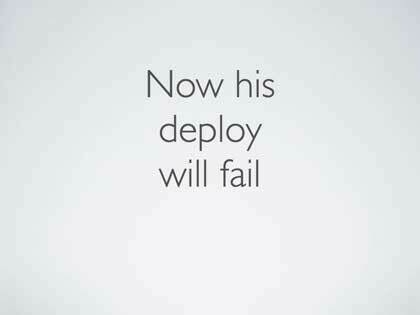
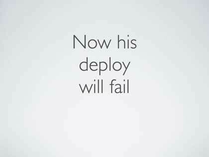

Housekeeping notes
Hey, nice, my blog has a navbar now! In addition to the (previously hidden) pages for Conference Talks and Personal Projects, there is a completely new page for my Professional Resum√©, which I have updated for the first time in uh… probably 12 years. So that’s good.
My personal about and splash page at arko.net is also readable on phone-sized screens now. That only took 15 years or so.
If you’re seeing this, that also means I have successfully migrated from my legacy Netlify setup to my new setup on Micro.blog. Now that I’m done moving all the existing posts, I can write new posts here without having to check out my git repo and create new markdown files and commit and push them. Hooray.
Coming up next: still working on importing 18 years worth of tumblr posts into another micro.blog instance, and also planning to add linkblog-style posts to this blog so I can post smaller things even more easily.
Updating iTunes Track Parser Scripts for Music.app
Moving from my usual niche interests to a niche so small that I have only seen two people on the internet who care about this: I have some really great news if you still want to manage metadata tags like it’s 2010 and you’re ripping CDs into iTunes. I’ve updated the most useful iTunes track naming script to ever exist, so you can use it in Music.app on macOS 15.1 Sequoia in the year 2024.
The scripts are named Track Parser (Clipboard) and Track Parser (Song name), and they were written by Dan Vanderkam in 2004. He maintained them until 2009, put them into a public Google Code project, and eventually moved on with his life. I used both scripts hundreds or maybe even thousands of times between 2004 and 2014. That’s when I switched to Bandcamp purchases and Apple Music streaming, so I haven’t had much track renaming to automate since then. (Well, besides downloading jwz mixtapes, but I wrote a dedicated script for that years ago.)
Then I ran across the soundtrack to the recent official expansion for DOOM (not for DOOM (2016), for the original DOOM! in 2024!). I downloaded the FLAC version, and slowly recollected my pipeline for batch converting audio files and dropping them into iTunes to add to my cloud library. I had the track listing in text, so I naturally expected I would run Track Parser (Clipboard) to take care of naming and numbering all of the songs for me.
That’s when I discovered that the scripts had never been updated for Music.app. Several minutes of searching later, I found out that Dan is now the author of Effective TypeScript, and his undergraduate iTunes AppleScripts don’t seem to be on his GitHub profile anywhere. I eventually turned up the Google Code repo where he published the scripts, which is happily still available in archive form even though Google Code shut down years ago.
Armed with the AppleScript source files, I was able to puzzle my way through a bunch of error messages that mostly boiled down to “that’s a keyword now”. I eventually got the script working, and that’s when I realized… I messed up converting the FLAC files. As soon as I fixed the issue, the M4A metadata was fully populated, and I didn’t need to parse the clipboard for track names after all.
At least I had fun tracking down the history of what happened to these scripts that were really significant to me once in the past, and updated them so anyone weird enough to be mass-editing song names today can do that more easily.
If that’s you, feel free to grab the Track Parser scripts from the Releases page in my new trackparser GitHub repo.
Homebrew cask formula for private GitHub repo releases
I try to use my dotfiles to install software for myself, mainly via Homebrew. This week, I ran into a new automation problem: I wanted to start using a program only available from a private GitHub repo, which requires authentication for downloads. To make things worse, new versions release frequently, so I can’t use a static link to the GitHub Release entry’s asset download link.
I ended up doing a bunch of experimenting and searching, and I initially found several posts about private GitHub repos, mostly centered around the idea of setting a special environment variable with a GitHub API token and then writing a custom Homebrew download strategy class.
I didn’t want to have to keep track of another env var with another GitHub token, and I didn’t want to have to maintain a custom download strategy class, so I kept looking. Eventually, I hit on this pull request to Homebrew itself from a few months ago, adding support for setting HTTP headers needed to download private repo release assets.
Unfortunately, the example in that PR had exactly the problem I mentioned, using a static URL containing a GitHub release. After carefully re-reading the Homebrew docs about creating casks, and then reading the source code of the class that powers the url stanza, I was finally able to craft something that works.
In my particular case, the important bit was figuring out how to look up GitHub releases by tag name (since this repo keeps the same tag name for all releases), and then look up one specific asset on that release by filename, to get the correct archive for my OS.
Putting it all together, here’s the formula I wound up with that requires no special environment variable, and requires no special download strategy, just uses the options built into Homebrew already, with commentary about each part:
cask "appname" do
# Use :latest to tell homebrew that this will always return the newest version, and there isn't a specific version number available.
version :latest
# Use :no_check to tell Homebrew that it can't know the checksum in advance, and so it should not try to validate the checksum of the downloaded archive.
sha256 :no_check
desc "some info"
hompage "https://github.com/username/appname"
# If there's no arguments and only a block, Homebrew will wait to run the block until it actually needs the URL to download the file at install-time.
url do
# Homebrew has a built-in GitHub API client, conveniently able to provide the list of releases, converted from JSON to Ruby hashes.
assets = GitHub.get_release("username", "reponame", "tagname").fetch("assets")
latest = assets.find{|a| a["name"] == "appname-macos-universal.zip" }.fetch("url")
# The return value must match the arguments for the non-block version of `url`, first a URL, and then an options hash. The `header` option can take an array if you need to provide more than one header.
[latest, header: [
# The GitHub API will return the binary content of an asset instead of JSON data about that asset if you set the Accept header to application/octet-stream.
"Accept: application/octet-stream",
# Homebrew also has a built-in helper that will return GitHub credentials, checking the keychain, config files, gh CLI tool, and other locations automatically. We can re-use those same credentials that Homebrew uses to make API requests for our own download by setting this header.
"Authorization: bearer #{GitHub::API.credentials}"
]]
end
app "appname.app"
end
I hope that helps anyone with a similar problem! At this point I’m just writing this down so that I can find this blog post later when I forget about it and need to create a formula for another private repo. üòÖ
Caddy plus puma-dev with SSL
Last time, we talked about setting up Caddy as a reverse-proxy to puma-dev, providing automatically-managed local development Rails apps on their own dedicated .test domains. Either I missed this back then, or something inside puma-dev or Caddy changed in the meantime, but SSL requests stopped working inside Rails apps today, and it took me a while to figure out what was happening.
I started getting the exception HTTP Origin header (https://example.com) didn't match request.base_url (http://example.com), and tracked it down to the HTTP_X_FORWARDED_PROTO getting sent to Rails, which was being set to http. Unfortunately, just setting the header X-Forwarded-Proto: https doesn’t work, because both Caddy and puma-dev strip it out and set their own value before sending the request on to the Rails app.
After a bunch more fiddling around, I figured out how to get Caddy to generate an SSL certificate for the requesting domain, using its internal certificate authority, and make a request to puma-dev over SSL, without validating the (self-signed) certificate provided by puma-dev. With this slightly more complicated Caddy config block, SSL is again working:
*.test {
tls internal {
on_demand
}
reverse_proxy https://127.0.0.1:9283 {
transport http {
tls_insecure_skip_verify
}
}
log
}
Caddy + puma-dev for local development
I develop a lot of webapps locally, often at the same time. For Ruby-only applications, puma-dev is by far the most convenient way to handle the situation. A single setup command gets you a lot out of the box:
- DNS resolution for all
.testdomains to resolve to localhost - A locally-generated SSL certificate root, so HTTPS works
- Automatic starting and stopping of Ruby processes on demand
- Adding apps easily: run
puma-dev linkthen visithttps://appname.test.
The one downside of puma-dev is that there’s no way to set a breakpoint and interact directly with the web server in a terminal. In those tricky cases, I would typically start a dev server myself just for that breakpoint and then go back to using the puma-dev server after.
If I only ever used Ruby processes, I would have stopped there and been happy. But modern web development includes a lot of additional servers, like webpack, or esbuild, or tailwind, or other external services that have to run for local development to work. In those cases, I often use a Procfile and overmind to manage the set of processes needed for local development. The problem with using a Procfile is that it removes all of the benefits of puma-dev: no more custom domain, no more automatic process management, no more SSL certs.
On top of that, even with a Procfile I would run into problems like a production app routing certain URLs to certain services. For example, I can never remember that /admin only exists on port 3001, while the rest of the app only exists on port 3000.
At this point, I took to complaining online about it, hoping someone else would have already solved the problem for me. Alas, none of the replies indicated there was anything already written that could do this out of the box.
So how, I thought to myself, can I keep the custom domains and SSL certificates, but write my own config file that maps certain URLs to certain ports? Well, I have a program I use for that already, and it’s Caddy. Caddy is amazing and wonderful and a breath of extremely great fresh air in the HTTP server space, and you should use it if you aren’t already.
But both Caddy and puma-dev expect to take over port 80 and 443 on localhost, so they can do their magic, and Caddy doesn’t offer the local TLD that puma-dev does, nor does it manage processes automatically. How can I get the best of both?
After a frankly embarassing amount of time searching the internet and reading Caddy forum posts, I eventually concluded that there was no single thing that did everything I wanted. That’s when I had a mildly deranged idea: what if I run puma-dev on a different port, and tell Caddy to reverse-proxy all .test domains to the puma-dev port? The puma-dev resolver will make sure that the domains point to Caddy running on localhost, and Caddy will make sure that the requests eventually reach puma-dev and from there reach my applications.
It took an hour or two of fiddling around, but I actually got it working! The puma-dev change was to install it to the default userland ports by running puma-dev -install -install-port 9280 -install-https-port 9283. The Caddy change was to add this block to my Caddyfile:
*.test {
tls internal
reverse_proxy 127.0.0.1:9280
}
Shockingly, that was all I needed to do, and everything worked at that point. Better yet, I can add specific support individual mappings, too:
app-one.test {
reverse_proxy /admin 127.0.0.1:3001
reverse_proxy 127.0.0.1:3000
}
It doesn’t handle automatic process management, but it can at least offer production-like routing to multiple processes running from a Procfile.
This doesn’t quite do everything that I want, since there are still hardcoded ports for the apps with custom routing, but it’s closer than I’ve ever had before. Maybe next time I can figure out how to wrap non-Ruby processes in a Rack wrapper and make puma-dev manage them for me.
Mastodon missing posts, with empty URL search results
tl;dr if you boot Mastodon without LOCAL_DOMAIN once, you might be unable to fetch posts from some other instances. If searching for a post URL returns nothing, try running bin/rails r 'Account.representative.update!(username: ENV["LOCAL_DOMAIN"])'. That fixed things for me.
So. Four hours of debugging missing posts later, here we are. The symptoms I noticed were:
- some posts were mysteriously missing on my server, even though they clearly existed on other servers
- posts that did appear were sometimes direct replies to posts that didn’t appear
- searching for a missing post by full URL would return no results, even if that very post was visible in the federated feed
Confused, I started reading logs, searching the internet fruitlessly, reading GitHub issues that contained the right keywords but were different problems, checking the Sidekiq admin page, and slowly reading every single page in the Mastodon admin section. I eventually found a typo in my sidekiq config, running the schedule queue instead of the scheduler queue. I concluded that must have been the problem, added the missing “r”, and went to bed.
The next day, I realized that I needed to verify that my fix had actually resolved the problem, and went to search for a post by full URL. It still didn’t work.
Completely out of ideas about why a search by full post URL worked on any Mastodon instance except mine, I gave up and started treating Mastodon like I would any Rails app with confusing behavior: open a production console and slowly run all the code involved while looking for clues.
I had already collected a line from the Rails log, telling me what controller handled my search request:
method=GET path=/api/v2/search format=html controller=Api::V2::SearchController action=index status=200 duration=1368.97 view=159.18 db=462.83
Armed with that information, I browsed to search_controller.rb and discovered that search results are collected by invoking SearchService. At that point, I was ready to start running the code myself to find out what was going on.
Step one: ssh to the VM running the Rails process.
Step two: edit the Gemfile to move pry-rails out of the development group.
Step three: run bundle install.
Step four: run bin/rails c to open a Rails console with Pry.
Step five: run cd SearchService.new to get into the right context.
Once I was inside an instance of SearchService, I could run the code I was reading in the call method by hand.
> @query = "https://aus.social/@liam/109599234831423305"
> url_query?
=> false
Hmm. That’s odd. Why would url_query? be false when the query is just a URL? Oh, looking at the url_query? method, it seems like @resolve has to be true. We can do that.
> @resolve = true
> url_query?
=> true
> url_resource
=> nil
Wait, why is url_resource returning nil? That doesn’t make sense either, public requests to this URL return reasonable responses. I guess that means we need to look inside ResolveURLService.
> cd ResolveURLService.new
> @url = "https://aus.social/@liam/109599234831423305"
> local_url?
=> false
> fetched_url
=> nil
It’s fetching from the URL, and getting nil? That’s downright bizzare. Okay, I guess that means we need to look into what happens inside FetchResourceService.
> cd FetchResourceService.new
> @url = "https://aus.social/@liam/109599234831423305"
> perform_request
=> nil
Okay, that’s just… what. Why is perform_request returning nil? What is this Account.representative thing that’s getting added to this request?
> Account.representative
=> #<Account:0x00007ffa66d5cb50
id: -99,
username: "localhost:3000",
[...]>
Wait. The username attribute is set to localhost:3000? That’s not the name of my instance, and that’s not even the value set in the LOCAL_DOMAIN env var. I guess I should fix that, and then try again.
> Account.representative.update!(username: ENV["LOCAL_DOMAIN"])
> perform_request
=> nil
Damn. I guess that didn’t fix it.
Wait. That method takes a block.
> perform_request{|r| r }
=> #<HTTP::Response/1.1 200 OK {"Date"=>"Sun, 01 Jan 2023 16:16:43 GMT", "Content-Type"=>"application/activity+json; charset=utf-8", [...]}>
Wait. That fixed it??? It works now???
One quick detour to the web UI and a single search later… yes, that did in fact fix it.
Some instances seem to refuse requests made on behalf of localhost:3000. Maybe it’s even in an instance blocklist, which would be pretty reasonable–it doesn’t make sense to try to exchange updates with a server running on localhost.
Sure would be nice if there were some way to know this had happened, though. It turns out that any call to Account.representative creates a new database record if there isn’t one, and saves the currently set local domain into the database forever.
Where does the local domain come from, you ask? It is set by the hosts initializer, which reads from the env var LOCAL_DOMAIN, with a fallback to localhost:3000 if the env var is unset.
I booted the Rails server one time before setting LOCAL_DOMAIN, and didn’t even create an account. Everything seemed like it worked perfectly until I stumbled across an instance that refuses requests on behalf of localhost:3000. And then it took four hours to debug.
It sure would be nice if Mastodon had some way to let you know that your Account.representative and your LOCAL_DOMAIN didn’t match up, to save that four hours of debugging.
Well, hopefully it won’t take you four hours to debug, since you found this post. Good luck!
Self-hosted Mastodon SMTP configuration
Since masto.host has signups disabled at the moment, I tried deploying Mastodon to Fly.io using tmm1’s flyapp-mastodon instructions. It worked surprisingly well, by which I mean about half of the documented commands were using removed option flags, I had to debug sidekiq restarting in a different random region constantly, and email sending didn’t work at all.
I eventually got email sending working via Postmark, but the Mastodon documentation is extremely unhelpful about how to configure sending emails: it just lists all possible ENV vars and then moves on.
Here’s the env var configuration that worked for sending emails from Mastodon through Postmark, for me:
SMTP_SERVER="smtp.postmarkapp.com"
SMTP_PORT="587"
SMTP_ENABLE_STARTTLS="always"
SMTP_LOGIN="<Postmark SMTP Token Access Key>"
SMTP_PASSWORD="<Postmark SMTP Token Secret Key>"
SMTP_FROM_ADDRESS="<Postmark Sender Signature verified email address>"
Hopefully that helps someone (or at very least future me) set up outgoing emails on a self-hosted Mastodon server in the future.
Sharing an Apple XDR or Studio Display between a Mac and PC
During the last episode of monitor shenanigans, I figured out how to connect my PC’s Nvidia GeForce GPU to an Apple Display. The new challenge began when I realized that I wanted to switch back and forth between my M1 Mac and my PC by pushing a button, instead of by standing up, moving the monitor, and changing the cable plugged in to the back.
After an enormous amount of research, it seemed like I would probably be able to use the CKL-62DP-4 KVM switch, which explicitly supports the DisplayPort 1.4 standard needed for 5k or 6k screens at 60hz. So I ordered the KVM, waited two weeks for it to arrive, and connected everything up using my existing cables. It even almost worked!
I was able to switch an Apple Pro XDR Display and an Apple Studio Display between a 14" MacBook Pro (M1 Max) and and a Mac Studio (M1 Ultra) using this CKL KVM, using two generic USB-C to DisplayPort cables from the Macs, and sending the output to the Studio Display with this bi-directional DisplayPort to USB-C cable.
The problem arose with one Mac and one PC—the one configuration that I actually want to use. Plugging in the PC works great. Plugging in the Mac works great. Switching from the Mac to the PC works great. Switching from the PC to the Mac… doesn’t work at all. The screen never comes back on, and the monitor has to be unplugged and replugged to start working again.
Since I was never able to get the KVM to work with one Mac and one PC, I kept scouring the internet for things that might meet my needs. I eventually found this unknown brand USB-C switch, with a lone review mentioning that it had worked to switch between a PC and a Mac. When it arrived, I connected the switch to my Mac with this USB-C cable and to the GTX 3080 in my PC with this DisplayPort to USB-C cable.
Shockingly, it worked perfectly. After the amount of cables, devices, and configurations that I tried while attempting to get the CKL KVM to work, I had thought maybe that was impossible, so it was a big relief.
Unfortunately, I couldn’t figure out a way to get the fancy Belkin cable that adds a USB connection (in addition the the DisplayPort) to work through the switch—the PC says there is a USB error and only the display works, with no speakers or camera.
Since the switch doesn’t include a true KVM, you might need to also add a regular USB switch like this one if you want to share a single keyboard and mouse between the two machines.
That was enough to meet my needs, and so I have actually settled on that as my permanent setup, with no camera and speakers from the PC, since I have a different camera and speakers that I prefer to use.
Update you can now buy a USB-C Combiner and a USB-C KVM from LevelOneTechs in the US. I haven’t bought one, but it seems like exactly what I was trying for, and they explicitly state that the combiner and the KVM work together.
Update again you can’t buy it yet, but Sabrent claims they will sell a Thunderbolt 4 KVM soon, thanks @paul for the link!
Update again again I bought the Sabrent Thunderbolt 4 KVM and built a new PC with a GTX 4080 and ASUS ROG Strix Z790-i with Thunderbolt. Switching my Thunderbolt display between Mac and PC is now reliable and consistent, hooray.
Apple Studio Display from a PC without Thunderbolt
So maybe you have an Apple Studio Display (or possibly even an Apple Pro XDR Display), and you followed my instructions from last time to connect your display to your PC. You may have noticed a shortcoming: it’s impossible to adjust the brightness of the monitor from your Windows PC. Or maybe you noticed that the built-in webcam and speakers on your Studio Display don’t do anything.
In theory, USB-C can provide both DisplayPort for a monitor and a USB channel for software brightness control, the monitor’s USB hub, camera, speakers, etc. In practice, there seems to be only one cable in the world that is a single combined USB-C on one end and DisplayPort 1.4 + USB on the other end. That cable is the Belkin Charge and Sync Cable for Huawei VR Glass. Since the Huawei VR Glass is only sold in China, that cable is also only sold in China.
Several visits to Ali Express and other generic commerce websites later, I spent $90 on this cable plus shipping and waited just over three weeks for it to arrive. The outcome, though, is surprisingly solid.
After I downloaded the latest Boot Camp image using Bombardier and then followed these instructions to install the Boot Camp drivers, the Apple Studio Display not only had working brightness controls, it worked perfectly as both speakers and camera for the PC.
If your PC doesn‚Äôt have a Thunderbolt card, this seems like a genuinely good option to get full resolution and hardware support for Apple displays on your PC. It also seems like it’s probably the only option?
Update there is now another option, the USB-C Combiner from LevelOneTechs. You can just buy a box that does the thing, shipped from the US, for $84. No need to wait a month for shipping from AliExpress!
Update again eventually, I bought a Sabrent Thunderbolt 4 KVM and built a new PC with a GTX 4080 and ASUS ROG Strix Z790-i, which has internal GPU passthrough for the Thunderbolt ports. Switching my Thunderbolt display between Mac and PC is now reliable and consistent. Hooray.
Jekyll in puma-dev with live reload
It isn’t a secret (and probably not even interesting) that this blog has used Jekyll for many years. Almost as many years ago, I discovered puma-dev and used it to set up all of the Rails and Sinatra apps that I work on. I don‚Äôt have to start or stop any local development servers, I just browse to appname.local, and a Puma worker will start up and let me see the app. It even handles SSL, which is very handy.
Ever since I set up puma-dev for the apps I work on, it has annoyed me that I can’t do that for my blog. Instead, Jekyll requires me to actively start a server to see a local preview, and if I close that terminal window I’m just out of luck.
I believe it was originally written to let you host your Jekyll blog on Heroku without a build step, but the rack-jekyll gem turns out to be exactly what I wanted: I can open https://blog.test and see a freshly-rendered copy of my blog. The trick is setting up a config.ru for Puma to use:
require "bundler/setup"
require "rack/jekyll"
run Rack::Jekyll.new(auto: true, future: true)
Once you have that file, run bundle add rack-jekyll; bundle add puma; puma-dev link blog, and you’re off to the races.
Okay, great, I hear you saying, but what about the live reload you promised? That turns out to be a little bit trickier. I wound up having to write a Jekyll plugin to run the livereload server. But it works! Here’s the setup:
-
Run
bundle add rack-livereload. -
Download
live_reload_server.rband copy it into_plugins. You might have tomkdir _pluginsfirst. -
Update your
config.rufile to includerack-livereloadand the Jekyll plugin: require “bundler/setup” require “rack/jekyll” require “rack-livereload”require_relative "_plugins/live_reload_server" Jekyll::LiveReloadServer.start! use Rack::LiveReload run Rack::Jekyll.new(auto: true, future: true) -
Restart Puma by running
touch tmp/restart.txt. -
Reload your Jekyll site in your browser.
-
Edit your markdown files and luxuriate in the bliss of watching them reload automatically in your browser as you save.
Use a Thunderbolt 3 display from Windows
Since 2016, when the LG UltraFine 5k was announced, the only high-DPI 5k screens have been for (or inside) Macs. The external displays, all three of them, have used Thunderbolt 3. There have been some non-Thunderbolt 5k panels that are ultra widescreen, but none of them have been the high-quality high-DPI screen I wanted.
With the field narrowed down to the UltraFine 5k, the Apple Pro Display XDR, and the Apple Studio Display, I spent a lot of time wildly searching the internet trying to figure out some way to also use the monitor with my gaming PC. Everything I could find from searching basically boiled down to either “lol it’s impossible” or “you have to add a PCIe Thunderbolt card to your PC”.
I eventually found a passing reference somewhere on Twitter to “bi-directional” DisplayPort to USB-C cables, and that turned out to be the miracle I was looking for. With a bi-directionable cable that supports DisplayPort 1.4, you can drive an UltraFine 5k, an Apple Studio Display, or even an Apple Pro Display XDR at 6k and 60hz, directly from your graphics card’s DisplayPort port. The magic is provided by Display Stream Compression (DSC), which reduces the bandwidth needed down to a level that USB-C can sustain.
I turns out someone had already written a blog post about this, but I wasn’t able to find it when I was searching. Unlike that blog post, my simple one-cable connection also doesn’t support using the displays’ internal USB hub, or using any speakers or cameras that might be attached. I’m happy with that because I already have other speakers and a camera set up.
In the end, this post is partly a note so I can look this up later if I need to, and partly to try to spread the word that bidirectional DisplayPort cables exist and work with 5k and 6k displays. Hopefully future me, and others with this problem, can spend fewer days searching the internet and just buy the cable and get on with their lives.
Update you can now just buy a DisplayPort and USB to USB-C box that not only works like a bi-directional cable, but also adds USB communication between your PC and monitor, for brightness control, speakers, and camera access.
Automatic Dependabot merges
I’ve been using Dependabot for a long time. Back before GitHub bought it and took away the web dashboard, there was an amazing, glorious, wonderful feature: you could check a checkbox, and Dependabot would merge the open PR as soon as your tests passed.
Now that Dependabot has no web dashboard, and can’t be added to a repo with one click, it has also lost the ability to automatically merge updates.
After several days of copying and pasting from blog posts and then troubleshooting YAML syntax, I am here to report that one of those three things can be brought back! (If you run your tests in GitHub actions, anyway.)
Here’s what the automerge GitHub action looks like:
{% raw %}
# .github/workflows/merge-dependabot.yml
name: "Merge updates"
on:
workflow_run:
workflows: ["CI"]
types: ["completed"]
branches: ["dependabot/**"]
jobs:
merge:
name: "Merge"
runs-on: "ubuntu-latest"
if: >
github.event.workflow_run.event == 'pull_request' &&
github.event.workflow_run.conclusion == 'success' &&
github.actor == 'dependabot[bot]'
steps:
- name: "Merge pull request"
uses: "actions/github-script@v6"
with:
github-token: "${{ secrets.GITHUB_TOKEN }}"
script: |
const pullRequest = context.payload.workflow_run.pull_requests[0]
const repository = context.repo
await github.rest.pulls.merge({
merge_method: "merge",
owner: repository.owner,
pull_number: pullRequest.number,
repo: repository.repo,
})
{% endraw %}
If your CI GitHub action is named something besides “CI”, you’ll need to put your job’s name in the fourth line.
Happy automerging!
Ruby55: how to make a gem in under 60 seconds
Tell me if you’ve heard this one before: a flying squirrel walks into a terminal, and shows you how to create a gem in 55 seconds.
I’ve been meaning to post about this for 18 months now, but my Cloud City coworker Brendan Miller offered to turn a Bundler tutorial into a video containing me as an an animated flying squirrel. How could I refuse?
Just in case you needed a video explaning how to use Bundler to create a new gem, here you go!
Instant Rails CI for GitHub Actions (finally)
A couple of months ago, I built a webapp from scratch using Rails 7. In addition to leaving Node out of my Rails app, I wanted to use GitHub Actions as the only CI for a real webapp that other people use.
GitHub Actions was first introduced in 2018, and one-click CI for GitHub Actions was introduced in 2021. Because that is literally years in the past, I assumed that it would be straightforward to set up a Rails app to automatically run tests inside GHA. Nothing could have been further from the truth.
I started where you might expect, going to /actions/new inside my repo and searching the GitHub-provided starter actions for “Rails”. Somehow, even though Django and Laravel apps had one-click CI, the Rails starter workflow… runs Rubocop. And Brakeman. And no tests. I guess linting is better than nothing, but that is extremely not CI, and definitely does not help me know if it’s safe to deploy my app automatically.
Annoyed, I went to search for a public GitHub Action file that I could copy and paste into my project. Somehow, all the blog posts I could find were about the beta version of GitHub Actions, and none of the YAML files actually worked. On top of that, every single blog post told me I would need to make changes to my app’s code so that my tests would run. I know enough about Rails to know that is absolutely not true, but apparently no one who knew that ever wrote about it somewhere easily findable with a search engine.
At that point I was annoyed all the way into action: I frankenstiened together three different blog posts and then started deleting everything that seemed unneeded or would require changes to my code. By the time I was done, I had a pretty concise YAML file that 1) worked with any Rails app out of the box, 2) supported both minitest and rspec without any changes, and 3) ran security checks and lints in a second parallel job, so everything finished faster.
Once I had a working action, my first thought was to simply post it here… but then I realized I could fix the one-click workflow offered by GitHub itself to actually run tests instead of just linters! So I went and spent four days getting my pull request accepted, and now there’s a gloriously straightforward two-click way to test your Rails application with GitHub Actions. Phew.

Parsing logs faster with Rust, revisited
A few years ago, I wrote about parsing logs 230x faster with Rust, and then followed up with some improvements.
Thanks to a contributor adding IP address deduplication, I’ve had to update, build, and deploy it again. As a result, I learned some new stuff about: rustc inside qemu, Rust LTO (link-time optimization) with musl, profile-guided optimizations, and just how fast M1 Max MacBook Pros are.
rustc segfaults in Docker’s qemu
The (somewhat hacky) AWS Lambda setup I am using predates support for Rust. Instead, I tell AWS it’s a Go binary, and then upload a Rust binary. Binaries running in Lambda’s “Go” mode need to be compiled against musl libc (probably because Lambda’s runtime is built on top of Alpine Linux, but I don’t know for sure). Back in 2018, I couldn’t figure out how to get Rust to cross-compile from macOS to Linux with musl, so I used a Docker image with a cross-compiler built in.
The first problem I ran into while updating the project was… not having an x86 machine anymore. My M1 Max MacBook Pro is really great, but the Docker image I was using to cross-compile only exists in x86 flavor. (Docker calls it “amd64”.)
To run x86 images on the ARM-based M1 Macs, Docker ships a copy of qemu inside, to run the container on an emulated x86. Unfortunately, rustc segfaults inside Docker’s qemu. With no idea how to resolve that almost-two-year-old problem, I gave up and decided to use an old Intel Mac to build the new version, at least for the time being. If I was able to get it working, I figured I could set up GitHub Actions to build it for me or something.
Rust link-time optimization with musl
Once I had burned a day or two troubleshooting the insurmountable segfault and given up, I ran into a new problem. In 2018, a contributor enabled LTO for a huge 25% speedup. It clearly worked at the time, but it seems the Docker-based cross-compile had stopped working by November 2019. As far as I can tell, the problem is exclusive to using both LTO and musl at the same time. Inside the Docker container, LTO works with glibc, and musl works without LTO… but you can’t have both together.
Fortunately, Rust cross-compilation has improved a lot in the last few years. Thanks to macos-cross-toolchains and cross, I was able to ditch the Docker setup entirely and compile for x86 Linux with musl directly from macOS on ARM. (Well, once I got it configured. Which required synthesizing together three separate blog posts, since there’s no documentation that explained what I needed.) I’m super impressed that cross works so well, and not just from macOS on my laptop but also from Linux on GitHub Actions.
Profile-guided optimizations
Finally, I learned that even the previously absurd speeds that I was getting can be soundly beaten via modern hardware and compilation techniques.
At the beginning of 2019, we had made it as far as 353,000 records/second on one CPU core. In 2022, just recompiling and running the test again on an M1 Max MacBook Pro with Rust 1.60 is already a kind of unbelievable improvement: 550,000 records/second, a 56% improvement (!). Those Apple hardware engineers really know what they’re doing, apparently.
There’s another new cool optimization thing that works in Rust now, though: profile-guided optimization. PGO is actually a feature of LLVM that you can enable, compile your program, run it several times to gather profile data, and then compile again while feeding LLVM the profile data that you collected. The PGO docs from Rust are quite readable, and I was able to copy and paste the example into my build script.
With PGO online, the a single M1 core jumped up from 535,000 to 638,000 records/second, another 19% improvement, bringing the total speedup to 76% faster than before.
In terms of “how fast can one whole laptop go”, I also benchmarked in multi-file, multi-core mode, maxing out the entire machine. On a 2018 Intel MacBook Pro, the fastest possible speed was 1.1 million records/second. On the 2022 M1 MacBook Pro, it was 3.2 million, and adding profile-guided optimization brought it up to 3.6 million. That’s a 3.3x speedup, and I didn’t even make any changes to the program. ü§Ø
Rust (and Apple Silicon) continues to impress.
feedyour.email
Confession time: I still use a feed reader. (Honestly not sure at this point if that makes me Just A Millenial™ or makes me a weird cranky holdout insisting that I don’t want blog posts in my email.)
To help myself cope with our brave new era of newsletters without blogs, I started using Kill the Newsletter!, a handy single-purpose website that gives you a random email address and an RSS feed for emails sent to that address. I found it so helpful that I shared it with my friends, and we used it to feed our addiction to Money Stuff.
One friend reported a consistent problem, though: emails send in the morning not showing up in the feed until the afternoon, or sometimes even the next day. I suggested running our own copy so that we could debug things, but that friend isn’t specialized into web development, and I don’t want to run my own mailserver.
I didn’t realize it yet, but I had already been nerdsniped.
Over the next day, my brain automatically architected my own version in the background while I was in the shower or doing nothing in particular. By the time @numist asked how hard it would be to build a copy, I was ready to guess “about an hour”.
Somewhat predictably for writing software, I was both correct and off by 3x at the same time. In an hour, I had a proof of concept that ran end to end. To get it productionized and deployed took another two or three hours, though.
A mere two weeks of occasionally tweaking the copy, design, and functionality later, it was ready! It’s honestly pretty handy, even if I do say so myself. Try it out at feedyour.email.
uses this interview
Back in September, I did an interview with the impressively long-running usesthis.com. Since I like to archive my own writing, I’ve reproduced it here.
Who are you, and what do you do?
Hello! I’m André Arko, although I mostly go by @indirect on the internet. I spend too much time online, and I think that computers and programming are really neat. As for what I do, uh, it’s hard to pin down exactly but most of it could be called “web development”. Probably.
For example, I artisanally hand-wrote all the HTML and CSS for The Cube Rule, a website that exists primarily make everyone who reads it astounded and/or enraged while remaining indisputably correct. It will settle whether a hot dog is a sandwich (no) and countless other food controversies. The site has been cited in a Maryland state judicial ruling, and was a top 5 finalist for the 2019 Webby Awards.
I’ve loved the Ruby programming language ever since I discovered it in 2003. Then I discovered Ruby on Rails in 2004 or so, and that led to lots of involvement in the Ruby community. Notable highlights include:
- getting involved in open source in 2009 and ending up lead developer of Bundler, the Ruby language dependency manager
- presenting around 25 talks at 36 events in 14 countries
- writing the third edition of The Ruby Way (because I loved the first edition, which I used to learn Ruby in 2003!)
- founding the non-profit Ruby Together, a 501(c)(6) trade association that funds open source development work to benefit all Ruby developers
Professionally, I’ve also had a bit of a roller-coaster, working for a software defense contractor, a personal finance startup, a web application hosting startup, a personal media streaming startup, and then Cloud City Development since 2013. Cloud City is an agency, and I spend my work days helping clients (who are mostly tech companies, and mostly in SF) develop their own web applications. There’s a set of stories from each of those places, but you’ll have to ask me about them at a conference or on the internet so this interview can stay a manageable length.
Back on the personal side of things, and for once including no web development, I built a lunar calendar for witches and werewolves with my partner @sailorhg. It’s written in Swift, and lives on the iPhone App Store. It’s also the subject of my favorite blog post and conference talk, ”How to calculate the phase of the moon very, very badly!”.
I also curated actually.men, a collection of single-serving websites attempting to fight against the misogyny rampant in tech: the seminal istechameritocracy.com, followed by isitapipelineproblem.com, arewomenbadatcoding.com, and dowomentalkmore.com.
What hardware do you use?
Okay, now it’s starting to feel like a theme, but… it’s kind of complicated.
When I’m out and about, I use a pacific blue iPhone 12 Pro, an Apple Watch Series 6, and AirPods Pro. Each one of those devices feels right on the the edge of magic to me. Today’s phones are absolutely the culmination of everything I could imagine while using a Handspring Visor Deluxe and a Creative NOMAD Jukebox in 2000. The AirPods Pro ability to switch between transparency or noise cancellation, with quick connection when I change devices, makes them my favorite headphones of all time.
My desk setup has an OWC Thunderbolt 3 Dock, which hosts an LG UltraFine 5K display (discontinued üò¢), Audessey Lower East Side speakers (discontinued üò¢), and Keyboardio Model01 (discontinued üò¢). For less miserable video calls, I‚Äôve also added a boom-mounted R√òDE VideoMic NTG, a FujiFilm X-T30 made into a webcam via Genki ShadowCast, and an Elgato Ring Light.
I’m pretty sure I have a keyboard problem. For one, I’ve been using the Dvorak keyboard layout since around 2003. (Somehow, Dvorak completely resolved my crippling RSI from computering for 16 hours a day). For another, I fully replaced the keyboard in my Mac laptop with a FingerWorks MacNTouch touch surface until that became physically impossible. Today, I am definitely a sucker for unusual keyboards, and I often use a Kinesis Advantage 2, a Keyboardio Atreus 2, or my hand-built prototype Atreus 2. (Turns out my college friend Phil designed the Atreus! Small world.)
My (hopefully back in use soon!) travel kit includes a Hyper 100W charger and battery pack, a Roost laptop stand, and an Apple Magic Keyboard and Magic Mouse. On trips to other countries, I add a Passport II Pro so I can use most plug types. If I bring my Nintendo Switch, I’ll also pack a Covert Dock so we can play games on big screens.
At any given time, work means I have between one and three 16” Intel MacBook Pros that I connect to that desk setup. Those are pretty nice machines, to be honest. A laptop with 32GB of RAM is a godsend when you have to run a bunch of stuff in Docker.
In my personal life, though, I use an M1 MacBook Air. After almost 10 years of computers that aren’t noticeably faster than last year’s, the Apple Silicon Macs are honestly a revelation. My tiny 2.8 pound 13” laptop has no fan (!) but can compete with desktop Intel PCs… and has 12 hours of battery life. It “only” has 16GB of RAM, but the entire 1TB SSD is about as fast as DDR2 RAM from the early 2000s. I love being surprised by how fast a computer is, and I’ve had that feeling in spades.
Speaking of fast computers, my desk also squeezes in a Corsair One a200 gaming PC, with an AMD Ryzen 5900X CPU and Nvidia GTX 3080 GPU. It’s one of the few machines that can definitely outperform my tiny MacBook Air, but I pretty much only use it to play games at 144fps with all the graphics settings turned up to “highest” on my 4k LG 27GN950 monitor.
The keyboard problem also continues on the PC, where I use at Filco Majestouch 2 HAKUA with Cherry MX Silent Red keyswitches and After-school 1992 keycaps. Rounding out the gaming setup is a Logitech G203 Lightsync mouse, HyperX Cloud Flight S headset, and an Oculus Quest wired to the PC for VR. The final (and my favorite) accessory is the Microsoft Elite 2 controller, the only piece of gaming hardware that feels to me like Apple could have made it.
Next to the desk is my media center, with an LG OLED C8 TV, an AppleTV 4k, a Playstation 5, and a Nintendo Switch dock. They’re all connected to an Onkyo TX-NR545 that drives 7.1 surround speakers. I mainly use it for watching movies and TV shows, but console exclusive games are hard to resist.
The movies and TV shows mostly comes from the other side of my desk, where my home server lives. That setup is a 2018 Mac Mini with an OWC Thunderbay 6 with six 14TB hard drives, for 72TB of usable storage. There’s also a Synology DS216j for Time Machine backups, and a Fujitsu ScanSnap iX500.
Getting my first ScanSnap back in 2004 might be the biggest quality of life improvement I have experienced as an adult. I can scan papers and then shred them in just a few seconds. üéâ If I need it later, I can search by date, title, or even inside the OCRed text. (From my phone, if necessary.)
And what software?
Oh boy. This‚Äôll probably take a while. üòÖ Thanks to consulting, I typically set up between 2 and 5 new machines every year. To make that easier, I‚Äôve scripted a lot of the setup in my dotfiles, which use homebrew extensively to install applications and command-line tools.
My programming work is mostly web development on macOS. My most common workdays involve a lot of MacVim, Terminal.app, git and GitHub, Ruby, Rails, and RSpec. It doesn’t happen every day, but I’ve also spent a lot of time working with Terraform, Docker, Node, and React, as well as a host of other frameworks and tools.
When I’m working directly in the terminal, I can’t live without the ruby switcher chruby, the search tool ripgrep, the directory jumping tool zoxide, and my minimalist git shortcuts (and magical git shortcuts). For my shell, I run zsh, with a custom powerlevel10k status line, displayed in 14pt Menlo Nerd Font.
Over the years, I’ve built up a pile of related handy tools that I often use to make my work easier. My favorites right now are:
- Fork, a great visual git client that lets me stage individual lines
- Dash, to download and search API docs incredibly quickly
- tmux, to run a CLI session shared by all my terminal windows and SSH sessions
- puma-dev, to run local dev servers with custom domains and HTTPS
- wishfish, to run SSH connections over wifi so they don’t disconnect when I undock from my desk
- bpb, which lets me sign my git commits without gpg
- pam_reattach, so I can
sudovia TouchID from tmux
In an example of going probably too far for a joke, I wrote my own homebrew formula to install a new source for the fortune command. Now, every time I open a new shell, I see a random text-art My Little Pony saying a quote from @horse_ebooks. It’s incredibly stupid, and I love the results so much I also wrote an Alfred shortcut to make it easier to screenshot and post funny examples to the Tumblr.
When I‚Äôm not programming, I‚Äôm probably reading something. My biggest timesink is definitely Twitter, where I have had an account for checks notes ‚Ķ14 years? ü§Ø In a similar kind of probably going too far, I wrote my own custom web service to format Tweets the way I want when posting them to my ‚Äúmain‚Äù Tumblr at indirect.io.
When I’m not on Twitter, I (somehow, still, in 2021) read a lot of RSS feeds using the excellent Mac-and-iOS Reeder. Everything not from an RSS feed goes into Instapaper, where I like to think I might, one day, read things. (Unless it’s a recipe. Those go in Paprika.)
For typical web browsing, I am a big fan of Safari with 1Blocker and 1Password. I’m not actively against any other browsers, and sometimes use Chrome just for the excellent devtools. But only Safari is optimized to the point where I can use my computer for multiple days on a single battery charge.
When reading long-form, fiction or non-fiction, I mostly use the Kindle app for iOS. I’ve been reading ebooks since back when that meant typo-ridden .txt files from the sketchier parts of the internet, and I’m both very happy and very upset with how ebooks have turned out today. The ability to buy almost any book I want, while the author gets paid, is absolutely amazing.
On the other hand, the way buying ebooks doesn’t mean you own them is incredibly upsetting. My personal workaround is to combine Kindle ebooks with Calibre and De-DRM. It means I do a bunch of tedious manual work that doesn’t change anything now, but at least I know that I have copies of the ebooks I paid for that will keep working even if Amazon decides to terminate my account.
When I’m writing my own long-form text, I mostly use Ulysses. It’s good for focused writing, and the sync across Mac, iPad, and iPhone is very helpful when I want to squeeze in writing time around other things. When I’m working with others, I’m a big fan of Draft for the editing experience that includes versioned diffs.
For anything with dated entries, like a work log, journal, or reading and watching diary, I’m a big fan of Day One, thanks to the date-oriented entries and sync across all my devices. If I’m writing Markdown, I’ll often use Marked 2 for a live preview. It’s even customized the theme from my blog, for an accurate preview if I’m writing a blog post.
I also spend a lot of time chatting online, mainly in iMessage, Discord, and Slack. After twenty years of intense online conversations, I’m glad messaging is available to almost everyone, almost everywhere… but I really miss being able to connect every chat backend to Adium, where I could have all my conversations in one app, and a single searchable log of all my conversations in my own postgres database.
Slack is a lot more approachable than IRC, and a lot more scalable than Campfire, but has repeatedly made clear that they aren’t interested in community users or moderation tools. Discord is deliberately made for communities, but it’s incredibly hard to find (or make) a middle ground between “basically empty” and “overwhelming firehose”. iMessage is very good at what it does, but it doesn’t help at all with the 8 other messaging apps I have to use to talk to people who won’t or can’t use iMessage. We made it to the future, and communication is amazing! …and also a huge bummer.
My day to day productivity suite is fairly boring: I use Apple Mail connected to Google Apps G Suite Google Workspace on a custom domain. I calendar from Fantastical, due to the combination of natural language event creation and continuous new helpful features for years. I’ve also just started using Cardhop from the same folks as a superpowered contacts app. For calculations, I’m a long-time user of Soulver, which hits the perfect sweet spot between calculator and spreadsheet for me.
To keep track of my own projects and todos, I’ve been using OmniFocus for more than a decade. I spend more or less time with it as my personal task tracking waxes and wanes, but it’s definitely been the consistent place I know I can track anything that I need to get done. For more general “keep things in it”, I’ve been using Notion. It’s better than any other personal wiki I’ve ever used, mostly because it does a pretty good job as both CMS and database, with excellent sharing and teams support.
I’ll wrap up with shoutouts to the random set of utilities that I feel like I need on any computer I use, in no particular order. Alfred continues to be the best launcher, clipboard history, and automation tool. I have written several of my own workflows to act as a GUI for scripts, and I use the Dash integration to look up API docs constantly. Karabiner-Elements is a must to force even badly-written programs to allow me to type in Dvorak, and to convert the capslock key into control if I hold it down and escape if I tap it. (Yes, I also have muscle memory for Emacs AND Vim. Oof.) I also use Little Snitch, so that I can control what programs are allowed to use the network depending on what network I’m connected to. For example, if I’m tethering to my phone, I don’t want Backblaze, Dropbox, or iCloud Photos to sync or back up my local changes.
Less of a requirement but significant quality of life improvements include:
- MenuMeters, so I can see when network, disk, or CPU usage has gone wrong
- Due, which I use for any todo or reminder that has hard time limits
- SoundSource, a replacement for the Sound menu that has superpowers, including per app volume controls and a menu for changing outputs
- Hammerspoon, which I use mainly for window management keyboard shortcuts
- Shareful, which adds a “Copy” item to the OS share menu (but why isn’t this built in, is what I really want to know)
- PeakHour, so I can see if my home internet connection is acting up
What would be your dream setup?
I think my hardware is getting pretty close. If this interview was 18 months ago, I would have said adding a gaming PC. Today, I’ve pretty much spent the last 18 months shopping and buying and setting that up, and I’m really happy with how it turned out.
In my dreams, I can afford a Pro Display XDR, and it’s paired with some future Mac Pro that has Apple Silicon. I’d also have the upcoming Keyboardio Model100 with Cherry Blue keyswitches and translucent keycaps, as well as an Apple Magic Mouse that somehow auto-switches when I connect a machine to my dock.
In my bigger dreams, all computers have error correction, and preserve human-entered data against crashes and physical or human accidents. It could be impossible to lose your work accidentally. We have the technology!
In my biggest dreams, all of that is happening in a world with open borders, guaranteed housing, gay marriage, free public healthcare, trans rights, and universal income. We’re not particularly close to that world, and I’m honestly pretty worried about whether the world as a whole is even moving in that direction, but I’m doing what I can to help things along.
Exclude bundles from Time Machine and Spotlight
short version: run cd; bundle plugin install bundler-mac, never think about it again.
long version:
Last week I noticed that Time Machine was taking an incredibly long time to finish a backup. I investigated using The Time Machine Mechanic and discovered that at least one of the slow things was many thousands of files from installed gems.
I have a lot of Ruby projects checked out on my machine at any given time. To keep all of those projects completely isolated from each other, I use bundle config set --global path .bundle. That config means each bundle will be installed into the .bundle directory inside that project.
It turns out that installing tens or hundreds of gems each into tens or hundreds of projects is… a lot of files. And all those files need to be backed up anytime I check out a new project or update a project and change the installed gems. Realizing that I don’t actually need to back up those files, since I can reinstall the ones I need by running bundle install, I started looking for ways to automatically exclude bundled gems from backups.
I was able to find a pretty good wrapper function posted to Github. It can handle npm, bundler, and cargo fairly effectively, but replacing commands with shell functions always feels kind of hacky. Then I discovered that Cargo actually excludes built files from Time Machine automatically. If Cargo can do it, Bundler ought to be able to do it, right?
This led me on a multi-week quest, wherein I discovered the 12-year-old xattr gem, then had to learn enough about fiddle to update xattr to use it, then write tests until I was confident that it worked. Once I had a new xattr gem, I was finally ready to tackle the original idea: making Bundler exclude gems from backups automatically.
Somewhat ironically, I mentored the Google Summer of Code student who implemented Bundler plugins, but I had never written one myself. Fortunately, the docs for writing a Bundler plugin were actually pretty good! It took much less time to actually make it work than it had to figure out what I wanted to do in the first place. In an afternoon of work, bundler-mac was born.
While researching Time Machine and how to exclude files from backups, I discovered the answer to something else that had annoyed me: Spotlight indexing. If I use the Finder to search for “module”, I don’t want to see every file from every gem I have ever installed that defines a module… but that’s what I get by default. So I added something to bundler-mac that also creates a magic dotfile to warn Spotlight away. No more 25 search results from 25 copies of the same gem!
Bundler plugins have one somewhat surprising aspect: if pwd has a Gemfile, installing a plugin will only apply to the current application bundle. If there is no Gemfile present, installing a plugin will apply at the user level, to all application bundles. Because of that, you’ll want to make sure that you cd into your home directory before installing this plugin.
Maybe, if this works well, it can eventually be part of Bundler itself! If we’re incredibly lucky, maybe this can eventually be part of every package manager, and not just Cargo and Bundler.
With that, we’ve made it through all the explanations to the very end! Run cd to get to your home directory, and then run bundle plugin install bundler-mac to get the plugin. Now anytime you run bundle install in the future, your bundled gems will be excluded from Time Machine backups and Spotlight search indexing. Hooray!
Never `bundle exec` again
If you work with a lot of Ruby and/or Rails codebases, you probably spend a significant amount of time using bundle exec to run commands. Over the years, I’ve spent a lot of time explaining why bundle exec exists, what it does, and how to avoid it. I’m writing this post now in hopes that it will spread across the Ruby community, and over time hopefully everyone will know the answers to those questions.
Why does bundle exec exist?
The bundle exec command is needed to tell your computer when you want to run a command using a gem from the current application’s Gemfile.
When you gem install, it puts the gem in a ruby-wide location. When you bundle install, the gem is just for that codebase. That means running rake will get you the newest rake version installed with gem install, while bundle exec rake will get you the rake from your Gemfile.
If you don’t use bundle exec, you might happen to get exactly the same version from your Gemfile, and not even notice. You might happen to get a version close enough that everything still works. Sometimes, however, you will eventually get a version of the command that doesn’t work with your application, and suddenly everything is broken, confusing, and hard to debug.
How to type it less
- I have heard that
rvmoverwrites all gem commands to automatically load your Bundle, so you don’t have to usebundle exec. I don’t recommend doing that, but it seems to work for at least some people. - Create a shell alias to make it shorter to type. I’m partial to
alias b="bundle exec".
To be honest, neither one of these options strikes me as particularly good, and I wasn’t ever very happy with them. Fortunately, there’s another option.
Binstubs, the other option
For me, the way that makes sense to distinguish between ruby-wide commands and application commands is to use per-application executables. A binstub lives in your application’s bin/ directory, and contains just enough code to set up the application-specific environment before running the command you’ve requested.
Running /path/to/app/bin/rails is functionally equivalent to running BUNDLE_GEMFILE=/path/to/app/Gemfile bundle exec rails. The binstub itself knows where to look for the application Gemfile, so you don’t have to cd into the app directory before running your command. Since the binstubs delegate actual execution to the installed gems, they don’t need to be updated when gem versions change.
On top of bin/rake making it clearer that you are running this application’s version of rake, it’s also faster than running bundle exec rake. The exec version has to run Bundler first, and then switch over to running Rake, while the binstub can jump directly to setting up and running the rake command for this specific application.
No more bundle exec
So, how do you get this for other gems besides Rake and Rails? Bundler can create an application-specific binstub for any gem command, by running bundle binstubs GEM. Once you’ve run that command, make sure to commit whichever commands Bundler added to bin/ that you want to keep and use. For example, run bundle binstubs rspec-core and then commit your new bin/rspec file. Or bundle binstubs puma and then commit bin/puma.
Once you have binstubs, it’s always clear which gem you’re going to get when you run a command: rspec will get you whatever the newest rspec gem is, while bin/rspec will get you the rspec gem that this particular application has in its Gemfile.lock.
Use binstubs. That’s the post!
Homebrew on Apple Silicon Macs
A mere five and a half weeks after I ordered it, my M1 MacBook Air has finally arrived! Phew. Here are my notes from porting my dotfiles and setting it up.
Homebrew
Installing Homebrew on M1 Macs is blessedly straightforward: you go to brew.sh and copy and paste the install command into your terminal.
However! On an M1 Mac, using the Homebrew installer puts your entire installation into /opt/homebrew instead of the previous usual /usr/local. You’ll want to check for that, and put it in your path ahead of /usr/local, if it exists. Here’s my snippet to make sure I always get the right brew on my path:
export BREW_PREFIX=$([[ "$(arch)" == "arm64" ]] && echo "/opt/homebrew" || echo "/usr/local")
[[ "$PATH" != "*$BREW_PREFIX/bin*" ]] && export PATH="$BREW_PREFIX/bin:$PATH"
Strap
If you use strap to set up new computers, keep in mind that it will skip the Homebrew installer and instead copy it directly into /usr/local. You’ll need to use the regular Homebrew install process above to get a copy installed into /opt/homebrew as well.
architectures
If you need bottles that only exist for Intel (like mas), you can create shell aliases to help you access that stuff more easily:
alias ibrew="arch -x86_64 /usr/local/bin/brew"
With that alias, you can use ibrew to manually force the Intel Homebrew installation, to install something you might not otherwise be able to install. The rest of the time, you can use regular brew to get native binaries that have been compiled for your machine.
brew bundle and mas
Speaking of things that you might not be able to install compiled for Apple Silicon, let’s talk about mas.
I use the brew bundle command (run automatically by Strap) to install a bunch of Homebrew formulas, casks, and even Mac App Store apps. However, the mas CLI tool used to manage apps from the Mac App Store hasn’t been ported to Apple Silicon yet.
For now, that means running brew bundle twice: first, comment out all the Mac App Store apps and run /opt/homebrew/bin/brew bundle. Then, comment out everything but the Mac App Store apps, and run arch -x86_64 /usr/local/bin/brew bundle to use the Intel version of mas to tell the OS to install the Mac App Store apps.
You’ll still get Apple Silicon native versions of the apps from the App Store, since Hombrew has no control over that, and is just asking the App Store to install an app by ID number.
share and enjoy
and with that, you’re all caught up! I’ve really been enjoying the improved keyboard, absurdly fast compilation speeds, and even more absurdly long battery life. For my uses, switching from Intel to Apple silicon feels a lot like the first time I got an SSD—my computer is visibly faster for almost everything I do. Running for 10 hours on a single battery charge is just ridiculous gravy on top.
signing git commits without gpg
Given the ”incredibly perfect heap overflow” in gpg that dropped this week, it seems worthwhile to write up my strategy for signing git commits.
My strategy for securely signing git commits goes like this:
- Stop using encrypted email
- Don’t let gpg touch your secret keys
- Don’t even install gpg onto your machine
It’s sad that the perfectly encrypted cyberpunk utopia we were promised devolved into user-hostile systems full of exploitable bugs, but that’s what we have. We can do infinitely better by realistically acknowledging how computers (and people!) actually work.
With that disappointing but honest admission out of the way, let’s do this!
Step 1 Install boats’ privacy barricade.
brew install indirect/tap/bpb
The bpb project is written in Rust by @withoutboats, a long-time member of the Rust programming language design team. It contains just enough code to generate a private key and use it to sign git commits, and doesn’t do anything else.
Because I am lazy, I don’t want to have to check out a repository and build a binary every time I set up a new machine, so I packaged up binaries for Intel and Apple Silicon Macs running Big Sur and made them available via my Homebrew tap. Feel free to check out the homebrew formula and release tarballs if you’re interested.
Step 2 Generate a new secret key.
bpb init "André Arko <andre@arko.net>"
You probably want the userid associated with the key to match your git configuration, but as far as I know it doesn’t actually matter what you use. I just make it exactly the same as my git name/email config.
Step 3 Test bpb to make sure it’s able to sign things.
If your setup worked, you’ll be able to use the bpb command to sign things via stdin. You can check to make sure by running something like this:
$ echo "hello" | bpb --sign
If it worked, you’ll see a PGP-formatted signature as the output. Here’s the output when I run the example above:
[GNUPG:] SIG_CREATED
-----BEGIN PGP SIGNATURE-----
iQB1BAAWCAAdFiEE7U7DQTZs3fUOkr3Au+UhJSudFWoFAmAfBiAACgkQu+UhJSudFWoDRAD+OuSWJzN2FWemZKrlQgZ4rcp6YfjxhKsqfUrnn8M06gEA/2eqNf7/J3JPvSfEfVA44xVOOfni7utAa/+sP1CdbwsG
=BZb0
-----END PGP SIGNATURE-----
Step 4 Configure git to automatically sign commits using bpb.
Now the important part, making sure git will use bpb to sign your commits. I use three git configuration settings to produce the signature setup that I want. Here’s the relevant section of my .gitconfig:
[gpg]
program = bpb
[commit]
gpgSign = true
[tag]
forceSignAnnotated = true
Depending on how your $PATH is set up, you might need to give the full path to bpb. If you installed bpb via my Homebrew tap, that full path will be /usr/local/bin/bpb on Intel Macs, and /opt/homebrew/bin/bpb on Apple Silicon Macs.
Setting gpgSign to true means that git will automatically try to sign any commit you make, and setting forceSignAnnotated to true means that git will automatically sign any tags you create that have annotations, which I find is usually what I want.
I have one more bit of useful git config, an alias named sign. It will re-create all the commits in my current branch (by rebasing against the repo’s main branch), and sign every commit on the way.
[alias]
sign = "!f() { git rebase \"${1:-$((git branch | egrep 'main|master|development|latest|release' || echo 'master') | sed 's|* |origin/|' | awk '{print $1}')}\" --exec 'git commit --amend --no-edit -n -S'; }; f"
If the signatures on my commits are somehow wrong or missing, running git sign and force-pushing is a quick way to clean things up.
Step 5 Tell GitHub about your new signing key.
Now that you have working git commit signatures, you probably want to tell GitHub that this new key you’re using belongs to your account. The entire reason you’re doing all this work is to get those little green “Verified” bubbles on your commits on GitHub, right?
Copy your public key to the clipboard by running bpb print | pbcopy, and then navigate to your GitHub settings page to add a GPG key. Paste your public key into the box and hit the “Add GPG Key” button.
Now you have signed and verified git commits, without involving gpg. Congrats! üéâ
Step 6 (optional) Use gpg how to verify your signed commits.
If you want to verify your own signed commits, just to know that it’s working, or to debug an issue with GitHub’s signature verification, you’ll need to use gpg. Sorry. üòû
(Feel free to uninstall gpg when you’re done!) There are three steps:
-
Import the public key into
gpgbpb print | gpg --import -
Tell
gpgto give the key ultimate trustgpg --list-keys --fingerprint --with-colons | \ sed -E -n -e 's/^fpr:::::::::([0-9A-F]+):$/\1:6:/p' | \ gpg --import-ownertrust -
Check the signatures on your commits with
git loggit log --date=relative --pretty='format:%C(yellow)%h%C(reset) %G? %C(blue)%>(14,trunc)%ad %C(green)%<(19)%aN%C(reset)%s%C(red)% gD% D'
The %G? bit is the signature check, printed into the second column after the commit sha. According to the man page it will
show “G” for a good (valid) signature, “B” for a bad signature, “U” for a good signature with unknown validity, “X” for a good signature that has expired, “Y” for a good signature made by an expired key, “R” for a good signature made by a revoked key, “E” if the signature cannot be checked (e.g. missing key) and “N” for no signature
Step 7 (optional) Move your actual secret key out of your dotfiles and into the macOS Keychain.
If you’re like me, you might keep your dotfiles in a public git repository. If your dotfiles are public, this new configuration file with a PGP key in it is a problem. You can’t commit the file and publish your secret key, but you want to have a single secret key that you share across whatever machines you happen to be working on.
Happily, bpb has a solution for you! The config file supports replacing the secret with a program that bpb can run to get the secret, instead. On macOS, the easiest candidate for this is the security command, which can fetch secrets from the macOS Keychain.
To set this up, open the Keychain Access application, and choose “New Password Item” from the “File” menu. Enter “bpb key” as the “Keychain Item Name”, and paste the secret from ~/.bpb_keys.toml into the “Password” field.
Next, create a new bash script that can fetch the secret from the keychain. Mine is lives in my PATH with the name bpb-key, with contents like this:
#!/bin/bash
/usr/bin/security find-generic-password -l 'bpb key' -w | tr -d '\n'
Finally, edit ~/.bpb_keys.toml to invoke the script anytime it needs access to the secret. Here’s what mine looks like.
❯ cat ~/.bpb_keys.toml
[public]
key = "5373b1ccc46af267b8e7dab5392eecdea13de78b03e5cb21e2f956d891b20939"
userid = "André Arko <andre@arko.net>"
timestamp = 1534364503
[secret]
program = "bpb-key"
Test bpb to make sure that it still works by running echo "test" | bpb --sign, and you’re all set!
Step 8 (optional) Copy your secret key into iCloud Keychain or 1Password
Now that you have all of that set up, it would be really great if there was some way to automatically copy that secret onto new machines, wouldn’t it?
I was really hoping that iCloud Keychain would be the secret ingredient here, and I would have access to my bpb key on every machine as long as I had iCloud Keychain syncing turned on.
Unfortunately, iCloud Keychain is a completely different thing from regular macOS keychains, and the security program can’t interact with iCloud Keychains at all. üòû
The least-bad thing I have figured out how to do is to manually copy the secret into the iCloud Keychain, so that new machines can be set up by manually copying from iCloud Keychain into the macOS Keychain for security to read.
If you have any better ideas, let me know!
GitHub Apps, a high-wtf introduction
So maybe you’ve heard about those GitHub App things that can programmatically interact with GitHub, and do useful stuff. “I want to build useful stuff!”, you might say to yourself.
Well, there’s good news and bad news. The good news is that it’s a huge step up to interact with GitHub as an app, rather than trying to borrow a GitHub user’s credentials. Creating a dedicated GitHub user account for every installation of a bot service was technically against the terms of service, as well as fiddly, error-prone, and typically a giant pain in the butt.
The bad news is that GitHub Apps are also fiddly, error-prone, and incredibly complicated and confusing in ways that “pretend to be a single user” could never be complicated or confusing. Brace yourself, here we go.
To build a GitHub app, you need to use FIVE different GitHub API clients.
-
What GitHub calls an “app”. These are available in the GitHub Marketplace, and can be installed into one or more repos belonging to a user or org. Every “app” also has its own GitHub account with a “bot” label.
When you first create your “app”, GitHub generates a .pem certificate file that you must download and use to generate a JWT for the
Authenticationheader in API calls to the GitHub App API, which lives atapi.github.com. You’ll also need to add theAcceptheaderapplication/vnd.github.doctor-strange-preview+json, because this API still lives behind a feature flag. -
What GitHub calls an “installation”. After an “app” has been installed by a user or org, you can make API call that returns a short-lived per-installation access token. The Installation API is more or less the same as if you created a dedicated GitHub account for your bot to use and gave that account read/write permission on the repo in question.
Use that per-installation access token in the
Authenticationheader to interact with the GitHub Installation API atapi.github.com. You’ll also need to add theAcceptheaderapplication/vnd.github.machine-man-preview+json, because this API is feature-flagged. -
What GitHub calls an “oauth app”. When you create an “app”, GitHub also creates linked “oauth app” at the same time, with a generated Client ID and a Client Secret.
You use the Client ID and Client Secret as your username and password to interact with the GitHub OAuth App API at
api.github.com.As an “oauth app”, you can also provide a “Log in with GitHub” flow, which allows your app to not just authenticate users but also call the regular GitHub API as if you are that user. To do this, redirect a user to GitHub to log in and authorize your app, after which GitHub will redirect back to your app with a code.
-
Use the code provided by GitHub’s redirect back to your site to request a short-lived per-user access token. The access token API does not use any HTTP authentication, and instead requires both your Client ID and Client Secret provided as query parameters.
Extra confusingly, for only these API calls that fetch user access tokens, you must use
github.cominstead ofapi.github.com. Don’t spend an hour debugging permissions errors only to discover you’re calling the wrong domain like I did. -
Finally, we made it: the regular user-facing GitHub API. These API responses will contain content as if you are the user who has authorized your app, allowing you to check permissions and (if you have been granted the right permissions) take actions on GitHub as that user.
You use the short-lived access token mentioned above in the
Authorizationheader, and send your GitHub API requests toapi.github.com.
tl;dr
- GitHub App: auth with JWT,
Accept: doctor-strange-preview,api.github.com. - GitHub App Installation: auth with installation access token,
Accept: man-machine-preview,api.github.com. - GitHub OAuth App: auth with client ID and client secret,
api.github.com. - GitHub OAuth Access Tokens: don’t auth, include client ID and client secret in params,
github.com. - GitHub User: auth with user access token,
api.github.com.
Now you know everything I learned about GitHub Apps this week. Good luck building yours!
Rails 6 containers, but really quickly
Running docker build always feels too slow. Most of the time, new builds still have to download and install something that every previous build also had to download and install—whether apt, yum, npm, or gem, there a lot of options for something that has to be done slowly, over and over.
Using layer caching helps, but it’s still sort of infuriating. A single change (for example, adding just one gem) means Docker has to start completely from scratch for that step. Have 400 gems already built into an image, and add a single new gem? Now Docker has to install not 1 gem, but 401 gems.
Even worse, whatever steps come after that step are no longer cached either. Now that you’ve added your one gem, you also have to wait through reinstalling 8,000 npm packages from scratch, even though they haven’t changed at all.
I felt frustrated by this for years of using Docker, but never really had a good solution. Usually I would just reorder my Dockerfile to put whatever I was changing last, so that edits at least wouldn’t mean re-running any unchanged steps.
Then, earlier this year, I ran across a novel approach using a relatively new Docker feature called ONBUILD. Excitingly, it offers an actual solution to the problem: create a base image that has all current gems installed, and use that base to build a per-commit image that updates only new gems. That might change over time, but if you also use scheduled builds, you can guarantee that the build only has to install gems added since the last scheduled build. With this tactic, per-commit images build in a little as 1-2 minutes!
To set it up, you create two Dockerfiles. The first Dockerfile (I usually call it Dockerfile-base) installs the OS packages you’ll need to build gems from source, and installs gems and packages. Here’s a simplified version of the logic from Dockerfile-base.
# Dockerfile-base
FROM ruby:alpine
# Install base app gems into the base image
COPY Gemfile* .ruby-version /app/
RUN bundle install --deployment --path /app/vendor/bundle
# In builds using this as a base, install new gems and remove obsolete gems
ONBUILD COPY Gemfile* .ruby-version /app/
ONBUILD RUN bundle install --clean
# After updating gems for the child image, copy in the latest app code
ONBUILD COPY . /app
Note that the ONBUILD steps do not run when this image is built. Instead, those steps run when another image uses this image as a base.
The base needs to be rebuilt periodically, but it’s not super important‚Äîeach individual change to the underlying gems or packages typically adds just a few seconds to the build. I typically set GitHub Actions to rebuild the base image and push once each night, rolling up all the changes from the previous day and speeding up builds for the next day. Here’s an example GitHub Action to rebuild the base image each night.
# .github/workflows/daily-build-base.yml
name: Build base image
on:
schedule:
- cron: "3 8 * * *" # 8am UTC is 1am PST
steps:
- name: Checkout code
uses: actions/checkout@v2
- name: Build and push Docker images
uses: docker/build-push-action@v1
with:
username: ${{ secrets.DOCKER_USERNAME }}
password: ${{ secrets.DOCKER_PASSWORD }}
repository: myorg/myrepo
tags: latest
Then, the main Dockerfile uses that image as a base. The especial genius of this move is that Bundler and npm/yarn no longer start from nothing, but install on top of a complete set of packages from the recent past. If you add a new gem, the base image already has every gem except that one, and the only work Bundler has to do at build time is add that one gem. Here’s what a Dockerfile might look like with this strategy.
FROM myorg/myrepo-base:latest AS base
FROM ruby:alpine
COPY --from=base /app /app
CMD ["bin/puma", "-p" "$PORT"]
You can’t see it in this Dockerfile, but the ONBUILD steps from Dockerfile-base will update the base image to have the latest gems and app files before the COPY steps add those files to the final image.
Using this technique, it’s possible to build Rails 6 production containers, including running webpacker to generate assets, in as little as 2-3 minutes‚Äîeven when there are changes to gems or node modules.
<code>sudo</code> with TouchID and Apple Watch, even inside <code>tmux</code>
Ever since TouchID was introduced in the 2016 MacBook Pro, I wondered why it could replace user authentication dialogs in the GUI, like System Preferences or Installer, but not in the command line, for things like sudo. Perhaps predictably, many nerds on the internet had the same idea, and for a while you could install a fork of sudo (!!) or a custom PAM module to get TouchID support.
It turns out that none of that was actually needed, though, and a (somewhat obscure) built-in way to enable it was shared on Twitter in 2017. Surprisingly, Apple actually ships a PAM module named pam_tid.so in every copy of macOS. If you configure sudo to use it, you can skip typing your password and just TouchID instead, without having to completely destroy the security of your machine.
Unfortunately, it never worked for me. üò≠ Some debugging later, I figured out that it worked inside a regular shell, but not inside shells opened by tmux or ssh. Since I pretty much exclusively use shells opened by tmux and ssh, I spent some time frantically googling around for how to fix them, and found pretty much nothing. It worked outside of tmux, it didn’t work inside tmux, and that was that.
Fast forward three years to today, and while griping to a friend about how it didn’t work inside tmux, I discovered that technology has advanced and there is now a fix, named pam_reattach! It’s a PAM module that you configure to run before the built-in pam_tid.so, and it makes the sudo command able to find and use the TouchID module to authenticate, even from inside tmux.
Amazingly, I was even able to find a written explanation of the thought process that produced the PAM module, in the form of this Stack Overflow answer. Based on that answer and the linked discussion, it seems the steps were:
- Apple patches
screento stay attached to a user’s GUI login session, so that CLI tools likepbcopy,security, and system calls like TouchID checks will continue to work. - @ChrisJohnsen uses some of the undocumented functions called by the
screenpatch to implement the now-ubiquitousreattach-to-user-namespacecommand that allowspbcopyandpbpasteto continue working insidetmuxor non-Applescreen. - Once TouchID MacBooks have emerged, @Cabel reveals the existence of
pam_tid.soand TouchID authentication forsudo. Unfortunately, it doesn’t work in non-GUI processes like SSH, tmux, or homebrewed screen. - @fabianishere, again inspired by Apple’s patches to
screen, sends pull requests that re-enable TouchID to both reattach-to-user-namespace and tmux. - After some discussion of unfortunate tradeoffs, both PRs are closed, and they create a new PAM module, analogous to
reattach-to-user-namespacebut just for the PAM flow:pam_reattach. This enables TouchID forsudoin bothtmuxand homebrewedscreen. - In macOS Catalina, Apple adds Apple Watch confirmations to the “TouchID” system. If you have an Apple Watch configured to unlock your Mac, you can also double-tap the watch button to confirm a TouchID prompt instead of scanning your finger.
- Enterprising Swift coder @Reflejo wrote a new PAM module to enable TouchID support named
pam-touchid. Implemented in Swift, it is 1/3 shorter and (in my opinion) about 1000x easier to understand than the straight C module from Apple. - @biscuitehh, not content with Apple Watch
sudoexclusively on Macs with TouchID hardware, forkedpam-touchidintopam-watchid, a PAM module that allowssudovia Apple Watch on any Mac.
I’m pretty excited that I can finally sudo using my fingerprint or my watch, and a little bit in awe of the way determined nerds manage to figure things out eventually. Nice work, everyone.
Rails 6 with Webpack in app/assets (and no Sprockets)
The first version of Rails with Sprockets to manage JS and CSS assets shipped in May 2011. Generating a new Rails app today includes not only Sprockets, but an entire second JS and CSS asset pipeline that uses Webpack. It… sort of… makes sense to do this, for legacy reasons, but it’s confusing.
Putting CSS into app/javascript/css doesn’t really make sense. Wouldn’t it make more sense to put CSS into app/assets/css? It would make a lot more sense, but Webpack is stuck in app/javascript is because Sprockets already owns app/assets.
Despite that, I have good news! It is possible to use app/assets for the JS, CSS, images, fonts, and other… assets… that are managed by Webpack. All you have to do is completely rip out Sprockets (giving up all gem-based JS and CSS) and then strategically reconfigure Webpack. Shall we get started?
If you’re starting a new Rails 6 app, you can use rails new --no-sprockets to avoid most of Sprockets. If you have an existing app, you’re going to have to yank it out by hand.
Remove Sprockets
(Skip this step if you generated a new Rails app with the --no-sprockets option.)
-
bundle remove sass-rails -
rm config/initalizers/assets.rb -
Replace
require 'rails/all'inconfig/application.rbwith these lines instead:require "rails" # Pick the frameworks you want: require "active_model/railtie" require "active_job/railtie" require "active_record/railtie" require "active_storage/engine" require "action_controller/railtie" require "action_mailer/railtie" require "action_mailbox/engine" require "action_text/engine" require "action_view/railtie" require "action_cable/engine" # require "sprockets/railtie" require "rails/test_unit/railtie" -
Remove these lines from
config/application/development.rb# Debug mode disables concatenation and preprocessing of assets. # This option may cause significant delays in view rendering with a large # number of complex assets. config.assets.debug = true # Suppress logger output for asset requests. config.assets.quiet = true -
Remove these lines from
config/application/production.rb# Compress CSS using a preprocessor. # config.assets.css_compressor = :sass # Do not fallback to assets pipeline if a precompiled asset is missed. config.assets.compile = false
Once you have Sprockets completely removed, make sure you have Webpacker installed. If you generated a fresh Rails 6 app, you already have it.
Move Webpack to app/assets/
Now that you’ve gotten rid of Sprockets, you can configure the Webpacker gem to tell Webpack to use the app/assets directory to store your Webpack-organized CSS and JS.
For some reason, Rails 6 still generates a Sprockets-style app/assets directory, even if you explicitly disable Sprockets, so we’ll have to remove that first.
rm -rf app/assets
Then, move the existing Webpack assets directory over there instead.
mv app/javascript app/assets
Create an application stylesheet in packs.
touch app/assets/packs/application.scss
(If you generate controllers, Rails will create stylesheets like app/assets/stylesheets/controller.css, and you can import those files with lines like @import "../stylesheets/controller.css"; in the pack.)
Update app/views/layouts/application.html.erb to use the pack instead of the now-gone Sprockets stylesheet.
sed -i '' s/stylesheet_link_tag/stylesheet_pack_tag/ app/views/layouts/application.html.erb
Finally, update the Webpacker gem config so that both Rails and Webpack will know where to look for your assets.
In config/webpacker.yml, change source_path: app/javascript to source_path: app/assets.
That’s it! Welcome to the confusing and somewhat terrifying world of modern frontend dependencies. You can’t use any Javascript provided via RubyGems anymore, but you can use any Javascript or CSS provided by npm packages. Just run yarn add package-name, and import the package in your application.js or application.scss. Enjoy it.
Building Ruby on arm64 macOS
As part of my new computer project, I’ve been trying to compile Ruby for arm64-darwin20 from source. The bad news is that if you don’t do anything in particular, it won’t work:
compiling closure.c
closure.c:264:14: error: implicit declaration of function 'ffi_prep_closure' is invalid in C99 [-Werror,-Wimplicit-function-declaration]
result = ffi_prep_closure(pcl, cif, callback, (void *)self);
^
1 error generated.
make[2]: *** [closure.o] Error 1
make[1]: *** [ext/fiddle/all] Error 2
make: *** [build-ext] Error 2
The good news is that it’s possible to get it to work anyway. If you use ruby-install, there are two steps. First, you need to remove libffi from the list of packages. Then, you need to pass a couple of flags to the install process.
It looks like the ruby-core team is already starting to merge explicit support for arm64, so hopefully it won’t be long before none of the extra flags need to be passed in at all.
I’ve already removed the libffi brew package from my fork, so you can build Ruby 2.7.1 and 2.6.6 like this:
git clone https://github.com/indirect/ruby-install.git
cd ruby-install
./bin/ruby-install ruby 2.7.1 -c -- --with-arch=arm64 CFLAGS=-DUSE_FFI_CLOSURE_ALLOC=1
./bin/ruby-install ruby 2.6.6 -c -- --with-arch=arm64 CFLAGS=-DUSE_FFI_CLOSURE_ALLOC=1
Assuming you’ve already followed the steps from yesterday to fix system Ruby and Homebrew, that should be all you need!
$ ~/.rubies/ruby-2.7.1/bin/ruby -v
ruby 2.7.1p83 (2020-03-31 revision a0c7c23c9c) [arm64-darwin20]
$ ~/.rubies/ruby-2.6.6/bin/ruby -v
ruby 2.6.6p146 (2020-03-31 revision 67876) [arm64-darwin20]
symbol '_ffi_prep_closure' not found
I got a new computer today! It was very exciting. Unfortunately, when I tried to install homebrew, I discovered that the copy of Ruby included in macOS had a small problem that manifested in the form of this somewhat inscrutable error:
/System/Library/Frameworks/Ruby.framework/Versions/2.6/usr/lib/ruby/2.6.0/rubygems/core_ext/kernel_require.rb:54:in `require': dlopen(/System/Library/Frameworks/Ruby.framework/Versions/2.6/usr/lib/ruby/2.6.0/universal-darwin20/fiddle.bundle, 0x0009): symbol '_ffi_prep_closure' not found, expected in flat namespace by '/System/Library/Frameworks/Ruby.framework/Versions/2.6/usr/lib/ruby/2.6.0/universal-darwin20/fiddle.bundle' - /System/Library/Frameworks/Ruby.framework/Versions/2.6/usr/lib/ruby/2.6.0/universal-darwin20/fiddle.bundle (LoadError)
I’m not 100% sure why the fiddle gem that came with macOS ruby wasn’t able to find the symbols it needed, but it seems like libffi changed that function name recently, so maybe that was the cause of the disconnect? Unfortunately, reinstalling the latest version of fiddle (1.0.0 at this writing) didn’t do anything to help. Happily, installing the latest commit from the git repository worked great.
To fix your fiddle gem, and thereby Ruby, allowing you to use Homebrew to slowly compile the universe from scratch, you can build and install the latest fiddle like this:
$ git clone https://github.com/ruby/fiddle
$ cd fiddle
$ bundle install --path vendor/bundle
$ bundle exec rake build
$ sudo gem install pkg/fiddle-1.0.1.gem
All set! Brew your way to greatness.
P.S. There’s one other error you might hit, but it also has a quick solution:
xcrun: error: unable to load libxcrun (dlopen(/Library/Developer/CommandLineTools/usr/lib/libxcrun.dylib, 0x0005): could not use '/Library/Developer/CommandLineTools/usr/lib/libxcrun.dylib' because it is not a compatible arch).
If you see this, run sudo rm -rf /Library/Developer/CommandLineTools; sudo xcode-select --switch /Application/Xcode-beta.app. The Homebrew installer really really wants to install those Command Line Tools, but they’re the wrong architecture and won’t ever run. Use the devtools built into Xcode-beta instead.
P.P.S. If you also want to build Ruby yourself, to get the latest version, check out this follow-up post.
Automatically update every GitHub default branch
When I wrote about how to change git and GitHub’s default branches, I was thinking entirely in terms of fixing the problem one repo at a time. The next day, GitHub announced they would be changing the default, so I thought my script wouldn’t even be necessary, since surely GitHub would offer a bulk change tool as part of changing the default.
Unfortunately, it’s been 20 days, and GitHub not only hasn’t shipped a tool to bulk-change default branches, it hasn’t shipped the default branch name change at all. In the spirit of solving the problem as quickly as possible, here’s a script that will change the default branch for every repository in a particular user or organization on GitHub. You’ll need hub installed. On macOS, that means running brew install hub, and then hub api user to trigger authentication.
#!/bin/bash
NAME="$1"
BRANCH="${2:-main}"
HUB=$(which hub || echo /usr/local/bin/hub)
# get repos that belong to the given user/org, are not archived, and are not forks
repos=($($HUB api --paginate --obey-ratelimit --flat graphql -f query='
query($endCursor: String) {
repositoryOwner(login: "'"$NAME"'") {
repositories(isLocked: false, isFork: false, first: 100, after: $endCursor) {
nodes { nameWithOwner }
pageInfo { hasNextPage, endCursor }
}
}
}
' | grep nameWithOwner | cut -f2 | grep "$NAME/"))
count=$(echo $(echo "${repos[*]}" | wc -w))
echo "found $count repos belonging to $NAME"
for repo in ${repos[@]}; do
echo "$repo"
# look for a branch with the right name
if $HUB api --flat "repos/$repo/git/refs/heads/$BRANCH" | grep ".object.sha" 1> /dev/null; then
echo " found branch $BRANCH"
else
# create the branch we need if it doesn't exist
SHA=$($HUB api --flat "repos/$repo/git/refs/heads/master" | grep ".object.sha" | cut -f2)
$HUB api "repos/$repo/git/refs" -F "ref=refs/heads/$BRANCH" -F "sha=$SHA" 1> /dev/null
echo " created branch $BRANCH"
fi
# now that the branch exists, update the repo default branch
$HUB api "repos/$repo" -X PATCH -F default_branch="$BRANCH" --flat 1> /dev/null
echo " set default branch to $BRANCH"
# check how close we are to the rate limit
ratelimit=$($HUB api rate_limit --flat | grep .core)
if [[ $(echo "$ratelimit" | grep .remaining | cut -f2) < 4 ]]; then
# if we have less than 4 API calls left, sleep until the limit resets
sleep $(expr $(echo "$ratelimit" | grep .reset | cut -f2) - $(date +%s))
fi
done
If you just want to do the thing, you can run it directly like this:
curl -L https://git.io/JJeCZ | bash -s USERNAME [BRANCH]
Replace USERNAME with your GitHub username, or the name of an organization whose repos you want to update. The second argument BRANCH is optional, and defaults to main. Keep in mind that you might not have permission to change the default branch on every repo in an organization unless you have “Owner” permissions in that org.
If anything goes wrong, it shouldn’t hurt anything to run the script more than once–repos that have already updated will get processed faster, with less API calls.
Depending on how many repos you want to update, this might take a couple of hours. GitHub only allows 5000 API requests per hour, and this script needs 2-4 requests per repo. If the script hits the rate limit, it will sleep until the time GitHub said the limit would reset and then keep going.
While you’re waiting for all of your repos to update, why not donate to The Loveland Foundation, The Okra Project, or The Innocence Project?
Changing git and GitHub's default branch name
First off: Black lives matter. Go support Black activism in your community right now. I’ll wait. If you’re in the bay area, try People’s Breakfast Oakland, the Transgender Gender-Variant & Intersex Justice Project, the Bay area anti-repression committee, and the National Lawyer’s Guild SF.
Okay, now that you’re back, let’s talk about a tiny way you can avoid referencing the incredibly fucked up history of racist oppression in the US while writing software: stop naming branches master. It’s surprisingly hard, since neither git nor GitHub let you set a default for all new repos. These are some scripts I have cobbled together to work around that for my preferred primary branch name main.
To work around the way master is literally hardcoded into git, you’ll need to replace git init. Git doesn’t let you override subcommands with aliases, so this has to be a shell function. That said, this function should work just fine in either bash or zsh.
function git() {
command git "$@"
if [[ "$1" == "init" && "$@" != *"--help"* ]]; then
git symbolic-ref HEAD refs/heads/main
fi
}
The somewhat trickier part is changing the GitHub default branch, which you can’t do by pushing branches. If (and only if) your very first push to the empty repo is on a different branch, that branch will become your default. Assuming you used the modified git init listed above, you can create a repo with hub create, and push directly using git push. (The hub command is a very useful CLI tool for interacting with GitHub.)
If you’ve already pushed, or used the web UI, however, the default branch has automatically been set. The only official way to change a default branch is using the website, going to Settings, and clicking a bunch. I don’t want to do that over and over, so I also created a wrapper for hub that adds a subcommand to change the default branch on GitHub for the repo in the current directory. This function should also work with either bash or zsh.
function hub() {
if [[ "$1" == "default-branch" && "$@" != *"--help"* ]]; then
local BRANCH="${2:-main}"
git checkout -b "$BRANCH" 2>/dev/null || git checkout "$BRANCH"
git push origin "$BRANCH:$BRANCH" 1>/dev/null
hub api repos/{owner}/{repo} -X PATCH -F default_branch="$BRANCH" 1> /dev/null
git branch -D master 2>/dev/null
git push origin :master 2>/dev/null
else
command hub "$@"
fi
}
To use it, run hub default-branch [NAME] in a checkout of the repo you want to change. If you pass an argument, that will be used as the branch name. Otherwise, the branch name main will be used.
Now that your git repos are slightly less bad, why not spend some time looking for actions you can take to oppose racism today?
Migrating off CloudApp (to Dropbox + Dropshare)
I’ve been using CloudApp since 2010. It was a pioneer in a service category that’s incredibly busy today, full of companies like Droplr, Jumpshare, Dropshare, and honestly way more than I could possibly name. The concept is pretty simple: you get a keyboard shortcut and a menu bar icon that let you upload a screenshot or file, and your clipboard fills with a URL you can paste.
The screenshot taking and markup is more or less copied from an earlier app, Skitch. (RIP Skitch, you were amazing until Evernote bought you.) The appeal of “you take your screenshots and there is always a permanent link directly to them in the clipboard” made me feel like it was worth paying for.
the good
When I started, it had a cleverly short url (cl.ly), an open API, a native Mac app, multiple RubyGems. Later, I discovered that I was friends with someone who would listen to my complaints and feature requests (<3 @lmarburger), and that made it even better.
Eventually, the service changed hands, sold to a holding company that believed they could turn it into a dramatically more profitable business. That’s completely understandable, especially given my understanding that the tiny team wasn’t even making a living from it at the time.
the bad
Sadly, over the past few years, CloudApp has been incredibly pushy and aggressive about how much I should be using “CloudApp Teams”. I don’t need a team, and it absolutely sucks that you are showing me ads even though I pay $10/mo. üò†
After a while, teams wasn’t even enough. The Mac app started aggressively telling me that I was using an obsolete version of CloudApp and I “need to upgrade soon”. Calling it an upgrade was absolutely a lie: it was a completely different app, and much, much worse.
the ugly
The new Mac app lost the ability to copy direct links to images to the clipboard, and didn’t get it back for months. To add insult to injury, it also gained prominent buttons telling me to sign up for a team. Even today, every time I open the Mac app menu to see my uploaded files, the tiny modal window includes a prominent button that says “Need a TEAM? Sign up today!”.
The new web app is… really, really bad. The old web app had search by file name, date, upload type, and even the colors present in the image. The new webapp has… nothing. It shows me 221 pages of uploads, in chronological order. I can’t sort them, I can’t search them, I can only click through all 221 pages hoping my eyes find the old upload I am looking for.
The old web app had an API, making me feel comfortable about keeping my files in someone else’s service. If something went wrong, I could easily pull all my data out using a Ruby library maintained by the company itself, which is very reassuring. But this week, I found out that the new webapp doesn’t have an API! They threw it away, and then said “Curious what you used the API for?” when I complained about it being gone on Twitter.
Even though the new web app launched 6 months ago, and still doesn’t have search or an API, it has new features that CloudApp has put enormous effort into promoting: call to action buttons directly on uploads! So if I want to… sell someone something… from my uploaded screenshot… I can do that. This is the exact opposite of what I want in a personal file sharing service.
In a final bit of horror to me, as a web developer, I just noticed that the entire contents of every page on the new website is rendered directly from a Javascript string full of HTML. Apparently, adding a toggle between grid and list view requires sending two JS strings full of an entire page worth of HTML, and using an if/else statement to decide which HTML string to dump into the page to be visible. I shivered with horror just writing that. üò¨
So today I’m screen-scraping the new webapp to get a copy of my uploads, to take them somewhere else. Unfortunately, “somewhere else” turns out to be a huge problem, too.
the cloudapp bundle
CloudApp provides, in a bundle, these four things:
- Screenshot/video capture and annotation
- File uploads from a Mac menu bar app
- Permanent cloud storage
- URL shortening on my own domain
There don’t seem to be any competitors that hit all four, which just… ugh, of course not, why would there be.
Droplr only allows custom domains on their enterprise plan. Jumpshare has been promising an API “very soon” for eight years. Dropshare has unusably bad annotation tools. CleanShot X doesn’t offer a cloud service (yet).
build-a-bundle
After giving up on the entire bundle, I started with Dropbox: I already pay for Dropbox, so can I get a Mac app that uploads to Dropbox and copies a share URL to the clipboard? Confusingly, the answer is Dropshare: the Mac app is also a standalone purchase, and works with any cloud storage, including Dropbox.
CleanShot X is by far the best capture and annotation tool, surpassing even CloudApp in my estimation. It is also available as a standalone purchase, so I can drag directly from CleanShot to Dropshare and have something that seems pretty good, I guess?
oh no, url shortening
With that, I have annotation, menu bar uploads, and cloud storage, so I just need URL shortening for the share links. Amazingly, Dropshare also supports URL shortening, with built-in support for Rebrand, Bitly or custom services. As great as that is, Rebrand and Bitly charge $29/mo for their cheapest plans, so, uh, that’s not gonna happen. Maybe a custom shortener service that I run myself?
After two hours of trying to find a URL shortener that I could easily deploy to Heroku… I gave up. There are thousands of URL shorteners, some of them even seem actually quite nice, and none of them can be deployed in less than 15 minutes.
tl;dr
As long as you have cloud storage that you already pay for, like Dropbox, Box, OneDrive, or a cloud server (S3 and SSH both work), you can get pretty close to replacing CloudApp for Mac like this:
- Buy CleanShot X for $29
- Buy Dropshare for $25
- Connect Dropshare to your cloud storage
- Stop paying CloudApp $10/mo
- Profit?
If you find a good URL shortening option, let me know.
Custom styles for Notion
I recently helped someone with strong aesthetic preferences set up a custom Mac app for Notion. It’s approximately the same thing you could get with a browser extension like Stylus, but it retains the convenient Electron app parts of getting its own app icon and its own separate cookie storage.
Luckily enough, someone else had already figured out how to do it on Linux, which was close enough for me to reuse most of the work for Mac.
Custom CSS in Notion turned out to be more interesting than I expected, since almost all of the CSS in the app is inlined directly into style attributes. That makes it… awkward to apply site-wide styles using CSS files.
Changing the font to Latin Modern Mono Italic turned out to be easy enough, but led to a somewhat unexpected result: slanted emoji. üòÜ Adding an override for span[role=image] turned out to be enough.
Changing colors, though, was a real challenge. There‚Äôs no class, there‚Äôs no element, there‚Äôs no attribute‚Ķ wait. The style attribute is always going to have the color in it, right? You can select based on ‚Äúattribute value contains‚Äù, right? Turns out yes, you can select elements based on the inline style that gives them the color that you want to overrule. üòÇ
This is probably the most cursed CSS I have ever written.
div[style*="rgb(173, 26, 114)"] {
color: #F9D2EE !important;
}
It works, though!

Tab completion for chruby and ruby-install on zsh
I switched to zsh as part of upgrading to macOS 10.15 Catalina. I’m not using oh-my-zsh, but I was incredibly helped by the Scripting OSX series, and my new best friend is Powerlevel10k.
Anyway, now that you’re caught up, my problem of the day is wanting tab-completion for my other best friends: chruby and ruby-install. There’s a bunch of tab-completion options for chruby rattling around in GitHub issues and pull requests, but none of them were easy enough to find. I eventually wound up extracting one from oh-my-zsh’s chruby plugin, which does way more than I wanted. Here’s the whole thing, which I keep in ~/.zsh/completion/_chruby:
#compdef chruby
compadd $(chruby | tr -d '* ')
local default_path='/usr/local/bin:/usr/bin'
if PATH=${default_path} type ruby &> /dev/null; then
compadd system
fi
Once I had chruby working, I wanted tab-completion for ruby-install. I figured I could also extract that from oh-my-zsh, but… it’s listed as a TODO. :/ So I wrote my own! As far as I can tell from my scatterbrained googling, this is literally the first zsh completion for ruby-install to ever be posted on the internet. Yay me? I keep this in (predictably) ~/.zsh/completion/_ruby-install.
#compdef ruby-install
compadd $(ruby-install | tail -n+2 | ruby -e '
ARGF.read.lines.each do |l|
next @name = l.tr(":", "").strip if l.include?(":")
puts "#{@name}-#{l.strip}"
end
')
(I know, I know, macOS won’t ship with a built-in Ruby starting with 10.16 or 10.17, and this will break then. I just don’t have the patience to rewrite it as a zsh script today.)
To include and activate these, you need something like this in your ~/.zshrc:
fpath+=~/.zsh/completion
autoload -Uz compinit && compinit
And that’s it! Tab complete your way to happiness:
$ chruby ⇤
ruby-2.6.6 ruby-2.7.1 system
$ ruby-install ⇤
jruby-9.2.11.1 rbx-4.15 ruby-2.5.8 ruby-2.7.1 mruby-2.1.0 ruby-2.4.10 ruby-2.6.6 truffleruby-20.0.0
Sustainable work from home while the world is burning
This post was originally given as a talk for Cloud City. The slides and video are also available.
Where we’re at
It’s been a month since San Francisco and the surrounding counties announced a lockdown, and at least a couple of weeks in most of the US. The good news is that it’s possible to build software even when everyone is staying at home every day, unlike a lot of jobs!
The bad news is this isn‚Äôt remote working, not the way that anyone has ever talked about it before. In the words of Juan Pablo Buritica, this is “stuck at home work”, and that‚Äôs much worse.
The worse news
Not only is it completely different to build software with everyone at home, everyone is having to do it without preparation or a transition period. To add a cherry on top, the global pandemic is destroying everyone’s ability to do new hard things, along with the rest of their mental health.
The Bay Area lockdown has already been extended once, and there is no consensus yet about when it will be safe to allow workers to return to stores, let alone offices and schools. No one is getting out of here in less than weeks, and most experts seem to be saying it will take at least a few months. We need a new mindset: working from home isn’t a temporary workaround, it’s just how things are now.
Reset your expectations
Time for some more bad news: if you’ve been working with this team for a while, you now have expectations that are wildly off-base. It’s a global pandemic. There’s no childcare. There are shortages of food and toilet paper. Your team is not firing on all cylinders. You are not firing on all cylinders.
What is this “productivity” you speak of
Create a new definition of success: if you are still here, you are succeeding.
If the stress of the botched governmental response to a global pandemic hasn’t taken you down, you are succeeding.
If you are feeding yourself and checking in with the people who matter to you, you are succeeding.
If your company and team still exist, you are incredibly lucky and have something to celebrate.
If your company and team are able to accomplish literally anything, you are doing better than most.
You should feel lucky, proud, and accomplished, purely based on having any capacity available at all, and you should tell your team you feel that way about every one of them.
How to work, now
As a manager or team lead, your job is not just to get your own shit together, your job is to model working from home for your team, offer them resources, and suggest ways they can improve.
The best starting point I know of for working from home is Work in the Time of Corona by Alice Goldfuss. She offers both extremely practical advice about how to improve video calls and insight into the mental strains of working from home and how those strains interact with a pandemic.
Implicit to explicit
Once you have your own situation sorted out, examine how and where you interact with your team. The biggest change switching to home work is that communication needs to become more explicit.
Are you explicitly checking in with your team? Are you explicitly supporting them? Are you providing them with a forum to check in with and support each other?
Model new norms
In offices, norms and expected behaviors are shared by literally sharing space. While working from home, norms and expected behaviors not only need to be explicitly spelled out, you need to make your own actions explicit and legible.
You can’t count on walking past someone in the hallway, or running into them in the kitchen. You can’t expect people to see when you arrive, when you leave, what you’re looking at, or who you’re talking to.
Do the actions you want to see. Let people know what you’re doing, so they know those behaviors are normal and expected. If you say “I’m closing down for the day to be with my family, see you all in the morning.”, it models work-life balance in a way that disappearing from Slack does not.
Have less meetings; communicate more
Meetings are optimized for synchronous communication. They assume everyone is available at the same time, and can concentrate and contribute at the same time. Working from home makes this much harder; a pandemic makes this nearly impossible.
Schedule less meetings, and spend that time explicitly communicating instead. Master the asynchronous communication tools available to you. Support your team by modeling the behavior you want to see, even when it feels like a slog.
Deliberately make your proposals, feedback, and discussions all asynchronous. Write documents and pass the link around for feedback. Create room for others to chime in later. Explicitly ask for thoughts from those who aren’t online during discussions.
Make sure your team has a way to keep up with each other, even when they don’t work at the same time. Maybe that means daily summaries via a tool like GeekBot, maybe that means everyone keeping a public worklog, or maybe that means team scribes that summarize the work of each team to an internal mailing list.
Interviewing from home
Pandemics bring chaos with them; all that chaos increases the chances that you will need to interview or be interviewed. Interviewing is extremely hard at the very best of times, and interviewing someone with stuttering audio and blurry video is nowhere close to the best of times.
The best advice I’ve seen about conducting interviews is in the post Remote Interviewing by Moishe Lettvin. The post is chock full of extremely good advice, but the biggest call-out to me was to “acknowledge the strangeness and awkwardness”.
It’s a strange time! It’s an awkward time! Pretending it’s not strange and awkward makes everything even more stressful, which is the opposite of what you want.
It’s a marathon, not a sprint
Finally, but very importantly, work to internalize that all your new behaviors and expectations need to be sustainable. We aren’t sprinting to the end of quarantine; we can’t outrun a pandemic.
Don’t expect anyone to be working “normally”, least of all yourself. Make sure you’re working the amount you can work. Check with your team and support them in working the amount that they can work.
Be humane and supportive in an inhumane and traumatizing time. Even though we can’t do it in person, the only way we’re going to get through this is by helping each other.
Further resources
How to adapt to a long term crisis by Aisha Ahmad
Work in the Time of Corona by Alice Goldfuss
Remote Interviewing by Moishe Lettvin
Pairing: A Guide to Fruitful Collaboration üçìüçëüçê by Andr√© Arko
A guide to distributed teams by Juan Pablo Buriticá and Katie Womersley
A Crash Course in Remote Management by Cate Huston
Useful tools
Screen sharing: screen.so, tuple.app, or Zoom
Asynchronous updates: GeekBot, P2, or email lists
Socializing: Donut, or scheduled team chats during work hours
Thanks
Feedback from Duretti Hirpa & Juan Pablo Buriticá
Illustrations from icons8
Slide design by Cloud City’s Brendan Miller
Support from the Cloud City team
Built an Atreus 2
As I mentioned yesterday, I have a bit of a keyboard problem. Despite having owned dozens of mechanical, touchsurface, experimental, and otherwise weird keyboqards and other input devices, I had never built one myself. (I bought an ErgoDox Infinity kit at one point, but sold it after more than a year of never getting around to it.)
In late 2019, I wound up with an Atreus 2 PCB, and resolved to finally build a keyboard myself. I am very boring and just want all blues all the time, so the switches were easy, but I was a lot less sure about the case. After fiddling with SVGs for two days, I finally managed to order lasercut parts from Ponoko for a maple case, to match my Keyboard.io Model 01.
Some generous spray applications of polyurethane later (also to match the Keyboard.io finish), I managed to break the topcase while trying to jam in switches üò¨. Happily, it turned out totally fine after some wood glue and a day of clamping!
Soldering in the switches was a lot less difficult than I expected, based on my limited past experience soldering things a lot trickier than post-and-hole connections. I still had to go back and fix maybe 5-6 connections that didn’t quite take the first time, but it felt pretty straightforward.
The last tricky bit to assemble was finding screws the right size, length, and head shape. I tried to countersink the screws into the bottom case plate and it… sort of worked, although none of the screws wound up flush. The case is solid, and it doesn’t matter that the screws stick out 1mm since I needed to add rubber feet anyway to keep the case from sliding around.
Overall, I’m really happy with it! After a few nights of fiddling and a couple of PRs, I even got my Kaleidoscope firmware up and running on it. Now that I finished I’m of course already starting to think about assembling something much harder, like a Dactyl Manuform. üòÇ
If you’re interested in an Atreus 2 of your own, check out the Keyboard.io Atreus 2 Kickstarter, which starts in two days on March 17.


Keyboards? Tell Me More
I have a lot of keyboards a keyboard problem.
Now that everyone is staying home (you’re staying home too, right?), some friends who know about my keyboards have started asking me to give them keyboard advice. Since it’s impossible to that without a ton more context, I wrote this guide to help people figure out more specific questions they can ask about keyboards.
If you don’t really know much about keyboards, this post is some context describing the functionality of some popular keyboards, in escalating order of expense and… particularness.
On the other hand, if you want an aesthetics-focused list, I suggest jumping over to astrolokeys.com where you can read the signs as mechanical keyboards, instead of the rest of this post. üòÖ
I just want an external keyboard for my laptop
Fortunately this one is pretty easy. If you have a Mac, get an Apple Magic Keyboard. It’s wireless, has a layout copied from your laptop so you already know it, and is a totally reasonable keyboard.
It pairs instantly when you plug it in to your computer using a Lightning cable, and it has a built-in battery that lasts for weeks. If you leave it plugged in to your computer, it even switches over to being a wired keyboard and the delay between pushing a key and the computer showing the letter goes down.
If you don’t have a Mac, the Wirecutter recommends the Logitech K380. Seems good.
 Apple Magic Keyboard
Apple Magic Keyboard
 Logitech K380
Logitech K380
I heard ergonomic keyboards are better
If you want something that’s pretty close to the keyboard you’re already familiar with, but more ergonomic, I have heard that the Microsoft Sculpt Ergonomic is good. I’ve never used one, but maybe that’s a good way to ease yourself in to weirder keyboards? üòÖ
 Microsoft Sculpt Ergonomic
Microsoft Sculpt Ergonomic
I heard mechanical keyboards are better
Maybe! Mechanical switches are generally more pleasant to type on, and last much longer. I would suggest reading the Wirecutter’s guide to “regular-shaped” mechanical keyboards called How to Shop for a Mechanical Keyboard.
If you want to give it a shot, the Wirecutter recommends the Varmilo VA87M, and I’ve heard positive things about the Filco Majestouch 2. In case you were worried about colors, there are pink versions of both! (As well as the usual black, white, and a bunch of others.)
 Varmilo VA87M Sakura
Varmilo VA87M Sakura
 Filco Majestouch 2 Pink
Filco Majestouch 2 Pink
I have RSI / typing hurts sometimes
If you have RSI or you’re looking to reduce hand or wrist pain, the most ergonomic keyboard on the market is the Kinesis Advantage 2. It’s a weird shape, specifically because it’s shaped to fill in the space under and around your hands if you hold your arms out neutrally. Most relaxed and least effort to type on of any keyboard I’ve ever used in my life.
 Kinesis Advantage 2
Kinesis Advantage 2
I want ultimate control and customization
They aren’t quite as ergonomic as the Kinesis, but there are two options that are still pretty ergonomic while being 100% customizable: the Ergodox EZ and Keyboard.io Model 01. Split with thumb keys like a Kinesis, but flat rather than shaped to keep your hands and arms neutral. The upside is they have open source firmware, and you can program them to do literally anything you want. Notable anythings include: multiple fn keys for many layers, single keys that press multiple other keys, one key if you tap different key if you hold, etc.
 Ergodox EZ
Ergodox EZ
 Keyboard.io Model 01
Keyboard.io Model 01
I want mechanical keys but laptop sized
The smallest purchasable mechanical keyboard I know of is the Atreus 2. It was designed by my college friend Phil so he could use a mechanical keyboard when working on his laptop from coffee shops. It’s conveniently about to be mass-manufactured by the Keyboard.io folks, with a Kickstarter that begins in a few days. I built one last month, laser cutting the case from maple and soldering on Kalih blue switches, and posted some pictures of that build if you’re interested.
Almost as small is the Planck EZ, from the ErgoDox EZ folks. The physical case is a perfect rectangle and the keys are in straight rows and columns (“ortholinear” in mechanical keyboard-speak).
 Atreus 2
Atreus 2
 Planck EZ
Planck EZ
I am obsessed with keyboards and know all this already
Okay now we’re getting pretty out there, up against the boundaries of keyboarding that’s possible today. My personal wishlist/buildlist is a Mitosis (split, smaller than ergodox, but 100% wireless), and a Dactyl Manuform (an open source attempt at shaping around your hand via 3d printing, requires completely manual wiring). Fun, huh?
 mitosis
mitosis
 dactyl manuform
dactyl manuform
I just realized we haven’t even started to touch on firmware, switches, or keycaps yet, but that’ll have to wait for another post. See you next time!
Announcing RubyGems.org Stats
This post was originally written for the the RubyGems.org blog.
Ever since it was first released, the Bundler team has wanted to know more about the developers out there using our code. What versions of Ruby are still being actively used? What versions of RubyGems is it safe to stop supporting? Which operating systems should we focus on testing?
It’s been almost 10 years since that first release, but today the RubyGems and Bundler team is excited to announce that everyone can see the answers to these questions at stats.rubygems.org. It’s been a long journey from the first commit in 2013 to the working website today, so I’ll try to stick to the highlights.
After reading reports like iOS device and OS version stats from Instapaper and Planet Argon’s long-running Ruby on Rails community survey, I was inspired to try to collect similar stats about Bundler users. Knowing that Bundler already had to to send some information to RubyGems.org during every bundle install, I started there. Sending Bundler, RubyGems, and Ruby version information in the User-Agent header meant that the versions we wanted to track would be available in the RubyGems.org server logs.
Merely 2 or 3 years later, I was able to ensure that a redacted copy of the RubyGems.org server logs would be saved to storage sponsored by Ruby Together. Then, I just needed to figure out how to take the files on S3 and turn them into useful daily numbers.
Unfortunately, RubyGems.org is an extremely popular website, and it produces a truly stupendous amount of logs: something on the order of 500GB, every single day. Downloading those logs, parsing them to get out the user agent, trying to remove duplicates, and then saving the results, becomes an extremely hard job when you need to be able to do it cheaply, every day, and faster than 20GB/hour.
It took several more years, and lots of experimentation with Ruby, Python, Apache Spark, AWS Glue, Rust, and Amazon Lambda, but I eventually managed to create a system that could reliably process the RubyGems.org logs firehose and provide daily numbers in the second half of 2018.
At that point, Andr√© started work on a webapp that could display that data, but then completely ran out of spare cycles to work on the project for all of 2019. Fortunately, that‚Äôs when @sidk stepped in, heroically working to complete and expand the webapp into the site we have today. Here’s a summary from Sid of how the final site is set up:
The display webapp is comprised of the following components:
- A daily rake task, to download data from S3 into Postgres. Data is uploaded to S3 by kirby (the log parser) after it processes log data.
- A JSON API, with the following endpoints:
- /versions/{thing}
- /comparison/{thing1}/{thing2}
In the API, each thing is one of: ruby, bundler, rubygems, platform, or ci.
On the frontend, we currently use ApexCharts. Every graph on the page is a partial that makes a request to the server for version or comparison data and then instantiates an ApexChart.
In the end, things worked out pretty well, and we’re very excited and proud to make such a useful resource available to the Ruby community. We’re excited to work with all of you to keep making both the log parser and display webapp even better.
Check out stats.rubygems.org and tell us what you think!
git golf continued
In the ongoing quest to type even less while using git on a day to day basis, I noticed that I sometimes need to switch back and forth between branches with similar names. To pick a completely hypothetical example, let’s call those branches update-ruby and update-rails.
When all my branches have nice, unique names I can switch between them by typing git co X<tab>, where X is the first letter of the branch name. In this case, though, I have to type git co u<tab><tab>, then read the list of autocomplete options to figure out what the next letter I need to type is, and then type u<tab> to complete the branch I actually want.
Wouldn’t it be easier to check out the branch by any unique string contained within its name, without having to tab-complete? Yes, it would.
Leveraging the magic of fzf, I have updated my previously mentioned gb alias to be even more powerful:
function gb {
if [[ -z "$1" ]]; then
git branch -v
else
git branch | grep -v "^*" | fzf -f "$1" | head -n1 | xargs git checkout
fi
}
Now, see a list of local branches with gb, and then choose a branch with gb foo, where foo is any string that allows fzf to tell which branch you mean. That could be a unique string, but it could even be a unique set of characters that appear in the same order in the target branch name. fzf is great.
Now my daily branch workflow is more like gb, gb ruby, do some work, gi, gp, gb rails, do some other work, gi. As long as we measure only in terms of buttons pushed to use git, life continues to improve!
ü©∫ How to do Code Review
As a reviewer you’re responsible for improving safety, enforcing broadly agreed upon standards and should use the opportunity to teach and learn from your colleagues.
üéØ The goal of code reviews
Code reviews have a few goals.
-
⛑ Safety
The #1 priority in a code review is to provide a layer of safety to protect things from breaking for your users.
-
üöî Enforcement of broadly agreed upon standards
In the cases where there are broadly agreed upon standards that aren’t enforced by your test infrastructure we may need to enforce standards in reviews. Reviewers should never enforce standards that aren’t broadly agreed upon.
-
ü߆ Education and context sharing
Nobody comes to a company already knowing the stack. Code reviews provide a chance for us to learn from each other.
Authors are required to get an approval from any colleague in order to merge code, but that doesn’t give reviewers a license to block reviews for just any reason.
-
❌ No stylistic preferences
Linters enforce style guidelines. Reviewers shouldn’t push their personal preferences in a blocking code review.
-
❌ No blocking tips
Offering tips for how things could be improved is great, but reviewers shouldn’t block PRs on nits.
-
✅ Block unsafe or non-standard code
Only safety issues and broadly agreed upon standards that aren’t caught by the linter should block PRs.
⛑ Safety
The most important goal of a code review is to provide a layer of safety. The top priority of a reviewer is to look for risks that may have been missed. There are many known types of risks that folks will be looking for and many unknown risks that you’ll need to use your discretion to navigate.
üîê Security and privacy
Any PR that introduces (or appears to introduce) a security or privacy issue should be blocked until the issue is resolved.
üêõ Bugs
Reviewers should be on the lookout for bugs where the product might not behave as intended by the author or could otherwise cause issues for users, integrity of our data, etc..
üß® Traps for other engineers
If a method is called renameUser but it actually deletes the user we could expect future engineers to get confused and will be at risk of introducing bugs.
üï∏ System failures
It’s not always easy to spot changes that could trigger cascading failures or instability of our systems. Reviewers should be on the lookout for how unexpected circumstances might impact the broader network.
üí∏ Excessive costs
If a change might impact our costs in a material way needs to be prepared for. Reviewers should prevent changes that could unexpectedly increase costs.
üöî Enforcement of broadly agreed upon standards
Ideally all of our code base policies should be encoded as linters and tests, but sometimes the infrastructure doesn’t exist and we rely on engineers to enforce policy for broadly agreed upon standards.
Reviewers shouldn’t enforce standards that aren’t broadly agreed upon. If something has been posted in a widely read channel or at an all-hands it probably should be enforced.
ü߆ Education and shared context
Nobody went to school for hacking on your company’s stack. Outside of software fundamentals all of us had to learn how to make things work while on the job. Code reviews are one of the best ways for us to share knowledge and context about different ways things are done or tricks we’ve figured out to get things done in better ways.
Reviewers should freely share questions they have about why things are done the way they’re done in a review or offer insights into how things are done elsewhere.
That being said, education and context sharing isn’t blocking. If as a reviewer you see something that’s safe and aligns to broadly agreed standards but could be done in a different way you should let the author know but approve the pull request unless there are other issues.
üìö Appendix A: Related Docs
- A Guide to Mindful Communication in Code Reviews by Amy Ciavolino
git in as fw chrs as psbl
or: learn from my dotfile mistakes
Over the years, I have accumulated a lot of dotfiles around my coding workflow, and most of them are focused on git. Each time I notice that I’m spending a lot of time doing something over and over, I looked for a way to wrap that work up into a shortcut to make it faster. Today, I have a vibrant ecosystem of git aliases, bash aliases, and scripts that interact with both git and hub to make things happen.
None of it was designed, and none of it fundamentally makes sense, but I have a decade worth of muscle memory built up for this exact set of shortcuts and there’s not a whole lot I can do about that now. So I’m going to show off my nonsensical gibberish that makes git do exactly what I want, and you can decide which pieces you want to steal but give names or shortcuts that make more sense.
Let’s start with the workflow that I have personally optimized the most: cloning an open source project, forking it, making changes, pushing those changes, and opening a pull request. This will only touch a few of my shortcuts, but it will include the ones that I’ve put the most time and work into.
In this hypothetical example, I’m going to use Bundler (as if I were not a maintainer).
OSS pull requests
$ gc bundler/bundler
$ hub fork
$ git co -b indirect/bugfix
# do some work here
$ gs
$ gd
$ gi -am "Fixed the bug"
$ # get distracted by something else for two days
$ git rup
$ git rebase origin master
$ gp indirect
$ hub prl
https://github.com/bundler/bundler/pulls/12345
As you probably noticed, every line there (except hub fork) was some sort of shortcut. Let’s look through them one at a time.
The gc command checks out a git repo into a specific directory structure: ~/src/username/reponame, and then cds into the directory. The hub fork command creates a fork of the repo under my own GitHub account. The gs command runs git status, the gd command shows a git diff, and the gi command runs git commit.
After two days of progress on the upstream, I use rup as an alias for remote update, which fetches the latest commits from all remotes, including both my fork and the upstream. Then I rebase against the upstream, use gp indirect to git push my HEAD commit to the indirect remote with the same remote branch name as I am using locally (which is indirect/bugfix in this example). After pushing to my fork, I use the hub prl shortcut to create a new pull request from my fork against the upstream, using the title of my last commit as the PR title, and using the body of my last commit message as the PR body.
It’s probably over-optimized, but when your workday includes anywhere from a few to dozens of PRs against repos that you don’t own, it really adds up.
I also have some other aliases that I use as a maintainer of Bundler. Here’s an example workflow.
OSS code review
$ j bundler
$ git rup
$ git ff
$ git cleanup
$ gb
$ git pr 6754
$ gd master
# review the diff, run the code, etc
This set of commands fetches updates both from my fork and the upstream repo, fast forwards the main branch to the latest commit, deletes any local branches that have been merged into the main branch, and then checks out and reviews a PR.
$ hub remote add username
# make changes
$ gp username pr-source-branch
$ git wipe
In this OSS bonus round, I’m making some changes to an open PR against a repo where I am a maintainer. Since PRs grant edit permissions to maintainers, I am able to add the fork of the PR author, make changes, push to their PR branch, and then remove all remotes other than my own and the upstream with wipe.
Daily work
$ j codebase
$ git rup
$ git co latest
$ git ff
$ git cleanup
$ git co -b indirect/something
# make some commits here
$ gp
# notice a typo, fix it
$ git add .
$ git fixup
$ gp -f
# come back the next day
$ git rup
$ git co master
$ git ff
$ git co -
$ git rebase master
$ gp
$ hub browse
# use a browser to make a pull request
Other git aliases
There are also a lot of shortcuts for more… esoteric… usecases. Let’s look at some of those, too.
git sha prints the SHA of the HEAD commit.
git cpsha copies the SHA of the HEAD commit to the clipboard, so I can paste it somewhere else.
git burn deletes the most recent commit. It’s an alias to git reset --hard HEAD^.
git nuke removes every file that isn’t tracked by git. It’s an alias for git reset --hard HEAD.
git nuke-all removes every file and every directory that isn’t tracked by git. It’s an alias for git reset --hard HEAD && git clean -fd.
git ls combines a one-line git log format with verification of git commit signatures. The output shows sha, relative time, author, and commit subject, as well as a color-coded letter indicating whether a signature is valid, invalid, unknown, or missing.

Other bash aliases
I also have a lot of Bash aliases, although most of them are shortcuts to common git commands.
alias gb="git branch -v"
alias gba="git branch -va --color | grep -v 'remotes/origin/pr'"
alias gbl="git branch -vv --color | grep -v '\[.*\/.*\] '"
alias gbr="git branch -vr --color | grep -v 'origin/HEAD'"
alias gcp="git cherry-pick"
alias gd="git diff"
alias gds="git diff --cached"
alias gdw="git diff --word-diff"
alias gf="git fetch --all"
alias gi="git commit -v"
alias gia="git commit --amend -v"
alias gl="git lg"
alias gs="git status -sb"
function gc {
local repo=${1#*github.com/}
repo=${repo%.git}
hub clone --recursive "$repo" "$HOME/src/$repo"
cd "$HOME/src/$repo"
}
function current_branch {
status=$(git status 2> /dev/null)
# Bail if status failed, not a git repo
if [[ $? -ne 0 ]]; then return 1; fi
# Try to get the branch from the status we already have
if [[ $status =~ "# On branch (.*?) " ]]; then
name="${BASH_REMATCH[1]}"
fi
# Check the output of `branch` next
if [[ -z "$name" ]]; then
name=$(git branch | grep '^*' | cut -b3- | grep -v '^(')
fi
# Fall back on name-rev
if [[ -z "$name" ]]; then
name=$(git name-rev --name-only --no-undefined --always HEAD)
name="${name#tags/}"
name="${name#remotes/}"
fi
echo "$name"
}
function gp {
local current_branch=$(current_branch)
local upstream=$(git config branch.$current_branch.remote)
if [[ -z "$upstream" ]]; then
if [[ "$1" == "-f" ]]; then
local options="-uf"
local remote="${2-origin}"
else
local remote="${1-origin}"
fi
git push "${options--u}" "$remote" "$current_branch"
else
git push "$@"
fi
}
function mcd {
mkdir -p "$@"
cd "$@"
}
I use gc and gp a lot in my day to day work.
The current_branch function does something that I’ve never seen anywhere else. Not only does it show the branch name, if you are in one, if you check out a commit that doesn’t have its own branch it will show you where you are relative to the nearest named branch or tag. For example, if you check out branchname~6, my git status line will show branchname~6. Every other status line that I’ve seen falls back to a generic 8-character SHA when you check out a commit that isn’t at the tip of a branch, which is (IMO) wayyyy less useful.
Other git config
I don’t actually know how to use git without these things turned on.
[rerere]
enabled = true
[merge]
conflictstyle = diff3
[rebase]
autoStash = true
[diff]
algorithm = patience
The rerere option means that you can resolve a rebase conflict one time, and have that resolution applied anytime you hit the same rebase conflict in the future.
The diff3 conflict style means that when there’s a merge conflict, not only do you see the other commit, and your commit, you also see the original content before either commit. Those lines are often invaluable to me when I’m trying to figure out what the other person changed, what I changed, and how to combine them.
The autoStash option just means that you can rebase without committing everything first—the rebase command stashes before running, and pops after running. It’s great.
Finally, the patience algorithm optimizes diffs to reduce the (so, so common!) issue where adding a function creates a diff partly in the previous function and partly in the next function. With patience turned on, the diff will show just the new function, where you added it.
Conclusion
That about wraps things up! These functions and aliases definitely aren’t something that I would directly recommend to anyone else, but hopefully seeing the kinds of things that I find useful has given you some inspiration for your own shortcuts. Hpy hkng!
Secure Passwords Without Punishing Rules
Building secure web applications is really, really hard. One of the biggest attack vectors in modern webapps is passwords. Even if we set aside the dangers of phishing or other more sophisticated attacks, passwords themselves are a source of danger, between simple passwords, guessable passwords, shared passwords among family members or teammates, and reused passwords across accounts.
Security teams have traditionally responded to the dangers inherent in passwords by imposing onerous rules and requirements: perhaps your password has to be between 6 and 15 characters, must contain at least one number, at least one uppercase letter, at least one lowercase letter, and at least one symbol. (Even worse, there’s usually a secret list of forbidden symbols they won’t show you until you try to use one, which happens to me all the time.)
In higher security environments like workplaces or banking, it’s very common to make things even worse by expiring passwords every 90 (or even every 30!) days, as well as tracking previous passwords to ensure that previous passwords are never used again.
Unfortunately, all the research we have about password policies indicates that they don’t help with security. At all.
Punishing users with harsh requirements most commonly results in a sticky note underneath the keyboard or even stuck to the side of the monitor with the latest password written on it for anyone to see—which completely defeats the point of passwords in the first place.
Instead of brutal password requirements that defeat their own purpose, follow the evidence-based guidelines issued by the National Institute of Standards and Technology. The full document isn’t hard to understand, and their recommendations are clear:
- Never require special characters, including upper, lower, digit, or symbol
- Never prohibit certain characters
- Never automatically expire passwords
- Never allow passwords that have previously been exposed in a data breach
In the digital wastelands of 2018, there have been so many data breaches that it is that last requirement that truly keeps your users’ accounts safe and secure. Using a password that has been leaked in a previous breach means that it will be easy to guess or brute force, because it’s already out there in lists of passwords to try.
Simply blocking passwords that are known to have been leaked means that your users will have the highest possible protection a password can offer: only a keylogger or a brute force attack from scratch can break into their account.
With inspiration from the pwned gem, the Java library passpol, and the Javascript library nbp, we’ve created a library you can use to follow the NIST password guidelines (and keep your accounts safe) without punishing your users with impossible password guidelines: unpwn.
The unpwn gem takes a hybrid approach to validating passwords. First, it checks the proposed password against the top one million most common passwords extremely quickly, and with no network requests, by using a bloom filter.
Bloom filters are both very cool and an extremely good fit for this particular problem. We want to know if the proposed password is included in the top one million leaked passwords, but that list is almost 100mb and checking passwords against it would take a long time. The bloom filter included with this gem is only 1.7mb, but allows us to check passwords as if we had the entire top one million list available locally.
If the proposed password passes the bloom filter check, the gem then uses the pwned gem to make a call to the haveibeenpwned API.
The haveibeenpwned API offers the most comprehensive public database of leaked passwords in existence, and the API is very clever. Your application doesn’t send the possible password to the API. Instead, it hashes the password and sends just the first few characters of the hash. The API returns all of the known password hashes that start with those characters, and your application can then check to see if the proposed password is one that has already been hacked in the past.
Give unpwn a try today, and keep your users safe without punishing password rules. We plan to add direct integration with Devise in the future. If you try it out, or you have ideas for how to improve unpwn, we’d love to hear from you!
Parsing logs faster with Rust, continued
Previously, I wrote about parsing logs 230x faster using Rust. Since publishing that post, I’ve discovered some new information! Here’s what I’ve learned.
First, several people argued that that it is unfair to use Python inside Apache Spark as the base case. Either Python or Ruby by itself is capable of processing logs much faster than Python scripts that have to go through the Spark APIs while running in a Hadoop cluster. That’s… kind of true. Python or Ruby by itself can manage much more than 525 records/second/cpu. For me, the problem was that I had too many records to process on a single CPU, and needed an automatic way to parallelize the work. AWS Glue was the first thing I stumbled across, so I tried using it.
The next thing I discovered is that I was benchmarking the Rust code completely wrong. Running time cargo run --release always invokes the Cargo compilation cycle, which takes a lot of time. Instead, I should have been doing something like cargo build --release && time ./kirby. I’ve resolved that issue by writing a script to benchmark kirby commits using the fantastic benchmarking tool (also written in Rust) called Hyperfine. After removing the overhead from Cargo, I discovered I was wildly underselling how fast the Rust log parser was.
Finally, random people on the internet made a bunch of suggestions after my original post. Most of the suggestions were not super clear wins based on benchmarking, but when all of them were combined the overall result was definitely faster. The two biggest changes were using CoW strings with Serde and reducing backtracking inside the regex.
After combining all of the suggestions, the final result was a pretty dramatic improvement. The previous code processed the example log file in 4.001 seconds, but the latest commit takes just 2.875 seconds. That’s a 28% improvement!
After removing the call to Cargo, and applying all of the suggested optimizations, the result is a bit more stark than it was last time:
~525 records/second/cpu in Python on Apache Spark in AWS Glue
13,760 records/second/cpu in Ruby
353,374 records/second/cpu in Rust
That’s a total of 673x faster than the AWS Glue script, and still 25.7x faster than a single-threaded Ruby script. (And the Ruby script is using a JSON library and a Regex library both written in C!).
I’ve been really impressed with the Rust community, providing not just helpful suggestions but even sending PRs with benchmarks showing the exact improvements for their changes. If you think you can improve things even more, I’d love to hear from you.
Parsing logs 230x faster with Rust
Perhaps surprisingly, one of the most challenging things about operating RubyGems.org is the logs. Unlike most Rails applications, RubyGems sees between 4,000 and 25,000 requests per second, all day long, every single day. As you can probably imagine, this creates… a lot of logs. A single day of request logs is usually around 500 gigabytes on disk. We’ve tried some hosted logging products, but at our volume they can typically only offer us a retention measured in hours.
About a year ago, the only thing I could think of to do with the full log firehose was to run it through gzip -9 and then drop it in S3. With gzip, the files shrink by about 92%, and with S3’s “infrequent access” and “less duplication” tiers, it’s actually affordable to keep those logs in a bucket: each month worth of logs costs about $3.50 per month to store.
Buried in those logs, there are a bunch of stats that I’m super interested in: what versions of Ruby and Bundler are actively using RubyGems.org, or per-version and per-day gem download counts. Unfortunately, gzipped JSON streams in S3 are super hard to query for data.
is this… big data?
So every day, we generate about 500 files that are 85MB on disk, and contain about a million streaming JSON objects that take up 1GB when uncompressed. What we want out of those files is incredibly tiny‚Äîa few thousand integers, labelled with names and version numbers. For example, “2018-10-25 Bundler 1.16.2 123456”, or “2018-10-25 platform x86_64-darwin17 9876”.
With a full set of those counts, we would be able provide seriously useful information about the state of the whole Ruby ecosystem. It would help gem authors to know what versions of Ruby are important to support, and help everyone using Ruby to know whether or not they are upgrading in pace with the majority of other Ruby devs.
the slow way
Without any real idea of how to get those counts out of S3, I started by writing a proof of concept Ruby script that could parse one of the 500 log files and print out stats from it. It proved that the logs did contain the data I wanted, but it also took a really long time. Even on my super-fast laptop, my prototype script would take more than 16 hours to parse 24 hours worth of logs.
If I was going to make this work, I would need to figure out some way to massively parallelize the work. After setting it aside for a while, I noticed that AWS had just announced Glue, their managed Hadoop cluster that runs Apache Spark scripts.
python and glue
Starting from zero experience with Glue, Hadoop, or Spark, I was able to rewrite my Ruby prototype and extend it to collect more complete statistics in Python for Spark, running directly against the S3 bucket of logs. With 100 parallel workers, it took 3 wall-clock hours to parse a full day worth of logs and consolidate the results.
While 3 realtime hours is pretty great, my script must have been very bad, because it was using 300 cpu-hours per day of logs, an average of 36 minutes per log file. That worked out to almost $1,000 per month, which was too much for Glue to work as a permanent solution.
maybe rust?
After shelving the problem again, I thought of it while idly wondering if there was anything that I’d like to use Rust for. I’d heard good things about fast JSON and fast text search in Rust, so it seemed like it might be a good fit.
It turns out serde, the Rust JSON library, is super fast. It tries very hard to not allocate, and it can deserialize the (uncompressed) 1GB of JSON into Rust structs in 2 seconds flat.
Impressed by how fast Rust was at JSON, I searched for “rust parsing” and found nom, a parser combinator library. After a few nights of work, I had a working parser combinator that did what I wanted, and I used it to parse the same log files. Excitingly, it could parse a 1GB logfile in just 3 minutes, which felt like a huge win coming from ~30 minutes in Python on Glue.
While wondering if there was a way to make it faster, I started re-reading the nom docs carefully, and that’s when I noticed that “sometimes, nom can be almost as fast as regex”. ü§¶ü誂Äç‚ôÇÔ∏è Feeling pretty silly, I went and rewrote my rust program to use the regex crate, and sure enough it got 3x faster. Down to 60 seconds per file, or 30x as fast as Python in Spark in Glue. Even 2x faster than the Ruby prototype! (Though that comparison isn’t very fair because the Python and Rust versions collect more data.)
At that point, I excitedly shared how fast my Rust version was with @reinh… and his response was “WHY IS IT SO SLOW YOU MUST PROFILE IT”. I’m still not sure how much of that was a joke, since it was already 30x faster than my last version. But I was curious, so I started looking into how to profile programs in Rust.
release mode
The first thing I learned about profiling programs in Rust is that you have to do it with compiler optimizations turned on. Which I was not doing. ü§Ø Rerunning the exact same Rust program while passing the --release flag to cargo turned on compiler optimizations, and suddenly I could parse a 1GB log file in… 8 seconds.
So, to recap, here’s a table of processing speeds:
~525 records/second/cpu in Python on AWS Glue
50,534 records/second/cpu in Rust with nom
121,153 records/second/cpu in Rust with regex
thanks, rayon. thayon.
At that point, I remembered that Rust also has a parallel iteration library, Rayon. With a 5 character change to my program, Rayon ran the program against multiple log files at the same time. I was able to use all 8 cores on my laptop, and go even faster:
~4,200 records/second in Python with 8 worker instances on AWS Glue
399,300 records/second in Rust with 8 cores and rayon on a MacBook Pro
While workers on Glue seem to scale linearly, that definitely wasn’t the case on my laptop. Even with 8x the cores, I only got a 3.3x speedup. It’s not a super fair comparison since the code is running on different machines, but it’s 100x faster with 8 cores, and 230x faster on one core.
I didn’t include it in the table above, beacuse it’s sort of cheating, but I was able to go even faster than that. By leaving some JSON fields out of the Rust struct, and skipping some JSON objects if I could tell they had duplicate information, I was able to get the runtime for a 1GB log file down to 6.4 seconds. That’s 151,441 records/second/cpu, or 288x faster.
back to aws
After rewriting my parser in Rust, I had a new problem: how do I deploy this thing? My first idea (which probably would have worked?) was to cross-compile Rust binaries for Heroku and make Sidekiq run the binary once for each new log file in S3.
Fortunately, before I tried to actually do that, I discovered rust-aws-lambda, a crate that lets your Rust program run on AWS Lambda by pretending to be a Go binary. As a nice bonus for my usecase, it’s only a few clicks to have AWS run a Lambda as a callback every time a new file is added to an S3 bucket.
Between rust-aws-lambda and docker-lambda, I was able to port my parser to accept an AWS S3 Event, and output a few lines of JSON with counters in them. From there, I can read those tiny files out of S3 and import the counts into a database. With Rust in Lambda, each 1GB file takes about 23 seconds to download and parse. That’s about a 78x speedup compared to each Python Glue worker.
wait, how much?
As fantastic gravy on top of this whole situation, after a few days I realized that I needed to know exactly how much it would cost. With each log file taking about 23 seconds, and there being about 500 log files per day, it seemed like I would need about 350,000 seconds of Lambda execution time per month.
Then, when I went to look up Lambda pricing, I noticed that it has a free tier: 400,000 seconds per month. So in the end, it seems like I’m parsing 500GB of logs per day… for free. üòÜ
If you want to read the code, or better yet send me pull requests making it even faster, it lives on GitHub at rubytogether/kirby.
Thanks to Steve Klabnik, Ashley Williams, without boats, Rein Henrichs, Coda Hale, Nelson Minar, Chris Dary, Sunah Suh, Tim Kordas, and Larry Marburger for feedback and encouragement to turn our conversations into a post.
Bundler Tips and Tricks
This post was originally a guest episode of Ruby Tapas, a series of regular, short screencasts about Ruby topics. If that sounds good to you, try out Ruby Tapas.
As a Ruby developer, chances are really good that you already know and use Bundler on a daily basis, and you can git pull && bundle install with the best of them. What you might not know is that Bundler has changed and grown over the last 8 years. The newer, lesser-known features can provide a lot of help with other gem-related workflows and problems. What other problems, you ask? Let’s take a look.
Creating and releasing your own gems
The first thing Bundler can help with is making your own gems. It’s as easy as bundle gem foobar, and you end up with a new gem named foobar ready for you to add code.
There’s a one-time setup to tell Bundler if you want rspec or minitest, an MIT license, or a code of conduct. After that, you can create gem after gem in just a few seconds each.
$ bundle gem foobar
Creating gem 'foobar'...
Do you want to generate tests with your gem?
Type 'rspec' or 'minitest' to generate those test files now and in the future. rspec/minitest/(none): rspec
Do you want to license your code permissively under the MIT license?
This means that any other developer or company will be legally allowed to use your code for free as long as they admit you created it. You can read more about the MIT license at http://choosealicense.com/licenses/mit. y/(n): y
MIT License enabled in config
Do you want to include a code of conduct in gems you generate?
Codes of conduct can increase contributions to your project by contributors who prefer collaborative, safe spaces. You can read more about the code of conduct at contributor-covenant.org. Having a code of conduct means agreeing to the responsibility of enforcing it, so be sure that you are prepared to do that. Be sure that your email address is specified as a contact in the generated code of conduct so that people know who to contact in case of a violation. For suggestions about how to enforce codes of conduct, see http://bit.ly/coc-enforcement. y/(n): y
Code of conduct enabled in config
create foobar/Gemfile
create foobar/lib/foobar.rb
create foobar/lib/foobar/version.rb
create foobar/foobar.gemspec
create foobar/Rakefile
create foobar/README.md
create foobar/bin/console
create foobar/bin/setup
create foobar/.gitignore
create foobar/.travis.yml
create foobar/.rspec
create foobar/spec/spec_helper.rb
create foobar/spec/foobar_spec.rb
create foobar/LICENSE.txt
create foobar/CODE_OF_CONDUCT.md
Initializing git repo in /Users/andre/Downloads/foobar
Any gem created by Bundler comes with a couple of nice touches: first, a bin/setup file that acts as a centralized, well-known location to install dependencies and do any other specific setup needed to develop on your library. By default, it creates a bash script that echoes commands, and runs bundle install, but it’s very easy to add your own commands.
$ cd foobar
$ cat bin/setup
#!/usr/bin/env bash
set -euo pipefail
IFS=$'\n\t'
set -vx
bundle install
# Do any other automated setup that you need to do here
Every gem also includes a bin/console, to load your gems and then launch IRB, Pry, Fir, or whatever interactive prompt you prefer. It’s the fastest way to experiment with the code from your gem.
$ cat bin/console
#!/usr/bin/env ruby
require "bundler/setup"
require "foobar"
# You can add fixtures and/or initialization code here to make experimenting
# with your gem easier. You can also use a different console, if you like.
# (If you use this, don't forget to add pry to your Gemfile!)
# require "pry"
# Pry.start
require "irb"
IRB.start(__FILE__)
Finally, every gem includes two extremely helpful rake tasks. The rake install will build your gem into a literal .gem file, and then run gem install to install it onto your local machine.
$ rake install
foobar 0.1.0 built to pkg/foobar-0.1.0.gem.
foobar (0.1.0) installed.
$ gem list foobar
*** LOCAL GEMS ***
foobar (0.1.0)
You can easily test that building, installing, and using your gem all work the way that you expect them to.
$ ruby -rfoobar -e 'puts Foobar::VERSION'
0.1.0
The other extremely useful task is rake release, which creates and pushes a git tag for your version, builds a .gem file, and releases the gem on RubyGems.org! What used to be an error-prone process that could take minutes is now just a single command and a few seconds. It’s marvelous.
$ rake release
foobar 0.1.0 built to pkg/foobar-0.1.0.gem.
Tagged v0.1.0.
Pushed git commits and tags.
Pushed foobar 0.1.0 to rubygems.org
Developing multiple repos at once
Now that you have a gem, what if you need to make changes to the gem and your app that depends on it at the same time? Bundler already has a feature to make this work as smoothly as possible: Local Git Repos.
To start, you tell Bundler where your local checkout of a git repo is. For example, we could continue to work on our foobar gem locally while using it in an application by running this configuration command in the application. Now that we’ve done that, running the application locally will use the code from our checkout. We can make changes, reload the application, and see them live.
$ cd app
$ bundle config local.foobar ~/src/indirect/foobar
$ bundle exec ruby -rfoobar -e 'puts Foobar::VERSION'
0.1.0
Adding gems
Now that we’re up to speed on creating and using our own gems, the next tip is about speeding up using gems that already exist. Starting with Bundler 1.15, there is an add command that will automatically add a gem to your Gemfile and install it.
Given a gem name, Bundler will look up the gem by name, add it to your Gemfile, and then resolve and install your entire bundle.
Adding new gems to your application got easier starting with Bundler 1.15–now, you can simply run bundle add GEM and watch as Bundler adds the gem.
$ bundle add rack
Fetching gem metadata from https://rubygems.org/..............
Resolving dependencies...
Fetching gem metadata from https://rubygems.org/..............
Resolving dependencies...
Using bundler 1.16.1
Fetching rack 2.0.4
Installing rack 2.0.4
Now that the command has run, we can take a look inside the Gemfile using cat to see the changes that Bundler made.
$ cat Gemfile
source "https://rubygems.org"
gem "rack", "~> 2.0"
Adding gems is pretty basic so far, but we’re continuing to improve gem management from the command-line. Watch for this to keep getting better.
Editing installed gems
After we’ve installed all of our gems, it’s a common wish to want to see the code for a gem directly. Bundler makes it easy to open any installed gem directly in your editor so you can see (or even edit) that gem’s code.
When you run bundle open GEM, Bundler will look up the location of that gem on your machine, and then open it in your editor.
$ bundle open rack
The default editor is Vim, but Bundler will respect the EDITOR variable to open any editor you want.
Once you’ve got the gem open in your editor, you can browse the source for the gem, search for the definition of a method, and even edit that gem to change behavior or add debugging code. In this example, we’re editing the the rack gem’s main file, rack.rb. To show how this works, we’ll change the VERSION constant.
Any changes that you make will be picked up by the next Ruby process you run. We can see the effect of our changes by printing the VERSION constant that we just edited.
$ bundle exec ruby -rrack -e 'p Rack::VERSION'
[5,0]
As you can probably imagine, being able to change your gems locally is an incredibly valuable tool for the times when it seems like the bug might be in a gem rather than in your own code.
Searching gems
If you’re not yet sure which gem to open, you can do a search across exactly the gems in this particular application by using the slightly-obscure command bundle show --paths. Combine that command with grep, ack, ripgrep, or your favorite search tool to get extremely precise results.
In this example, we’re using the Rails app that powers RubyGems.org. Running bundle show --paths will print out the list of directories, one for each gem used by the application.
$ bundle show --paths
/Users/andre/src/rubygems/rubygems.org/.bundle/ruby/2.3.0/gems/actioncable-5.0.3
/Users/andre/src/rubygems/rubygems.org/.bundle/ruby/2.3.0/gems/actionmailer-5.0.3
/Users/andre/src/rubygems/rubygems.org/.bundle/ruby/2.3.0/gems/actionpack-5.0.3
/Users/andre/src/rubygems/rubygems.org/.bundle/ruby/2.3.0/gems/actionview-5.0.3
/Users/andre/src/rubygems/rubygems.org/.bundle/ruby/2.3.0/gems/activejob-5.0.3
/Users/andre/src/rubygems/rubygems.org/.bundle/ruby/2.3.0/gems/activemodel-5.0.3
/Users/andre/src/rubygems/rubygems.org/.bundle/ruby/2.3.0/gems/activerecord-5.0.3
/Users/andre/src/rubygems/rubygems.org/.bundle/ruby/2.3.0/gems/activesupport-5.0.3
[...]
Once we have that list of paths, we can combine it with a search tool. In this example, we’re using rg, which is the ripgrep tool. Ripgrep is a search tool similar to grep, but optimized for source code. Finding places in our gems where the method create_or_update is defined is suddenly a breeze once we have Bundler and Ripgrep working together.
$ rg 'def create_or_update' $(bundle show --paths)
/Users/andre/.gem/ruby/2.3.3/gems/bundler-1.14.6/lib/gems/bundler-1.14.6: No such file or directory (os error 2)
/Users/andre/src/rubygems/rubygems.org/.bundle/ruby/2.3.0/gems/activerecord-5.0.3/lib/active_record/callbacks.rb
297: def create_or_update(*) #:nodoc:
/Users/andre/src/rubygems/rubygems.org/.bundle/ruby/2.3.0/gems/activerecord-5.0.3/lib/active_record/persistence.rb
546: def create_or_update(*args, &block)
bundler/inline for single-file scripts
We’re starting to run out of time, but before we wrap up I want to highlight one more feature that offers developers a very powerful tool. Every tip so far has been about managing gems for an application. What about the times when an application is overkill, and you just want to write a few lines of code into a single file?
Ruby was originally created for that kind of small, helpful script, and makes it very easy‚Ķ until your small script starts depending on gems. Then you have to think about installing them, making sure the right version is available, and all the other thing that Bundler was invented to help with. If you have a small script that could use some gems, Bundler can help with that as well. This feature is called ‚Äòinline Gemfiles’, and it gives your single-file scripts superpowers.
At the top of your script, require bundler/inline. Then, use the gemfile method to declare your dependencies just like you would in a standalone file. When you run the script, Bundler will jump in and make sure the gems you need are installed and loaded, and your script will always be able to run successfully.
$ vim script.rb
require "bundler/inline"
gemfile do
source "https://rubygems.org"
gem "rack-obama"
end
puts "rack-obama's version is: #{Rack::Obama::VERSION}"
Once we’ve created a script that uses inline Gemfiles, just running it means Bundler will take care of everything else. Any missing gems are automatically installed, all installed gems are automatically used, and you never have to think about it. As you can see, we do not currently have the rack-obama gem installed on this machine.
$ gem list rack-obama
*** LOCAL GEMS ***
Under normal circumstances, our script would fail with an error about a missing constant. Bundler is going to silently install our missing gem as part of running our script. Take a look:
$ ruby script.rb
rack-obama's version is: 0.1.1
Bundler made the script’s dependencies work, completely automatically! If we check on installed gems again, we can see that Bundler installed the gems we needed exactly as if we had run gem install ourselves:
$ gem list rack-obama
*** LOCAL GEMS ***
rack-obama (0.1.1)
With that, it’s time to wrap things up! If you’re interested in the latest developments (ha) in Bundler, check out the Bundler blog at bundler.io/blog, or follow us on twitter at @bundlerio. We post and tweet about what changed anytime there’s a new release.
If you want to support development work and maintenance on Bundler, RubyGems, and RubyGems.org, check out Ruby Together and follow us at @rubytogether.
Everyone Knows a Lunar Cycle is 28 Days
or, falsehoods werewolves believe about time
This blog post was eventually given as a talk at @bangbangconwest. The slides and video are also available.
A few years ago, I collaborated with @sailorhg to make an iPhone app: a lunar calendar (for witches and werewolves), Luna. She also made a swanky website for it over at witchy.co.
She created the concept and visual design, as well as managing the freelancers who provided the music and lunar horoscopes. I wrote the code, excited to have the chance to ship a mobile app and learn Swift.
Fast forward a few weeks, and I just couldn’t find a library in Swift or Objective-C to calculate the current phase of the moon. Thinking I could crib from one of the many public C or JavaScript implementations, I tried to port one. And then another. And then another. After trying to port three separate algorithms, and never once getting results that were anywhere close to the actual phase of the moon, I gave up.
At that point, I read on Wikipedia that lunar cycles are exactly 27.321661 days long and had an epiphany: I could use the precise date and time of the most recent full moon, adding 27.321661 days over and over to predict the phase of the moon in the future.
Amazingly, this worked! For the very first time, my predicted moon phases lined up with the many free lunar calendars on the internet. I was extremely relieved, and the app went live on the app store.
Fast forward two years: the app has sold three copies per week, and has 150 active users. @sailorhg gets the nicest, sweetest message on Twitter from someone who says, approximately, “I am a practicing wiccan and I LOVE your app but also it is wrong about when the full moon is, is there any chance you could fix it?”.
Hearing this, I open the app myself (for the first time in about 18 months) and discover that the app is three days off. I knew that there would eventually be compounding error from multiplication with floats, but that was way, way more error than seemed reasonable.
Hours of investigation later, I discovered that my entire premise was hilariously wrong.
First of all, 27.321661 is the average length of the siderial month. I didn’t know exactly what that meant when I used the number, but it sounded like it was related to astronomy! It turns out the word sidereal comes from the Latin word sidera, which means “star”.
Knowing that, it will now make sense to hear that a sidereal month is the time it takes for the moon to return to the same position among the stars in the sky. Unfortunately, the moon’s illumination is determined by position relative to the sun and earth, so the length of a siderial month is totally useless for calculating moon phases.
A full cycle of lunar phases that we see on earth is called a synodic month, the amount of time it takes for the moon to return to the same position relative to the earth and sun. Synodic and siderial months are different lengths because 1) the earth moves around the sun while the moon moves around the earth, and 2) the earth and moon’s orbits are both ellipses!
(You can learn more about how the positions of the sun and earth determine the moon’s illumination at the website made by @sailorhg for her talk at HawaiiJS: witchy.co/trig.)
So now that we‚Äôre using the average length of a synodic month, 29.530587981 days, can we calculate accurate moon phases? Still no. We know the average length of a synodic month, but it’s an average. Almost no individual synodic months actually last 29.530587981 days.
At this point, I had painfully rediscovered that averages don‚Äôt actually exist. In another talk I’ve given, Lies, Damn Lies, and Metrics, I call this out by saying “averages are lie-candy for your brain”. Even though I already knew that, I still fell for the idea that the average would resemble reality!
If we could wait decades (or centuries!) individual differences in lunar cycle lengths will eventually average out… but that doesn‚Äôt help Wiccans in the year 2018. At the moment that message arrived, the full moon in the real world arrived three days after the app‚Äôs perfectly average spherical moon in a vacuum.
Fortunately, Swift matured pretty significantly while my app was getting more and more wrong. A few seconds of searching provided several open source astronomical libraries implemented entirely in Swift.
Within a few hours, I had a working function call that told me the exact phase of the moon with 64-bit precision. 0.0 for a full moon, 0.5 for a new moon, up to 0.9999 right before the next full moon, and then wrapping back around to 0.0.
That’s when I discovered my other fatal flaw. When putting together the visuals for the calendar view, I used the (beautiful!) Weather Icons. As you might expect, there are exactly 28 icons. Everyone knows a lunar month is 28 days long, right?
Since I knew that lunar months were actually 27.321661 days long, I converted lunar months into icons with a relatively straightforward formula: percent_of_lunar_month * 27.321661 / 28. Then I took that number, and used it to index into an array of the 28 icons.
As you might have guessed by now, this was a total disaster. For one thing, I had now learned that individual lunar months might be as short as 25 days, or as long as 30. Which day should you show the new moon on when two (or even three!) entire days round to an integer icon index of 0?
As a calendar to help you plan your life around significant lunar events, Luna was still an absolute failure. You might see a new moon on two or even three consecutive days, but you also might hit a month where you never see a full moon at all!
I spent days trying to handle the edge cases in my approach. It turns out, when every month has differently-sized days, there is no single list of numbers you can use to catch all the lunar events.
Eventually, I gave up, and started preparing to ship the app, figuring that only one or two errors per month was a lot better than everything being wrong by three days.
Right before shipping a still-broken app, I realized that I could completely solve the problem by inverting my calculations. Instead of calculating the percentage phase of the moon at noon local time, I needed to calculate the phase of the moon at the midnight that started the day and the midnight that ended the day.
Armed with the starting and ending points of each day, I could check to see if the points I cared about would happen on that day… and only on that day. For example, knowing that the day started at moon phase 0.46 and ended at 0.51 meant that I could be sure that day was the new moon. Even better, no other day would be counted as the new moon, no matter how long the lunar month was.
Considering how little code went into this application overall, I feel like I learned an unusually high amount about programming, astronomy, and bad assumptions that seem reasonable at the time.
Today, Luna‚Äôs astronomical calculations are accurate to within a few minutes, each quarter of the moon falls on the same day as other moon calendars, and it even stays accurate when the date is manually jumped years into the past or future. It only took three years. üòÖ
_Thanks to Chris Dary for the subtitle, Kyle Kingsbury for inadvertently reminding me that this happened, and to all of Kyle, Chris, Coda Hale, Marc Hedlund, Nelson Minar, Sunah Suh, and Daniel Espeset for enjoying this story so much that I was motivated to publish it._ _Updated 2019-02-25 to add an explanation of siderial versus synodic months, link to [witchy.co/trig](https://witchy.co/trig), and link to the slides from !!ConWest._Food Identification
I’m very excited to announce my latest project, cuberule.com.
Are you tired of arguing with your friends about whether some food is or is not a sandwich? Are you confused about how to tell what type of food you are about to eat? Never worry about such questions again! Use The Cube Rule of Food Identification and all such arguments will fade away into the past.
üçûü•™üåÆüåØü•ôü•üü•ó
Pairing: A Guide to Fruitful Collaboration üçìüçëüçê
This post was originally given as a presentation at RailsConf 2018. The slides and video are also available.
When interacting with Ruby devs, I’ve heard a lot of feedback along the lines of “I‘ve heard that pairing is supposed to be good, but every time I try to do it I get more and more discouraged”. Other devs I’ve talked to have lots of great experience pairing with their peers, but aren’t sure how to work with someone more or less experienced than they are. The goal of this talk is to prepare you so that pairing is not only something that you can do with any other dev, but something that you want to do with any other dev. By the end of this talk, I want you to be ready have awesome pairing sessions where you are energized and excited by working together with other devs to conquer your shared problems. Pairing is a fantastic tool for your professional toolbox: let’s learn how to design, discuss, refine, and refactor… together.
So, before we dive in, why would you want to listen to me talk about this anyway? I’ve collaborated with other Ruby developers for 14 years, and for the last 5 years my day job has been almost entirely pairing. All day long, every day. In that time, I’ve paired with devs ranging from twice my age and experience all the way down to brand new devs writing code for the very first time. This talk is an attempt to gather everything that I’ve learned into one place, so that you (and, honestly, also me) can easily refer to it later.
What is pairing? We just don’t know.
Even if you’ve already been convinced that pairing is good, the desire to pair doesn’t come with instructions. What is pairing? It’s not incredibly clear, especially since asking 10 developers will usually get you 10 different answers. For this talk, we’re going to define pairing as working with another developer on the same machine.
If you haven’t had a good pairing experience yet, this is probably the point where you’re thinking “why would you have two developers use one machine? only one keyboard and mouse work at a time, so one of those developers is just going to be sitting around doing nothing!”. In a good pairing session, nothing could be further from the truth.
Programming isn’t pushing buttons, programming is solving problems. It’s normal for more than one person to work together on a solution to a problem! Just think about anytime you’ve had a productive conversation, exchanging ideas, learning, and finding new insights you couldn’t have alone. Pairing is about bringing that experience to the work of solving problems with code.
Rather than one developer sitting around, both developers can be engaged with their work, communicating, planning, theorizing, end experimenting. Pairing provides many of the benefits of code review, with the fastest possible turnaround time and the easiest communication between author and reviewer. Another person can notice that you’ve fallen down a rabbit hole and you’re far, far away from the problem you set out to solve. Rotating control back and forth can reduce fatigue from repeated actions, since it gives each of you a chance to sit back, read, think, and discuss.
Communicating your ideas to your pair means you are continuously “rubber ducking”, explaining your understanding of the situation to someone else and having more ideas about what to do as a result. When your have a positive relationship with your pair, pairing also provides motivation to be the best version of yourself—with someone else watching, it’s harder to justify bad habits to yourself. Since future you is often the person who pays the price for your own bad habits programming, that’s a win for everyone.
Pairing pitfalls
It’s not all roses, though. Pair programming brings with it a new set of problems, and can magnify existing problematic habits. It’s extremely common for a pair with uneven experience levels to degrade into one person working and one person watching—most likely without understanding what they’re seeing, and without learning anything. Pairing with someone who is ideologically rigid can mean you end up in an argument about every single decision, and compromise is impossible.
When pairing with someone more experienced, it’s not uncommon to feel like you’re trapped in the interview or performance review from hell—it lasts all day long, every day. That pressure creates knock-on problems, like panic and blanking in the face of uncertainty, or shaky nerves leading to more mistakes. Pairing with condescending developers acting in bad faith can be a nightmare, and in those kinds of situations pairing provides social pressure towards bad habits instead of good ones.
The rest of this talk is to help you get to a point where you can maximize those benefits while minimizing those pitfalls. It will take thought, and effort. You won’t get it right overnight, and you’ll need to keep thinking about it and working at it even after years of practice. All that work is worth it, though, because pairing can be one of the most positive and satisfying ways to experience programming.
Two people, working together
This is a great time to talk about the first and most basic requirement of pairing: you need two people who trust each other enough to cooperate and work together in good faith. You can only be one of those people! If your pair is condescending, discouraging, insulting, or casting doubt on your skills or abilities… that‚Äôs not okay. If you‚Äôve ever been made to feel stupid, or like a burden, or like a lesser partner while you were pairing, that wasn‚Äôt your fault‚Äîthat was the other person failing to be a good pair.
In addition, your pair has to want to work with you, and not want to work at you. A good pair has to be willing to share control, share ideas, and share credit. If your pair is not engaging in good faith, you have two options. First, you can call them out (if you feel safe doing that), and hope they listen and change. Beyond that, all you can do is find someone else who does want to pair collaboratively.
So! Let’s say you’ve found someone who isn’t going to condescend to you, and who wants to work with you instead of simply working while you watch. Awesome. The rest of my suggestions fall into three categories: pairing with similarly experienced devs, with devs more experienced than you, and with devs less experienced than you. The work you do is the same in all three of those situations, but behaviors that are helpful in one of them can be harmful in others.
Let’s start with the most straightforward situation: pairing with your peers, where you both have about the same amount of experience. Pairing with devs at your own level gives you the chance to swap tips, support one another in learning and growing, commiserate through the tough parts, and generally produce results that combine the best of what both of you have to offer.
Based on years of doing this kind of work, my experience is that good pairing sessions come down to consent and communication. Staying on the same page the whole time you’re working together will take some work, but it will help you produce better results.
To kick things off at the very beginning, you and your pair are going to need to communicate and consent about your programming environment. What machine, OS, editor, terminal, and shell are you going to use? Whose configuration files are going to be active?
If you’re going to pair a lot, the ideal is one dedicated pairing station per pair of developers, all running the same OS, ruby versions, editor, terminal app, and shell, all configured exactly the same way. This not only makes it easy to rotate who you’re pairing with, it makes sure everyone is able to sit down and start working at any time.
It’s not ideal, but in a pinch you can also pair on someone‘s personal machine. I strongly suggest creating a separate pairing user account, where you and your pair can work out together what to install and how to configure things. Dropping someone directly into your own personalized environment (and expecting them to just deal with it) starts things of on the wrong foot. If you want to collaborate as equals, act like it! Level the playing field to include only things you have both agreed on.
It’s not about writing code
Once you have a pairing environment ready, you’ll probably be tempted to dive right in and start writing some code. Resist! This is one of the moments pairing can be massively better than working alone. Before writing any code, establish shared understanding about the situation. Articulate the problem you want to solve with your pair, and ask them for their feedback and ideas. Keep taking turns talking until you both agree on a shared understanding of the problem. That may just take a minute, but it might also require reading documentation, researching existing code, or even seeking out designers, PMs, or other stakeholders to ask questions and clarify requirements.
Right off the bat, pairing helps you avoid assumptions you won’t notice are wrong until you’ve already built the wrong thing. Another perspective is one of the best ways to cover your blind spots. Reaching shared understanding with another person dramatically reduces the chances that you missed something without realizing it.
Once you’ve come to an agreement about the problem you’re going to solve, work out guidelines for who will be doing the typing and who will be thinking about what you’re doing and narrating the actions and choices. Those roles are sometimes called “driver” and “navigator”, analogizing to a common division of tasks when taking a trip in a car. It’s not a perfect analogy, but it can be pretty helpful to think about dividing the labor up that way. It’s much easier to notice things, good or bad, when one person is typing and one person is observing and contemplating the broader context.
One common approach is to combine pairing with test-driven development—in that scheme, one pair types while coding until the current red test is green and a new red test has been added. Then the driver and navigator alternate, continuing until the problem is solved or it’s time for a break.
Another approach, often called “ping pong programming”, involves one person writing a test, and the other person writing as little code as possible to get that test green, back and forth. It doesn’t work for everyone, but it can be very eye-opening to discover that the tests you thought were very thorough actually all pass when the code returns a single hardcoded value every time.
Now that you’re getting the idea, this is a good time to mention what is probably the most common problem while pairing: when you say “oh, let me just do this myself really quick”, grab the controls, and do something yourself. No! Don’t do that! Pairing is based on consent—you can’t unilaterally decide to take over the controls. As soon as you do that, pairing is over and the other person is just watching you show off.
Even if the person agrees to let you take over, though, it’s a terrible idea. The payoff of pairing is that you both understand not just what is happening, but why it is happening. If you can’t or don’t want to explain how and why to do something, you shouldn’t be doing it. You might be feeling frustrated that something “simple” is taking so long, but instead you should recognize the opportunity! This is a chance for the other person to gain new skills and new understanding. After this, either one of you will be able to do it.
Finally, both of your names are going to go on that code. It is the height of rudeness to ask someone else to put their name and reputation on the line for something they don’t understand or can’t do themselves.
Whichever option you pick, it needs to be clear to both people who is driving and who is navigating at any time. Trust and collaboration is hard to sustain when your keyboard and mouse are unexpectedly flying around underneath you and doing things you don’t expect or want. At its most rigid, that could be a timer that tells you when to switch. At its most fluid, that could mean requesting and yielding control as part of the conversation, with control going back and forth anytime it’s convenient. When you’re doing this right, another dev could walk up to your pair anytime and ask “who’s driving right now?”, and both of you will not only give the same answer, but feel confident about it.
Now that we’ve covered the mechanics of pairing and made some suggestions about how to pair with your peers, let’s talk about how things change when you’re pairing with someone more experienced than you are.
Pairing with someone more experienced
Pairing with someone more experienced is a great opportunity to talk through ideas, hear about new options for solving problems, learn about tradeoffs built in to different options, and see how devs who have spent more time at this job have chosen to adapt to it.
There most common pitfall when pairing with someone more experienced is the assumption that you have nothing to contribute. It will take work, but you can fight that feeling. The person you’re paring with should be helping you fight that feeling, too. They’re on the hook to make sure that pairing is a cooperative exercise, and not just a chance for them to try to show off.
While pairing with someone experienced, your main job is to provide feedback. Hear a word you’re not familiar with? Ask what it is. See something go by too fast to tell what it was? Ask to see it again. Notice your pair jumping in and taking over the controls? Point out they took over, and ask if they can help you do the same thing instead.
Just because someone has more experience than you doesn’t mean they’re automatically right. In fact, having more experience in some areas doesn’t mean they have more experience than you in every area. When pairing with devs who seemed to know more than me about everything, I have and discovered strengths and specializations I didn’t know I had. When pairing with devs just a few weeks into coding, I have regularly discovered that they have many kinds of experience and knowledge that I don’t.
The bigger the experience difference is, the more important it is for both of you to make sure that your time working together is informative and productive for both of you, not just the supposed bigshot. Ask questions, give feedback, and work together to calibrate the speed and depth of your work so that it’s beneficial. You might feel like a burden, but trust me… the best part of pairing with someone less experienced is being able to introduce them to new things!
Another thing to keep in mind when pairing with someone more experienced is that they will know the answers to many of your questions. Rather than going straight to the API docs, or straight to Google, ask the questions you have. Humans are by far the best interface to information that you don’t understand yet. Google can answer your question, but you have to know how to phrase your question to find the right results. People can help you figure out how to phrase your question, usually with much less flailing around.
If you run across something you don’t understand, ask about it. Maybe you’ll find out the answer. Maybe you’ll figure out the answer together. Maybe you’ll find out that even experienced people don’t know a lot of stuff. Probably, you’ll do all three. Take advantage of the experience that you have access to, and work together to reach a shared understanding of concepts and code. That’s what pairing is all about.
Pairing with someone less experienced
Pairing with a dev less experienced than yourself offers a chance to let them drive, helps you catch gaps in your planning, and makes you better at understanding and communicating your own ideas. Even though you’re more experienced, this is still a chance for you to learn, grow, and practice your skills. These are some tactics I’ve picked up that can make pairing with someone less experienced more positive, cooperative, and productive.
Before you start, establish cooperative, non-judgmental ground rules. You’re going to be working together on two goals: one is getting the work done, but the other goal is giving the less experienced developer more experience.
Make it clear that computers are hard, you often don‚Äôt know what to do, and if they don‚Äôt know what to do while you‚Äôre pairing that is totally okay. If they pause, wait for them! If they pause for more than (say) 10 seconds, let them know that you’re happy to wait for as long as they need, but you’re also happy to start talking about what you could do next if they are feeling stuck.
Make it as hard as possible for yourself to jump in or take over. I have personally gotten a lot of use out of fidget toys or grabbing a giant stuffed animal to hug. In cases where my self-control is bad, I have sometimes even unplugged my keyboard and mouse. It’s easy to not type when your keyboard doesn’t work at all!
Finally, keep in mind that all of this work is ultimately a chance for you to level up yourself. High level independent contributor work depends on clear, persuasive communication. Pairing is a prime opportunity to practice and hone those skills. Coordinating development work across teams, gaining support for your policy proposal, encouraging developers to adopt good practices, and many other tasks—all require excellent communication skills.
Programming as relationships
Ultimately, software is made by people, for people. Every line of code is the result of some relationship between human beings. Working with a team means planning, communicating, discussing, compromising, debugging, and more. Even though it can be hard to tell when your up to your eyeballs in code, all programming is a relationship, with stakeholders, customers, managers, and coworkers. Pair programming makes more of that relationship direct and explicit, including both the benefits and the hazards that come from closer relationships.
A History of Bundles: 2010 to 2017
a one-person oral history of Ruby’s dependency manager
This post was originally given as a presentation at RubyConf 2017. The slides and video are also available.
When Bundler 1.0 came out in 2010, it did something really great: installed all of your gems and let you use them in your app. Today, Bundler does something really great: it installs all your gems and lets you use them. So, given that, why has Bundler needed thousands upon thousands of hours of development work? What exactly has changed since then? Prepare to find out.
This post combines a historical retrospective with a guide through Bundler’s advanced features, which were almost all added in releases after 1.0. Since Bundler has been actively developed for almost the entirety of the seven years that it’s been around, there are a lot of things to learn about.
By the time you’ve finished reading this, you’ll have a better understanding of why Bundler has needed ongoing development, what that ongoing development has accomplished, and how to use Bundler’s advanced features to help you with their own work and projects. So! Let’s get started.
The Road to 1.0 (2008-2010)
When Ruby was first released, sharing code with other developers meant copying files by hand and then using require and the $LOAD_PATH. It was a lot of work, and “versions” meant comments inside the files you had downloaded from the author’s personal website.
Later, Jim Weirich, Chad Fowler, and Rich Hickey worked together, combining their forces for the power of good, and created RubyGems. With RubyGems, any library could be installed with a single command, and required and used immediately. It was immensely easier than manually downloading tarballs full of Ruby files and requiring them. It was so much better that we were happy with it for a long time.
After a few years, we noticed that while installing gems was easy, using them in an application was unpleasantly hard. When gems released new versions, the next developer or server to install that gem would get the new version—even if that broke the app. This caused a lot of pain, and for a while the most popular approach was to commit all of your gems into your git repo, since at least then you knew they would be the same on another machine.
That world gave birth to Bundler, the application dependency manager. Today, managing app dependencies with Bundler is taken for granted, and everyone does it. However! In the long ago times (like 2008) there was no such thing as dependency management. There was simply installing some gems, running your development server, and crossing your fingers. To hear more details about how sharing Ruby code evolved over time, check out my talk from last year, titled How Does Bundler Work, Anyway?.
Despite being used in nearly every Ruby application and script today, Bundler was developed in response to a specific developer need: web applications with many complicated gem dependencies, especially frameworks composed of many gems. When Bundler was first prototyped, that framework was Merb.
As time went on, the Merb and Rails teams agreed to merge, and the framework Bundler was being designed for switched to Rails 3. At the time Bundler launched, a default Rails app needed something like 18 gems. Today that number is closer to 30—which that is only possible because of Bundler.
There were a couple of specific insights driving the development of Bundler as a tool: first, that an install-time dependency resolver was needed. Second, the resolution process had to produce a lockfile that could then be used to repeatably install the exact same gems on another machine at a later time.
So what is a dependency resolver? Put simply, it takes the list of gems that you have asked for, asks those gems what gems they need, asks those gems which gems they need, and so on. Eventually, it has a complete list of every gem that could possibly be needed. At that point, it checks every version requirement to make sure that they are all compatible. For example, one gem might depend on rack > 1.0. Another gem might depend on rack <= 2.2. Those requirements are compatible, since versions like 1.1.1 or 2.0.4 will meet both of them.
What about install-time? If you do your dependency resolution while you are installing gems, before you are running your application, it is possible to flag problems in advance. If you are resolving dependencies after the application is already running, it might be too late. For example, if you run a certain version of the Thin web server, and then try to load ActiveSupport, your app will always crash. It crashes because Thin can only use one version of Rack, and ActiveSupport can only use a different, incompatible version. As you can imagine, finding out about these sorts of problems before you deploy your application to your production servers can be extremely useful.
Finally, when we talk about the lockfile, we mean that the resolved dependencies need to be written down somewhere, so that those exact gems and versions can be installed again later. Those written down gem names and versions make up the “bundle” that gives its name to the Bundler gem. Installing and running Ruby software in a deterministic and repeatable way is the goal behind the entire Bundler project.
The tooling built on top of those concepts is almost entirely recognizable today, almost ten years later: devs put gems into a Gemfile, they run bundle install, and then they use bundle exec foo to run the foo command inside their bundle.
One especially nice feature, for the time it came out, was the ability to use gems directly from git repos. Before Bundler, using a gem before it was released was a huge hassle. Once you had the changes in git, you still had to build a .gem file from those changes and then run your own gem server just for that version, or release a new gem with a different name and switch to depending on that new gem instead.
GitHub tried to help with this problem by automatically creating .gems from any repo that contained a gem. The new problem became GitHub’s explosion of gems: every time someone forked a gem, GutHub had to add a new gem named username-gemname to their server. Even worse, public gems that depended on these per-user forks needed both RubyGems and GitHub to be up at the same time to install their gems. Thanks partly to Bundler’s support for git gems, GitHub decided to shut down their gem server, and removed it entirely a few years ago.
To encourage developers to create their own gems, and feel comfortable forking and editing other gems, Bundler 1.0 included tools for creating, building, and releasing gems. The bundle gem command generates a new empty gem, and the Bundler gem helpers provide rake build and rake release tasks. Today, not only are most gems installed with Bundler, but most gems are created with Bundler as well.
While using Bundler to create and manage gems might feel obvious and natural nowadays, using early versions of Bundler felt unnatural or unnecessary to many Ruby devs. The entire concept of Bundler was met with a lot of resistance, andt he Bundler team spent a lot of time discussing, arguing, debating, and cajoling developers on the internet. It was so non-obvious, in fact, that I gave an entire talk at RubyConf 2010 arguing that Bundler was actually worth using.
Now It’s Too Slow (2010-2012)
Fortunately, within a couple of years the community resistance had largely died down. Bundler had proven itself to be a hugely useful tool in the day-to-day workflow of many developers and companies. Once Bundler started to see widespread adoption, there was a new problem to address: many users means many edge-cases. For several months, the entire Bundler team focused on fixing bugs, handling tricky edge cases, and trying to keep things working as more and more users appeared. Finally, once things had settled into a relatively steady state, the Bundler team started hearing about a new problem: installing gems is really, really slow.
Part of that was because while making and shipping Bundler 1.0, we had focused almost exclusively on making it work. We did complete ground-up rewrites of how Bundler worked internally moving from 0.7 to 0.8, and then again from 0.8 to 0.9, and finally another time moving from 0.9 to 1.0. By the time we were trying to ship 1.0, it was almost entirely about being excited that we had something that actually worked to resolve, install, and isolate gems for an application.
On top of not focusing on performance, when Bundler was still new it wasn’t yet being used by huge, old applications. After we shipped 1.0 and promised stability and backwards compatibility, many more applications started using Bundler. The size of a “typical” Gemfile went up very quickly during the first few months and years of Bundler’s existence. Today, it’s not uncommon to see businesses built around Ruby webapps that have not just 200 or 300 gems, but sometimes 500 or 600 gems! We could never have imagined a single application with that many dependencies while we were trying to ship Bundler 1.0.
Since Bundler was slow while installing big applications, you might think that would mean it was at least fast installing small applications. Unfortunately, that wasn’t true either. Even if your Gemfile only had one gem in it, and that gem had no dependencies, we still had to download the list of every gem in existence from RubyGems.org. So we were in a place where small installs were slow because of downloading more data than we needed, and big installs were slow because we had never optimized for installing hundreds of gems.
At this point, while the Bundler team was mostly sitting around discussing possible ways to try and solve the problem, someone else decided to simply do it. Nick Quaranto (the original creator of the RubyGems.org app) pragmatically wrote a new API for RubyGems.org, shipped it, and let us know that we could use it. Instead of returning information about every gem in existence, it only returned information about the gems it was asked about. If you’re interested in the details of the new API, I gave a talk at Ruby on Ales 2012 with Terence Lee about the process of reworking Bundler to use the new API.
If you had a fast connection, or a small Gemfile, this was way faster. The catch to this speed-up was that Bundler now needs to make many individual requests to the server. If your Gemfile said Rails, Bundler would ask the server about Rails, but then it would learn it needed to ask about ActionPack, and then need to ask about Rack, etc. As long as you could reach the RubyGems servers quickly, making more requests was much faster than downloading lots of unneeded data.
If the RubyGems servers were far away, however, which they were for anyone outside the US, it was either the same speed or slower. For apps with huge numbers of dependencies, it was much slower. If you lived in Europe, it was generally no faster, and if you lived in Japan, Australia, or had a wireless connection in the US, it was usually a little slower. If you lived in Africa, you could forget about it. I heard from more than one South African dev that they could run bundle install, go make a cup of coffee, and drink most of it before Bundler could finish.
That slowness was a problem, since we wanted installing gems to be faster for everyone. In response to these issues, the Bundler team started working on a new index format—some way to install gems without needing to either make many requests or download metadata about every gem that exists. It took almost three years to finish that new format, so we’ll come back to it later.
During this period, we also continued to develop Bundler, fixing bugs, adding features, and trying to make it better for everyone who writes Ruby. Some especially notable features from this era include:
The clean command, which removes installed but unused gems after the Gemfile changes. Before clean was available, CI systems and platforms like Heroku had a problem: installing all gems for every new commit is slow, but installing new gems on top of old ones meant unused old gems would stick around, even if the app didn’t need them anymore. Adding bundle clean meant reusing installed gems without unused gems piling up over time.
The outdatedcommand allowed users to see which gems in their Bundle has new versions, without having to update to those versions. It also surfaced updates that were not allowed by the version requirements in the Gemfile, alerting devs even when an update would have ignored the new version.
We expanded the cache (aka package) command to include git gems when asked, allowing users to create a single directory containing everything they need to install their app on another machine even without access to RubyGems or GitHub.
As part of improving support for Git gems, we also added support for developing dependencies locally. By running bundle config local.rack ~/src/rack/rack, you can tell your application to use your local git checkout of rack instead of installing the rack gem. Even better, Bundler will update your lockfile with the latest commit in that repository, ensuring that when you deploy later, you’ll get the exact same code. And if you forgot to push to the dependency repo, like I usually do, Bundler will let you know it is missing, which is awesome.
Finally, we added support for Ruby versions inside the Gemfile. If you want to make sure that all of your devs and your production servers are all running the exact same version of Ruby, you can do that as simply as adding ruby to your Gemfile. This feature wound up causing some problems, but we’ll get to that later. For now, let’s move on to the next era in Bundler history, where we’ll discover many ways that fixes from this era caused their own, new problems.
Victims of Our Own Success (2012-2014)
The biggest thing that happened during this era is that Bundler adoption really took off. Bundler 1.0 came out in August of 2010, and averaged 8,700 downloads per day. Bundler 1.1 was finally released in March 2012, and it averaged 20,000 downloads per day. By the time Bundler 1.2 came out in August 2012, it was averaging 30,000 downloads per day.
The growing number of Bundler users slowly built up until October 2012, when we discovered that Bundler was effectively running a DDoS attack against RubyGems.org when the servers went down, hard. There was no way for the existing architecture to handle the huge number of requests coming in at all times. We had to completely disable the dependency API, and Bundler went back to being slow.
At this point, a team including myself, Terence Lee, Larry Marburger, and others, took the time to design, implement, deploy, and scale a separate Bundler API web application to serve the dependency API for Bundler users. With the cooperation of the RubyGems.org team, including Evan Phoenix and David Radcliffe, we were even able to make the original API urls continue to work.
Some people, when confronted with a problem, think ‚ÄúI know, I’ll write a webapp and throw it up on Heroku.‚Äù Now they have two problems.
(Apologies to Jamie Zawinski for mangling his aphorism about regular expressions.)
As you may have guessed, this did provide an API for Bundler users, but it came with a completely new set of problems! One of the problems was that our separate web application had a completely separate database from RubyGems.org itself. We tried subscribing to RubyGems.org webhooks to be notified every time there was a new gem, but sometimes the webhooks failed. We tried scraping the API for every gem every night, and we hit the API rate limits. We tried to import a database dump, and wound up with data that didn’t quite match up with the live data in RubyGems.org.
In addition to the challenges of syncing to a continuously-updating data set, no matter what we did there was always a propagation delay between pushing a gem and being able to install that gem using Bundler. You might not think that is something that people do too frequently, but anytime replication fell behind we would see many new tickets complaining about not being able to install newly pushed gems within a few seconds. And then there was the CDN propagation delay. Some days, if you lived in Canada, it took 3 hours to see new gems after they were pushed, and there was nothing we could do about it.
On top of that, the standalone API was written on top of Sinatra and Sequel. The API application was extremely small, and I think it was a completely reasonable decision to make it a tiny app in a tiny framework. The downside that we weren’t expecting was existing contributors to RubyGems.org (or even developers who wrote Rails apps for their dayjob) weren’t easily able to contribute.
The story of creating the Bundler API, deploying it, and then scaling it up to handle the traffic from every Bundler user in the world is a lot longer than I have time to fit into this talk. If you’re interested, you can find out a lot from my talk Deathmatch: Bundler vs RubyGems or Terence Lee’s talk Bundler Y U So Slow: Server Edition.
While we had a lot of additional work to do, the growing popularity of Bundler meant that it had many more users, and some of those new users turned into new contributors. With the help of new core team members, we were able to ship several significant improvements to Bundler in addition to the new API service.
The biggest new feature was the addition of threaded downloading and installation of gems. Using every core of a multi-core CPU meant dramatically faster installs. Bundler was finally IO-bound, by the network and disks, rather than downloading, decompressing, and installing just one gem at a time.
We also rewrote the dependency resolver at this point, refactoring it to stop using recursion thanks to a contribution from Smit Shah. On Ruby 1.8 and 1.9, the recursion was usually not a problem, but on JRuby, where stack frames take up more memory, the thousands of recursive calls could easily overflow all available memory and cause Bundler to crash.
This time period is also when Git and GitHub added support for using git over HTTP instead of only over SSH. Hoping to take advantage of the ways that HTTP git operations can be faster than the same operations over SSH, Bundler added support for HTTP authentication during git operations.
Last, and possibly saddest, Bundler had its very first CVE. If you‚Äôre interested, I‚Äôve given another talk on security and the background behind CVEs. The short version is that a CVE means that your software has a critical security issue. üò∞ In our case, the critical security issue was that we allowed multiple source declarations inside a Gemfile, and simply looked inside every source for every gem that we needed. Unfortunately, since anyone can claim a gem on RubyGems.org, the possible name conflicts create a security risk.
If you run a private gemserver at your company, and use a private gem that you have named my-cool-thing, someone else could push a gem named my-cool-thing to RubyGems.org, and you might (suddenly, and without warning) start downloading and installing and running the code from that gem, which might be malicious. We blogged about the problem, and tried to fix it, but in the end the only way to be sure that the problem can’t ever happen is to stop allowing more than one source for any gems inside your Gemfile.
You can still use other sources, but you have to tie any additional sources to a particular gem. Then, Bundler will only get that gem from that source, and not use that source for any other gems. Well, that’s actually something of a simplification because of the complications added by gems in one source that depend on gems in another source, but I think it’s close enough for this discussion.
A New Hope (2015-2017)
While we had finally accomplished our goal of a separate web service to make installing fast for Bundler users, having a separate API sucked. The API was an optimization, and so gems could still be installed if it was down, but any downtime meant a lot of upset and complaining users. Trying to keep the API up meant that the Bundler team was suddenly on call all the time. It was exciting to learn about devops, but keeping everything running was a huge source of stress for years.
No one wants to deal with a lot of stress for years at a time, especially not , and so this period also saw several RubyGems.org and Bundler contributors slowly burn out and drift away. Fortunately, as that was happening, the Ruby community came together and started paying developers to work on the gem infrastructure that everyone uses.
First, Ruby Central provided grants for work on RubyGems.org, Bundler, and RubyGems. Thanks to time paid for by Ruby Central, myself and others were able to finish new releases, continue development work on the compact index format, and much more.
In addition to grants from Ruby Central, Stripe also started an open source grants program. One of their grants went to a college student named Samuel Giddins. As an iOS developer, he had started contributing to CocoaPods, the application dependency manager for Objective-C. Since CocoaPods was written in Ruby, his Stripe grant was able to fund development work on a completely new dependency resolver, written from the ground up to be more easily maintained. It was also written to be used by multiple projects. Today, Sam’s resolver library Molinillo is used not just by CocoaPods, but also by Bundler, by RubyGems itself, and by Berkshelf, the Chef dependency manager.
Around the same time, Stripe and Engine Yard started funding the Bundler project, allowing us to incorporate the first Ruby trade association, Ruby Together. Ruby Together is a non-profit dedicated to funding open source Ruby development using funds raised from developers and companies in the community. It has slowly grown over the years, and today Ruby Together pays for regular developer time spent on Bundler, RubyGems, the RubyGems.org Rails app, the Gemstash gem server and mirror, ops work on the RubyGems.org servers, and even the new Ruby Toolbox 2.0 open source project.
While Ruby Central has given grants for specific projects, and continues to pay the server bills for RubyGems.org, they do not fund developers to do ongoing maintenance on the tools we use every day. As Ruby Together grows, it will be able to fund even more developer time, so please join as a developer or join as a company today. We want to be able to start supporting even more of the Ruby projects that the entire community depends on.
With support from Ruby Central, Stripe, and Ruby devs and companies around the world via Ruby Together, the Bundler and RubyGems projects started to see work done by paid devs. Probably not too surprisingly, this resulted in much more regular, consistent development work. That, in turn, meant we were able to ship projects that had been in progress for years.
The first project that we were able to finish thanks to paid dev work was migrating the entirety of RubyGems.org to run behind the Fastly CDN. This means that whenever you or your computer makes a request to https://rubygems.org, you are actually talking to the closest Fastly server. Since Fastly runs servers in hundreds of data centers around the world, users all around the world see dramatically faster responses. Installing gems is not longer bottlenecked by reaching around the world to the servers in AWS on the West Coast of the US.
Before moving everything to be served by Fastly, the situation was pretty crappy: your computer would have to make a request all the way to the West Coast, and then that server would send back a redirect request that sent you to the closest CDN server, and then that CDN server might have the file cached, or it might have to go and get the file from our servers on the West Coast itself, and then give that file to you. As you can probably tell just listening to that description, that system was slow, and complicated, and hard to understand, and often had problems.
Once that was done, we started to move the Bundler API back into the RubyGems.org Rails app. In the years since we had moved it out, the RubyGems ops team had done a great job of building a new and scalable architecture on AWS that could easily handle all of the traffic from every Bundler user. Amazingly, by the time we moved it back into the Rails app, there was already 10x more traffic than there had been when it took RubyGems.org down the first time. This time, with a paid devops team behind it, RubyGems.org was able to handle the API traffic without any issues. Today, the separate Bundler API has been shut down, and everything is served from the RubyGems.org servers.
Parallel to getting RubyGems completely moved over to Fastly, the RubyGems and Bundler teams were working to complete the long-awaited compact index format. In short, it is a plain-text format, with one file listing every gem name and version number, and one file per gem listing the full dependency information for each version of that gem. The text files are append-only, so that they can be cached on each machine and updated by requesting only the part of the file that comes after the part that is already cached.
Even though the new format had been proved to work by a prototype I wrote, it took more than a year for myself, Sam Giddins, our Google Summer of Code student Felipe Tanus, and the rest of the Bundler and RubyGems.org teams to work together to finalize the format, write server and client libraries, and release. For more information about the compact index and related changes, check out the talk Extreme Makeover: RubyGems Edition from RubyConf 2013.
By combining the power of Fastly’s CDN and the caching strategy of the compact index, installing gems became faster again, no matter where you lived in the world. Today, most of the time in a bundle install run is actually installing gems, rather than resolving complicated gemfiles or downloading information about gems.
Combining all sources of community funding, we have been able to average something like 10 or 15 hours per week of paid development time consistently spent on Bundler, RubyGems, and RubyGems.org. We’re still pretty far away from being able to employ developers to work full time on Ruby infrastructure, but even those few hours have enabled us to get a lot more done.
In addition to the Fastly migration, the completely new dependency resolver, and the completely new compact index format, we shipped a lot of features in Bundler itself. Here are some of the highlights:
After many years of discussion around Filefiles and the misleading name of Gemfile.lock, we added support for different filenames: gems.rb and gems.locked. With those filenames, it’s unambiguous that those files list gems, that one is written in Ruby, and that one contains the locked gems. No more confusing new developers about what the .lock extension means! The new filenames are supported today, if you want to change your existing projects. In Bundler 2.0, we will switch the default file created by bundle init to be gems.rb, but both filenames will continue to be support through at least the entire Bundler 2.0 lifecycle.
As I alluded to earlier, we discovered some problems with the ruby directive in Gemfiles. Namely, it was too specific, and didn’t allow setting a range of allowed ruby versions. We extended the ruby directive to support version requirements just like gems, and now the exact ruby version is recorded in the lockfile. This makes it possible to manage ruby version upgrades just like you manage gem versions, which is pretty nice.
Now that we record the expected Ruby version in the lockfile, it’s also possible to support the Ruby versions required by individual gems while resolving gemfiles. If you’ve ever seen an error while installing a gem that your version of Ruby is not supported, that is completely fixed in the latest versions of Bundler.
We also added new commands, including lock to resolve your gem versions and write a lockfile without installing those gems. We also extended the lock to support individual platforms, making it possible to lock a single application on both Unix systems and Windows systems at the same time.
Another new command, doctor, created by Misty DeMeo, tries to help users figure out what could have gone wrong, including gems not installed, gems with native extensions that haven’t been built, and other possible problems.
The new bundle pristine command works just like gem pristine but for the gems in your application bundle, including git gems. If you’ve ever edited an installed gem as part of debugging an issue, the pristine command is extremely handy for undoing those changes and going back to the factory-fresh gem files.
The add command works like npm install --save, putting a new line in your Gemfile, doing a full resolution run, and then installing any new gems. It dramatically speeds up the early stages of a project when you’re adding many gems quickly in a short period of time.
The update command, while not new, got a significant overhaul. It now supports options that let you limit what kind of version upgrades you want to see. You can pass --major, --minor, or --patch in order to get only upgrades at that level.
For users who run gem mirrors or proxies, like Squid, Varnish or the Bundler team’s Gemstash server, it is now possible to configure Bundler to use mirrors automatically, without editing your Gemfile. After configuring a mirror, Bundler will automatically try to use the configured mirror instead of the URL listed in your Gemfile. This makes it possible to run a Gemstash or other mirror locally in an office or datacenter, greatly speeding up install operations.
We shipped a beta version of the plugin system, allowing other developers to provide new Bundler commands, hooks that run when gems are installed or updated, and even new gem sources. If you’ve always wanted to be able to install gems from mercurial repositories, you can write a plugin to make that happen.
Finally, in a nice quality of life and security improvement, Bundler now has checksums for each .gem file as part of the compact index. At install time, Bundler uses those checksums to make sure that it is installing the correct gem, and the file wasn’t corrupted in transit.
The Future (2017-????)
Today, we’ve just shipped Bundler 1.16 with all of the features I mentioned above. We’re actively working on Bundler 2.0, with a target release date (which admittedly might slip) of Christmas 2017. I don’t have room in this talk to include details about 2.0, but I can say that we value compatibility extremely highly.
While we plan to make breaking changes in 2.0, we want to make it easy to continue to use applications that use both 1.x and 2.x on the same machine. You’ll be able to upgrade each application individually, and at your own pace. For more information about planned changes in Bundler 2, check out Colby Swandale’s talk Bundler 2, from Ruby Kaigi 2017.
In the meantime, here are some Bundler best practices that you can use to get the benefits of Bundler 2.0 today! First, you probably want to set the config option only_update_to_newer_versions to true. That setting changes the update command to ensure that you will never run update and end up with an older version of a gem than you already have. That option will be turned on by default in Bundler 2.0.
You also probably want to turn on the disable_multisource setting. As I mentioned earlier in this talk, it’s fundamentally unsafe to have multiple sources in a single gemfile. We can’t raise an error by default because of existing users, but you can opt in to that option for yourself, and the option will be turned on by default when we release 2.0.
If you develop or deploy on more than one platform, especially if some of your developers or servers run Windows, you also likely want to enable the specific_platform option. That turns on our next-generation platform support, allowing Bundler to resolve each platform separately and install precompiled gems for the platform it is installing onto, if precompiled gems exist.
We’ve also implemented much more extensive shared caches. It’s now possible to share .gem files and compiled extensions between applications that have the same gems, by turning on global_gem_cache. That change pairs extremely will with another change that will be on by default in 2.0: default_install_uses_path. When you turn that on, Bundler will install gems separately for each application, ensuring that RubyGems never has to deal with loading unused gems only to ignore them. Combining this with the global gem cache gives every app its own set of gems without having to download or compile gems multiple times on a single machine. It’s pretty great.
Finally, while we can’t force existing users to connect to github via HTTPS, because that would break backwards compatibility, you can make that change yourself today. Include this snippet at the top of your Gemfile, and all of your github gems will use HTTPS to connect to GitHub:
git_source(:github) {|repo_name| "https://github.com/#{repo_name}" }
Fancy workflows and tools
Phew! Now that we’ve caught up completely on the history of Bundler and everything that we’ve done to it over the last decade or so, let me give you a chaser of a few more handy tips and workflows that you can use to improve your Bundler experience.
While you can always run a gem command using bundle exec, that depends on you being in the right directory or manually setting the location of the Gemfile. Instead, you can use bundle binstubs GEM to create an executable in bin/gem. You can run that file directly to load Bundler, find your application Gemfile, and load the correct version of that gem, no matter where you are on your system. That can be especially helpful for cronjobs, but is honestly just nicer and easier than using bundle exec all the time.
If you’re interested in seeing a visual layout of your application’s gem dependencies, you can install Graphviz and then run the bundle viz command. If your application is small enough and simple enough, you’ll end up with a graph that looks something like this:
If you want to start running your application on a new platform, like JRuby, or Windows, you can now add that platform in advance, on any machine, by running bundle lock --add PLATFORM. Once you’ve done that, running your application on that platform won’t cause changes to your lockfile. While Bundler can’t guarantee identical code runs on different platforms, it can guarantee that every machine on a particular platform will run exactly the same code as every other machine on that platform.
I mentioned the local git gems feature during the history section, but it’s so useful that I think it’s worth reiterating here. If you want to be able to make changes to a gem and immediately try out those changes in your application that depends on that gem, you can! Change the gem in your Gemfile to a git gem, and then run bundle config local.GEM ~/path/to/checkout. On that machine, Bundler will use that checkout instead of downloading and installing that gem when your application runs. As you make changes to the local checkout, Bundler will update your application lockfile to include the SHA of your latest commit to that gem, ensuring that other developers and production servers will get your changes immediately.
Ever wanted to write a simple one-file script, but the script depends on some gems? You can use bundler/inline to write scripts that have bundled gems. Here’s what the code looks like.
$ cat http.rb
require 'bundler/inline'
gemfile do
source 'https://rubygems.org'
gem 'http'
end
puts HTTP.get('http://example.com')
Here’s what running that code looks like, including installing the http gem as part of running the script.
$ gem uninstall http
Successfully uninstalled http-3.0.0
$ ruby http.rb
<!doctype html>
<html>[…]
<body>
<div>
<h1>Example Domain</h1>
<p>This domain is established to be used for illustrative examples in documents. You may use this
domain in examples without prior coordination or asking for permission.</p>
<p><a href="http://www.iana.org/domains/example">More information...</a></p>
</div>
</body>
</html>
In a pair of related hints, you can easily search through the code of all of the gems in your bundle by using bundle show --paths. For example, if your searching tool of choice is ripgrep, you can run rg STRING $(bundle show --paths) to find STRING anywhere in your bundled gems. Once you’ve found the gem you care about, you can open it directly in your editor by running bundle open GEM. Bundler will respect the $EDITOR environment variable, if you have set it. After you’ve edited the installed gem as much as needed for debugging, you can remove the changes you’ve made by running bundle pristine GEM.
Finally, in my personal favorite quality of life improvement, it is now possible to disable gem post-install messages by running bundle config --system ignore_messages true. Now, you can never be told to HTTParty hard, ever again.
The End
And with that, we’ve finished our journey through a decade of Bundler history and features! If there’s anything you’re confused about, or if I left out your favorite Bundler feature or trick, let me know on Twitter, where I am @indirect. If you have questions about Bundler, I encourage you to join the Bundler Slack, where the Bundler, RubyGems, and RubyGems.org teams, contributors, and users all hang out. We’d love to hear from you!
Robin Hood Hashing
This post was originally given as a presentation at Papers We Love Too, and the slides are also available.
Depending on where you learned about them from, you might call them associative arrays, dictionaries, hash tables, hash maps, or just hashes. Regardless of what you call them, hashes are one of the most commonly used data structures in all of computer science, and for good reason! They are incredibly handy, because they let you use one thing to keep track of another thing.
Before we can get to the magic of robin hood hashing, and why I’m so excited about it, I’m going to explain how hash data structures can be implemented. That way we can all be on the same page for the exciting part. So: how are hash tables implemented? It may surprise you, especially if you’ve never really thought about it before, but hash tables are almost always implemented using… arrays.
Hash tables: secretly arrays
Down at the memory level, computers read and write data based on numerical indexes. Hash tables let you use strings or even entire objects as indexes by adding two layers of indirection on top of arrays: first, applying a hashing algorithm to convert the given key into a number, and second by resolving collisions when two keys hash down to the same address in the array that backs the hash table. Here’s a conceptual diagram illustrating how a hash table stores data in a backing array.
In this illustration, the keys “Leia”, “Han”, and “Rey” are converted into numerical indexes by the hashing function—2, 4, and 0 respectively. Then, the key and value is stored in the backing array at each index.
The name “hash table” comes from the way that all hash tables use a hashing algorithm to calculate array indexes from arbitrary keys. Hashing is an entire fascinating field of computer science all by itself, but for our purposes today we can define the kind of hashing used by a hash table and then take it as a given while we look at the Robin Hood technique.
Hash collisions
Hashing algorithms for hash tables are generally evaluated based a single criteria: do they distribute items evenly and randomly, even when the inputs are not random? The more evenly distributed the outputs are, the less there will be collisions. A collision is when two keys hash to the same index. That’s a problem, because each index number can only hold one item.
Even though the paper is named “Robin Hood Hashing”, the technique it describes only applies to this second aspect of hash tables, resolving collisions. As the paper notes, there are two general approaches to handling collisions: chaining, and open addressing.
Chaining means that every value in the hash table is the head of a linked list, and additional memory must be allocated elsewhere to store the contents of each linked list. In addition, reading and writing can become quite slow because each read and write not only has to go to a completely different location in memory, it also has to traverse the entire linked list, no matter how long it is.
Open addressing, on the other hand, overflows into other slots as needed. There are many techniques available for calculating the second-choice slot, the third-choice slot, and so on. For our purposes today, I’m going to use the simplest algorithm imaginable: try the next slot. This is horribly inefficient, but will make it much easier to illustrate the Robin Hood technique. Let’s look at a table that uses open addressing to store several items that hash to the same values.
In this illustration, several keys hash to the same index. As a result, several subsequent indexes have been filled by data that “overflowed” from previous indexes.
Here’s where it gets tricky
As you can imagine, the more collisions there are, the worse everything gets—reading slows down, writing slows down, and the closer to full the backing array is, the more extra steps need to be taken for every action. Here’s an illustration of a simplified worst-case type scenario.
In this illustration, you can see how just two or three collisions can create a situation where data has to be stored extremely far away from the index calculated by the hash function.
The frequency of collisions can be somewhat mitigated by having an extremely good hashing function. Unfortunately, thanks to the Birthday Paradox, collisions are still more frequent than you would expect, even with a small amount of data. As the backing array gets closer and closer to full, the number of extra steps, or probes, required to find any piece of data grows very fast.
Robin Hood to the rescue
This is the exact point where Robin Hood can save us from the sheriff of Big O complexity. Without requiring calculations in advance or additional arrays to store extra data, Robin Hood Hashing provides a system that results in a maximum of O(ln n) probes per operation, where n is the number of items stored in the hash table.
How does it do this? By stealing from the rich and giving to the poor, of course. üòÜ In the context of a hash table, the rich are those items that are located very close to their hash index, and the poor items are located far away. The core technique of Robin Hood Hashing is this: when adding new items, replace any item that is closer to its index (‚Äúricher‚Äù) than the item you are adding. Then, continue adding but with the item that was just replaced. Here‚Äôs an illustration of a table filled with data using the Robin Hood Hashing technique.
In this illustration, each collision was resolved by moving the later item to the next index. The number on the right of each item indicates how far away from its originally calculated index it is.
With this technique, the same worst-case collision that we observed previously produces an extremely different outcome. Here’s what that looks like instead.
In this diagram, the same wost-case data from the diagram before last has been inserted into the backing array. Using the Robin Hood technique, every item is displaced by only 2 slots or less.
Stealing from the rich and giving to the poor? That’s Robin Hood all over.

Further reading
The original Robin Hood paper covers several other aspects of hash table implementation techniques, including probing algorithms, handling deletions in an efficient way, and others. Over the years, both academic and hobbyist computer scientists have implemented it, experimented with it, benchmarked it, and refined it.
Here is selection of interesting pieces discussing various aspects of Robin Hood hashing and techniques for implementing it efficiently, if you’d like to learn more.
- Robin Hood Hashing (1986 original paper)
- Robin Hood Hashing with Linear Probing paper (2005)
- Paul Khuong experimenting with hashing options (2009)
- Paul’s follow-up and conclusions (2011)
- Sebastian Sylvan saying robin hood should be the default (2013)
- Sebastian following up on slowness after deletions (2013)
- Emmanuel Goossaert benchmarking in C++ (2013)
- Paul Kuhong again, on linear probing for performance (2013)
- Emmanuel benchmarking again after tweaking deletions (2013)
A History of Talks
I’ve added a new section to this blog, listing all of the talks I have given at meetups, events, and conferences.
Rather than organize by event, the way that websites like Lanyrd or Speaker Deck do, I’ve combined every time I’ve given a particular talk into a single entry. Where possible, each talk has not just a description, but also links to a written version of the talk, the slides I used while giving the talk, and a video of the talk from that particular event.
Without further ado, please feel free to check out talks by André Arko.
How to Contribute to Open Source
or: From No Experience to the Core Team
in 15 Minutes Per Day
This post was originally given as a presentation at RubyConf 2016, and the video and slides are also available.
At conferences and on the internet, the most common question I get isn’t about one of my open source projects. The most common question I get is “how can I start contributing to open source?”. After years of trying to answer that question, I have a list of suggestions that I think are pretty good. Before I get to that, though, we need to talk about what contributing to open source really means.
The most common misconception about working on open source is that you need to have a lot of experience to be able to do it. I totally understand where that idea comes from, but it’s wrong. You don’t need to understand something before you can work on it. In fact, working on an open source project is a powerful way to learn more about the project, the language, and the open source ecosystem of developers who help one another write code.
you are experienced enough <3
It’s not said often enough, but there are no “real” programmers. Everyone can tell a computer what to do. The most senior of programmers spend a huge amount of their time confused about why things are happening—in fact, I would argue that the core skill of programming is investigating unknown things until the computer does what you want.
what do you want to get from this?
Despise some lazy companies’ claims, Github is not your resumé. Making free software does not prove that you are a good programmer, and some of the best programmers produce no open source. Before doing any work, sit down and think about what your goals are.
Do you want to hone your skills? Gain acclaim from your peers? Shoulder a pile of crushing guilt? Open source can be a good way to accomplish those goals, but it’s not the only one. You could write software for yourself to hone your skills. You could volunteer as a teacher or mentor at RailsBridge, Code 2040, or a host of other programs. You could find an extended family full of entitled relatives who all demand that you fix their computers. You have lots of options!
Your time is your own, and you don’t owe it to anyone else. Keep that in mind as we talk about all of the things that are available to you—think about your goals, and choose to spend your time on accomplishing those goals.
If you want to write software for yourself that solves a problem that you have, you can do that! If you want to work on a project that you already use to make it better, you can do that too. If you want to work on a project that is hugely popular, with enough persistence you can even do that. But if you want to work on your career by writing software inside your company instead, that’s a legitimate option.
what even is contributing
When I ask people what they think of as “contributing to open source”, they always paint the same picture: genius programmer fixing bugs, implementing huge features, and sending PRs that don’t even need code review before being merged. This is almost the exact opposite of reality.
Contributing to open source, more than anything else, means trying to understand other people’s problems and then help them. Sometimes that will mean changing code, but more often that will mean explaining something. Or adding to the documentation, or improving an error message, or providing design, a website, or styling. You can absolutely contribute to open source without being ready to code. Writing code is a tiny fraction of the work needed to solve people’s problems.
the benefits are real
Now let’s talk about the benefits available to open source contributors. You can practice building projects from scratch, by yourself. On other projects, you can practice working with a team of developers, learn about allocating tasks, estimating work, blowing through deadlines, and disagreeing about how things should be done.
Working on an open source project provides a lot of the benefits of an internship. Unlike an internship, you won’t get paid. But the upside to not getting paid is that you don’t have to get permission or approval from anyone! You can practice and learn in your own time, at your own pace, on literally whatever seems interesting to you. Open source projects mean no obligation to work on a particular task, for a particular time, or even by a particular deadline.
should you work on open source?
Now that you know about some of the benefits, though, I have to give you a pretty big caveat: Only work for free if you can and if you want to. This is maybe my most important point, so I’m going to say it again: only work for free if you can and if you want to.
First, let’s talk about if you can work for free. Open source work is almost never paid work. Open source developers do a lot of work that companies use to make money. Open source designers do a lot of work that companies use to make money. Those developers and designers almost never see any of that money, in any form. Companies taking advantage of individuals to produce bigger profits for themselves is a very real problem with the open source community as a whole. I strongly encourage you to read Ashe Dryden’s The Ethics of Unpaid Labor and the OSS Community for a more detailed discussion of that particular problem.
Creating open source tools and expanding your reputation is cool, but a side-project that earns you money is cool, too. Paying your bills and being able to afford things you want are important life goals. Even well-known open source developers get caught up in demands from their users and forget to take care of themselves. Every time you’re tempted to work on open source, think about the paid work (or free time!) that you’re giving up to do that. If you’re still interested, I have one more warning, and then I’ll give you the master plan.
open source is out of your control
My last warning about doing open source work is this: choosing to release your work as open source means that you have agreed to give up control over it.
In a recent real-life scenario, the author of many open source node packages was so upset by NPM, Inc. that he deleted all of his work from the npm servers. His work happened to include a very commonly used package called left-pad, and the removal of left-pad broke tests and deploys for many if not most software projects written in Node.js.
Because left-pad was open source, though, someone was able to take their own copy of the package and upload it to npm’s servers under the same name. Even though the author wanted to remove his packages from NPM forever, his open source license meant that anyone else could (legally!) put them back, and everyone else could continue to use them.
some licenses let you keep some control
As you think about these issues, keep in mind that putting code on GitHub does not mean it is open source. Research the options for a license, and choose a license that you are comfortable with. GitHub created the website http://choosealicense.com to help developers pick a software license for open source code. The Creative Commons license chooser offers another option, allowing you to choose a pre-made license for your work based on what you want to allow or disallow.
Research your license options, and pick one you’re comfortable with! Once you’ve made your work as open source, anyone can use it for anything your license allows. In one of the most dramatic and horrifying scenarios possible, that means you can’t stop someone from using your code to build a drone system that drops bombs and kills civilians. Be very sure that you are okay with the idea of your (unpaid!) work being used for something that you would never, ever do yourself.
still here? time for the plan
If you’ve still here after all of the warnings and lowering of expectations, congratulations! Now we’re ready to dive into the master plan for going from no experience to joining the core team of any project you care to target.
Plan to spend at least 15 minutes every day on this. Depending on your personality, you may end up sucked in and spending an hour or two every day. There is no end date on this commitment—popular open source projects never run out of people that need help. You’ll be able to do this until you decide that the work isn’t worth it for you anymore.
To start with, you’ll want to pick out one to three projects that you’re interested in. The more projects you pick, the more time you’ll need every day. Spend some time thinking about projects you use, projects you’ve heard of, and projects that you’re interested in. Once you have a project or two or three picked out, get ready to dig in.
stage one: wtf is happening here
Read the project readme. Read the project manual. Read every single page of the project website. Read the developer documentation. Read the contributing guide. Read the changelog. Feeling warmed up? Now comes the fun stuff. Open the project on GitHub and read every single open issue. Read every single open pull request. Read every comment on every issue and every pull request. Follow the repo, so that you get notified about every new issue and every new comment. Read every single new issue and every single new comment.
Keep in mind that you should only be doing this for 15 minutes a day! It will take a while. For big projects, like Rails, it might take you weeks to get through all of the issues. That’s okay, you’re in this for the long haul. Now that you’ve read all the issues and pull requests, start to watch for questions that you can answer. It won’t take too long before you notice that someone is asking a question that’s been answered before, or that’s answered in the docs that you just read. Answer the questions you know how to answer.
Now you’re a contributor! Answering questions is just the beginning. Once you’re able to start answering questions, you can help with new tickets. A lot of new tickets are repeats of old tickets in some way. Once you’re familiar with the scenarios that repeat, you can not only handle those tickets, you now know material that should be added to the docs!
Start improving the documentation based on what you’ve learned. Add warnings about common problems. Improve anything that’s confusing or misleading. Start thinking about how to improve error messages. Keep reading new issues for at least 15 minutes a day.
stage two: you’re helping!
At this point, you’re probably starting to get a feeling for how this project works. You’re familiar with the documentation, and you’ve seen a lot of the ways that things can go wrong by reading issues. Now is the ideal time to re-read all of the documentation and fix anything that you can find that could be improved. Rewrite for clarity, correct statements that are wrong, add guides for anything people keep asking how to do.
This is also a great time to start helping with issue reports. When someone reports a bug, but can’t provide steps to reproduce the bug, figure out the reproduction steps and add them to the ticket. If you can’t figure out reproduction steps, explain what you tried on the ticket so the reporter can add detail about their problem.
A bug that can’t be reproduced is a bug that can’t be fixed. I truly cannot overstate the value and importance of contributors who are willing to figure out what exactly does and does not work. That is what makes it possible to write a test, and that is what makes it possible to write a fix for the problem.
The next level of helping after a reproduction case is writing a test. Even if you don’t know how to fix a bug, opening a PR with a failing test for a known bug is SO HELPFUL. I cannot even tell you how helpful it is. It is maybe the best present you can give to any maintainer.
stage three: pretty much on the team now
Once you’ve started writing failing tests, it’s not much farther to start fixing those failing tests. There’s no pressure to start doing this, but at some point you’ll probably find yourself reading a ticket and thinking something like “oh, that variable was somehow nil. I can probably fix that.” You can! Read the code, find the bug, and send a PR with the fix.
Writing code that fixes bugs or adds features requires some level of understanding—understanding the code, understanding your users, and understanding the goals of the project. It can be hard! It’s hard for the person who wrote that code in the first place. Even if they wrote that code, probably years ago, it’s unlikely they remember the details.
This is also a good time to start using the project yourself while looking for anything that could be improved. Could that info message be clearer? Can you use the project in a way that causes an error? Is there a set of options that are confusing? Open issues or PRs for everything that you find.
After you’ve been helping with issues, sending PRs, and generally contributing for a while, starting talking to the maintainers about their plans. Many projects have successfully identified work that would be super helpful to be done, as soon as “someone” has time to do it. You can be someone! Talk with the other people working on the project, work out a consensus on priorities, and then start doing the work.
stage four: you are the brute squad
Guess what? You’re an open source contributor. Keep it up! Repeat this process for a few months, or maybe years. If you stick with it, you are more or less guaranteed to end up on the core team.
Speaking from personal experience, this is also the point where it‚Äôs entirely possible that you will suddenly discover that you are the only person who is still working on the project. Now you‚Äôre in charge of your own open source project. Congratulations! üéâ Also, my condolences. üòÖ
what have we learned from this
Open source can be rewarding, but it isn’t worthwhile for everyone. Consider what you’re giving up, and be sure that you are happy with the tradeoff.
It is possible to figure out what is happening, and why, and fix it. As hard as computers seem to be, they are ultimately understandable.
Finally, understanding and helping the humans who are using software is the core skill of open source work. Building tools that improve the lives of their users can be immensely satisfying, and that is what keeps me doing it.
Thanks to @ashedryden and @mountain_ghosts for writing about these topics previously, and @sailorhg for many of the ideas in this post.
A Year of Ruby, Together
This post was originally given as a presentation at EuRuKo 2016. (slides)
Ruby Together has been around for over a year! It’s actually been about 18 months, but that didn’t sound as snappy. To celebrate, I’ve put together this summary of our history: why and how we exist, what we’ve done, and what the future holds.
So, what even is Ruby Together? Ruby Together is a non-profit that pays developers to work on RubyGems, Bundler, and more, using funds from members. Members can be any person or company who uses Ruby, and the work we pay for is free for anyone to use.
But what, exactly, does that mean? And why do we need a non-profit to do this in the first place? The explanation lies the current state of the Ruby community.
there are some problems
Put simply, the problem is that Ruby has grown up. The Ruby community has become so large that our existing community infrastructure isn’t sustainable anymore.
the gems! they’re multiplying!
As you’ve probably noticed, Bundler makes it easier to use gems and makes it easier to create gems. Over the 6 years that I’ve spent working on Bundler, the number of gems in existence has multiplied, and the number of gem downloads has multiplied. There are now over 100,000 gems, and those gems have over a million versions.
With those million versions comes a completely unprecedented number of downloads. In the years from 2003 to the end of 2014, we tracked roughly 2 billion gem downloads. That’s 2 billion downloads over more than ten years. Then, in 2015 alone (just one year!) we served 4 billion gem downloads.
That is an extremely steep increase. If we were a startup, we’d have great graphs to show VCs and convince them to give us money. But we’re not a startup. Before Ruby Together, all of RubyGems.org was maintained for free by volunteers. That’s a problem, because at the same time that usage has been increasing exponentially, volunteer help hasn’t been increasing.
the volunteer crisis
Most people don’t realize this, but the RubyGems.org team is incredibly small. It’s never had more than four people on it, and most often has only had two. The Bundler team is even smaller—it’s never had more than two people working on it consistently, and often only one.
None of those team members were ever paid for their work. To pay their bills, every single one of them has to have a full-time job doing something else. A few volunteers giving up their nights and weekends to help the community used to be enough, but it’s not anymore.
Using open source ethically means supporting the tools and infrastructure you use, with money or time. Instead of supporting our community infrastructure, companies are taking community resources and then not giving back. These companies are making millions (and sometimes billions) of dollars. They could easily afford to support us, but choose not to. Let me give an example that really highlights this point.
remember when rubygems.org got hacked?
About 3 years ago, RubyGems.org went down completely, for over a week. There was a security issue, and although the team knew about the security issue and planned to fix it, everyone on the team had a day job. The best we could do was plan to fix the problem that weekend. Unfortunately, a motivated hacker figured out how to break to during the week.
We had to take the servers down and create completely new servers from scratch. We also had to download and verify every single one of the hundreds of thousands of .gem files, to make sure the hacker hadn’t replaced any of them while he had access.
During this time, hundreds of Ruby developers volunteered to help. This isn’t super surprising, since almost every Ruby developer and company depends on RubyGems.org in order to be able to do their work. What is terrible is that none of those volunteers could do anything useful. None of them were already familiar with how the servers worked, and helping them get up to speed would have slowed down the recovery efforts.
The worst part, though, is that once RubyGems.org was back up… all of those volunteers disappeared. None of them were wiling to get up to speed and help out when there wasn’t an emergency. Even though the RubyGems infrastructure is vitally important to all of these companies, they can’t or won’t allow their employees to help make sure it keeps working.
the non-solution of open source jobs
At this point, you might say “Aha! But companies sometimes hire Ruby developers specifically to work on open source. Let’s just keep doing that.” While that is a great thing, and I am very glad that companies sometimes choose to do that, it is not a solution to the crisis we are facing.
Very few companies have ever hired Ruby developers to work on open source full time. Even including all of the last 10 years, I can only think of Engine Yard, Sun, AT&T, RedHat, Heroku, Shopify, GitHub. I’m sure there are others, but there can’t be that many.
Even if there were more companies doing this, though, it would still be a problem. Engine Yard is the perfect example of a very helpful company turning out to be extremely disruptive to the community. At one point in time, Engine Yard (by itself!) employed not just the Rubinius and JRuby teams, but also everyone working full-time on Rails.
Eventually, though, they decided to stop. After Engine Yard wound down their open source positions, the JRuby team had moved to another company, but the Rubinius team and Rails team no longer had any full-time developers. If a single executive at SalesForce changes their mind, most of the full-time developers on Ruby core will be out of a job. We can do better than a community dependent on one or two companies.
Ruby Together spreads the costs across many companies and people. Everyone shares the costs of paying developers, and everyone shares the benefits. Even better, that sharing means we’re not dependent on any single company to be able to do our work. A single company changing their mind or cutting costs is no longer enough to disrupt the community.
how it came about
Working on Bundler and RubyGems over the last six years had made these problems clear to me, but most of the people I talked to didn’t think they were important problems. Bundler and RubyGems had always gotten along with work from volunteers! Companies were able to build huge and wildly profitable companies on top of Ruby open source, so everything seemed fine.
I spent years experimenting with different ideas for how Bundler and RubyGems could make enough money to support paying developers. I tested out support contracts, feature bounties, enterprise-only features, and more. None of them were enough of an improvement for companies to want to pay for them. Even worse, every option was a huge time-sink away from the actual goal of working on the open source projects.
One company was willing to support Bundler directly, without any conditions or requirements: Stripe. Using funds from Stripe, I was able to do research, hire a lawyer, and found Ruby Together.
Ruby Together incorporated as a particular kind of non-profit company—what the U.S. government calls a “trade association”. Other trade associations you may have heard of include the Linux Foundation, the Jquery Foundation, and the Sqlite Foundation, but the best-known example is the American Dairy Farmers’ Association.
The American Dairy Farmers’ Association pays for the “Got Milk?” ad campaigns. Those ad campaigns cost more than a single dairy farmer could afford, but they benefit all dairy farmers by promoting milk. Each trade association uses membership dues to fund community projects that benefit all members of that trade, whether they belong to the association or not.
what we’ve done
Speaking of benefiting everyone, let’s talk about some of the things that Ruby Together has done in it’s first year and a half. The big, underlying thing that we did is pay for 1,100 hours of developer time. Using that developer time, we’ve gotten a lot of stuff done. I can’t possibly cover everything in detail, but even an overview will give you a taste of what goes into keeping bundle install working month after month, and year after year.
bundler accomplishments
Working on Bundler, have completed and 5 feature releases. In Bundler 1.9, we started using Molinillo, a new dependency manager. It was funded by a Stripe grant and shared between Bundler, RubyGems, and CocoaPods. In Bundler 1.10, we added the lock command, optional groups, conditional groups, and the ability to mute post-install messages per gem. (Finally, it’s possible to never be told “You must HTTParty hard” again!) In Bundler 1.11, we dramatically improved error messages both in general and when the Gemfile cannot be resolved. In Bundler 1.12, we finished a 3-year-long project and started using a new gem metadata file format that allows us to finally stop sending every user information about every gem every time they install. We also increased the speed of bundle exec and added support for locking and updating the Ruby version. In Bundler 1.13, we added support for gems with required_ruby_version for Gemfiles that declare their ruby version, added the doctor command to fix broken compiled gems, and added the ability to add and remove platforms you want Bundler to resolve for. And that was just a summary of the big features!
We also released 38 bugfix releases, completely redesigned the Bundler website, and mentored nine Google Summer of Code students and four RailsGirls Summer of Code students across two summers.
now rubygems, too
As part of keeping Bundler working, Ruby Together has taken over maintenance of the RubyGems project as of 2016. Bundler already uses parts of RubyGems to install gems, and so it was a good fit. Even worse, ever since AT&T Interactive shut down their Ruby open source department, RubyGems hasn’t had any dedicated development. For almost two years, the only significant change to RubyGems was a critical security fix.
It was an awful situation. For that entire two years, installing compiled gems was broken on Windows for any Ruby version older than the latest. I’m very pleased to reveal that since the start of this year, we have fixed many bugs, including that one. Developers on Windows can install gems again. In total, we’ve released one minor and eight bugfix versions of RubyGems so far. We also have some great plans for RubyGems that I’ll cover in the section about the future, so keep reading!
oh and the servers
On the server side, we’ve done a huge amount of work on RubyGems.org and on the Bundler dependency API. I’ve previously given a talk about setting up the Bundler API  as a separate thing from RubyGems.org. It’s not in my talk, but the biggest reason we had to do that was that at that time RubyGems.org didn’t have enough volunteers to stay functional if it ran the Bundler API as well.
Because of that shortage, the Bundler dependency API is a completely separate application from RubyGems.org. Even though we now have one team cooperating to run everything, we have had to keep paying the cost of two separate systems: one for the gem metadata, and one for the gems themselves.
For the last year and a half, we’ve applied countless security patches and implemented the server-side part of the new index format used by Bundler 1.12. We’ve even ported the entire Bundler API Sinatra app into the RubyGems.org Rails app. Someday very soon, we’ll only have one platform to keep operational. That’s a big win, giving us more reliability while requiring us to do less work. We also switched to using the Fastly CDN for gem downloads, and we have ever so slowly reworked the entire architecture of RubyGems.org so that every page can be served from Fastly’s closest data center instead of from Amazon’s US-West region.
On top of all of that proactive maintenance, we have paid developers to take on incident response. It’s much easier to prioritize keeping all of these systems operational when it’s paid work. Our team has handled around a dozen outages over the last 18 months, and every one of them has been shorter than it would have been without Ruby Together.
gemstash, also pretty neat
One more thing that we did: we built a new tool to help everyone manage the gems that they need. It’s called Gemstash, and it’s a server you can run that will cache every gem you download from RubyGems.org. You can run one on your local laptop to avoid downloading gems multiple times. You can run one in your office to speed up installing the gems your application needs. Or you can run one in your datacenter, and install gems across all your server from a local source. It can even act as a server for private gems, so you can keep your company’s internal gems on it, too.
bundler 2.0 is coming
Later this fall, we’re going to release Bundler 1.14, and then Bundler 2.0 after that. When we were designing Bundler 1.0, we made tradeoffs based on a world that didn’t use Bundler. Today, not only Ruby developers but developers in most languages have a dependency manager—the old tradeoffs are a problem now, instead of a benefit.
Plus, it’s a huge drain on our time to keep supporting Ruby 1.8.7 and all the other ancient versions of Ruby and RubyGems that were new at the time Bundler was originally released. The functionality provided by Bundler won’t change, and everyone will be able to use Bundler 1 in some projects and Bundler 2 in others on the same machine. I’m really excited about the improvements that are possible with backwards-breaking changes, and I’m looking forward to sharing those with you later this year or early next year.
plus we’re going to merge bundler and rubygems
Oh, and one more thing. For the last six years of working on Bundler, one of the most frustrating things about working on it has been the separation between Bundler and RubyGems. Sometimes making a change in one would break something in the other. The rest of the time it has just been a huge pain to make sure that they work to install gems the same way even when they aren’t working together.
By talking to developers, companies, and the teams working on Bundler, RubyGems, and RubyGems.org, we’ve come up with a plan to combine the Bundler and RubyGems projects. They’ll still have separate commands, gem and bundle, but they’ll have a single codebase behind them. This summer, we mapped out everything that needed to be done for that merger, and started working on it.
After Bundler 2 is released, the main focus of the Bundler and RubyGems teams will be merging the codebases together into RubyGems+Bundler 3.0.
somehow, it’s working!
In many ways, the last year and a half has been more successful than I could have dreamed. Ruby Together is paying developers for work every week. We’ve fixed more bugs and made more progress on Bundler and RubyGems in the last year than we managed in the three years before that. We started out especially strong, and we saw new companies and developers signing up every single month for an entire year.
but it’s not all good
But for the last six months, even as we’ve set new records for paid hours, while we managed the Google Summer of Code project for all of Ruby, and while we made these exciting plans to finally bring RubyGems and Bundler together… membership has been flat. We’ve seen a few new members, but a few members have left. Overall, we’re in the same place after 18 months as we were after 12 months: able to pay consistently for several hours a week, but not yet able to pay even two people part-time.
companies are short-sighted
Businesses are ultimately answerable to shareholders who want profit, and right now businesses think that they can get the benefits of Ruby community infrastructure and tools without needing to contribute back themselves. It’s always worked before, right?
Just because it’s worked in the past doesn’t mean it will keep working in the future. As I showed earlier, the demands of the community keep growing. The situation we have now is unsustainable. RubyGems was broken on Windows for two years! Everyone in the Ruby community needs to know about the crisis that we’re heading towards. Every company in the community needs to understand that we can’t keep giving them a free ride even if we wanted to.
Some companies (like Stripe, CodeMiner42, Basecamp, Travis, and others) have stepped up to support us with actual money. Other companies tell us it’s a great initiative, and they’re really glad we exist, but they’re not willing to pitch in. We haven’t seen any new companies join for almost six months. If that keeps up, we won’t even be able to keep up paying for a few hours of work per week. If companies keep taking community benefits without giving back, it takes us straight back to unsustainable volunteers burning themselves out.
cooperating is good for everyone
We don’t want that! There’s a better way. It’s not even hard, or expensive. At Ruby Together, we’re already prepared to keep everything working—we just need support from Ruby developers and companies to make that possible.
We offer the entire community a great deal: free tools and free hosting for Ruby code they want to share with the world. We offer a fantastic deal for companies, too: the benefits of full-time infrastructure developers at a tiny fraction of the cost.
So for now, we’re asking: help us work on Bundler, RubyGems, and everything else by signing up at rubytogether.org. Everything we build with money from the community is shared back to the community, and that’s what Ruby Together is all about.

Including People
This post was also given as a conference talk at Ruby on Ales 2016 and Ruby Remote Conf 2016. If you prefer, you can watch the video or see the slides.
This is about including people in projects, teams, and communities, but it would be more accurate to say “not excluding people”. Tech is a highly exclusive field, and we need to stop driving people away before we can make them feel welcome and included.
To be clear: I‚Äôm not an expert at this, but I have (sometimes painfully) learned many ways to exclude people. I‚Äôll tell you about them, and then suggest ways to avoid them! That‚Äôs not enough to guarantee inclusiveness, but it‚Äôs at least a start. That said, I can’t be sure my suggestions will work for everyone. Keep your eyes open, form hypotheses, experiment, and evaluate the results.
wait, why is a white dude talking about inclusion
Right off the bat, I’d like to point out that it’s kind of weird for me to be talking about anything related to diversity or inclusion—I’m cis, straight, white, and male. People assume that I know what I’m talking about (whether I do or not), and my experience with the programming community has been largely positive. As a result, these suggestions are the result of research, reading, and listening to excluded people about their experiences.
But the main reason why I’m writing, as a white male, is that anyone else would suffer backlash for it. As reported in the Harvard Business Review, underrepresented people who bring up theses issues are penalized at work. When women and minorities try to surface these issues, they lose social status and prestige, and their coworkers and managers question their competence.
Now that you know why I’m the one bringing this up, let’s talk about it. It’s really important, we’ve been ignoring it for a long time, and everyone needs to act thoughtfully and considerately for us to have any chance of improving things.
let’s talk about “diversity”
The topic of “diversity” has gotten a lot of press lately, both in tech in general and in the Ruby community in particular. The history of pervasive sexism and harassment in the Ruby community has even gone mainstream‚Äîit was the biggest fact about Ruby in a Bloomberg magazine article by Paul Ford called ‚ÄúWhat is Code?‚Äù, aimed at non-technical readers.
Over the last few years, I’ve put a lot of time and energy into research. I’ve also written about how to be an ally, and about why diversity matters. First, I‚Äôll briefly summarize the current situation.
How to start increasing inclusion in tech: s/diversity/inclusion/g — @rockbot
To start with, diversity is the wrong word to use while talking about these problems. The reason that underrepresented people are underrepresented is not because they don’t exist—graduating computer science majors include many women and many people of color, to name just two underrepresented groups.
“Diversity is being asked to sit at the table while inclusivity is being asked your opinion at the table you are sitting at.” — @taylor_atx
Even though these people absolutely exist, they are not included in tech. Their opinions are not listened to, their feedback is not acted on, and their technical skills are suspect based purely on their background.
The lack of diversity in tech is unsolvable as long as we remain exclusive. We need to become inclusive people, creating an inclusive community. In an inclusive community, there is no “diversity problem”, because everyone feels equally welcome.
I talk about this in conversations with a lot of people, and this is usually the point where someone tells me that they feel very welcome and included, so this can’t possibly be the reason for the lack of diversity in tech. That position is demonstrably wrong.
we have a bias & exclusion problem
One underlying problem is people being denied education, jobs, and promotions solely because of bias. Coworkers, managers, executives, and VCs have all been shown to unreasonably overvalue work by young, white, straight men, while unreasonably undervaluing work by anyone else.
There is a huge amount of repeated research showing these biases, because of gender, disabilities, sexual orientation or status, race, age, weight, or any of a thousand other things. Just changing the name, gender, or race on a resume is enough to change a “good” resume to an “unacceptable” one.
Even though this is a thoroughly researched phenomenon, people disagree with me every time I talk about this. They say things like “but tech is a meritocracy and everyone is valued based on their contributions to the whole”. Well, about that‚Ķ
meritocracy is a lie told by rich white men
Successful people often assume they caused their success, and then wrongly conclude that anyone less successful somehow deserved to fail. This is not only the fundamental attribution error, but holding this idea actively causes discrimination! At companies that claim to be a meritocracy, performance evaluations and hiring decisions are even more biased.
Once that’s out of the way, everyone tells me that I should “obviously” focus on the pipeline problem. If new developers are diverse, then all of tech will become diverse eventually, right? Again: nope.
the pipeline leads straight to a sewage plant
Let’s start with the most obvious counterpoint: when the first electronic computers were built, all programmers were women. The title “Computer” referred to a woman who performed calculations. The job of “Programmer” was created by those women as they wrote programs to automate their computational work. Despite starting at 100% women, programmers today are less than 25% women. If the trend continues, within a few decades no women at all will be programmers.
Young women already like computers and are interested in working with them. There isn’t anything wrong with the pipeline, but tech is so hostile that it drives even interested women away. This is why we need inclusion‚Äîwe had diversity already, but we fucked it up.
At this point, objectors usually pivot to another tactic. I can’t even count the number of times I’ve heard the comeback ‚Äúincluding everyone is a good idea, but it would lower the bar‚Äù.
the bar is already on the floor
First, the very phrase “lowering the bar” is full of racist assumptions. Second, research into bias during job applications shows that white men have a huge advantage while experience and competence are dismissed in women or people of color.
Despite the research showing otherwise, big tech companies claim they value everyone equally. Their dismal diversity reports are explained away as part of the pipeline problem (which, as we just covered, doesn’t exist!) On top of that, employees confirm these companies continue to treat white men as inherently better, no matter what they say.
Hiring Manager: “We <3 diversity, but can’t lower the bar for our devs”
Me: “No, I was suggesting raising it. But, for your hiring managers”
— @josh_cheek
In America in general and in tech specifically, the bar for white dudes is already unbelievably low. The reality is the exact opposite of the claim: inclusion requires raising the bar—up above incompetent white men. At that point, more jobs can go to underrepresented competent people.
At this point, arguments for exclusion pivot to one more extremely popular claim: companies would love to be inclusive, but they can’t because it would be costly and hurt profits.
the economic argument is diversionary bullshit
I’ve written about the economic argument for diversity before, but the short response is ‚Äúno, wrong again‚Äù. Research shows that diverse teams produce better results in less time. Diversity is measurably beneficial whether it is different expertise or merely different backgrounds or perspectives. Companies choose to uphold the exclusive status quo even when it means harming themselves.
But the underlying problem is even worse: there is no excuse for treating a group of people as inferior. Ever. Mercenary attempts to include underrepresented groups for the purpose of “improving productivity” are doomed to fail from the start. Companies motivated solely by profit will never be inclusive, because that requires valuing people as human beings rather than interchangeable cogs in a machine that creates value for investors.
inclusion is an attitude, and a philosophy of interaction
Since you’re still here, I’m guessing that you’re interested in ways to be genuinely inclusive (especially in open source projects, with no profits to worry about). Being inclusive isn’t just a checklist of things for you to do: it’s an attitude to adopt in every social interaction. That attitude needs to not just be present, but supported and defended against the condescending, hostile attitudes that are all too common in software.
people are why you are here
Software is made by people for use by people. Keep that in mind while you work on it! Projects usually involve three groups of people: end-users, potential contributors, and the existing team. It’s easy to be inclusive towards one of those groups while still being hostile to other groups. In the Linux kernel, for example, end-users are welcomed and documentation is provided for them. Contributors, on the other hand, are semi-regularly told that they are brainless imbeciles (or even worse language). Not so good on the welcoming, there.
include your users
So, let’s start with end-users. How can you be welcoming and inclusive of the people who use the software you work on? There are a lot of ways. People who are interested in using your software will pay attention to the other people working on it. They will pay attention to the other people using it. They will pay attention to whether your docs only ever say “he”. They will notice if reporting an error gets the response “that’s stupid”. So here are some straightforward ways to make sure that people using the code you write feel included.
codes of conduct
The most straightforward way to include people who are interested in your project is to establish a code of conduct, and then enforce it. At this point, there are a lot of examples of projects that have a code of conduct. Bundler is one, the Rust programming language is one. Coraline Ada Ehmke has even created a template called the Contributor Covenant that any project can use.
A code of conduct makes it clear that the project intends to provide a safe space for users and contributors that is free from harassment. Without one, anyone who experiences harassment on the internet will be much less likely to become involved in your project. That would be a tragedy, because most people who aren’t white caucasian males on the internet experience at least some harassment.
write great documentation
Next up, documentation. It’s a thing. You probably don’t have as much as you think you should, and chances are high you’re embarrassed about it. That’s okay. I work on a lot of projects, and none of them have perfect documentation. The ground rules for helpful, inclusive documentation for end-users are pretty straightforward: use “she” or “they” instead of “he”, and write some documentation that is aimed at newcomers to the project. Just that, and nothing else, is enough to get you off to a good start.
You can do better than that, though! For a fantastic explanation of how to write documentation that is genuinely helpful to users, check out the talk Writing Great Documentation by Jacob Kaplan-Moss. He outlines four kinds of documentation that your project needs to be useful to all the people who will look for it.
The first type of documentation is tutorials. Tutorials should explain how to accomplish a specific task. It should be possible to follow them start to finish in 30 minutes or less, and they should link to other tutorials or topic guides whenever they are relevant. Next up, topic guides. Topic guides explain a single topic in detail, mentioning the options, details, and unexpected bits that are specific to that topic. Topic guides should refer to other tutorials and topic guides as they’re relevant. Then there’s reference documentation. This is the API docs for your project. They are the most likely to already exist, but they are also completely useless for someone who doesn’t already know what they’re looking for. This is the reason that Rails has both extensive API docs and a guides project full of topic guides.
Finally, troubleshooting documentation. There will be problems that come up again and again‚Äîif you can, fix them in your code. If you can’t, add them to the troubleshooting guide. Write down the steps that you suggest to people having problems, and explain exactly what information you will need to be able to help someone who has a problem that they can’t fix on their own. As you write it, keep in mind that the person reading it will be frustrated at minimum and raging at worst. Keep it straightforward, don’t condescend, and try to be helpful.
Speaking of troubleshooting, how your project handles issue reports is a huge indicator of how inclusive your project is. If you respond to a new issue with “that doesn’t make sense” or “why were trying to do that”, the hostility implicit in those statements will be heard loud and clear. Start with the idea that whatever the reporter is trying to makes sense to them. Then, try to figure out what context they have that you don’t (or that you have that they don’t) that can help solve the issue.
give better answers
The talk Giving Better Answers, given by Sam Marshall at Alterconf Chicago in 2015, has really great concrete examples of how to give answers that are helpful without being condescending or hostile. Finally, always thank users for taking the time to report the error to you (they didn’t have to!). Always let them know than even if their problem isn’t a bug, you’ll try to help them, or at least suggest somewhere else that they can go to get more help.
Closely related to issue reports: IRC channels, Slack rooms, emails, and Twitter. Don’t just follow the code of conduct in all of those places, make sure that the code of conduct is being followed by others. Anyone that you have allowed to officially represent your project, whether core team or just a contributor, needs to understand that harassment and condescension is not okay. Listen and speak respectfully. Follow the code of conduct yourself, and call out anyone who doesn’t.
Finally, and this is true for every project: you have to enforce the code of conduct with everyone, whether user, contributor, core member, or yourself. If you have a code of conduct but let people slide, your project will become known as not just hostile, but hypocritically hostile.
include your occasional contributors
Now let’s talk about how to welcome contributors to your project. Everything that I’ve said so far about welcoming users applies to welcoming contributors, too. A safe environment without harassment is a requirement. Documentation helps a lot. Just having those things, though, isn’t enough. There’s more you can do to encourage contributions to your project.
First, and I can’t say this enough times, the biggest thing you can do to encourage contributions to your project is to ask for help. (Let me take this moment to say that I run the Bundler project, and we would love to have your help!) Most people think that they need to be total experts on something before they can even begin to help.
Let me make it extremely clear: I have never been an expert on any project that I have started to work on. I have also learned more by working on open source projects than any other way that I have learned anything about programming. When you ask for help, and when you write a document explaining how people can contribute, make it clear that they don’t need to be an expert to be able to help you. Schedule times to pair with contributors at any skill level, and then actually pair with them so they can get started.
Write development documentation. This is completely different from the documentation that targets end-users. It needs to explain how to set up the project locally for development and how to run the tests. It needs to explain who runs the project, what policies there are for contributions, and how to contact the other contributors on the project.
Don’t stop there, though. If there is anything you have to do repeatedly, like triaging issues, write a document that explains the steps. Write a list of every type of help you would like to receive. For Bundler, that includes fixing typos, writing docs, triaging tickets, refactoring code, fixing bugs, implementing features, and lots more. We have a dedicated document that not only lists each kind of help we would like to get, but links to guides for that specific type of help.
Treat pull requests the same way you treat issue reports: the person opening the pull request has context that means what they are doing makes sense to them. Even if there is no chance that you will ever accept the PR, thank them for making it (they didn’t have to contribute!). Explain your reasoning. Try to understand the underlying problem that drove them to send the PR, and see if there is a way you can help them even if you aren’t willing to accept the patch. Respect their intelligence and their time, and they’re likely to keep contributing.
include your team
It’s important to apply all of these principles to your entire team. Respond to code of conduct violations aimed at your team members. Make it clear that you have their back. Tell them that you appreciate their help. Apply the exact same principles that we just discussed for users and contributors: assume that what they are doing makes sense to them, and work to find the context that isn’t shared so that you can understand each other. Finally, give positive feedback and make requests. Collaborate with your team, discuss decisions, and listen to their input.
apologize. for real, though.
I screw up on a regular basis. Chances are also pretty good that you will screw this up at some point—we all make mistakes, and that’s okay! Being inclusive is an ongoing process, and part of that process is learning from mistakes. When you act in a way that excludes or alienates people, they might talk to you about it. Appreciate them for it! You’re being given a chance to learn and improve.
Most human beings respond with defensiveness when they hear they made a mistake. It’s really important to recognize that urge, acknowledge that it is normal, and completely suppress it. If you learn you screwed up, a defensive response is not okay, and not appropriate.
Keep in mind that the person you hurt is under no obligation to even inform you, let alone put up with a shitty response. Listen respectfully, then go process your feelings somewhere else. Apply ring theory, and keep your own problems aimed outward at people who are less impacted by the situation than you are.
Once you’ve managed to process your mistake, it’s time to apologize. Apologies absolutely cannot include conditionals like “if I offended you” or “those who might have been offended”. They cannot include any mention of intentions, like “we didn’t intend”. They cannot include any caveats, like “sorry, but”. Any apology with one of those elements is doubling down on your mistake and making the situation worse. Don’t do it.
Research from Ohio State University identified elements that make an apology most effective: Express your regret, identify the harms you caused, acknowledge your responsibility, apologize specifically for the harm you caused, ask if you can do anything to resolve the situation. If there is a thing you can do and you are able to, do that thing without arguing, bargaining, or complaining. For a more thorough explanation of this topic, go read On Making Mistakes by Julie Pagano for a detailed, step by step guide.
respect & empathy are all that matters
In the end, everything that I’ve suggested comes from the underlying principle of having respect and empathy for other people. Other people don’t have the context you do, and they don’t have the skills you do. Almost all of the time, they’re just trying to do their job. They can tell when you’re trying to help, and they’ll be very happy to receive that help. On the other hand, they can tell when you don’t like them and don’t care about them, and they will respond to that as well.
Treating others the way that you personally would like to be treated isn’t enough. Read about how to be a good ally. Listen to people in underrepresented groups. Pay attention to how tech as a field mistreats those underrepresented people, and actively work to fix it. Call out people violating codes of conduct. Let them know that what they’re doing isn’t okay. Tech as a field is biased and exclusive, and the only way it will get better is if all of us act together to change it.
improving inclusion
Let me finish by taking one of my own suggestions: I run a popular open source project, Bundler. We want to be more inclusive! The Bundler team has committed to offering pairing time to any developers who are willing to contribute.
I also want to improve this talk, and improve inclusion in tech. If you have ever thought about contributing to open source, but felt intimidated or excluded, please let me know about your experiences—I want to change things so that everyone will feel capable, welcome, and empowered to help make things better.
Special thanks to @juliepagano for On Making Mistakes and So You Want To Be An Ally, @taylor_atx and @rockbot for permission to use their tweets, and @sailorhg for editing, vetting, and extensive feedback.

How does Bundler work, anyway?
a history of ruby dependency management
This post was originally given as a presentation at RailsConf 2015.
Using Ruby code written by other developers is easy! Just add it to your Gemfile, run bundle install, and start using it. But what’s really happening when you do that? How can use you someone else’s code just by putting it in your Gemfile? To answer that question, I’m going to take you back in time. We’re going on a tour of the history of dependencies in Ruby, from the beginning to the present day. When we’re done, you’ll not only understand what happens when you use Bundler, you’ll understand why things work the way they do.
Starting with good old-fashioned require, we’ll discuss how Ruby allows you to load code from files and directories. Next, we’ll look at setup.rb, the first way Ruby developers were able to share code with one another. After that, Rubygems and the revolutionary ability to install multiple versions of the same library. Finally, we’ll look at Bundler and exactly how dependency management for a single project is very different from just managing libraries.
Even though the require method has been around since at least 1997, which is the oldest Ruby code we have in version control, it can still be broken down into even smaller concepts. Using code from another file is functionally the same as inserting that file into your code at the place you wrote require. As a result, it’s possible to implement a naive require function with just one line of code.
def require(filename)
eval File.read(filename)
end
If you start thinking about how this function would work in practice, though, you’ll probably notice a couple of problems. First, if you call this require more than once, the file will be run multiple times. It’s generally a bad idea to run required code multiple times, even if the file is required more than once in different places. The second require could disrupt your program by re-initializing values, and every class and method has already been created by the first require.
How can we avoid requiring the same file twice? The simplest answer is to keep track of every file that we have ever required before, and only eval files that are being required for the first time. An implementation of this better require function would still be very simple.
$LOADED_FEATURES = []
def require(filename)
return true if $LOADED_FEATURES.include?(filename)
eval File.read(filename)
$LOADED_FEATURES << filename
end
Although global variables are usually considered evil, in this case it’s the only kind of tracking that makes sense‚Äîrequired files create constants in the global namespace, and so the list of required files should be global, too. In fact, Ruby does provide a global variable named $LOADED_FEATURES, and it holds a list of every file that has been required, just like our example!
The second problem that you might have noticed by now is that the argument to require has to be an absolute path on the filesystem. That’s probably okay if you know exactly where every file on your machine is, but that won’t work between lots and lots of different developers. The easiest way to allow requires that aren’t absolute is to just treat every filename as if it’s relative to the directory the program was started from. That’s easy, but doesn’t work well if you want to combine Ruby files from a bunch of different directories.
To allow required files to be in different directories, we could create a list of directories to look inside whenever require is called. Here’s what an implementation of load paths might look like:
$LOAD_PATH = ["/path/to/code", "/other/path/to/code"]
def require(filename)
full_path = $LOAD_PATH.find do |path|
File.exist?(File.join(path, filename))
end
eval File.read(full_path)
end
You may then wonder if these two things can be combined. They can! Here’s a version of the function that only loads files once, and looks in all $LOAD_PATH directories.
$LOAD_PATH = ["/path/to/code", "/other/path/to/code"]
$LOADED_FEATURES = []
def require(filename)
full_path = $LOAD_PATH.find do |path|
File.exist?(File.join(path, filename))
end
return true if $LOADED_FEATURES.include?(full_path)
eval File.read(full_path)
$LOADED_FEATURES << full_path
end
Anyway, adding a load path allows us to find Ruby libraries even if they are spread across multiple directories. At this point, we can add the directory that holds the Ruby standard library to that list, and it becomes very easy to require those files. Loading net/http? No problem, now you can just require 'net/http', and Ruby wil automatically check the directory where it lives.
At this point, we’ve already caught up to the state of the art in Ruby libraries circa 2004. The final piece of the puzzle for developers who wanted to share Ruby code in 2004 was the combination of setup.rb and the RAA, or Ruby Application Archive. While the RAA is no longer around (it was shut down 2014 due to lack of use), setup.rb is amazingly still around on the internet, and you can even download it if you like. Just to warn you, though, it hasn’t been updated since 2005.
At its core, setup.rb is a Ruby implementation of the classic unix trinity of commands to install software: ./configure && make && make install. When using setup.rb, the commands to run are ruby setup.rb config && ruby setup.rb setup && ruby setup.rb install. Installing a Ruby library was then as simple as:
- Browse the RAA looking for a library that did what you wanted.
- Find a library, click a link to download the .tar.gz file containing the library.
- Decompress the tarball,
cdinto the directory, and runruby setup.rb.
At that point, you would have installed the library! Because setup.rb installed the Ruby files into a single, well-known directory that was already added to the load path, you could even require the library immediately. Libraries could be found, downloaded, installed, and used. It was pretty good.
It doesn’t take too long to figure out that there are some possible problems with this plan, though. For example, if a library is updated, and you want the new version, how do you get it? Well, you had to browse back to the RAA, find the new version, download it, decompress the tarball, and then manually run ruby setup.rb again. Then you’d have the new version.
Does this sound tedious to you? Speaking as someone who was there, let me tell you: it was tedious. It took a lot of time, it was error prone, there was no good way to know when new versions came out. In a word, it was… not great. Even worse, what if you had one Ruby application that only worked with the old version of tha library? You just overwrote the old version with the new one, and your script that needs the old version doesn’t work anymore. Oops.
In 2004, RubyGems came racing to the rescue, fixing all of these problems. Installing libraries was a single command: gem install. Checking to see what gems were available was also a single command: gem list. Just that was enough to revolutionize sharing code in Ruby, but RubyGems had yet another trick up its sleeve: multiple gem versions.
Unhappy with the way that setup.rb only allowed one version of each library to be installed at a time, RubyGems allow multiple versions of a gem to be installed at the same time. RubyGems adds its own patches to the require method, checking to see if a gem is installed that provides the file rack.rb. If no version of that gem has been activated, RubyGems will automatically activate the newest version that is already installed.
It’s even possible to load a specific version of a gem, rather than the newest version that has been installed using the gem method provided by RubyGems.
Here’s how to load a specific version of a gem using the gem method, followed by require:
gem "rack", "1.0"
require "rack"
Calling the gem method adds a specific version of that gem to the load path. At that point, a regular require is enough to load exactly that version of that gem.
If you running a command that’s provided by a gem, like rackup, it’s also possible to run that command using a specific version of the gem. RubyGems checks to see if the first argument is a version number surrounded by underscores, and uses that version if so. So to run rackup using rack version 1.2.2 on port 3000, you would run:
$ rackup _1.2.2_ -p 3000
RubyGems made installing, upgrading, and using libraries easy. So easy, in fact, that there was an explosion of libraries. Today, there are almost 100,000 gems, and almost 1 million released versions of every gem.
This explosion revealed a new problem with dependencies: it’s hard to coordinate them. If one developer ran gem install foo and started using a new gem in the application, other developers on the project would have to be told to run gem install foo. Then each of the production servers would also have to run gem install foo.
Even worse, setting up a new machine might mean that gem install foo installed a different version than the one that the application knew how to use. Adding new developers to a team could be a week-long process as gems were installed, checked, and fixes were made.
Around 2008, developers started to create solutions for managing lists of gems. Rails started offering the config.gem setting, and the gem_installer gem offered another option for installing many gems at once.
Unfortunately, it didn’t take long to discover problems with that system, either. Because RubyGems automatically used the newest version of each gem, simply having older versions of gems installed wasn’t enough to mean that they would be used. Days, and even weeks of developer time was spent trying to figure out why projects would mysteriously work on one machine only to fail on another machine.
Anyone with more than one large Rails application quickly discovered exactly how hard it is to manage gems by hand: upgrade a gem in any application, and all the other applications on your machine stop working until you upgrade them, too. Upgrading gems in those apps spread the upgrade pain to all the other developers on those applications, and so on.
Ultimately, a large chunk of any Ruby developer’s time was spent managing and upgrading gems, and it sucked. Just fixing that would be a big enough reason to create Bundler right there, but there was another, even more insidious, problem as well: gem activation errors.
Gem activation errors mean that, somehow, RubyGems was asked to activate a gem, and then later on asked to activate a different version of the same gem. Since it’s not possible to have two versions of the same gem loaded at the same time, this raises an exception. At this point, you’re probably thinking “Surely that wasn’t very common, Andr√©! That sounds like a complicated and rare situation.”
If only that were true. :( Almost every Ruby application with more than a handful of gems would eventually start to experience this problem. RubyGems loads the newest installed gem by default, and so when another dependency declared that it only worked with a version slightly older than the newest one, everything would explode.
The underlying reason for activation errors is simple: RubyGems does what we usually call “runtime dependency resolution”. It loads the gems you ask for, when you ask for them, and doesn’t know in advance if you’re going to need a different version later. To prevent runtime dependency errors, we need to do dependency resolution before runtime. We need to know every gem and every version, and know that they all work together, before we start to load any of them.
This is the ultimate problem that Bundler exists to solve: how do you figure out which versions of all the gems that you want can actually work together? Each gem depends on other gems, and those gems depend on other gems, and so on. Before Bundler, this process was done entirely by hand, and simply involved trying things until the exceptions stopped.
Unsurprisingly, computers are more accurate than humans at sytematically trying a mutitude of options and reporting back which options work. They’re also much, much faster at it. Thanks to Bundler, Ruby developers have been able to simply list the gems they want to use and count on Bundler to find versions for all of them that actually work together.
This problem is called “dependency graph resolution”, and it is an example of a Well-Known Hard Problem™, also known as NP-Complete problems. In theory, it is possible to construct a set of existing gems and a Gemfile such that it could take until past the heat death of the universe to find versions that all work together.
Since most developers don’t have that long to spare, Bundler’s resolver uses a lot of tricks, shortcuts, and heuristics to prioritize which gem versions to try first. We’ve built up a pretty large library of tricks over the years, and most Gemfiles now resolve within a few seconds.
After finding the versions that work together, Bundler records the exact versions of every gem into another file, named Gemfile.lock. This lock file is what makes it possible to install the exact same versions on to every machine that runs this application, whether that machine belongs to a developer, a production server, or a CI server.
At the end of the day, the way Bundler works boils down to two separate steps, bundle install and bundle exec. The steps for bundle install are pretty simple to explain:
- Read the Gemfile (and lock, if it’s there)
- Ask RubyGems.org for a list of every version of every gem we want
- If needed, find gem versions allowed by the Gemfile that work together
- If found, write down those versions in the lock for future installs
- Install gems as needed until every gem in the lock is installed
The process for bundle exec is similar, with two important changes. First, it is just setting up Ruby to load gems that are already installed, so it doesn’t ask RubyGems.org for a list of gem versions. Second, it doesn’t install gems if any are missing, it just prints out an error asking you to install the gems, instead. Here are the steps:
- Read the Gemfile (and lock, if it’s there)
- If needed, find gem versions allowed by the Gemfile that work together
- If found, write down those versions in the lock for future installs
- Remove any existing gems from the
$LOAD_PATHarray - Add each gem version listed in the lock file to the
$LOAD_PATH
That’s it! While there are a lot of other details, those are the underlying pieces Bundler uses to let you get your work done: require, the $LOAD_PATH array, and RubyGems. Each one is built on top of the ones that came before, and each one fixes problems that only became apparent after the new system was created.
Even after Bundler was created, the pattern continues. The biggest problem left for users of Bundler 1.0 was how long it took to run bundle install. To fix that, Bundler 1.1 created a completely new way to get information about gems from RubyGems.org and it sped things up. We continue to work on Bundler today, and we released Bundler 1.9 just this month. We have big improvements in the pipeline as well, so keep an eye on the Bundler website or @bundlerio on Twitter for updates!
If you use Bundler, or if your company uses Bundler, support Bundler’s development. For those of you with time but not money, we’d love your help on Bundler! You can tweet at us @bundlerio or email us at team@bundler.io and set you up with ways you can help. On the other hand, if you have money but not time, you can still make sure Bundler keeps getting better by joining Ruby Together as a paying member.
Ruby Together membership fees go directly to support developers working on Bundler, RubyGems, and RubyGems.org. We’re working to make sure that you can spend time on your own work, rather than solving dependency problems. As Ruby Together grows, we’ll be tackling more community issues, including gem mirrors, better public benchmarks for Ruby and Rails, and more.
The Ruby Way, 3rd Edition
A surprising thing happened to me last year: I wrote a book.
Well, I didn’t quite write a book. I coauthored a book. I revised a book. I updated a book. While the starting point was much farther along than usual, it still felt an awful lot like writing a book.
In the end, though, after a year of writing and rewriting and editing and checking: I wrote a book! I’m as surprised as anyone.
It’s all Sandi Metz’s fault. Years ago, at GoRuCo, I said hi to Sandi during lunch, and she asked if I had met her publisher, Debra Williams-Cauley. We chatted pleasantly for a few minutes, and then Debra asked what I thought of The Ruby Way.
I said it was my favorite Ruby book, but I was sad that it as out of date. At that point, Sandi immediately declared “I deny all responsibility for this”, and walked away. Next, of course, Debra asked if I would be interested in coauthoring the new edition.
It was a great way to satisfy my urge to have written a book without having to (quite) do all of the work required for writing a book. Every page had to be tested against new versions of Ruby, and almost every page had to be updated. About a quarter of the pages in this edition were written by me, out of the one third of the pages that were new for this edition.
Surprisingly, writing a book somehow produced ideas for other books. Given the monumental amount of time that went into revising this book, though, writing any new books from scratch is going to take a really long time.
Ultimately, I guess I have to accept that it’s my fault, since I did have to do the writing. But it wouldn’t have happened without Sandi. So thanks, Sandi. This edition’s for you.
Check out The Ruby Way, 3rd Edition on Amazon, or get a sample chapter of the book from therubyway.io.

Announcing Ruby Together
All of the infrastructure used by Ruby developers today, including Bundler, RubyGems, and RubyGems.org is maintained and developed by volunteers. While it’s good that no one company controls resources shared by the community, it’s terrible that the only people who work on our shared infrastructure are doing so for free and in their spare time.
Ruby Together was founded so the community can cooperate to solve that problem. It will fund on-call rotations, maintenance work, and improvements to the shared, public infrastructure used by the entire community.
We’ll also provide benefits just for members. To begin with, opportunities to connect and exchange knowledge, turning RubyBench.org into a fully-fledged community performance benchmarking resource, and tracking and reporting on important deprecations and security issues for members.
The community that has grown up around Ruby is amazing, and provides many fantastic (and fantastically useful) tools that any developer can use. Let’s work together to make sure those tools (and the community) are the best that they can be, for everyone.
If you or your company has benefited from the free and open-source tools available in Ruby, support those tools by becoming a member of Ruby Together. Membership dues directly fund work that benefits everyone using Ruby, and are usually tax-deductible. Both individual and corporate memberships are available. Join us today!

This post was originally written for Ruby Together.
Rails from the ground up: HTML
Last time, we learned about status codes, and created an HTTP server that was able to serve a response to a web browser. This time, we’re going to change the response body to be HTML. HTML stands for “HyperText Markup Language”. HTML is written as plain text, but rendered by web browsers.
What each browser renders is theoretically determined by the HTML sent to the browser (and CSS sent to the browser, but we’ll talk about that later). In real life, HTML may be rendered slightly differently by different browsers. For now, though, we’re going to ignore those minor differences, and focus on getting our HTTP server sending HTML in its responses.
Here’s an expanded version of our HTTP server from last time that returns HTML instead of plaintext.
require 'socket'
server = TCPServer.new 3000
loop do
socket = server.accept
socket.write "HTTP/1.0 200 OK\r\n"
socket.write "Content-Length: 38\r\n"
socket.write "\r\n"
socket.write "<html><body><h1>hi</h1></body></html>\n"
socket.close
end
Go ahead and run that code and then brows to localhost:3000 in your browser. You’ll notice that a couple of things have changed since last time. The word “hi” should be much bigger and bolder than it was in the example from last time. In the code, we’ve changed the Content-Length header to match the length of our new body, and we’ve changed the body to contain some new words inside the <> characters, which are normally referred to as angle brackets.
The combination of a word inside angle brackets, some text, and the same word (after a slash /) inside angle brackets again is called an HTML tag. The initial word is called an opening tag, and the final slash plus word is called a closing tag. Tags are the way that HTML provides instructions to web browsers. (There are some tags that don’t need closing tags, but we’ll get to them for later). Our new HTTP response body contains three tags: an html tag, a body tag, and an h1 tag.
The html tag is required for all HTML documents, and simply serves as the beginning and end of the text that a browser should render. Like HTTP has headers and then a body, HTML can also have optional headers and then a body. We’ve skipped the head tag and HTML headers for now, but we’ll come back to them later. The body tag tells the browser to render the HTML inside it. Finally, the h1 tag tells the browser that the text inside it is a header. There are several header tags, starting with h1 (the biggest) and going down to h6 (the smallest, but still bigger than regular text).
HTML contains dozens of tags, and each one tells the web browser to do something different. Tags can be invisible (like span tags) or they can be extremely visible (like h1 tags). Either way, they add what is typically called semantic meaning to the text. Semantic meaning is just a fancy way of saying that the tags add information about what the text means that you wouldn’t have if the tags weren’t there.
There are a lot of pieces to HTML, and it would take a lot of posts to cover them all. We’re focusing on Rails here, but if you’re interested in learning more about HTML itself, check out Mozilla developer documentation as an online reference, or Head First HTML & CSS as a book to get started with.
If you’ve been experimenting with the HTTP server code, you’ve probably noticed that the Content-Length header has to exactly match the number of characters in the response body, or web browsers won’t show it. Next time, we’ll fix that by making our program count the characters for us. We’ll also start to return dynamic content, which means that the page you see in your browser won’t be the same every time.
iOS 8 Keyboards
This week I tried a lot of iOS 8 third-party keyboards. They all had problems so big that I gave up. Here’s what I noticed.
Fleksy (free)

Swipe left to delete! Swipe right for space! So good. Emoji by holding down the enter key is also better than trying to find the emoji keyboard in a list of keyboards. Unfortunately, Fleksy isn’t a very good keyboard. üòî Swipe right twice to get punctuation is weird (and really slow). The “compact” mode takes up exactly the same space, but expands each row of keys and drops the spacebar row. The delete key has been moved to the spacebar row because ???. The “change keyboard” globe button is holding down on the numeric keyboard shift, and there is no menu of keyboards. The key locations don’t quite match the default keyboard locations. Finally, but sooo frustratingly: the keyboard colors don’t change to match the application theme, so you end up with a blinding white keyboard while your app is in dark mode.
SwiftKey (free)

When you only have one hand available to use your phone, swiping to type is completely magical and amazing. It makes me giddy to be able to type with only one hand. The dedicated swipe punctuation button is also pretty genius, since a single swipe is all you need for common characters. That said, anytime time I have two hands, it’s awful. It’s worse at predictive typing than the default keyboard, it also can’t change themes when an app does, and its globe button to change keyboards also doesn’t show the menu of keyboards. Also, the spacebar is too tall and has a big ugly logo on it. Ick.
TouchPal (free)

Has swipe-typing. Has emoji when holding enter. Has gestures for numbers and punctuation. Looks almost exactly like the default keyboard. Seemed perfect… and then I tried to actually use it. The swiping is barely functional, and nowhere close to as accurate as SwiftKey. Every single word (whether swiped, typed, or gestured) appears only in the autocomplete options bar until you type a space or the next word. It’s really hard to describe how flow-destroying that is, so if you’re curious, try it out. As usual, can’t change colors to match the application.
Swype ($0.99)

Super nice swiping. Manages spaces between words and punctuation better than every other option. The delete key removes an entire swiped word so you can try again. That’s super great, and I love it. The Swype button that has a menu for changing keyboards and settings is super fast to use; no hold required. It has a numpad keyboard! I don’t use numpads, ever, but that’s cute, and kinda neat. Adds a dedicated comma button to the left of the spacebar. Pretty gutsy. Inexplicably has a dedicated button on the 123 keyboard layer that types ‚ò∫Ô∏è. You can’t type any other emoji directly from Swype, but that one has just become your new friend. That said, I kept accidentally hitting a word in the autocomplete bar when I meant to type a letter in the top row. The colors are static, as usual. The change keyboard button doesn’t show a menu. It still doesn’t look as nice as the default keyboard. Sigh.
For comparison, here is the default keyboard and input menu that only the default keyboard has.


This is what the default keyboard’s automatic color-switching looks like, and Fleksy failing to change colors in the same place.


On top of being ugly and variously broken, none of these keyboards support Japanese input. I’m just going to keep using the OS keyboard for that.
Ultimately, it turns out I want a very specific thing: a keyboard that is as visually attractive as the default keyboard, switches colors with the app, offers gestures as shortcuts for typing, includes emoji as a layer, switches to other keyboards quickly with an optional menu of available keyboards, and has a fraction of a second toggle to enable functional and well-implemented swipe-style typing for when I only have one hand.
If there is a one true keyboard somewhere out there, please oh please tell me about it, but in the meantime, I’ll keep using the default keyboard when I have two hands, SwiftKey when I have one hand, and the emoji and 10-key kana Japanese keyboards all the time. Crankily.
How to Safely Store User Data
So, you have a web application, and you want to store some data “securely”. Right now, you’re you probably thinking “I know this already, we should encrypt it!”. No.
Encryption is a last ditch option, and the least secure of the legitimate options for handling sensitive data. Only do encryption if you absolutely have to and there is no other option. Let’s look at all the options for secure storage, and which one you should use. We’ll start with the better options.
Don’t store it
First option: don’t. Don’t store it, don’t look at it, don’t let employees see it, don’t let yourself see it. The only way for the data to be absolutely secure is if you absolutely don’t have it. There’s a pretty good FAQ about the problems with storing data at plaintextoffenders.com, but the short version is: do everything you can to not store things. It is not possible to lose data that you don’t have.
Use bcrypt
If you need to authenticate someone or something, don’t store passwords. Use bcrypt. Never store your users’ passwords in plaintext. Never store your users’ passwords encrypted. Never store your users’ passwords, period. Use bcrypt to hash the password, and store the hash. Don’t write your own implementation of bcrypt, you’ll probably get it wrong. Just use the bcrypt library for your language, like the bcrypt gem for Ruby. If you’re writing a Rails app, you could just use devise for user accounts and get bcrypt for passwords for free.
Bcrypt is deliberately designed to be adjustably hard: as computers get faster, the password hashes stored in the database can be replaced by hashes that are harder to calculate. This keeps the time needed to brute force the password impossibly long, even as computers get faster. Whenever you use bcrypt, increase the bcrypt difficulty factor as high as you can without inconveniencing your users when they log in. Whatever difficulty takes your servers a few hundred milliseconds is probably about right. Every year or two, benchmark your password hash calculations, and increase the difficulty if necessary.
Replace foreign keys with hashes
If you store data in your database that isn’t an actual secret, but can be dangerous when connected to a specific user, don’t store the foreign key. This is especially relevant for things like a search history, or a history of browsed items, or anything that could be abused by staff or hackers with access to the data. If you really need to to connect two pieces of sensitive data, don’t store the foreign key directly.
When I worked at Wesabe, we stored financial transactions, but we didn’t save the foreign key that connected a user profile to their accounts and transaction records. Instead, we used a hash of user information, including their password, as the foreign key. Since we didn’t store the password, even employees couldn’t connect purchases to a name or email address.
If you must store sensitive data, don’t allow that data to be connected to any names or email addresses. Instead, store a hash that can be reconstructed when the user logs in with their password. Only keep that hash in memory, and expired it after a few minutes of inactivity or as soon as the user logs out, whichever comes first.
Keyless encryption
We ran into another, harder problem at Wesabe as well: storing usernames and passwords for bank accounts. Wesabe used those credentials to simply download a list of transactions, but they could also be used to send payments or transfer money out of accounts. We did encrypt those usernames and passwords, but we deliberately did it using a key generated from the user’s password.
Similar to the foreign key hashes I mentioned above, this approach meant that even Wesabe employees couldn’t decrypt a user’s credentials. When a user logged in, their Wesabe password would be used to regenerate the key that could decrypt their bank usernames and passwords. Then, the bank usernames and passwords would be used, once, to update their transaction data stored in Wesabe. The credentials were only stored in memory, and never saved, logged, or accessible in any other way.
This was a great first-pass approach to the problem of keeping secrets, but we came up with an even better one later. I’ll talk about that option next.
Pubkey encryption
In short, we realized that features we wanted (primarily sharing data between family members’ accounts and background transaction updates) required better access controls for secret data. Wesabe didn’t last long enough to use it, but we (and by we, I mean almost entirely Coda Hale and Sam Quigley) managed to release a proof of concept implementation that we called Grendel.
Grendel uses a public key encryption scheme where secret keys can only be accessed by a user who knows their password. Using this setup, it is possible for Alice to explicitly grant permissions for Bob to see her data. By decrypting the data using her secret key, and then encrypting it with Bob’s public key, Alice can allow Bob to see it too.
In real life, the cryptography was a little bit more complicated than that: the real secret keys were encrypted using keys derived from passwords, and the data shared between accounts was actually the encryption key needed to decrypt the data, instead of the data itself. But the principle was the same, and it worked out pretty well.
In addition, it meant that anyone who wanted to could also choose to share their secret with our automatic updating system. For those people, a sufficiently determined employee likely could have eventually figured out how to decrypt a copy of someone’s credentials. The tradeoff was that it allowed our system to update account and transaction data anytime, even when that person wasn’t visiting our site. It wasn’t perfect, but we made sure it was an opt-in decision for those who valued convenience over the strictest possible security.
A system like Grendel is complex, and might not be a gem that you can just drop in to your Rails project in five minutes. That said, it’s seriously important to have something like that in a situation where how secure your shit is really matters. Systems like these get used by big websites in the real world. If your goal is to be a grown-up website one day, start thinking about this stuff now.
Plain old encryption
Finally, if you absolutely need access to secret data while a user is not logged in, that is the only time that it is acceptable to actually encrypt the data. Again, avoid this if you possibly can. It provides a juicer target for hacking, and makes it possible for a breach to disclose all of the data you have stored without any additional per-user work by if you are hacked. If there just isn’t any way to avoid encrypting some of the data, make sure that you’re doing it as safely as you can. Always generate your key using a tool that is known to produce good randomness (in Ruby, use the ActiveSupport::SecureRandom class). Generate a different key for every environment. Never share any your keys between development, test, staging, qa, and production environments.
Also, very importantly, split your key up. Store part of it in the database as part of the user profile, different for every user in your system. This means brute forcing a single key will not allow you to decrypt every other user’s data. Store part of the key in your codebase (but use a different value in each environment). This means that a copy of the database (without a copy of the application source code) will not allow all the data to be decrypted. Finally, store another part of the key in an environment variable that is only available to the application servers while they are running. Generate that part of the key separately for each environment (test, staging, qa, production), and don’t store it anywhere your database or source code is stored.
Splitting the key up this way means that even attacks that reveal the source code of your running application (which are sadly somewhat common), combined with a complete copy of the database (likewise sadly common) still does not reveal the entire key. Every one of these partitions is important: database breaches, code breaches, and code execution breaches often require different security holes. If all three are required to get the entire encryption key, it is significantly less likely that a single breach will result in all of your users’ “secure” data being leaked.
In addition to splitting your keys, rotating your keys is an excellent practice to ensure that former employees or contractors will not retain access to the encrypted data after they’ve left. Encryption on Rails: A Primer outlines a structure that allows encrypting arbitrary data as well as rotating the keys used to encrypt that data on a regular basis.
You really don’t want your users’ data to be leaked. California and many other states require notification of data breaches to every user in a timely manner or companies face stiff fines. If your company is sued over the breach and found liable, the resulting judgement could be huge.
Secure your admin keys, too
One last note: treat all of your own internal credentials as carefully as your users’ credentials! Careless handling of your own usernames, passwords, and keys can allow a relatively minor hack to escalate into something that destroys your company. Just ask Code Spaces, whose entire company was destroyed by a leak of a minor key. They just used the key to upload files to AWS S3, but that key was also able to delete every server, file, database, and database backup that the company had. A single hack of a “minor” key destroyed the entire company. Don’t let that happen to you!
This stuff is company making or breaking, so think about what you’re doing and why you’re doing it. Ask for advice from people who know their stuff. Fix small security issues before they combine with other small security issues to become a huge security issue. And definitely follow (at a minimum!) the steps outlined above.
2014-09-22: updated with separate sections for the safer hash and encryption options, thanks @bgreenlee!
2015-01-24: updated with a link to Encryption on Rails
TCP delays and retransmissions on Illumos
The other day, I helped debug an issue on some production Joyent Cloud servers (which use SmartOS, based on Illumos, the open-source successor to Solaris). The solution turned out to be so non-obvious, and the cause pretty interesting, so I thought it was worth writing up.
While checking through the production request logs, I noticed a specific (and very strange) anomaly. During the day, as traffic increased towards the usual daily peak, the amount of time that requests spent waiting to be processed increased dramatically.
The average time spent in queueing per request went up from ~2ms all the way up to ~12ms… with only a 3x increase in traffic at peak times. A quick check of the servers showed they had plenty of CPU available, and many web server workers that weren’t busy. So what could be causing requests to spend time waiting around, instead of getting responded to right away?
The problem was tricky to even notice, since it was bad enough to depress the request averages dashboard, but rare enough that it took careful and specific searching to see the slow requests. Making requests against the load balancer machines revealed that roughly 10% of all traffic experienced a delay before it was answered. No matter how long the request took normally, about 9% of traffic would be delayed by 1.1 seconds, and about 1% of traffic would be delayed by 3.4 seconds.
We eventually narrowed it down to the app servers themselves, writing a script to fire off around 10,000 requests as quickly as they could be served by a single set of unicorn server processes. Even when the requests were coming one at a time, and even when they were coming from the same machine as the unicorns were running on, the problem would appear again and again.
We tried the usual UNIX voodoo of checking ulimits, file descriptors, open sockets, and the like, but weren’t able to find anything that even looked like it might be the problem. According to the internet, a common culprit for long delays before connections are accepted is having too many sockets in the TIME_WAIT state.
The TIME_WAIT state (or TIME-WAIT, if you ask RFC 793), is the final state for one side of every TCP/IP connection. After a connection, sockets are held in TIME_WAIT for up to 4 minutes. Keeping one side of the TCP connection around after it has been closed sounds a little weird at first, but there are reasons to do it. I’ll explain briefly, and for more details I would suggest this explanation of TCP client and server states, as well as the RFC.
One reason for TIME_WAIT is to be able to catch delayed packets that were sent while the connection was open, but arrive after it is closed. Waiting until the network timeout for any packets still traveling means that the next connection to use the socket won’t get confused by stray late packets. This is incredibly unlikely under most circumstances.
The main reason is to close TCP connections fully and cleanly. The final ACK, acknowledging that the connection is closed, needs to be accepted as a valid packet, even though the connection has already been closed by both sides. Without TIME_WAIT, that final ACK would be rejected, since it would be part of a connection that no longer exists. That’s the upside. The downside is that because sockets in TIME_WAIT count as used, opening many connections to a single server can block it from opening new connections until existing TIME_WAITs time out.
Since we knew that was a likely possible source for the problem, we checked for that problem first: netstat -sP tcp prints statistics for all TCP connections on the entire system. One of those statistics is tcpTimKeepaliveDrop, a counter of the number of times a connection could not be accepted due to too many other connections being alive. We never saw that number increment, and so assumed that the (high) number of connections in the TIME_WAIT state just wasn’t the problem. Big mistake.
Over the course of an entire day of researching TCP tuning on Solaris, on Illumos, and on SmartOS, we tried adjusting nearly every single TCP stack setting. Some suggestions sounded like they might be related to our problem, others sounded completely unrelated. Eventually, we tried changing every single one we could find, and none of them fixed the problem.
While researching issues, we ran netstat -sP tcp over and over, looking for some indicator of what the problem was. Near the end of the day, we noticed one specific counter that incremented every time we saw a delayed response: tcpRetransSegs. That counter is incremented anytime a TCP segment is sent more than once.
So, we finally learned something concrete: a TCP segment has to be sent again, even though the client and server are on the same computer. That immediately became the new problem, though, because that shouldn’t ever happen! Retransmission is supposed to happen if data gets lost and isn’t delivered. It’s not supposed to happen when a machine is trying to talk to itself.
Armed with new search terms, we were able to find a mailing list post from 2011 that described the exact same 1.1 second and 3.4 second delays that we were witnessing. The post was on the Illumos-Developer mailing list, and described the background for a patch to Illumos supplied by Joyent. The entire post is interesting to read, but I’ll summarize what they found.
First, a little necessary background on TCP. It’s not terribly obvious, but every network connection using IP (and therefore every TCP/IP connection) happens between a source address and port and a destination address and port. For example, for your computer to display google.com, it connects to that address on port 80 for HTTP or port 443 for HTTPS.
But that’s just the destination. The source is your computer’s IP address, on a port that was randomly chosen when you opened the connection. Chances are good that the port number is in the range 49152‚Äì65535, which are are the ports officially set aside for this kind of temporary use by IANA (the Internet Assigned Numbers Authority).
When a single host connects to another single host many, many times (as in the case of our load balancer talking to our app server, for example), it connects from one of those temporary ports to the specific port that the app server is listening on. Thanks to TIME_WAIT, the app server keeps listening for packets coming from each temporary port for up to the default tcp_time_wait_interval of 60 seconds.
Since the source’s temporary port is chosen randomly, with many requests per second it is highly likely that a single temporary port will be used for another connection with the same app server on the same listening port. At that point, the server is supposed to realize a new connection is being opened, and the previous connection is no longer being used.
Normally, every TCP packet includes a sequence number that starts at a random-ish value and then goes up by one each time another packet is sent. When a connection is in TIME_WAIT, the server will check this number and notice that it is so much higher than the old connection’s sequence number that this must be a new request.
Seems straightforward, but TCP sequence numbers are a single 32-bit value. The default settings on Solaris mean that each new connection starts with a new sequence number that is much higher than the last connection. So much higher, in fact, that after several connections the 32-bit number wraps around and starts again from zero.
Now the surprising part: when a new connection is created with the same source address, source port, destination address, and destination port, and the TCP sequence number has also wrapped around, the request for a new connection is interpreted as if it were a delayed request to create the connection that is now in TIME_WAIT.
Under those (very specific) circumstances, the server tries to reset the connection instead of opening a new one. Since the connection it asked for was never opened, the client waits a set amount of time and then tries again. The second time, the connection request succeeds. The amount of time before the client retries is set by the parameters tcp_rexmit_interval_initial and tcp_rexmit_interval_min added together.
While this set of circumstances sounds extremely complicated and unlikely, we were seeing this exact problem happen in production very frequently. As much as 1% of our traffic (many thousands of requests) was being delayed by 3.4 seconds, even if the actual time needed to deliver the response was only 10 milliseconds.
Based on the Illumos blog post, some old Solaris tuning advice and some new Solaris tuning advice, we were able to find a new TCP configuration that reduces the problem so much we don’t notice it anymore. Note, however, that this problem is not “fixable”, since all we can do is change settings to make it less and less likely.
Using these settings is a terrible idea on servers exposed to the internet. That said, running these commands to change TCP tunable settings fixed this issue for us. You’ll need root permissions to run these commands on a Solaris/Illumos host.
# 1) Reduce smallest_anon_port for more ephemeral ports, which reduces collisions
ndd -set /dev/tcp tcp_smallest_anon_port 8192
# 2) Reduce time_wait_interval so less connections are in TIME_WAIT
ndd -set /dev/tcp tcp_time_wait_interval 5000
# 3) Change strong_iss to 0 so that sequence numbers increment by only a fixed amount
ndd -set /dev/tcp tcp_strong_iss 0
# 4) Change iss_incr to 25000 as per the linkedm post to reduce wrap-around
ndd -set /dev/tcp tcp_iss_incr 25000
# 5) Reduce rexmit_interval_initial, min, and max so that collisions take less time
ndd -set /dev/tcp tcp_rexmit_interval_initial 150
ndd -set /dev/tcp tcp_rexmit_interval_min 25
ndd -set /dev/tcp tcp_rexmit_interval_max 15000
# 6) Reduce ip_abort_interval to 4x the rexmit_interval_initial, as recommended
ndd -set /dev/tcp tcp_ip_abort_interval 60000
Rails from the ground up: Status Codes & Headers
Now that we know what the tiniest possible response looks like, we can talk about what a valid and correct HTTP response looks like. That means explaining status codes and headers.
To send a fully correct HTTP response, we need to first tell the client our HTTP version and the status code of our response. Status codes tell the client what kind of response is going to be sent.
For the smallest possible response, we only need one status code: 200 OK. That code means everything is okay on the server, and a response is about to be sent.
Other common status codes include 302 Found, 404 Not Found, and various other messages that are useful to send to a browser or other HTTP client. There are a lot of status codes, so feel free to read more about all of them if you’re interested.
So, the first line of a valid response simply declares the version of HTTP that the server supports and the status code:
HTTP/1.0 200 OK
The next line (and subsequent lines, until there is a completely blank line) are all headers. Similar to the client headers that we saw in the previous post, response headers consist of a name, a colon and space, and then a value. They contain information about the response that is being sent, but are not considered part of the response itself.
While HTTP version 1.0 technically doesn’t require any headers, browsers usually don’t work unless you supply at least the Content-Length header. It should be set to the number of bytes in the response body.
After all that, we know how to create the smallest possible valid HTTP response.
HTTP/1.0 200 OK
Content-Length: 2
hi
Armed with this knowledge, it is now easy to write a Ruby server we can navigate to in our browser:
require 'socket'
server = TCPServer.new 3000
loop do
socket = server.accept
socket.write "HTTP/1.0 200 OK\r\n"
socket.write "Content-Length: 2\r\n"
socket.write "\r\n"
socket.write "hi\n"
socket.close
end
You can run this server on OS X by copying the code to the clipboard and then running pbpaste | ruby. That will start a server at http://localhost:3000 that you can then navigate to in your browser. You should see our message, “hi”!
Other than Content-Length, common repsonse headers include:
Content-Type, for distinguishing betweentext/plain,text/html, andapplication/jsonDate, a timestamp telling when the server repliedConnection, to let the client know whether tocloseorkeep-alivethis connectionServer, the name of the server software that sent this replySet-Cookie, data for the client to send back to the server so the server knows who you are
All of these headers (and others besides) allow HTTP clients and servers to coordinate requests and responses in more and more complicated ways.
Use curl to experiement and check out response headers for yourself. Run curl -I on your favorite websites, and see what response headers they send. Discover the secrets of the internet.
Now that we have code for a working HTTP server, we’ll talk about how to serve HTML next.
Bundler API Outages
This was also crossposted on the Bundler blog.
In the last couple of days, the Bundler API has seen some downtime: 53 minutes on July 15 and 3 hours and 16 minutes on July 16. Here’s what happened, and how we’re working to keep it from happening again in the future.
The Bundler API provides information about specific gems, allowing bundle install to run more quickly. Without the API installing multiple gems is much slower, because information about every single gem has to be downloaded, instead of just information about the gems that are needed.
Starting with Rubygems version 2.2.0 (which is included with Ruby 2.1), the gem install also uses the API to download gem metadata more quickly. As users upgraded Rubygems (or were upgraded by upgrading their Ruby version), the load on the API slowly started to increase. We are usually able to successfully handle the increased load, but only up to a point. When enough large, slow requests are made simultaneously (some of you have really big Gemfiles!), unanswered API requests started to pile up while the slow requests ran. At that point, the problem snowballs pretty naturally, and the API starts responding very sluggishly, if it even manages to respond at all inside the hard 30 second timeout imposed by Heroku.
This snowball effect happens on occasion, and the solution is often as simple as dropping all the requests in the queue so that incoming requests can be served immediately. Yesterday, that wasn’t enough. There were too many requests to handle even after dropping the backed up queue of waiting requests. Adding application servers is extremely straightforward, but there was a problem: the database server had reached its connection limit. If we added any more application servers, we would need additional database connections, and our current server was at the limits of its hardware.
To increase the number of allowed database connections, we had to upgrade to a bigger database. Fortunately, Heroku’s Postgres tools make it simple to create a bigger database that follows the existing database, and then turn off replication and switch to using that bigger database as the new main database. Yesterday, I took down the API, created a new follower database that was able to support more connections, and then failed over to use it as the primary database. This resulted in roughly 53 minutes of downtime on July 15.
Unfortunately, replication to the new, bigger database was only partially complete when I manually failed over to that database. The automated process that synchronizes the main Rubygems.org database to the API database wasn’t able to fill in all of the missing data due to the way replication had copied only part of the information about some gems.
Today, while investigating reports of failures during bundle install, we discovered the missing database data, and took down the API entirely to force everyone to use the accurate (but slower) full gem index. To repair the missing data, we restored a database backup from yesterday, and then synchronized the API database with the main Rubygems.org database to catch up on new gems. This caused roughly 3 hours and 16 minutes of downtime on July 16.
Since the API was already down, we took the opportunity to improve the API database infrastructure. With the bigger database, we were able to remove our replica setup and instead just use a single database. We were also able to upgrade from Postgres 9.2.4 to 9.3.4, with performance enhancements and automatic failover. In the future, primary database failures should now be handled automatically.
At this point, we have successfully upgraded to the latest version of Postgres, dramatically increased the hardware the database runs on, and increased the number of application servers from 15 to 20. We believe this fully armed and operational database will be faster and more reliable. Sorry for the downtime. Happy Bundling!
Rails from the ground up: HTTP
Welcome to Rails from the ground up! In this series of posts, I’m going to talk about the many pieces that underlie every Ruby on Rails application. By the end, anyone who has read every post will hopefully understand both how each layer of the Rails stack works, why it’s there, and how to implement it themselves.
The entire Ruby on Rails web application framework is designed around accepting requests and generating responses. Those requests follow (or are at least supposed to follow) the rules of the Hyper-Text Transport Protocol. HTTP is used by every web browser and web server, as well as the vast majority of applications on computers, phones, and tablets that communicate with a server.
Requests
Fortunately, it turns out that HTTP at its simplest is just a few lines of text. Here is a valid HTTP 1.1 request:
GET / HTTP/1.1
GET is an HTTP verb, and tells the server what the client is trying to do. The single forward slash by itself (/) is the path, identifying the resource that the client is requesting from the server. The HTTP/1.1 tells the server that this client knows how to use the HTTP protocol version 1.1. Version 1.1 added some handy things that we’ll talk about later, but don’t matter for now. The last line is required to be blank as part of the protocol, and indicates that the client is done sending the request.
It’s possible to see the plain text of a request using the netcat command-line tool and any web browser. First, open a terminal window and start netcat listening by running nc -lp 3000. Then, open a web browser and browse to http://localhost:3000. Here’s an example using Safari 7.
$ nc -lp 3000
GET / HTTP/1.1
Host: localhost:3000
Accept: text/html,application/xhtml+xml,application/xml;q=0.9,*/*;q=0.8
Accept-Language: en-us
Connection: keep-alive
Accept-Encoding: gzip, deflate
User-Agent: Mozilla/5.0 (Macintosh; Intel Mac OS X 10_9_4) AppleWebKit/537.77.4 (KHTML, like Gecko) Version/7.0.5 Safari/537.77.4
We’ll talk more about the extra lines following the first line (called request headers) in the next post in this series. For now, this serves to show that even the newest and fanciest web browsers use easily readable plain-text HTTP.
Responses
In HTTP, responses are sent back over the same connection. The first lines are response headers, and after two newlines comes the body. The body contains the stuff that you actually see in your browser.
Using netcat, it’s possible to send a response to your web browser just by typing. The absolute minimum that you can send is a line of text, followed by ‚åÉC to quit netcat and close the connection.
$ nc -lp 3000
GET / HTTP/1.1
Host: localhost:3000
Accept: text/html,application/xhtml+xml,application/xml;q=0.9,*/*;q=0.8
Accept-Language: en-us
Connection: keep-alive
Accept-Encoding: gzip, deflate
User-Agent: Mozilla/5.0 (Macintosh; Intel Mac OS X 10_9_4) AppleWebKit/537.77.4 (KHTML, like Gecko) Version/7.0.5 Safari/537.77.4
hi
^C
This is a complete HTTP request and response! (Although the response is technically not valid HTTP.) Nonetheless, in Safari 7, it produces a screen that looks like this:

Now that we’ve got the basics of HTTP out of the way, everything from here on out will be a piece of cake. Probably.
Next up: HTTP headers.
Rails in 0.5 seconds
You too can boot a Rails app in as little as 500ms! Here’s how, using lazy require statements and not loading Bundler or Rubygems at runtime.
üèÉüí®üí´üíû
A couple of weeks ago, I had a great conversation with a Ruby developer in Paris, and we talked about the things we liked and didn’t like about Ruby and Rails when compared to other options. He had just tried Node.js and Python for the first time, and was very excited about how fast everything was in development. It surprised me that he thought all Ruby projects were slow, and as I asked him more about what he meant, it became clear that he had never used Ruby without a Rails app, a huge Gemfile, and a 5-10 second boot time before being able to do anything at all.
To me, the saddest part of this is that Ruby is really fast! The Ruby interpreter only takes about 35ms to start up. It’s entirely possible to have scripts or even test suites that run so quickly that they seem instant. Knowing that Ruby itself was already quite fast, I decided to see just how quickly Rails could load and provide a running application.
Getting a Rails 4 app booting without Bundler or Rubygems requires a few changes to the way things load, and a shim that pretends to be Rubygems so that parts of Rails that expect Rubygems to be there won’t throw exceptions. Let’s start with a new Rails 4.1.1 application:
$ rails new fast-rails --skip-bundle --skip-spring
create
[...]
$ cd fast-rails
Let’s get a baseline, so we know how long it takes to boot our Rails environment, and we know how much of a difference our changes make:
$ time bin/rails runner '0'
real 0m1.066s
Now that we have a baseline, let’s set up our hard-coded replacement for all the work that Bundler and Rubygems do at runtime. Bundler includes a little-known feature called standalone mode. This mode creates a Ruby file that simply adds each gem from your bundle to the $LOAD_PATH. Let’s start there.
$ bundle install --standalone --path .bundle --jobs 0
Fetching gem metadata from https://rubygems.org/.........
[...]
Your bundle is complete!
It was installed into ./.bundle
If you’d like to see the contents of the standalone file, you can look at .bundle/bundler/setup.rb. That’s the file that we’re going to use to set up the app environment, instead of having Bundler do it every time the app starts up.
This approach comes with a big disadvantage, though: Bundler doesn’t set up the app environment every time the app starts up. That means that any change to your Gemfile requires running bundle install --standalone --path .bundle --jobs 0 again after the change, to write out a new standalone file that honors those changes.
This is similar to the approach the Bundler team took in Bundler version 0.9, but it caused a lot of confusion when changes to the Gemfile didn’t take effect until after another bundle install. So keep that in mind if you decide to do this! I recommend creating a bootstrapping script that you can run to make sure the application is ready to go. I called mine bin/setup.
#!/bin/bash
gem list -i bundler > /dev/null || gem install bundler
bundle install --standalone --path .bundle --jobs 0
bin/rake db:create db:schema:load db:seed
If your application has other requirements, you could potentially install them using that script as well. Just remember that you need to re-run bundle install --standalone every time you change your Gemfile!
Now that we have a standalone bundle, we need to tell Rails how to load it instead of using Rubygems. We can do that using config/boot.rb.
# config/boot.rb
require_relative "../.bundle/bundler/setup"
require_relative "rubygems_shim"
Next step (you probably guessed it already) is config/rubygems_shim.rb. It’s the absolute minimum set of Rubygems constants and methods that mean that Rails will function. Using this shim instead of Rubygems removes one specific thing from Rails: the version of your database adapter will not be checked by ActiveRecord. Make sure you have the latest compatible version!
When I first figured out how to do this, I was using Ruby 2.1.1. About halfway through, I decided that I should upgrade to Ruby 2.1.2, and I discovered a very sad thing: the version of RDoc that ships with Ruby 2.1.2 has a file, rdoc/tasks.rb, that actually has the statement require "rubygems" inside it. The only way to work around it was to monkeypatch require, and block Rubygems from loading. This is a terrible idea, and honestly I don’t recommend that anyone do it. I couldn’t figure out how to make this work on Ruby 2.1.2 without it, though, so it’s here in the shim.
# config/rubygems_shim.rb
if defined?(Gem)
STDERR.puts "Running without Rubygems, but Rubygems is already loaded!"
else
module Gem
# ActiveRecord requires Gem::LoadError to load
class LoadError < ::LoadError; end
# BacktraceCleaner wants path and default_dir
def self.path; []; end
def self.default_dir
@default_dir ||= File.expand_path("../../.bundle/#{RUBY_ENGINE}/#{RbConfig::CONFIG["ruby_version"]}", __FILE__)
end
# irb/locale.rb calls this if defined?(Gem)
def self.try_activate(*); end
end
module Kernel
# ActiveSupport requires Kernel.gem to load
def gem(*); end
# rdoc/task.rb in Ruby 2.1.2 requires rubygems itself :(
alias_method :require, :orig_require
def require(*args); args.first == "rubygems" || orig_require(*args); end
end
end
Next, we need to stop calling the Bundler.require method, which is how Rails automatically requires every gem that is listed in Gemfile. From here on out, we’ll have to require everything that we use ourselves, by hand. The upside to this additional work is that we can wait to load things until we need them. If we only need to load part of our application (for example, to test a specific thing), we won’t have to load anything else. Edit the config/application.rb file, and delete the line Bundler.require(*Rails.groups).
Last, we need to stop loading Rubygems whenever we run Ruby. The easiest way to do that, at least if you’re on OS X, is by editing bin/rails and bin/rake. Change the first line of each file from #!/usr/bin/env ruby to #!/usr/bin/env ruby --disable-gems.
If everything went as expected, you’re now able to boot your Rails application in less than a second:
$ time bin/rails runner '0'
real 0m0.728s
Cutting out Bundler and Rubygems has saved us about 300ms so far, but it’s done something else much more important: it’s removed Bundler.require. Now simply adding gems to your Gemfile won’t increase the amount of time that your application takes to load. As long as you put your require statements in strategicly lazy places, you’ll be able to keep the base loading time for your app down extremely low. Being able to start a console, server, or Rake task in less than a second is pretty amazing.
If you plan to write tests for your Rails app (and you do, right?), I highly recommend using the brand-new RSpec 3.0. The rspec-rails gem creates two helpers, spec_helper.rb and rails_helper.rb. RSpec automatically requires spec_helper, but lets you only require rails_helper inside tests for your models or controllers. That way, you can run Rails tests with less than a second of waiting for Rails to load, but you can run tests on regular Ruby classes with only 50ms of waiting for RSpec to load! After a week like this, I want all my projects to be this fast and responsive while I work on them.
In order to make the rspec command work without loading Bundler or Rubygems, you’ll need to create a binstub that knows exactly where the rspec gem’s command is located. If you don’t have a binstub for a command, you can bundle exec gem_command exactly like you normally would, and everything will still work. It’ll just be a little bit slower. Here’s a bin/rspec file that will load RSpec without Bundler or Rubygems.
#!/usr/bin/env ruby --disable-gems
require_relative '../config/boot'
load Dir[File.join(Gem.default_dir, "gems/rspec-core-*/exe/rspec")].first
“That’s cool, but hang on!”, I can hear you saying. “Where is the 500ms Rails application I was promised?”. To get that, we need to do a little bit of creative surgery on the application, cutting out more things that are expensive to load. We’re going to remove two lines from config/application.rb:
require "action_mailer/railtie"
require "sprockets/railtie"
Building an API service in Rails that returns JSON means that I don’t need ActionMailer or Sprockets. If you do, you’ll either need to figure out how to load those frameworks lazily, when you need to send mail or generate assets, or just bite the bullet and load your Rails app in 700ms instead of 500. At last, loading Rails (including ActiveRecord, ActionController, and ActionView) takes less than 500ms:
$ time bin/rails runner '0'
real 0m0.498s
üéâüéäüåü
The "Economic Argument" For Diversity
This week, I gave a talk with Ashe Dryden at La Conf advocating for diversity in tech. In the talk, we addressed a wide range of questions and concerns that commonly come up when talking about diversity. Afterwards, I had an extended conversation with a gentleman who was quite insistent that I should spend less time talking about equality, empathy, and opportunity. Instead, he thought, I should emphasise the well-documented business advantages of diversity: increased quality, productivity, efficiency, and of course the resulting higher profits. This would, he said, cause businessmen like himself to want to hire diverse teams.
The problem with that entire idea is that it assumes that the only action needed to produce a diverse industry is to hire diverse teams. While the business advantages of diversity are real, I don’t mention them to encourage diverse hiring. I mention them so I can debunk the common belief that increasing diversity somehow requires “lower standards” or “charitable handouts”. Diversity means exactly the opposite. It means higher standards for less-competent men who nonetheless make more money than their female coworkers. Diversity means jobs stop going to less qualified applicants because their name sounds male, or white. Fair treatment and equal opportunities based on skill and experince would mean higher standards and less handouts.
The problem with arguing for diversity based on economics is that it doesn’t solve the underlying problem. Seeking diversity to increase profits perpetuates the existing, abusive system. If a business seeks to hire women or minorities solely to make more money, they still won’t be motivated to treat them fairly. Those businesses will continue to dismiss minorities’ needs (that would lower profits), pay minorities poorly (lower expenses, too!), and then claim the credit for more profitable results.
That hypothetical situation is the present day. We already have businesses willing to exploit minorities for higher profits. Unsurprisingly, women and minorities notice they are being treated poorly, and leave both their jobs and the entire industry. Correcting diversity’s downward trend requires more than simply hiring more diverse people. It means changes at every stage to counteract bias and remove mistreatment.
We need ungendered expectations and role models for children, and equal access to computers and other equipment across gender and race. We need to stop teachers and classmates who “know” minorities are incapable and unmotivated. We need everyone to be treated fairly and not challenged, attacked, or threatened if they are different. We need opportunities to be given fairly to everyone instead of automatically going to white dudes who already get more than their share. We need hiring and pay to be based on skill and ability, not gender or race.
Focusing on the so-called economic argument for diversity is just a distraction tactic. It takes attention away from the ways minorities are already being abused and claims it’s “helping” to mistreat them slightly differently. I can already see what the economic argument for diversity does by looking at how terrible tech is today. Fuck that. Diversity means every person is treated not just equally but well, with empathy, consideration, and understanding. That’s a future worth fighting to reach.
The New Rubygems Index Format
This post is a part news, part technical documentation, and part request for comment. I’m going to explain the technical nitty-gritty details of the planned next generation index that allows Bundler and Rubygems to know what gems exist and how to install them.
The current index is a mishmash of different files that were created at different times to serve different needs. I’ll walk you through the reasons that each of the current index files exists, and then explain how the new index plans to handle all those needs at the same time, in a simple and fast way.
In the beginning was Marshal.4.8.gz. It wasn’t actually 4.8, because that’s the current version of Ruby’s marshalling format, but it was certainly marshalled and gzipped. It contains an array of every Gem::Specification object for every gem that exists. As you might expect, that file is pretty big now that we have almost 100,000 gems.
Once that file got big and unweildy, the specs.4.8.gz file was introduced. Confusingly, it doesn’t actually contain any specs, but is instead an array of smaller arrays. Each smaller array contains the name, version, and platform of a single gem, so one item in that specs array is ["rack", Gem::Version.new("1.0.0"), "ruby"]. This was much, much faster to download and decompress.
In addition, those three items could be used to download only the gemspec for the single gem that had been given to gem install. Those files are YAML serializations of Gem::Specification objects, and are served at URLs like /specs/rack-1.0.0.gemspec.
At some later point, Rubygems gained support for “prerelease” versions, which are not installed by default, but must be opted into using gem install --pre. A similar marshalled array listing those gems can be found as prerelease_specs.4.8.gz. Gemspecs for prerelease versions are downloaded in the same way as regular versions.
Eventually, even specs.4.8.gz got too big and unweildy, though, and so latest_specs.4.8.gz was added. It contains an array with one entry for the latest non-prerelease version of each gem that exists. Since that array does not grow with each release of each gem, its size has stayed more manageable. However, it’s only useful if you are absolutely sure that you want to install the very latest version of a gem, which may or may not contain the code you are expecting.
This is the world that Bundler was born into. Bundler did something new: it started with the latest version of a gem, but would successively try earlier versions of the gem, looking for one that was compatible with the dependencies of every other gem included in the bundle. In order for this to be done in a reasonable amount of time, Bundler was forced to ignore all the “faster” indexes, and just rely on Marshal.4.8.gz. That single file contained all the gemspecs, enabling Bundler to check the dependencies of every version that it tried while resolving the Gemfile.
As many people noticed and pointed out, though, this was suuuuper slow. Downloading every single gemspec of every gem ever when the Gemfile only contained Rack was a bit wasteful. On top of that, it could even start swapping on servers with around 128MB of RAM, increasing a minute or two install to ten or twenty minutes. After some discussion with the Rubygems.org team, they suggested a dedicated Bundler API.
The Bundler API is served at /api/v1/dependenices, and returns the same array-of-small-arrays format that specs.4.8.gz does. But it only includes the gems that are specifically asked for by name. That means that when a Gemfile only includes Rack, Bundler only downloads a list of all the versions of Rack. Using that list, Bundler can then try various versions looking for one that fits the bundle. Then it can download the gemspec of that version to make sure there are no dependency conflicts.
Unfortunately, the Bundler API is much, much more demanding on the server than serving static marshalled files. After six months of Bundler users upgrading to the version that used the API, the server load was simply too much for Rubygems.org to handle, and it went down. The API had to be disabled to bring Rubygems.org back up again. As a result, the Bundler team built a dedicated app, deployed separately from Rubygems.org, that serves nothing but the Bundler API.
While the foundations for the current index files are entirely pragmatic, those files definitely have some shortcomings. They’re not security friendly, because they store gemspecs as Ruby marshal or YAML marshal data, which has repeatedly been shown to be vulnerable to various remote exploit scenarios. They’re not local-cache friendly, beacuse the entire marshalled file changes if an item is appended to the array. They’re not server friendly, because the API requires thousands of dollars per month of server infrastructure just to stay up. They’re not Bundler friendly, because even the Bundler API doesn’t provide critical information like required Ruby version or required Rubygems version, leading to some bundle install commands that seem to succeed, but then explode. They don’t contain any checksum information, making it extremely difficult to tell if the downloaded or locally cached copy of a .gem file has been corrupted. They’re not high-latency friendly, because the “efficient” Bundler API requires many, many round trip requests to the server that is currently hosted solely in EC2’s US-East-1. They’re not even low-bandwidth friendly, because the data is requested over and over again, even if it was just sent seconds ago.
The new index tries to address all of these issues. First, it’s just plaintext. That saves us from all the YAML and Marshal security concerns right away. It’s caching friendly, because the line-based format allows new data to simply be appended at the end of the file. It’s local-cache friendly, because the client can download any file once and then simply download new lines that have been appended since the last check. It’s server friendly, because it’s just flat files that are generated once when a gem is pushed. It’s Bundler friendly, because it includes dependency information as well as required Ruby and Rubygems versions. It contains checksums, so that it is trivial to ensure that a local .gem file is the correct one before it is used. It’s both high-latency and low-bandwidth friendly, by reducing the number of requests needed and the number of bytes downloaded thanks to local caching on each client. Finally, it’s still fast: parsing plain text files using split() is on par with loading serialized data in our benchmarks.
The new index provides three files: names, which is just a plaintext list of the name of every existing gem, one per line. It’s not used by anything at present, but could be cached locally to be used for autocomplete or other similar things.
Then there’s the main index file, versions. That file is simply the name of a gem and a list of each version/platform pair for the gem, comma separated. A simple versions file might look like this:
# /versions
rack 0.9.2,1.0.0,1.0.1,1.1.0
sinatra 1.0,1.0.1,1.0.1-jruby,1.1
Knowing which versions exist makes it straightforward to dowload the gemspec of the corresponding gem. That’s not usually needed, though, thanks to the other files, /deps/GEM_NAME. One file per named gem that exists, and each line contains a version and dependency information. A simple deps file might look like this.
# /deps/nokogiri
1.1.5 |checksum:abc123
1.1.6 rake:>= 0.7.1,activesupport:= 1.3.1|ruby:> 1.8.7,checksum:bcd234
1.1.7.rc2 rake:>= 0.7.1|ruby:>= 1.8.7,rubygems:> 1.3.1,checksum:cde345
1.1.7.rc3 |rubygems:> 1.3.1,checksum:def456
1.2.0-java mini_portile:~> 0.5.0|checksum:fgh567
Using this format, these files can be saved on the client machine the first time they are requested. After that, it is simply a matter of checking for changes using an HTTP etag header, and requesting any missing data using a Range header in the HTTP request. If the versions file is already up to date, there are no new versions of any gems, and no further work needs to be done. If there are new gems, the newly pushed versions can be inspected, and the deps files for only those gems can be updated as necessary when the bundle is resolved. Ruby version, Rubygems version, and checksums take care of the remaining issues with the Bundler API format.
Now it’s time for a confession: I said this was the planned format, but it’s already implemented. There is existing code in Bundler and the Bundler API that uses this index format to install gems. It’s not terribly optimized yet, but it’s working, and it’s going to get better as we got closer to releasing it. The Rubygems and Rubygems.org teams have agreed that this format is an improvement for everyone. The Bundler team will lead an integration effort once the client code is complete, and Bundler and Rubygems will share and improve the same index client library.
If you have ideas for how the next-generation Rubygems index format could be even better, let me know on Github at https://github.com/bundler/new-index/issues/new or on Twitter, where I am @indirect. Even better, if you want to help integrate it into Rubygems and Rubygems.org, let me know! It would be great to work together.
This post was also crossposted to the Engine Yard blog.
RubyFuza 2014
How to build the web with empathy for non-Americans

Hey there everyone! Here’s another entry in my ongoing conference travelogues. This time, I went to Cape Town in South Africa, to speak at the RubyFuza conference. It was a great experience, and really brought home some important development concepts that I’ve heard about in the abstract but rarely experienced myself. The conference had speakers from all over the world, including Oregon, California, and Massachusetts, as well as Denmark, India, and (of course) South Africa.
The community in South Africa isn’t as mature as it is in the US, but it didn’t feel as jaded, either. As I met locals and talked to them, I was reminded most strongly of the early days of the American Ruby community. No one was buying their own custom sports cars (at least, not yet), but everyone was excited about using Ruby and excited about building things.
That excitement translated into both projects tailored for South African needs and projects intended for anyone to use wherever they are, and that was great to see. I was impressed that even with a nascent development community, companies like Microsoft, Google, and Amazon have already founded local offices. Microsoft even announced a local startup accelerator, offering seed funding for companies building on their Azure cloud platform.
While there were many excellent talks, the highlights for me were Zachary Scott’s Contributing to Ruby, and the complementary talks The Art of Ruby by Matthew Mongeau and Clean Code: Applying Object Oriented Principles by Kevin McKelvin.
In Zak’s talk, it was very encouraging to hear a clear explanation of the actual requirements to be able to contribute to Ruby. There was even someone present who had already become a Ruby contributor after hearing a previous version of the same talk at another conference!
The refactoring talks were thoughtful, smart, and absolutely inspirational to me. The influence of Sandi Metz and Practical Object Oriented Development with Ruby could definitely be felt. Overall, the Ruby community seems to be reaching a consensus about some aspects of modular and understandable code that I find both encouraging and motivational.
The talk that left the strongest impression on me, though, was the keynote. Charlene Tshitoka spoke on Software Development in South Africa. Almost every aspect of developing software there is challenging, and not just for the reasons that it’s challenging for American developers. African developers (and their users) have to deal with limited or nonexistent resources on every level.
As she spoke about development process and product management, it became clear to me that I (without even realizing) rely on developers around me to provide solutions to my problems. I can get advice and suggestions quickly and easily thanks to where I live and work. Although South Africa clearly has excellent developers, there is a much smaller pool of expertise available. As a result, they face greater challenges in solving not just technical problems, but organizational and social problems too.
“But these are software developers”, you’re probably thinking, “they can get advice and suggestions from developers all over the world!”. While that is technically possible, internet access is another one of the challenges faced by developers in South Africa. It’s hard for me to describe, because the internet isn’t just slow (which it is, very), but it’s also extremely laggy. A single request for a page, or an image, can take upwards of two seconds to make its way to a server in the US and back.
A complex bundle install run in the US can sometimes take up to 30 or 45 seconds. In South Africa, it was common to hear about 5 or 10 minute bundle installs. Compounding the problem is the expense and unreliability of data connections. In a country where many people live on as little as $60 per month, internet access is an extreme luxury.
One developer I talked to pays $100 USD per month for a high-speed connection: 4mbits down, 512kbits up, with a usage cap under 100GB. Just watching Netflix for a couple of hours per night could be enough to use up that entire limit, to say nothing of actually doing work. Cellular data is equally distressing, with costs around $15 USD per gigabyte, and signal that is frequently weak and degraded or completely absent. I lost count of how many places there was no signal at all within just a day or two.
Developing countries are already a big market, and they are expected to grow into a truly enormous one. As big as the opportunity is, though, any developer targeting users in developing countries faces extreme challenges in accomodating circumstancesa they have never experienced. (Some South African users don’t have their own source of electricity!) In order to build products and services that work well for every human, we need to account for these challenges.    Stay tuned. Next time: Sydney, Australia, and RubyConf AU!
Restoring backed up cookies on Mac OS X 10.9 Mavericks
You can restore a backup of your Cookies file on 10.9 by quitting Safari and then running these commands in the Terminal:
$ killall cookied
$ mv ~/path/to/backed/up/Cookies.binarycookies ~/Library/Cookies/
$ open -a Safari
For reasons that aren’t clear to me, every once in a while OS X will clear my entire cookies file, logging me out of every website in Safari and every other Mac app that uses a system WebKit browser window. It’s pretty annoying, but in the past I’ve always been able to fix it by restoring the Cookies file from my Time Machine backup. (You have a Time Machine backup, right? If not, please go buy one.)
That seems to have changed with OS X 10.9, with the cookied process that runs and seems to act as a central control point for Safari and other applications to access your cookies. It stays running even when Safari is closed, so restoring a backup of your cookies after quitting Safari doesn’t help. cookied still has your old cookies in memory, and the next time you open Safari, it erases your carefully restored backup and overwrites it with your newly empty cookies file.
As a result, the only way to restore a backup of your cookies is to quit Safari (so that cookied won’t automatically get run again), then run killall cookied in the Terminal, then copy your backup into ~/Library/Cookies, and finally re-open Safari. I searched the internet for instructions on how to do that for about 20 minutes before giving up and figuring it out myself. Hopefully this post will mean that future me and other people like him will just see the answer right away when they search.
Extreme Makeover: Rubygems Edition
This was also a talk given at RubyConf 2013 in Miami Beach, FL. If you prefer, you can watch the video from the talk. This post contains the slide deck from the talk, and a written version of the content.
Bundler, Rubygems, and rubygems.org are vital infrastructure that every Rubyist uses just about every day. Over the last year, that infrastructure has seen a huge amount of change. This is an overview of the changes, an update on where things are now, and an explanation of where we’re going soon.
So, what happened last year?
Playing it a little bit fast and loose with the definition of year, last October rubygems.org went down, in a big way. Bringing the site back up only lasted a few seconds before everything went down again. We eventually discovered the problem was the dependency API used by Bundler to speed up installs. The dependency API is database and CPU intensive, and there were so many users that the rubygems.org server couldn’t handle the load anymore. I gave a talk at Gotham Ruby with a lot of detail about what the problems were and how we fixed them. Essentially, the Bundler API was rebuilt as a separate Sinatra app, and we now throw a lot more CPU and database resources at it than we used to.
The next major event was at the end of January, when someone exploited a YAML security vulnerability to get unauthorized access to the server hosting rubygems.org. That meant that, potentially, any gem could have been replaced with a trojan horse that compromised machines as it was installed. Every gem had to be verified to match another copy of that gem from mirrors that were not compromised. So, the single server hosting all of rubygems.org was decomissioned. New infrastructure was built on Amazon’s EC2, with redundant servers for failover, managed by Chef recipes that are open source in the rubygems/rubygems-aws repo. One significant upside to this change is the community can now contribute fixes and improvements to the servers that rubygems.org runs on, which was never possible before.
The other significant issues this year have been more diffuse and inconsistent. Is everybody familiar with Travis, the hosted continuous integration service? Travis runs the tests for many open source projects, and they experienced seriously degraded network connections to rubygems.org. This caused a huge number of builds to fail just because of dropped or failed connections. After a thorough investigation, it turned out that the Travis network issues were a DNS configuration problem. The Travis VMs were hard-coded to use DNS servers that were on the opposite side of the country. As you may already know, gems are hosted on Amazon’s S3 storage service, and served via Amazon’s CloudFront content delivery network. CloudFront uses the location of your DNS servers to know which server it should tell you to download from. That meant Travis jobs were told to download every single gem from across the country, instead of from servers in a nearby datacenter. After the DNS issue was resolved, Travis build reliability shot up and has been steady since.
The final major issues this year were all related to SSL, the system used to provide secure HTTP connections. In order to make a HTTPS connection, the client machine must have a certificate that it can use to verify the corresponding certificate used by the server. While recent Macs had most of those certificates built-in, many Linux and Windows machines did not. Compounding the problem, some S3 endpoints recently started using new certificates that couldn’t be verified by every Mac, either. Making everything more confusing, right around the time that the certificate issue happened, there was another issue that caused connections to fail right as they were started. That issue looked similar, but had a completely different cause. We solved the certificate issue by including the needed certificates in Rubygems and Bundler directly. The connection failure issue was a connection timeout set to only a few seconds, which was not enough time to allow connections to set up over lagging internet connections. We resolved that issue by Increasing the timeout.
How does rubygems.org work now?
Today, Bundler and Rubygems both get information about the gems available from rubygems.org. Right now, there are two ways to do that: either download the entire list of every gem that exists, or ask for just some specific gems by name using the Bundler API. When you run gem install, your computer downloads the entire list of all the gems that exist. That takes a long time and needs a lot of memory. The list is pretty big already, and only getting bigger over time. When you run bundle install, Bundler tries ask just for the gems that you need to install. Using the Bundler API, it asks for just the gems it knows about, and then just the gems those gems need, etc. If you have a fast connection to rubygems.org, that takes less time than downloading the full index.
If you live outside the US, however, that can sometimes take even more time than downloading the full index, because each round trip to AWS US-East in Virginia takes such a long time. Because all of these lists are sent as Ruby arrays, turned into strings via Marshal.dump, it’s not even possible to cache the list and update it with only the changes that have happened since the last download. So both Rubygems and Bundler download all this information again, from scratch, every time you install something.
As you can probably guess from that description (and I’m sure you know if you have ever installed gems before), this is not the fastest situation ever. Earlier this year, after setting up the new Bundler API, I spent a lot of time discussing this problem with members of the Bundler, Rubygems, and Rubygems.org teams. After incorporating all of their feedback, I devised a plan for the next generation of Rubygems infrastructure. The single goal of that plan is to make installing gems as fast as possible, using every technique that we have been able to come up with.
The plan, Stan
The plan I came up with was relatively straightforward, but a big departure from how we have been doing things until now. Instead of using marshalled arrays, gems will be listed in plaintext files. Those plaintext files can simply be added to when new gems are created. They can also easily be cached on each machine that installs gems. Using plaintext instead of marshal means that the gem index will not need to change even if Ruby updates the marshal format. It also removes the security issues around marshal and YAML, like the one that took down rubygems.org in January, at least on client machines.
If no new gems have been released the server can reply with 304 Not Modified, and no data needs to be downloaded. Since the list of gems and the detailed information about each gem are separated into different files, requests for details can be limited to the gems that have been updated since the last update. This strategy hugely reduces both the size of the data that needs to be transferred, but also reduces the number of requests that need to be made. Those changes improve things for all Rubyists, but especially improve things for those far away from the rubygems.org servers.
An additional improvement for everyone, but especially big for those outside the US, is using the Fastly content delivery network. Not just for gems, like we do today with CloudFront, but for all the plaintext gem index files as well. That means it will no longer be necessary to make a request all the way to US-East to install gems, which will be a huge improvement.
Finally, we are working to expand the open source application that provides the Bundler API. It will provide the new index format, and it will be able to act as a mirror for Rubygems.org, caching copies of the gems that you need in your own datacenter, next to your servers. At companies with enough servers or enough paranoia to care, gem installs can be both fast and independent of the public rubygems.org server infrastructure.
What have we done?
This summer, after I publicly announced this plan, Ruby Central was gracious enough to give me a grant to work on it. For the last several months, I have been spending one or two days a week working on the plan I just outlined. It’s starting to come together, and I’m excited to share the progress that we’ve made.
We have implemented the plaintext index in the Bundler API server. The Bundler codebase contains a client library that can download and cache the new plaintext index files. It can use the cached index files to resolve Gemfiles, and do a bundle install. We’ve made it possible to tell the server what version of each file we have, and avoid downloading the file again if we already have it. Fastly is now the CDN serving gems and gemspecs when requests are made to rubygems.org.
What do we still need to do?
As significant as that progress is, we still have a ways to go. We will improve the client to always use persistent HTTP connections and request pipelining to speed up requests for updating index files. We will add the new index format to rubygems.org, so that everyone around the world will be able to use it. In parallel with adding the new index format to rubygems.org, we’re going to add support for the new index format to Rubygems.
Then everyone installing gems, using Bundler or Rubygems itself, will be able to benefit from the improvements that I’ve just outlined. Finally, we’re going to get all gems, gemspecs, and index files hosted by Fastly, so that requests for the gem index and requests for gems themselves can be returned by servers physically close to the person requesting them.
The bright future
I’m extremely excited about these changes and very grateful to the Rubygems team, the Rubygems.org team, the Bundler team, and of course Ruby Central for funding this work. Installing gems will be hugely improved as a result of this system and the work that we’ve done together.
There is a Bundler release candidate, available right now, that can install gems much more quickly by using multple cores. Please test it, marvel at its speed, and let us know if it works (or doesn’t work) for you. As soon as that version is out into the wild, the next prelease version will include the index format improvements that I’ve outlined.
The work isn’t done yet, though. If you’re willing to help, we can absolutely use that help to get done more quickly. Email or tweet at me if you’d like to get involved. We can make Rubygems better for everyone, together.
The rumors of Bundler's death have been greatly exaggerated
So this week there was some excitement on Github, Hacker News, and Ruby Weekly about the news that Bundler will (eventually) be merged into Rubygems. Before that comment, which was a side point on a different topic, the idea of merging the two projects had not been announced or explained. As lead of the Bundler project, I’d like to explain the merger plan, such as it is, and the reasoning behind it.
The underlying motivation is simple: Rubygems and Bundler do a lot of the same things. Installing gems, downloading gems, resolving dependencies, and the like. It’s a pretty long list of duplicated functionality. Since the Rubygems team now values many features that started in Bundler, they are also adding them, leading to even more duplicated functionality.
During RubyConf this year in Miami, the Bundler team (represented by Terence Lee and myself) and the Rubygems team (represented by Eric Hodel and Evan Phoenix) met to talk about the increasing duplication. In that meeting, we agreed it made sense to decrease the duplication by merging the Rubygems and Bundler projects into one codebase and one team. Eventually. One day.
But not yet! Because still there’s a lot of stuff going on. Bundler and Rubygems already have separate feature road maps for the next 6 months, including things like parallel installation of gems and the new, more efficient index format that I talked about in my talk at RubyConf. As a result of those plans, the merger work of combining code, tests, teams, and policies is not expected to be done for a year or even two years. At the earliest.
While we’re talking about potential changes that are this big, I’d also like to make a point about what this means for Bundler. The Bundler team has taken great pains over the years so that Bundler can be stable, reliable, and dependable. We have also gone out of our way to conform strictly to semantic versioning. This has all been for a simple reason: trust. We want you to be able to trust Bundler. To keep that trust, we are willing to make changes much more slowly and cautiously than many other projects. While we all agree that reducing duplicate work is good, keeping Bundler trustworthy is an even higher priority than combining our work.
Even with the plan to eventually merge projects, Bundler will continue to adhere to semantic versioning. We will continue to run the exhaustive Bundler integration RSpec suite. We will continue working just as hard to make sure Bundler updates are reliable and useful to the entire Ruby community. While everyone involved agrees this merger seems good, it also involves a huge amount of work. At a minimum, we need a unified release process and a functional single codebase, but we haven’t even started working on either of those yet!
In the meantime, we are enjoying higher cooperation than ever before between the Rubygems and Bundler projects. We are deliberately sharing both server-side and client-side code for the new index format. The Rubygems team has said they will begin using Bundler’s integration tests along side their unit tests.
I’m excited about the idea of sharing work between both projects and eliminating duplicated code. We have a common goal of streamlining and simplifying the work of using gems for everyone in Ruby. Even though we aren’t working on merging projects yet, keep an eye out for releases of both Bundler and Rubygems that showcase the work we are cooperating to do together.
And we will be happy to announce the merger once it has happened.
How to be an ally
This was also a talk during the RailsBridge lightning talks at Github. See below for the slides, as well as the content of the talk.
So I titled this “How to be an ally”, but that’s a lie. You can’t be an ally. No one can. Ally-ness isn’t something that you can have intrinsically, any more than you can inherently be kindness, or rudeness. You can do ally actions. So probably a better name for this is How To Do Ally Work. But I’m getting a bit ahead of myself.
Convince me I should care
Tech as a field (and software development in particular) have a stunning gender imbalance. While gender imbalance isn’t inherently a bad thing, it has been getting worse, not better, for the last ten years. The few women who do make it into the field experience omnipresent sexist behaviour, from the tiny to the completely unbelievable. The scale starts with small (but still clearly exclusive) things like documentation that only uses “he”, includes being told “oh, you don’t LOOK like an engineer” every single introduction, and can get as absurd as bosses who demand that the female engineer serve everyone coffee. Yes, that really happens. In real life. This is completely unreasonable, unfair, and demoralizing.
But wait! It gets worse. Even if you’re not a woman, you can still be attacked for being unacceptable. That can include (but isn’t limited to) homosexuality, transsexuality, genderqueerness, having skin that isn’t white enough, or just pointing out those groups are mistreated. Male-dominated culture doesn’t just automatically degrade women. It also normalizes treating women as objects, unwanted sexual advances, and even sexual assault and rape. Right now tech (and American culture in general) is a place where it sucks to be anything but white and male.
Even if you don’t have a personal beef with the dominant culture, there are two big reasons to care about this stuff. First, diverse work groups are well-documented to produce better results in less time than homogenous groups. Second, the only time you can expect to be treated with empathy and understanding is when everyone is expected to have empathy and compassion. So ultimately, your success in business, in life, and in relationships depends on this stuff. No big deal.
What even is allies
Now that you know why you should care, back to allies. Ally, in this context, is a description of how you act. Are your actions inclusive and encouraging towards those who aren’t like you? Do they show that you couldn’t care less about them? Or worse yet, do they show that you are willing to harass, exploit, or attack people who aren’t like you?
It’s important to note at this point that I am NOT saying that anyone (including you) is a bad person, or even sexist. I’m saying that it’s important to think about our actions, and how they impact the people around us, regardless of our intentions.
As a result, ally work isn’t something you can just do once. It’s an attitude and a series of actions, and doing ally work consistently means CONSTANT VIGILANCE. Not just against others, but against yourself as well. Culture has done the best it can to make you automatically assist with the harassment and oppression of people who aren’t like you in some way.
Fucking allies how do they work
So now that you care, what can you do? Primarily, it is this: shut the fuck up and listen. There are a lot of people who have been mistreated. Listen to them. You have not experienced what has happened to them. Listen to them so you can understand their experiences. They will probably be angry. They should be! The culture says it’s fine to mistreat them. Ugh.
Now that you’re listening, you’ll probably only last a few seconds before you’re tempted to say something. Don’t. Don’t change the subject. Don’t talk about how you have problems too. Don’t tell them they’re being too angry. Don’t tell them being angry could have bad repercussions. Definitely don’t say anything that includes “I’m only trying to help”. You didn’t have their experience, and your problems aren’t directly comparable to theirs.
Learn about the things that are upsetting to the people that you care about. When those situations come up in the future, speak up. Make it clear that the behaviour you just witnessed isn’t okay. The cultural status quo is that bigoted actions are okay. Because of that, any witness who does nothing gives both attacked and attacker the impression that they condone the attack. Likewise, a vast body of research makes it clear that humans are willing to silently accept situations they cannot stand until just one other person speaks up. Be that person, and make it possible for others to speak up as well.
You won’t always get ally actions right, but that’s okay. No one does. We need to change the norm to expect that everyone be treated well. You can do that. Once you are doing that, though, don’t expect special treatment. There isn’t a cookie jar or a bag of candy for the guys who are so amazing that they treat women and other minorities like regular human beings. This is minimum humanity, here. Aspire to actively do more, so that you can in fact be awesome.
What about the mens!
At this point, you’re about to meet the opposition. Those people and their allies will fight unbelievably hard against the idea that their actions are damaging. “What about the mens!”, they cry. “Reverse racism!” is another popular one, as is “but tech is a meritocracy!”. Then there’s always my favorite, “feminists hate men and also fun”.
I’ll just cover responses to the top few that I run into:
- “Women can’t computer because biology!” There is no biological difference between the genders in IQ, problem solving, or any of the other skills needed to type all day while being angry at computers.
- “Tech is a meritocracy!” Meritocracy doesn’t solve subconscious biases. In fact, a study found that performance evaluations in so-called meritocracies were more biased against women and minorities than evaluations outside them.
- “That’s reverse sexism (or reverse racism)!” Helping minorities is not unfair to the majority‚Äîthe majority is already better off than those who need help are even after they get helped.
- “Not ALL men are like that!” Of course not all men are like this. Anyone who feels the need to say this is just trying to distract from the very real problems caused by SOME men.
Fortunately, the entire list of complaints is so common that there are already well-researched responses to all of them. A wonderfully concise list can be found on Julie Pagano’s blog, in her post 101 Off Limits. In it, she quickly covers the most common arguments against diversity, feminism, and women. Most answers also include links to other responses with tons of detail and research.
There’s a ton more to learn about this, but it’s hard to tackle all at once. If you’d like to learn how deep the rabbit hole goes, I’ve collected a few links that you can use as starting points to learn more.
Further resources on
Sexism
- 101 Off Limits
- A primer on sexism in the tech industry
- Finally, Feminism 101: The FAQs
- Reading List for a New Kind of Manager
Allies
- How to be an ally
- What Can Men Do?
- Allies
- How To Be A (Male) Ally
- The Do’s and Don’ts of Being a Good Ally
- listening to anger
Open Source
Strings in Ruby are UTF-8 now… right?
Ruby strings! In Ruby 1.8, Strings were (basically) just arrays of bytes with some extra methods, but Ruby 1.9 added explicit encoding support. Now every string knows how it is encoded! This fixes all of our issues with non-ASCII characters, right? Maybe? Hopefully? Possibly?
Nope. :(
Behold, as narrated by The String Type Is Broken, exactly how many ways Ruby completely fails to comprehend UTF-8 strings.
First, special characters that have to be handled in a way that is aware of how they work. 100% fail.
"noeÃàl".encoding # => UTF-8
"noeÃàl".reverse == "leÃàon" # => false
"noeÃàl"[0..2] == "noeÃà" # => false
"noeÃàl".length == 4 # => false
Perhaps unsurprisingly, Ruby is able to handle emoji correctly. So that’s good! I gather that handling multibyte characters as characters was one of the focuses of Ruby’s encoding support. Of course, handling these incorrectly probably requires UTF-16 strings, and Ruby doesn’t have those at all. So maybe it’s just accidentally correct.
"üò∏üòæ".encoding # => UTF-8
"üò∏üòæ".length == 2 # => true
"üò∏üòæ"[1..1] == "üòæ" # => true
"üò∏üòæ".reverse == "üòæüò∏" # => true
Finally, composition in the form of ligatures isn’t handled at all. Bummer.
"baffle".encoding # => UTF-8
"baffle".upcase == "BAFFLE" # => false
üò¢
To totally upgrade your üò¢ into a full on üò≠, though, just check out the way that the Elixir language handles unicode strings. I mean, I understand that Erlang is only 5 years older than Ruby is, but I sure wish we had added support for unicode when we added support for strings to claim they are unicode.
Vim is the worst editor
…except all the other editors
I want to like Vim so badly! I’ve been using it full-time for just over three months now. I finished Vim Adventures, I’ve been reading Practical Vim, and watching some Vimcasts. I’ve even been asking my smart vim friends for help.
Unfortunately, it’s still driving me insane. The things it does badly make me want to stop using it almost every single day. That makes me really sad, because the things it does well, it does phenomenally well. After 3 months in Vim, I get incredibly angry trying to use other text editors because they do so many editing tasks so poorly in comparsion to Vim.
So, in no particular order, here’s a list of things that drive me insane about Vim. After reading this list, feel free to tell me how I’m doing it wrong on twitter.
- Janus
"Here, we've set up everything you need to use Vim." Except it's way too much stuff, it's fiddly, it's semi-broken in various places, and having it installed makes Vim _incredibly slow_. It takes more than one second to open a new window in MacVim, and it takes more than one second to open a file in terminal Vim. That is crazy and unacceptable. That said, I'm still using it because I don't want to take the time to figure out how to manually add back in all of the pieces I actually do want, like support for all the languages I care about, and syntax checking on save, and the other stuff like that.
- Files that change.
Argh, argh, argh. This is so frustrating. If I edit a file in another process, or if I edit a file using [pry-rescue][github]'s `edit` command, Vim screeches loudly that my file has been changed and do I want to reload it from disk. I have to read the message, decide what to do, and then continue. Every. Single. Time.
While it's possible to turn on `autoload`, something still has to trigger Vim's `:checktime` command. Some people do things like trigger it on every cursor move, or every 1-2 seconds. That is _completely insane_. Every invocation stats the file on disk. If you have 100 buffers open, that is 100 stats per second. NO, because no.
Other editors automatically save when they lose focus, and register for file system notifications when any file that's open changes. When the file is open, they immediately read the file again, whether in the foreground or background. I never have to think about it. It's great.
- Indenting pastes.
You're all about to start yelling "use `p` instead of `⌘V`, you idiot", or "bind `set paste` to F2`, but that's not what I'm talking about at all. TextMate has an _incredibly_ smart paste system. Every paste is automatically re-indented to match the indentation level of the cursor at the moment of pasting. It never even occurred to me that indentation of pastes was a thing that ever required thought of any kind.
Then I switched to Vim, and discovered that [leading Vim minds][twitter] [suggest][uniqpath] that you "simply" run ``V`]=`` after _every goddamn paste_. No, no, and also: no.
I guess I can try to figure out how to hook vim to automatically run that after every time I use `p`, but that seems terrible, and would forcibly re-align sub-line pastes.
To add insult to injury, Vim's automatic indentation, triggered by `=`, is frequently just wrong. Then I have to manually adjust by running ``V`]>`` or whatever, and that is also... pretty terrible.
- Project-wide find and replace
I am aware of both `:Ack` and `:Ag`, but there's a reason that I rarely used them before: printing out lines with matches is not that great. Jumping to matches inside files, having the results live update as I make changes and then save, and being able to do a project-wide find and replace where I can live-preview the results of the replace operation for every single line in the project that matched? _That_ is a good project search.
*Update:* The fantastic [Larry][twitter 2] tells me that this is possible in Vim:
/Pragmatic\ze Vim
:vimgrep /<C-r>// **/*.txt
:Qargs
:argdo %s//Practical/g
:argdo update
While I am incredibly impressed that Vim has primitives that allow this, the last four commands is a pretty crappy replacement for `⇥Practical`, in my opinion.
- Opening files inside my project
This seems completely insane, but there is no file opener that is as good as TextMate's decade-old ⌘T. The ctrl-p and command-t plugins both try, but neither one is as fast, they are both quite hard to exclude files from, and they have no facility for per-project excludes. In fact, anyone who wants per-project excludes is told to manually set up their own per-project vimrc files and then write the Vim configuration lines required to cause those files to be ignored. You have got to be kidding me.
- Navigating inside files
Jump to method definition. Jump to CSS selector. Jump to class. Fuzzy string matching. All these things and more are what I am used to. Vim just _can't do them_. Everyone says to use `ctags`, which is a great idea, but completely isn't the thing that I am talking about. The tiny, tiny percentage of the time that I want to jump to the definition of a method that is named in my buffer, `ctags` is fantastic.
The rest of the time, I want to jump to something that is _not_ written out inside this buffer, but is instead simply elsewhere in the file. Or is a CSS selector. Using `/` to search is not fuzzy matching. It is _terrible_ in comparison.
-
Soft-wrapped text
Welcome to the modern world! Text does not need to be hard wrapped at 80 columns, and paragraphs do not need to be indicated by two line-breaks in a row. In fact, it’s entirely possible to edit plaintext files that are softwrapped in any modern text editor. But not in Vim. In Vim, your options are automatic hardwrapping or remapping
jandktogjandgkso you can still use them in softwrapped text. Grrrr.If you then expect something completely absurd like your editor to have indentation awareness while softwrapping is turned on, I am afraid you are about to be highly disappointed. Beacuse Vim literally cannot do that. There’s a public and well-known patch that you can apply to the Vim sourcetree and then compile your own fork of Vim if you want that feature. Of course, even if you do that, the patch is broken in several ways that are also well-known, which is why it’s not part of mainstream Vim. Good luck with that.
In conclusion, Vim is a terrible editor, but it makes me less angry than all the other editors, so I’m still using it full time. Yay?
Security is hard, but we can't go shopping

This post was also given as a conference talk, originally at Ruby on Ales 2013 (slides, video), RailsConf 2013 (slides, video) and RubyKaigi 2013 (slides, video), then updated for Madison+Ruby 2014 (slides) and RedDot RubyConf 2015 (slides).
Uhoh, security?
Security is a hard topic. It’s an especially hard topic in the Ruby community, where the security situation has historically been so great that hardly anyone has had to care about it. You may not know this, depending on how long you‚Äôve been a rubyist, but Ruby security issues usually only come up once or maybe twice per year. They’re usually relatively benign, as those things go, so everyone updates as soon as it’s convenient, and life goes on.
Things changed pretty dramatically this year. In rapid succession, there was a flurry of security releases in both Ruby and Rails. Almost every release fixed a huge vulnerability, and security updates were suddenly extremely important. There were more Rails security releases by May of 2013 than there had been in 2011 and 2012 combined. This year, Rails has issued 12 CVEs, and Ruby has issued 5 CVEs.
CVE and me
The most common question that I get at this point is ‚Äúwhat is a CVE, exactly?‚Äù General knowledge among Rubyists seems to be that they are “about security problems”, but not anything more concrete than that. Fortunately, they’re pretty straightforward. CVE stands for ‚ÄúCommon Vulnerabilities and Exposures‚Äù, but each CVE is ultimately just a number issued by the Mitre corporation. Many groups, from corporations to governments, have agreed to use CVE numbers issued by Mitre as the canonical reference for security vulnerabilities.
Mitre assigns blocks of CVE numbers to a list of big software companies, like Oracle, Apple, Microsoft, RedHat, and others. Those companies then assign CVEs from their blocks to issues that arise in software they use or develop. The Ruby community has been assisted by RedHat’s Security Operations Group, mostly in the form of Karl Seifried, and they have provided CVE numbers for most Ruby security issues. Both Mitre and NIST (the government’s National Institute of Standards and Technology) host their own websites providing a list of all CVEs, including detailed information about the issues involved and links to any workarounds or patches that have been provided.
The drone of the swarm
Unfortunately, the Ruby and Rails bugs found earlier this year acted to pique the interest of security researchers in Ruby and Rails. Historically, Ruby has been a (relatively) nice place, full of pretty nice people. MINASWAN, after all. Unfortunately, a nice mindset means that we don’t spend time attacking or defending all the things that we are making.
That means we haven’t really faced any concerted effort to find holes in our ecosystem before this year. As you can probably tell from the number of CVEs, that has changed. Security researchers saw the unusual size of the problems in Ruby and Rails, and realized there would probably be other similar problems that hadn’t yet been found. That’s what set off the huge number of security fixes all at once, as researchers found other low-hanging vulnerability fruit.
Luckily, the major security issues have come from security researchers on the white-ish side of the line, and we’ve been able to announce fixes as most problems have become public. We can’t count on that luck to hold forever, though, and that’s why I think it’s so important to start talking about this stuff now.
Rails is clearly leading the ruby community in dealing with security problems, but it’s mostly because Rails used to be almost the entire attack surface! Rails 3 modularized everything, and that was great. Bundler added the ability to plug in any fork of any project with one line of code, and that was also great.
The thing we didn’t realize at the time is that now there are dozens, if not hundreds, of gems that can all provide security vulnerabilities to applications that use them. For example, in just 8 weeks there were security vulnerabilities fixed in new releases of: rubygems, bundler, rdoc (rdoc?! yes, rdoc), json, rexml, rack, arel, activerecord, actionpack, and activesupport.
Suits don’t like updates
Just keeping up with the critical security releases has been hard. How are we supposed to handle problems in other people’s code? Bosses and managers can be reluctant to dedicate time to updating, and it can be hard to explain exactly what the business case is for spending that time. On the other hand, there’s definitely a strong cultural consensus among developers that security updates are important. The cultural consensus is great, but it rarely includes an explanation of exactly how and why it’s important.
The reasoning turns out to be fairly straightforward: time spent on security updates is insurance payments. You pay a (relatively small) amount of effort over time in order to avoid a (relatively small) chance that you’ll be attacked. Without that investment, though, an attack could be catastrophic. Just cleaning up from a single security breach can have huge unanticipated costs. Hacks can take down your site for an impossible-to-estimate amount of time (just look at the recent hack against Apple’s developer center), and cost months of engineering time to diagnose, analyze, and fix.
And that’s just the engineering repurcussions. If you are hacked, you’ll also need to spend time and effort explaining what happened to your customers and trying to reassure them that it won’t happen again. Even beyond that, nearly every state in the US has a law requiring that any compromised company inform every user, directly and individually, in writing. Some states have civil and criminal penalties if that notification is delayed. You really don’t want to have to deal with that. An ongoing low-level cost of security maintinance is hugely preferable to a huge incident that your business might not be able to recover from.
Don’t shoot the messenger
So now that I‚Äôve (hopefully) convinced you that keeping up with the tide of security releases is important, what about our actions as developers? How should security issues be reported? Happily, there is already a best process that the security community has developed after years of trying different options. It’s called responsible disclosure. (You can tell it‚Äôs the best option because it makes everyone involved feel upset, but protects them from each other.) Responsible disclosure fundamentally has just two parts:
Disclosure just means publicly announcing the problem and anything bad that happened because of the problem. It is the part that generally pisses off the software companies. It means they can’t keep things quiet and pretend that nothing happened. Responsible disclosure, on the other hand, means that the security researchers who find the problem will contact the developers and let them know about the problem privately, so that they have a chance to fix it before it becomes public. This part pisses off most security researchers. Not only did they do some very clever work, but they’re unlikely to get paid for it, and they can’t tell anyone about it until the fix is ready and the embargo ends.
Some companies are trying to improve that unhappiness by providing monetary rewards for responsible disclosures. Different companies occupy the entire spectrum on the issue of rewards. Engine Yard provides responsible disclosure guidelines, but explicitly states that monetary rewards are out of the question. Github has no stated policy for or against rewards. Facebook provides a minimum of $500 (with no maximum!) for each security vulnerability that is reported according to their documented process. Google recently paid a record $31,000 at once for three bugs in Chrome.
A bug walks into a bar…
So. Practical application time: what if you find a bug? First, congratulations! You figured out there‚Äôs a bug. Reporting that bug is a great way to make the software that you’re using better for everyone. Once you have the bug, and you‚Äôre ready to report it, stop and think for a second. The fact that it’s a bug obviously means something isn’t working as intended. But beyond that, there are two important questions to ask yourself: does this bug allow you to get information or privileges you shouldn’t have? Alternatively, does it allow you to disable the system for anyone other than yourself?
If the answer to either one of those questions is yes, then you should report the bug, in private, to the security team. Maybe it’ll be a false alarm, and that would be great. If it’s not a false alarm, though, you probably just saved both developers and users a ton of time and hassle. Even if bugs aren’t actually exploited by anyone, once they are public they need to be patched for all the reasons I talked about earlier. Reporting to the security team means that patches can be written, tested, and ready to go along with the announcement.
I’m on the security team
Now comes the slightly tricky part‚Äîwhat do you do if there is no security team? I’ve seen gem security issues range from “can’t find the author” up to “I committed a fix to github but can’t push to rubygems, and the person who can is out of the country”. Definitely try to contact the author if you possibly can. If you can’t, or they don’t reply to you for a while (at least 48 hours, and please be patient on weekends), then you are faced with a decision.
Should you drop it entirely? (This mostly only works for very small problems.) Should you file a public bug and hope the author fixes it before someone else exploits it? Or should you fix it yourself, and make the fixed version available? If you fix it yourself, reporting the bug and the fix publicly can also work. Only do that in a worst-case situation where the author has vanished, though.
Now that we’ve covered the worst case, let’s talk about a better one. If you hear back from an author, try to work with them. If you can, offer to work on the fix together (but be prepared to be turned down). Most authors, most of the time, will be happy to work with you, fix the bug, and release the fix and announce the issue at the same time.
You should avoid publicizing the issue until a fix is completed and available. Above all, have empathy with the developer! They’re a person, too, who hopefully has a life. Treat them the way you would want to be treated if the problem was with your code.
You are the security team
Before I wrap things up, I’d also like to talk about how to be responsible about security when you are the author of the code in question. How many of you have ever released a public gem? A lot of you. And if other people use that code, you might be on the receiving end of a vulnerability disclosure. Let me run through the scenarios when your own code has a vulnerability, and the communal wisdom that has emerged as the best way to deal with those situations.
Easiest to handle is a responsible disclosure from a sympathetic researcher or developer. Make sure to reply to them and address their concerns. Keep them updated on your progress as you work on a fix. Check your eventual fix with them to make sure that it fully addresses the issue that they found.
The other straightforward case is a vulnerability that you only discover because it’s already being exploited by malicious attackers. If that happens, good form is to fix it as quickly as possible. If fixing it will take time, and especially if there is a possible workaround, publicly announce the issue even before the fix is ready. If additional publicity will cause more damage, don’t announce until you also have a fix.
Now the complicated case: pushy, impatient security researchers who want publicity to show how awesome they are, but follow the letter of the responsible disclosure law so that they stay legally in the clear. Keeping those kinds of people happy is the truly hard work of being responsible about security as an author. While that does sound kind of scary, it’s completely possible to manage your project so that they help you instead of hurting you.
Help them help you
As a project author or manager, make sure that the contact information in your gemspec is accurate. Add your email address to your github profile. If the project is big enough to have a team, set up a security address and put trusted team members on it. If you have a security address, create a PGP key and a disclosure policy. Put them in a static page, even if it’s just a file in your git repo. It’s only a few minutes of work, and can save you hours or days of stress later on! Respond to security reports within 24-48 hours, even if it’s just to acknowledge the email. Follow up with status reports, every 24-48 hours, even if the status report just says “nothing to report yet, but I’m working on it”. Finally, plan on crediting the reporter when you announce the issue and your fix (although you should of course check with them before doing so).
All those steps combined are not a huge amount of work. Honestly, they’re only a few minutes for most projects, even relatively big ones. It may not seem like a big deal if you’ve never had a security issue before, but just ask the Rails team about how things were before! Implementing those simple steps can save you all kinds of unpleasantness.
This is a cross-post from the Cloud City Development Blog, where you can hire us to help you build web applications.
Cloud City Citizen

This week I’m joining the team at Cloud City Development. I’ve known Tim Connor for what seems like forever, and we’ve collaborated on some great projects recently. I’d love to continue that, so here’s to great projects yet to come! üéâ
If you’re looking for someone to help build your website or webapp, I strongly recommend hiring us. üòá
Illegal anonymous lifetime
So I’ve been playing with Rust lately. It’s pretty fun, in a “let’s learn about four types of pointers” kind of way.
I managed to work my way through Rust for Rubyists, the Rust language tutorial, What I Learnt So Far, and big chunks of the Reference Guide, core docs, and stdlib docs. (If you’re interested in Rust, that turns out to be a pretty decent order for starting out.)
I wound up having to compile Rust from the incoming branch so that all the functions that I wanted to use would be available, but it turns out that telling homebrew to compile from a branch other than master just requires a single additional hash argument supplied during brew edit rust.
- head 'https://github.com/mozilla/rust.git'
+ head 'https://github.com/mozilla/rust.git', :branch => "incoming"
Anyway, this blog post is about anonymous lifetimes, so I should probably get to that. If you’re just starting off, and you think you’d like to create your own traits, chances are high that you wrote something like this:
trait MyTrait {
fn do_stuff(&self) -> ();
}
Then you tried to write an implementation, and it probably looked like this:
impl MyTrait for &str {
fn do_stuff(&self) -> () { () };
}
Turns out that that isn’t possible. Bummer. The reason it’s not possible is pretty interesting, though. When you try to compile that implementation, rustc will give you a very specific error, namelyIllegal anonymous lifetime: anonymous lifetimes are not permitted here. I eventually found the borrowed pointer tutorial to explain what that error actually means.
Anonymous lifetimes are what rustc calls borrowed pointers (like &str) that will be valid for an indeterminate amount of time. Since rustc has no idea how long that pointer will need to be valid, it may or may not be garbage collected, go out of scope, get invalidated by an assignment, or anything else that would result in a dangling pointer. Rust doesn’t let you compile code that it knows could allow a dangling pointer, so it errors out there.
I naively thought that might mean I need to write two separate implementations, one for ~str and one for @str, but that turns out to also be no good. Even if you write both of those implementations, when you try to call the method on your str object, you’ll get the error type `&str` does not implement any method in scope named `do_stuff`. And then I was back where I started two paragraphs ago, trying to implement for &str, with an anonymous lifetime error.
The fix is surprisingly simple. All you have to do is tell rustc how long the borrowed pointer will need to last. The easiest way to do that is to say that the borrowed pointer will need to last for the same amount of time as the pointer to &self. The syntax to do that has a lot of punctuation, but isn’t too bad once you know what’s going on.
impl<'self> for MyTrait &'self str {
fn do_stuff(&self) -> () { () }
}
The angle brackets apply to the impl keyword, and can contain lifetime declarations or types. In this case, it simply tags the lifetime of the implementation’s functions with the name “self”. Later, the pointer &'self str identifies the object that will be &self inside this implementation block as also having the lifetime named “self”.
All the pointers that have been tagged with the same name are said to have “intersecting lifetimes”. In practice, that means that Rust needs to keep pointers that are borrowed by this implementation alive for as long as the pointer to &self is alive.
And there you have it: in the end, rustc just needs to know how long the pointers that are being thrown around need to last, but the error messages might lead you around in a circle until you know that.
Ruby Central Grant
It’s been a long time since I first started working on Bundler, alongside Carl and Yehuda. Since then, the Bundler team has pushed three big feature releases, and I’ve taken over as project lead. One of my major goals as lead has been to cooperate with both the Rubygems and rubygems.org teams to make Bundler and Rubygems more useful to the Ruby community at large.
As part of those efforts, I’ve worked on Bundler and other Ruby open source during my free time (and some paid time) for the last few years. More recently, I’ve been recruiting volunteers to help with Bundler and upcoming improvements to the Bundler API and overall Rubygems ecosystem infrastructure.
I’m extremely pleased (and excited) to announce that Ruby Central has funded a grant that will allow me to work on both Bundler and Rubygems for the next several months. To fully express my feelings when I announced the grant at my RubyKaigi talk about security, I (naturally) resorted to emoji.

Planned improvements include a new index format that will speed up installing gems, improvements to the gem distribution infrastructure, and other things still in the planning stages. The grant also means I’ll have some more time to pair with and help out volunteers. If you have some free time that you‚Äôd like to contribute, let me know! We like supporting new contributors to open source, and we would love to have your help.
I’ll be posting updates here and on the Rubygems blog as interesting bits are completed. It should be pretty great, and I’m definitely looking forward to it.
Deathmatch: Bundler vs. Rubygems.org
This talk was given at Scottish Ruby Conference 2013, and the slides are available on SpeakerDeck, as well as available for download as a PDF. This post doesn't correlate exactly to the slides, but it has the same content.
This talk is a story of hubris, disaster, overcoming adversity, and accidentally launching a distributed denial of service attack against rubygems.org. Sorry about that, everybody. But now, the story of how that came to pass, and things came back better than ever:
The setup
It all begins with the release Bundler 1.0, on August 30 2010. The great thing about Bundler was that you could run one command to install all the gems your application needed! The terrible thing about that one command was that it took… a really long time, unfortunately.
In just a few short weeks, developers were already tweeting copies of the XKCD “compiling” comic, but with “compiling” replaced by “bundling”. Rubyists seem to have really high expectations as far as responsiveness goes (except when starting up Rails applications, I guess).
Anyway, it was unacceptable that Bundler was slow. Slowness makes us sad. We can do better! We will do better! The estimable Nick Quaranto, creator and maintainer of the Rubygems.org Rails app, proposed an idea: instead of downloading the entire index of every gem that has ever been pushed, why not just ask for only the gems that are in the Gemfile? Just a few weeks of cooperative work later, the Bundler API was born. Rubygems.org provided an API that returned a much smaller set of dependency information, and bundle install could run in as little as a few seconds.
The disaster
What we didn’t realize at the time, though, was that all the dynamic processing required significantly more CPU cycles than the rubygems.org server was accustomed to providing. Aside from the Bundler API, rubygems.org really only does two things: accept gem pushes, and update the database accordingly, and send 302 redirects to S3 for requests that are trying to download the actual .gem files. Neither one of those activities is particularly server-intensive, since redirects are cheap and pushes are infrequent.
The Bundler API had to do a fair amount of work: looking up every requested gem in Postgres, then marshalling the arrays of output, and then caching the response into Redis before sending it. As the months wore on, more and more people upgraded to Bundler 1.1, and more and more people used the Bundler API every day. Back in 2012, there was just a single Rackspace VPS, running Postgres, Unicorn, and Redis. By October, we had reached the breaking point for that server, and it went down hard.
It was impossible to install gems for almost an entire day while the server was down, and getting it back up proved to be a challenge, since Bundler requests were still overwhelming everything. In the end, the only way to get rubygems.org back was to disable the Bundler API.
Fortunately, disabling the Bundler API didn’t actually stop anything from working — without the API, Bundler falls back on the old behaviour of fetching the entire source index. Unfortunately, this meant that all bundle installs were back to as slow as they had been on Bundler 1.0.
The Replacement
Since hosting the Bundler API on the limited rubygems.org box was very impractical, the Bundler team decided to reimplement the Bundler API and host it by itself as a standalone app. Heroku offered to provide hosting, and we started to build a simple Sinatra app that spoke the same Bundler API that Rubygems.org had previously provided.
After some trial and error, we had a working API, but now we were worried about how it would perform. Could it support every rubyist in the whole world? How did it compare to the old API? Did we need more servers to handle all the requests? Had we overdone it, and we were wastefully running servers that we didn’t really need?
To answer all of those questions we needed data — the only way to know if it was slow would be to measure it, and the only way to k ow if it was working would be to monitor it. So, we set up logging and instrumentation services. Librato and Papertrail have both gracefully donated accounts to the Bundler team, and we’ve been using them extensively to get a better idea of how the service is running.
When combined with Paprtrail alerts and the Metriks gem, Librato provides some fancy and beautiful graphs that allows us to see what’s going on. We used Librato to track a lot of things: response times, database queries, request complexity, traffic, and server load. We use Papertrail to send errors from the Heroku infrastructure to Librato, since we don’t have a way to track those from inside our Ruby app.
Discoveries
As we started to track all of these things, which we hadn’t known anything about before, we discovered a few interesting trends. We knew, from the Rubygems.org team, that Bundler API requests typically took 2 seconds, and could take up to 20 seconds. As we instrumented everything on our new API, and tried to make it faster, we discovered some things that surprised us.
Upgrading our Postgres server massively sped up response times
In retrospect, that seems super obvious, right? We totally weren’t expecting this to be the case, becuase the dataset is so small. The entire rubygems.org database is only about 40MB after it’s been gzipped, and it’s around 250MB decompressed. Our initial setup used a small instance of Heroku Postgres, and seemed to be pretty fast. Queries returned in 5-15ms, and the median response time was around 80ms. 95th percentile response times were around 600ms.
While the median was good, the 95th percentile was slow enough that we wanted to see if we could do better. One of the things we tried, thinking that it surely wouldn’t make any difference, was to switch to a much bigger Postgres than our dataset actually needed. Shockingly, it made a huge difference. Queries started coming back in 3-5ms. Median response time dropped to around 20ms, a 4x improvement. The 95th percentile responses dropped to about 225ms.
Caching responses into Redis slowed down response times!
Caching is supposed to make everything faster, right? Not so much, unfortunately. We discovered that the response caching that rubygems.org had been doing wasn’t actually helpful. The list of gems in a particular gemfile is almost never exactly the same as another gemfile, and new gems were being pushed every 2-3 minutes. As a result, the server was forced to calculate the responses for more or less every single request, and then spend extra time caching the result that it was never going to be able to use again!
Enough or too much?
Once we had worked out those somewhat surprising performance issues, we had a new question. How many Heroku dynos do we need to run to serve all the requests that we’re getting? We could have simply run dozens of dynos just to be sure, but that would have been extremely rude to Heroku after they were gracious enough to donate hosting.
We started to track the “dynos in use” header, provided by Heroku. Using that header, we were able to graph dyno usage over time, see the correlation between requests and dynos, and use enough dynos to serve our peak traffic successfully. While that worked well, there was recent public outcry over the inefficiencies of their public routing system for slow single-threaded apps. Bundler API was one of those single threaded-systems, and that caused us to make another surprising discovery that I‚Äôll talk about in a minute.
Back to the number of dynos we need — once Heroku removed that header when they reworked their router, we were at something of a loss for a while. Eventually, though, we realized that the router will tell us every time that we’re unable to serve a request in the Heroku logs. Once we realized that, it was straightforward to set up a Papertrail search that sends every hit to Librato.
Now we can graph all the response types on a single graph, including success, not found, exception, and routing failures. If there aren’t any routing failures, we can be reasonably sure that we have a sufficient number of dynos. To make sure that things stay that way, we’ve set up Librato to send an alert to Pager Duty if there are persistent routing failures. When we see that alert, we’ll know that we’ve overrun our current crop of dynos, and need to add some more.
What server to serve
So, I mentioned that Heroku’s router isn’t that great for app servers that can only serve one request at a time. There’s been a ton of discussion around this topic recently, including posts on RapGenius and Heroku’s own blog. In case you missed it, the tl;dr is that random routing across all dynos really sucks if those dynos could be stuck serving a single very long request. When your app works like that, you need hundreds of dynos just to be able to serve the majority of requests that would (in an optimal world) only require 10 dynos.
Bundler API had initially been deployed using Puma, the recently released server written by Evan Phoenix. It supports multithreaded app servers, and we were using that ability to great effect. Unfortunately, every day or two, one of the Puma servers would get itself into a deadlock and never respond to another request, even though it would keep accepting requests the entire time. In the end, we tried running the app on Thin, and it worked, so we moved on to other things.
That all changed when Heroku talked about the routing issues, though. We benchmarked Bundler API from the outside world, and discovered that although the internal response times had a median of 20ms, external requests had a median response time of 400ms or higher, with something like 5% of requests timing out altogether. That was absolutely not acceptable, so we tried other app server concurrency options.
In the end, we went with Unicorn, running 16 child processes per dyno. That provides the same concurrency on each dyno as we had with Puma, but without the occasional deadlocks. On the new unicorn-based concurrency system, the number of timed out connections dropped dramatically, and we were able to pay attention to some strange new bug reports that had started cropping up all over the place.
Synchronizing in the cloud (gooooood luck)
After investigating reports of new and completely unknown bugs, we realized we had a pretty big problem: staying synchronized with rubygems.org as developers pushed and yanked gems over time. As part of the original system, we’d built a background process that would fetch the full index from rubygems.org and update our database as necessary, adding and removing gems that had changed.
Unfortunately, it was a very slow process (taking upwards of 20 minutes), and tended to crash when it used more memory than Heroku was willing to give it. After many unhappy users couldn’t use Bundler to install the gems that they had pushed, we managed to settle on a solution: Rubygems.org now sends Bundler an HTTP request each time a gem is pushed, and Bundler immediately adds that gem to the Bundler API database.
HTTP requests get lost sometimes, though, and so the Bundler API also runs the full updating task, albeit less frequently. By comibining both the webhooks and the background worker, the system is eventually consistent, but fully up to date as often as it can be without causing unbearable pressure on the rubygems.org servers. It is never more than an hour out of date, and most of the time updates happen within 5 seconds. Hopefully, everyone is happy.
We can do better
At the end of all the monitoring, optimization, and tuning, the results were fantastic: responses are handled very quickly. Median response time is about 20ms, and 95th percentile response time is about 225ms. Bringing that down from 20s is pretty amazing, and I’m extremely proud of what the team of volunteers working on Bundler API has accomplished so far. As great as what we have now is, we have plans to make things much, much better.
A new index format has been proposed for the rubygems library. It will be append-only, and very easy to keep and update on each machine that installs gems. Once Bundler can start using it, running bundle install will suddenly only take a few seconds. Bundler will already know about almost all of the gems, and only have to download information about gems that have been pushed or yanked since the last time it ran. This will be… way, way, way faster.
We’ve planned a way to implement all the wonderful things that I’ve just described. Now all we need is the manpower to accomplish it, but there simply aren’t very many people actively helping with either the rubygems or Bundler infrastructure. I’m hoping to change that. If you’re interested in helping with the infrastructure that every rubyist uses every day, talk to either myself or Jessica Lynn Suttles, who is also on the Bundler core team. We’d love your help.
Hack your bundle for fun and profit
Bundler has turned out to be an amazingly useful tool for installing and tracking gems a Ruby project needs. So useful, in fact, that nearly every Ruby project uses it. Even though it shows up practically everywhere, most people don’t know about Bundler’s built-in tools and helpers. In an attempt to increase awareness (and Ruby developer productivity), I’m going to tell you about them.
Install, update, and outdated
You probably already know this, but I’m going to summarize for the people who are just getting started and don’t know yet. Run bundle install to install the bundle that’s requested by your project. If you’ve just run git pull and there are new gems? bundle install. If you’ve just added new gems or changed gem versions in the Gemfile? bundle install. It might seem like you want to bundle update, but that won’t just install gems — it will try to upgrade every single gem in your bundle. That’s usually a disaster unless you really meant to do it.
The update command is for when gems you use has been updated, and you want your bundle to have the newest version that your Gemfile will allow. Run bundle outdated to print a list of gems that could be upgraded. If you want to upgrade a specific gem, run bundle update GEM, or run bundle update to update everything. After the update finishes, make sure all your tests pass before you commit your new Gemfile.lock!
Show and open
Most people know about bundle show, which prints the full path to the location where a gem is installed (probably because it’s called out in the success message after installing!). Far more useful, however, is the bundle open command, which will open the gem itself directly into your EDITOR. Here’s a minimalist demo:
$ bundle install
Fetching gem metadata from https://rubygems.org/..........
Resolving dependencies...
Installing rack (1.5.2)
Using bundler (1.3.1)
Your bundle is complete! Use `bundle show [gemname]` to see where a bundled gem is installed.
$ echo $EDITOR
mate -w
$ bundle open rack
That’s all you need to get the installed copy of rack open in your editor. Being able to edit gems without having to look for them can be an amazing debugging tool. It makes it possible to insert print or debugger statements in a few seconds. If you do change your gems, though, be sure to reset them afterwards! There will be a pristine command soon, but for now, just run bundle exec gem pristine to restore the gems that you edited.
Searching
The show command still has one more trick up it’s sleeve, though: bundle show --paths. Printing a list of paths may not sound terribly useful, but it makes it trivial to search through the source of every gem in your bundle. Want to know where ActionDispatch::RemoteIp is defined? It’s a one-liner:
$ grep ActionDispatch::RemoteIp `bundle show --paths`
Whether you use grep, ack, or ag, it’s very easy to set up a shell function that allows you to search the current bundle in just a few characters. Here’s mine:
function back () {
ack "$@" `bundle show --paths`
}
With that function, searching becomes even easier:
$ back ActionDispatch::RemoteIp
Binstubs
One of the most annoying things about using Bundler is the way that you (probably) have to run bundle exec whatever anytime you want to run a command. One of the easiest ways around that is installing Bundler binstubs. By running bundle binstubs GEM, you can generate stubs in the bin/ directory. Those stubs will load your bundle, and the correct version of the gem, before running the command. Here’s an example of setting up a binstub for rspec.
$ bundle binstubs rspec-core
$ bin/rspec spec
No examples found.
Finished in 0.00006 seconds
0 examples, 0 failures
Use binstubs for commands that you run often, or for commands that you might want to run from (say) a cronjob. Since the binstubs don’t have to load as much code, they even run faster. Rails 4 adopts binstubs as an official convention, and ships with bin/rails and bin/rake, both set up to always run for that specific application.
Creating a Gemfile
I’ve seen some complaints recently that it’s too much work to type source 'https://rubygems.org' when creating a new Gemfile. Happily, Bundler will do that for you! When you’re starting a new project, you can create a new Gemfile with Rubygems.org as the source by running a single command:
$ bundle init
At that point, you’re ready to add gems and install away!
Git local gems
A lot of people ask how they can use Bundler to modify and commit to a gem in their Gemfile. Thanks to work lead by José Valim, Bundler 1.2 allows this, in a pretty elegant way. With one setting, you can load your own git clone in development, but deploying to production will simply check out the last commit you used.
Here’s how to set up a git local copy of rack:
$ echo "gem 'rack', :github => 'rack/rack', :branch => 'master'" >> Gemfile
$ bundle config local.rack ~/sw/gems/rack
$ bundle show rack
/Users/andre/sw/gems/rack
Now that it’s set up, you can edit the code your application will use, but still commit in that repository as often as you like. Pretty sweet.
Ruby versions
Another feature of Bundler 1.2 is ruby version requirements. If you know that your application only works with one version of ruby, you can require that version. Just add one line to your Gemfile specifying the version number as a string.
ruby '1.9.3'
Now Bundler will raise an exception if you try to run your application on a different version of ruby. Never worry about accidentally using the wrong version while developing again!
Dependency graph
Bundler uses your Gemfile to create what is technically called a “dependency graph”, where there are many gems that have various dependencies on eachother. It can be pretty cool to see that dependency graph drawn as a literal graph, and that’s what the bundle viz command does. You need to install GraphViz and the ruby-graphviz gem.
$ brew install graphviz
$ gem install ruby-graphviz
$ bundle viz
Once you’ve done that, though, you get a pretty picture that’s a lot of fun to look at. Here’s the graph for a Gemfile that just contains the Rails gem.

IRB in your bundle
I have one final handy tip before the big finale: the console command. Running bundle console will open an IRB prompt for you, but it will also load your entire bundle and all the gems in it beforehand. If you want to try expirimenting with the gems you use, but don’t have the Rails gem to give you a Rails console, this is a great alternative.
$ bundle console
>> Rack::Server.new
=> #<Rack::Server:0x007fb439037970 @options=nil>
Creating a new gem
Finally, what I think is the biggest and most useful feature of Bundler after installing things. Since Bundler exists to manage gems, the Bundler team is very motivated to make it easy to create and manage gems. It’s really, really easy. You can create a directory with the skeleton of a new gem just by running bundle gem NAME. You’ll get a directory with a gemspec, readme, and lib file to drop your code into. Once you’ve added your code, you can install the gem on your own system to try it out just by running rake install. Once you’re happy with the gem and want to share it with others, pushing a new version of your gem to rubygems.org is as easy as rake release. As a side benefit, gems created this way can also easily be used as git gems. That means you (and anyone else using your gem) can fork, edit, and bundle any commit they want to.
Step 3: Profit
Now that you know all of the handy stuff Bundler will do for you, I suggest trying it out! Search your bundle, create a gem, edit it with git locals, and release it to rubygems.org. As far as I’m concerned, the absolute best thing about Bundler is that it makes it easier for everyone to share useful code, and collaborate to make Ruby better for everyone.
This post was also given as a lightinng talk at La Conf, and the slides for that talk are posted to SpeakerDeck.
This post was originally written for, and posted to, the Engine Yard Blog.
Rubygems, OpenSSL, and you
The last month or two has been a pretty tumultuous time for Rubygems, the Rubygems.org servers, and Bundler itself. This post is my attempt to summarize the history of what happened and make some concrete suggestions for rubyists that care about using Rubygems or Bundler (which is probably most of them). The practical upshot is that you should upgrade your installation of Rubygems to version 2.0.3 or later, and your Bundler gem to at least 1.3.4. If you’re interested to hear why, keep reading.
This year has been a rough for Ruby and Rails developers. The last three months have included almost as many security issues as all of 2012 and 2011 combined. Just a couple of months ago, the Rubygems.org server was compromised and had to be rebuilt from scratch. In the midst of all the security hullabaloo, the Rubygems and Bundler teams have also been working to support all of the changes made in Ruby 2.0 by the time it reached its first release on February 24.
Developers began voicing concerns about security shortly before Bundler 1.3 and Rubygems 2.0 were released in order to support Ruby 2. In addition to Ruby 2 support, Bundler 1.3 began to verify the SSL certificate provided by rubygems.org, which 1.2 did not do. It also deprecated the default :rubygems source from version 1.0 in an attempt to increase visibility into the connection method Bundler uses, and to encourage HTTPS instead of HTTP without breaking backwards compatibility.
Unfortunately, the initial 1.3 release was not fully compatible with installations of Ruby compiled without OpenSSL. Even worse, it was unable to verify the rubygems.org SSL certificate on machines with older OpenSSL CA certificates, which includes many “stable” OS releases used on production servers. I wrote error-handling code that should have at very least explained what the problem was, but one if my assumptions about exceptions was wrong, and so the explanatory message was not even displayed. Resolving these issues took time and cooperation from helpful users, and that left a lot of people in the frustrating position of seeing unexplained OpenSSL certificate verification errors every time they tried to run bundle install.
Compounding these issues, a Rubygems bugfix release around the same time included a bug in certificate validation, causing OpenSSL exceptions similar to those seen in Bundler. The ultimate solution that both Rubygems and Bundler settled on is to include the well-known CA certificates needed to verify SSL connections to rubygems.org. Those built-in certificates are used as a fallback on machines with older CA certificates installed, preventing the OpenSSL errors that people were seeing.
Finally, Rubygems 2.0.2 included, with the best intentions, a change to the code that connected to gem servers. When a server was configured to use HTTP, Rubygems would first attempt to connect via HTTPS, and only use HTTP if that failed. That change resulted in additional intermittent failures in Bundler, but only for those running the very latest Rubygems. Confusing things even more, the certificate for api.rubygems.org actually expired while all this was going on. That caused a rash of legitimate OpenSSL certificate validation exceptions, but they were mostly drowned out by the noise of everything else that was going on simultaneously.
Eventually, api.rubygems.org got a valid certificate, Bundler 1.3.4 was released with improved HTTPS support and built-in CA certificates, and Rubygems 2.0.3 was released with built-in CA certificates but without automatic HTTPS. Things should now be functional whether your Ruby was built against OpenSSL or not. Additionally, connections to rubygems.org should not cause certificate validation exceptions, even if your system has older CA certificates.
Making sweeping changes to fundamental Ruby infrastructure is hard, especially when we need to keep things compatible for users who haven’t been able to upgrade other parts of their stack yet. It’s easy to make helpful changes without realizing the potential problems, especially when prereleases and release candidates aren’t tested by very many people. If you care about this stuff, we’d love to have your help. Talk to us in #bundler and #rubygems on irc.freenode.net, or read the Bundler contributing guide for a tour of the helpful things that anyone can do.
Special thanks to Josh Kalderimis for inspiring me to write this post with his confusion about what the hell was going on, anyway.
Falsehoods programmers believe
Everyone’s names will be like mine.
Gender is binary.
Well, at least gender can be enumerated.
Time for programs is like time for people.
Well, at least time has always been like it is now.
The network will always be up (or sometimes down).
Well, at least network responses will make sense.
Users will only provide input that makes sense.
Well, at least users will only do things I expect.
Cryptography makes encrypted data secure from attackers.
Well, at least it’s pretty safe if I can’t break it.
My security questions won’t be answered by Amazon.
Well, at least security answers won’t be public on Facebook.
People won’t use ‘password’ as their password
Well, at least random passwords will be secure.
You can believe the API documentation.
Well, at least you can handle errors.
It’s not harassment if I’m okay with it.
Well, trolls are unstoppable, so my conscience is clear.
Now please excuse me, I’m off to find somewhere to sob quietly for a while without disturbing anyone. üò≠
Adding arrays in Ruby quickly
So… this is quite possibly so esoteric that it’s not really going to be useful, but I was curious, even if it doesn’t really matter in the end, thanks to modern processor speeds. The other day as I was working on my silly chat bot, I discovered that I had an array in a read-only attribute, and another array that I wanted to merge into the first array. Without a setter, it’s not possible to something like a = a + b. As I was thinking about that, I realized that all of the Array addition operators create a third array to contain the result, and I didn’t really want that either. So I looked up all of the Array operations that just add an element to the end of an existing array. The two mehtods I found are #push and #<<. I (maybe) could have also tested a.insert(item, a.size), but I was trying to compare things of roughly equal complexity.
For reasons not entirely clear to me, << only ever takes a single argument, so adding an entire array means looping over the array, passing each element to << one at a time. Push takes more than one argument, but I wasn’t sure if it would be faster to pass in a lot of arguments for push to loop over, or just look over them myself. In the end, I decided to test both ways of calling push, one to compare the speed of the methods themselves, and one to compare the fastest possible way to add a large number of elements to an array. The results looked like this:
user system total real
push * 339.270000 20.320000 359.590000 (360.085974)
push 501.850000 17.810000 519.660000 (519.570627)
<< 402.900000 16.670000 419.570000 (419.433473)
For those of you playing along at home, I’ve included the code I used to benchmark each method at the end of this post. The results weren’t terribly surprising to me, but it does at least confirm that using the << operator isn’t the fastest way to add things to an array that already exists. It also confirms that looping over arrays in MRI’s C implementation is faster than doing it ourselves in Ruby. So, in the end, it was pretty much just another way of finding out what we already knew. But it’s nice to be sure, isn’t it?
# add_arrays.rb
require 'benchmark'
TIMES = 10_000
Benchmark.bm do |b|
b.report("push * ") do
TIMES.times do
a = (1..100_000).to_a
a.push(*(100_000..200_000).to_a)
end
end
b.report("push ") do
TIMES.times do
a = (1..100_000).to_a
(100_000..200_000).each { |n| a.push n }
end
end
b.report("<< ") do
TIMES.times do
a = (1..100_000).to_a
(100_000..200_000).each { |n| a << n }
end
end
end
Security is hard
This week, I gave a talk at Ruby on Ales about CVEs, responsible disclosure, and security process and best practices. The conference was awesome, and it was a blast to be able to give a talk there. I hope that rubyists will be able to embrace and extend the best practices discovered by years of community experimentation!
I’ll update this post with a link to the video once it’s posted. In the meantime, you can check out the slides here, over on SpeakerDeck, or as a PDF file.
Enumerable#map_find
It doesn’t happen very often, but the other day I wanted a method on Enumerable that doesn’t exist. I had a list of regular expressions in patterns, and I was trying to find the expression that matched a given string. Rather than just return the pattern, though, I wanted to get the MatchData object returned by running #match. That’s not possible using #find, since it just returns the object itself, rather than the result of the code that ran inside the block passed to #find. The code looked like this:
def find_match(string, patterns)
patterns.find{|p| p.match(s) }
end
While reading the standard library documentation, I did manage to discover one way to get what I actually wanted. Rexexp.last_match is a thread-local global that returns the MatchData object from the last regular expression match method that was run. The global-ish access made me feel dirty, but the implementation worked:
def find_match(string, patterns)
patterns.find{|p| p.match(s) }
Rexegp.last_match
end
I wasn’t very satisfied with that, so I asked some other Rubyists as well, but none of us could come up with anything that already existed. In the process of discussing the problem, though, I realized there was a general solution that would provide the result I wanted. It doesn’t use globals, and it works for any code, not just regular expressions matches.
def find_match(string, patterns)
match_data = nil
patterns.find{|p| match_data = p.match(s) }
match_data
end
It works using a lesser-known and slightly sketchy Ruby trick: if you declare a variable before you call a block, and the block assigns a value to the same variable, the value set by the block will be available after the block is done running. It’s not very intuitive, and potentially dangerous in other situations where it happens by accident, but it works great in this case.
Once I had a working solution, I realized I could easily abstract that solution into a method on Enumerable. I wasn’t sure what to call it for a while, but then I realized that it combines both #map (returning the result of the block) and #find (returning the first result that is not false or nil). So I decided to call it #map_find, and hope that’s enough for Rubyists to successfully guess what it might do. Here’s the implementation:
module Enumerable
def map_find
result = nil
find { |e| result = yield e }
result
end
end
And it works just as advertised:
>> [“a”, "b", "c"].map_find{|l| l.match(/b/) }
=> #<MatchData "b">
After adding that method to Enumerable, it’s extremely easy to get the result that I actually wanted. The method I had been trying to implement is back down to just one line, but this time it works exactly how I was hoping it would:
def find_match(string, patterns)
patterns.map_find{|p| p.match(s) }
end
Nested layouts on Rails ~> 3.1
tl;dr
Put this in your ApplicationHelper:
def inside_layout(parent_layout)
view_flow.set :layout, capture { yield }
render template: "layouts/#{parent_layout}"
end
Then create inner templates (mine are usually for a controller) that look like this:
<%= inside_layout "application" do %>
<p>before template</p>
<%= yield %>
<p>after template</p>
<% end %>
Works in Haml, too.
Yet another way to nest your layouts
Nested layouts is a topic that has been discussed to death, both in the official Rails views guide and appears to have confused many different people on Stack Overflow.
The “nested layouts” from the Rails view guide have always baffled me. Ultimately, the idea that they claim is best practice boils down to setting up a bunch of custom yield calls in your application layout and then using the child layouts to call content_for a bunch of times before rendering the application layout.
This week, I got asked about setting up nested layouts by someone who tried to read the Rails guide and just got confused, so I went to see if there was a better way. I ran across this blog post, and that led to a gist demonstrating layout nesting via partials. While those options did actually work, I didn’t like the semi-magic call to parent_template at the end of the first option, and I didn’t like the requirement of a partial in the second.
After beating my head against nested yield calls for a while, I managed to come up with a two-line helper method that takes a block with the “inner” layout inside it. I’m pretty happy with how it came out.
The inside_layout method just takes the name of the parent layout and a block with the inner layout contents. The inner layout must call yield, as usual, where the action template should be inserted. Since you read past the tl;dr, I’ll even explain what’s going on for you! :D
def inside_layout(parent_layout)
view_flow.set :layout, capture { yield }
render template: "layouts/#{parent_layout}"
end
I didn’t know this before, but Rails 3.1+ views (and helpers) all have a view_flow object available to them that manages all of the various content_for sections. Using that object, we swap out what will be inserted when the next template rendered calls yield. What we put in instead is the result of calling capture with the block that was passed to our helper. That method returns a string with the result of rendering the block. Finally, we simply render the parent layout, knowing that when it calls yield, it will get the result of rendering our entire inner layout’s block. Pretty sweet.
A Tale of Two ‘Y’s
Today marks a momentous occasion: today, scheduled Do Not Disturb mode on iOS starts working again! While the exact reasons that the feature stopped working between January 1 and January 7 are unlikely to ever be explained, investigating date bugs during the new year led me to discover a fascinating (and horrifying) aspect of dates on modern computers: the ISO 8601 Week Date.
The best (or worst, really, if you’re a programmer) part of the Week Date is the Week Year – it’s a four-digit year that looks identical to the regular year. Except between December 28th and January 4th, when it might be one year later or one year earlier than the regular year. Awesome, right?
In Ruby, or C, or any language that uses strftime() to format dates, it’s not that hard to make sure that you get the regular year instead of the week year. According to the IEEE standard, %Y and %y are both the regular year (in four and two digits, respectively), while %G and %g are the week year. Where it gets tricky is in other languages, like Objective-C, that use Unicode date format patterns. In those strings, mm represents the minute, and MM represents the month. DD will print the two-digit day of the year, while dd will print the two-digit day of the month. So, to get the month and day, you use a string like MM-dd. With that precedent, you might think that adding the year would mean using YYYY-MM-dd. Unfortunately, in a case of horrible ambiguity that is extremely hard to catch in advance, YYYY is the week year, while yyyy is the regular year.
At that point, the main way to find out that you’re using the wrong capitalization in your pattern is to notice that your application thinks it’s a different year for a few days around the new year. And that seems bad. So everybody that uses date format patterns: write a script that will complain about uses of YYYY. Seriously. You’ll probably need it later.
Reposted from the Mavenlink Dev Blog.
Replacing Skitch with Cloud and Alfred
Recently, I was sad to discover that Evernote’s purchase of Skitch has finally resulted in the dreaded “discontinuation of service” for the truly great Skitch.com service. While searching for a replacement, I briefly contemplated downgrading Skitch and setting up my own server for images. After a little more thought, though, I remembered how terrible the uptime was on the last personal service I ran, and decided to go with something hosted instead. Cloud is a neat service that provides super easy upload of text, audio, files, and even images. The screenshot integration, though, is what got me to take a serious look.
By combining CloudApp’s upload hotkey with an Alfred extension that extracts direct image links, I was able to recreate my Skitch Pro workflow pretty closely. It doesn’t provide the nice “scribble on your screenshot” functionality that the Skitch app does, but the workflow I settled on means I can use the new Skitch for that without having to upload to Evernote.
So, without further ado, here’s the setup:
- Install the Cloud Mac app. It’s on the Mac App Store or free to download at cl.ly.
- Create a Cloud account (the paid accounts can even use a custom subdomain for links, if you like.)
- Using the Keyboard sytem preference pane, change the keyboard shortcut ⌘⇧4 to copy the screenshot to the clipboard instead of saving it to a file on your desktop. Or just always use ⌘⇧⌃4 to take a screenshot.
- Set a keyboard shortcut to upload the clipboard in CloudApp. I use the default, ⌘⌃C.
- Install this Alfred extension.
Now you’re set! To share a screenshot, push take your screenshot, hit ‚å•‚åÉC and then run the Alfred action. Now you can paste a direct link to the image into Campfire or wherever you like.
Open Source at Mavenlink
I’ve started a new job, and I’m pretty excited about it. Mavenlink has hired me to be their new open source lead. Part of my new job is going to be working with their engineers to give open source a bigger presence at Mavenlink, and that is pretty cool. Another part will include improving Mavenlink’s API and making it easier for developers to use. The part I am most excited about, though, is that I’m going to be working directly on improving the Ruby and Rails open source ecosystem. That will include spending more time improving Bundler, jquery-rails, and my other OSS projects, as well as extracting and open sourcing libraries and components that Mavenlink has built.
I have big plans for the future of Bundler. I’m excited to have Mavenlink supporting those efforts, and proud to be working with a team that values contributing back to the Ruby community.
üéâüéäüò∏üéàüéâ
Force encoding in JavaScript
So first, I should probably set the scene: in a special-purpose browser, automated and driven by JavaScript, there was a string that made no sense. Anytime it should have contained an apostrophe, it produced invalid JSON. Why would it do that, you ask? Well, after far too long digging into the way that smart quotes are represented in Unicode, I finally figured it out. A single left apostrophe, also known as \u2019, takes up three bytes. The third byte happens to be \x19, the obscure ^Y control character. Control characters aren’t allowed in JSON strings, and so things exploded.
Some investigation of the website in question turned up the encoding problem, which was a meta tag that declared the page was encoded as ISO-8859-1. The actual code writing out the contents of the page, however, was apparently set to output UTF-8. As it turns out, if those three bytes that represent an apostrophe are decoded as ISO-8859-1, they look like ‘ in a browser.
Finally knowing what the problem was, I was still pretty stumped – how can I take the string containing UTF-8 bytes, but interpreted as ISO-8859-1, and force the encoding to UTF-8 instead? It would be trivial in Ruby 1.9, where the String class has a force_encoding method, or in Ruby 1.8, where I could just use the Iconv library. But JavaScript, as a language, doesn’t even have a concept of string encodings! Strings are all stored in UTF-16 or UCS-2 format, and so there’s no way to manually force a string to be interpreted as a certain encoding.
Right as I was getting ready to despair, though, I had an inkling of an idea. I realized that one of the blog posts I had just read, about encoding and decoding UTF-8 in JavaScript, might provide me with a way to decode the bytes I had as if they were UTF-8 bytes. Pretty surprisingly (at least to me), you can use encodeURIComponent() to turn a stream of bytes into a percent-escaped stream of bytes, and then use unescape() to interpret the stream of percent escaped bytes as UTF-8. So I tried it, and it worked perfectly.
function forceUnicodeEncoding(string) {
return unescape(encodeURIComponent(string));
}
So after all that, I can happily inform you that you can force the encoding of a JavaScript string! But only to UTF-8, and only when the encoding has mistakenly been declared to be something else. Lucky for me, that’s exactly what I needed.
Towards a Bundler plugin system
Where we are now
Bundler 1.2 has reached release candidate status, and as we wind down that release, I’ve been thinking a lot about how Bundler can grow into a flexible underpinning for dependency-based tools. As it stands today, Bundler provides a relatively small set of tools to help you manage dependencies. The Ruby community has shown that they are interested in adding to those tools. We’ve been supplied with pull requests that add commands like bundle viz, bundle outdated, bundle grep, bundle ack, bundle do, and others.
While it’s fantastic that the community is actively interested in expanding the functionality of a tool that they use frequently, we’ve discovered two main downsides to collecting everything in the core Bundler gem and repository. The first downside is that accepting features into Bundler core means that the people maintaining Bundler (currently just hone and myself) have to take over maintenance of that code. With the notable exception of joelmoss, the author of the outdated command, contributors have tended to not maintain their code in Bundler.
As the surface area of Bundler has grown, a larger and larger portion of our time working on it has been spent just providing support for and maintenance on features that already exist — this unfortunately slows down both bugfixes and new features. Because of this, I’ve become more and more hesitant to accept contributed commands and features into Bundler. That hesitance makes me sad. The community has created some awesome things, and I’m sure they would be extremely useful to some users. The unpleasant reality is that every new feature reduces the amount of time available to improve the core of Bundler (unless the new feature is both universally applicable and well-maintained by its contributor, like outdated).
In an effort to have my cake and eat it too, I’m hoping to come up with a system for Bundler plugins that will allow contributors to create new commands and features, and then provide them to anyone in the community who wants them. Plugins that have a solid track record would then become excellent candidates for inclusion into core. Plugins allow developers to show that they’re willing to fix bugs and keep their code running, and allow users to demonstrate which features are the most universally useful. So, now that I’ve talked your ear off, how will these plugins work? After mulling things over for a while, here’s what I’ve come up with.
An opt-in extension system
Plugins for Bundler need to do a few main things. They should be easy to install and easy to manage. I also think it’s important that they aren’t enabled automatically — just downloading a plugin onto your system shouldn’t modify Bundler’s behaviour unless you explicitly opt-in to using the plugin. Enabling plugins that way has a convenient side-effect: one user can enable a plugin without enabling it for other users who share their system gems. So, how can we accomplish those goals?
Distribution
Plugins can be written and distributed as gems, using the extension namespace convention. For example, the bundler-grep gem could provide the command bundle grep. However, simply installing a gem plugin can’t activate it, so we need a way to track which plugins are enabled.
Happily, Bundler already ships with a config system to handle per-user settings. Activating plugins can be managed using the bundle config command (or possibly using a direct bundle plugin command that wraps config). When Bundler starts, it can check the user’s config to see if there are any plugins that it should load. If there are, it can load those plugins using the standard Rubygems require system.
Capabilities
So what will plugins be able to do? Based on pull requests so far, the most common request is to add a new command. A great example of this are the recent proposals to add the commands licenses and grep. Past commands that would have been much easier to ship with a plugin system include viz and outdated. With the ability to release plugins, direct oversight isn’t needed for additional functionality to be available to those who want to write it or use it.
Along with new commands, the plugin system should also provide hooks for typical activites. For example, some users want to be able to generate documentation (or even generate ctags) for any gems that are installed in their bundle. Callbacks for the gem installation process would allow that to happen. The events that I’m sure could use callbacks are installing gems, updating gem versions, and resolving a Gemfile for the first time. I’m open to suggestions about other times when callbacks would be useful, though.
So what now?
I’m going to start implementing the plugin system that I outlined in this post. If I’m very lucky, I might even finish it in time for Bundler 1.3. Since things are just getting going, I’m very interested in feedback, questions, and concerns. I’ve opened a plugins ticket for discussion. I would like to make sure that the plugin system that gets implemented can address the needs of most users immediately. If you’re interested in writing a plugin, maybe we can work together. I’m looking forward to seeing what the Ruby community will come up with once they have more room to experiment.
Detached git status line
It’s been a really long time since I posted about a prompt with git status support built in. I don’t care so much about svn these days, but something that has bothered me for quite a while about the default git status line is that it’s pretty useless if you aren’t at the tip of a branch. The default __git_ps1 function simply returns the sha of the current commit. It’s really unhelpful to simply see (abc1234...), especially when you’re doing a git bisect or something like that.
Instead of just using __git_ps1, you can spruce up your git prompt to tell you exactly where you are! Git knows that commit abc1234 is actually master~2 or feature_branch~25. Wouldn’t it be more helpful to see that?
After some agonizing, I’ve managed to glue together a couple of git commands that actually provide that extremely useful information. There was a minor bug that put “master” in the prompt if you had just created a new branch, but I got that fixed too.
Implemented in glorious, horrifying bash script, here is the somewhat more informative git prompt:
function parse_git_dirty {
[[ $(git status 2> /dev/null | tail -n1) != "nothing to commit (working directory clean)" ]] && echo "⚡"
}
function parse_git_branch {
local b="$(git branch --no-color 2> /dev/null | sed -e '/^[^*]/d' -e 's/^* //')"
if [ -n "$b" ] && [ "$b" = "(no branch)" ]; then
local b="$(git name-rev --name-only HEAD 2> /dev/null)"
fi
if [ -n "$b" ]; then
printf "($b$(parse_git_dirty))"
fi
}
export PS1='\[\033k\033\\\]\[\e[0;34m\][\u \w]$(parse_git_branch)\$\[\e[0;39m\] '
I’ve also posted this as a gist with some examples if you’d like to comment or fork my code.
Rails 2.3.14 on Ruby 1.9.3
Rails 2 hasn’t been maintained for quite a while, and it last officially supported Ruby 1.9.1. I was working on getting an old Rails 2 app upgraded to Rails 3 and discovered something frustrating: Rails 2.3.14 don’t boot under Ruby 1.9.3 unless every single controller has a helper class defined in a helper file. I didn’t want to sit around creating 60 helper files, so I did the expedient thing, patching the app’s boot.rb file to not raise exceptions on missing helper files.
It turned out to not be a terribly large amount of code, but here’s a diff just in case anyone else is upgrading a really old Rails app and runs into the same issue:
diff --git a/config/boot.rb b/config/boot.rb
index 69b1a51..2c979cf 100644
--- a/config/boot.rb
+++ b/config/boot.rb
@@ -61,12 +61,30 @@ module Rails
require 'initializer'
end
+ def monkeypatch_helpers
+ require "active_support"
+ require 'action_controller/helpers'
+ ActionController::Helpers::ClassMethods.send(:define_method, :inherited_with_helper) do |child|
+ inherited_without_helper(child)
+
+ begin
+ child.master_helper_module = Module.new
+ child.master_helper_module.__send__ :include, master_helper_module
+ child.__send__ :default_helper_module!
+ rescue MissingSourceFile => e
+ raise unless e.is_missing?("helpers/#{child.controller_path}_helper")
+ rescue LoadError
+ end
+ end
+ end
+
def load_rails_gem
if version = self.class.gem_version
gem 'rails', version
else
gem 'rails'
end
+ monkeypatch_helpers
rescue Gem::LoadError => load_error
$stderr.puts %(Missing the Rails #{version} gem. Please `gem install -v=#{version} rails`, update your RAILS_GEM_VERSION setting in config/environment.rb for the Rails version you do have installed, or comment out RAILS_GEM_VERSION to use the latest version installed.)
exit 1
I’ve also posted it as a gist if that’s more up your alley.
Track remote git branches with ease
tl;dr
# ~/.gitconfig
[aliases]
track = "!f(){ branch=$(git name-rev --name-only HEAD); cmd=\"git branch --set-upstream $branch ${1:-origin}/${2:-$branch}\"; echo $cmd; $cmd; }; f"
The problem
Git is really great. That said, I find myself frequently annoyed by trying to manage upstream tracking branches. If you’re creating a new branch for the first time, it’s incredibly easy because git does the work for you.
If you already have a branch, though, and you’re trying to change the upstream branch, it‚Äôs incredibly annoying. I expect to be able to use the same arguments that I use with git pull. That means I invoke git branch --set-upstream with invalid arguments, get an error message, start to read the git branch manpage, give up, and then edit .git/config directly to fix my problem.
I kept thinking that there must is a better way. At some point in the past, I wrote a git alias named “track” that attempted to make it easier. The problem with my initial attempt was that I still had to remember the exact syntax, and pass the local and remote branch names in a form like master origin/master. That was pretty much impossible for me to remember on the fly, and so things weren’t really any easier.
The solution
This week, I needed to change tracking branches again, and I decided that I would just keep going until I had something that I wanted. Worst case, I could always write a ruby script, right? Happily, things turned out to be much simpler than that. I discovered that you can define shell functions inside git aliases, and then figured out that bash provides a special syntax for “variable or constant value”. Combine those two together, and bam, awesome git track.
The best part of this particular alias is that all the arguments are optional. You can invoke it with the remote and branch, just the remote, or neither one. Here are some examples:
# create and check out a branch named "feature"
git co -b feature
# make the current branch track origin/feature
git track
# make the current branch track indirect/feature
git track indirect
# make the current branch track indirect/master
git track indirect master
You too can use this particular git alias. Just copy this line into your .gitconfig file, in the [aliases] section:
track = "!f(){ branch=$(git name-rev --name-only HEAD); cmd=\"git branch --set-upstream $branch ${1:-origin}/${2:-$branch}\"; echo $cmd; $cmd; }; f"
Enjoy!
Middleman Buildpack for Heroku
Update: Custom buildpacks aren’t needed to host Middleman sites on Heroku anymore, making this blog post partially obsolete. I’ve updated my example of a Middleman site hosted on Heroku using the standard Ruby buildpack.
When I make a static site, Middleman is my default tool. Middleman makes building static sites as easy as Rails makes building dynamic sites. It’s activately maintained by Thomas Reynolds, and keeps up with the latest changes coming out of Rails and elsewhere.
While it’s an absolute pleasure to use, deploying it can be somewhat more annoying. Hosting a static site directly on S3 is an option, but it both a) costs money, and b) has extremely cumbersome permissions management. [Heroku][http://heroku.com], in contrast, is free for small sites and has fantastic permissions control. The catch is, Heroku only runs Rack-based applications.
Although Middleman ships with a Rack-compatible server, it seemed kind of silly to create a static site that gets generated over and over again with every page view. I wanted to generate my static pages once, and then just serve them directly. While it’s possible to check the entire static site into git and use Rack::Static to serve each page, I wasn’t really into the idea of committing build products, either.
The final solution that I settled leverages a lesser-known feature of Heroku’s cedar stack, called buildpacks. Buildpacks are sort of like Heroku’s deploy scripts, since they let you run arbitrary code at deploy time. My middleman buildpack automatically runs Middleman to build your static site into the ./build directory as part of the deploy process. You can create an app on Heroku using my custom buildpack by running this command:
$ heroku create --stack cedar --buildpack http://github.com/indirect/heroku-buildpack-middleman.git
Once you have the buildpack set up, you can just git push heroku master, and watch the output to see your site get built. Serving up the static pages is easy using Rack. I like to use Rack::TryStatic, since it allows nicer 404 pages. To make things as easy as possible, I’ve created a minimal app that is pre-configured to work with the Middleman buildpack. You can just fork that app, run heroku create, and start deploying your fully-static site to Heroku. Check out the example site, deployed to Heroku, or the app source and readme to learn more.
Joining Tilde
I’m really excited to announce that I’ve joined Tilde. Today is my first day, and I’m really excited to be working with Yehuda, Tom, Carl, Leah, Patrick and the rest of the Tilde team.
I’ve been working with Yehuda, Carl, and Leah since I was at Engine Yard. While I was at Plex, we continued to work together on open source projects like Bundler and Rails. More recently, I’ve been following the development of Handlebars and Ember with great interest.
I’m looking forward to working with the latest in client-side web development using Ember, as well as helping with the next generation of Rails development for new users. Tilde is a very young company, but it’s already a very exciting place to work, and I’m expecting great things in the future.
Bridge mode on ZyXEL P-663HN-51 DSL modems
My internet service is provided by the illustrious Sonic.net, and I just upgraded my Fusion Broadband from a single DSL line to two DSL lines. This increases my overall speeds to around 30mbits down and 5mbits up, which is great.
As part of the upgrade, I switched from a ZTE DSL modem to a ZyXEL P-663HN-51 modem. After a few hours of significantly faster internet speeds, I discovered a problem – my old router was configured to run in “bridge” mode, and the new router wasn’t. Without bridge mode, the Mac Mini I keep at home and use as a server was stuck behind a double-NAT. Since I need to be able to reach my Mini for IRC, among other things, this was a bit upsetting.
It got a lot more upsetting when I couldn’t figure out how to enable bridging on the new modem. The old modem let me enable bridging on the DMZ configuration page, but the new modem didn’t seem to have any settings related to bridging. After going through every single admin page and searching the internet for almost an hour, I gave up and called Sonic.net support.
The extremely helpful technical support rep that I talked to guided me through editing the routing configuration on the new DSL modem to enable bridging. Since I would have loved to just find a blog post explaining how to do it instead of having to call, here’s a blog post explaining how to do it.
It’s pretty simple, once you know what you’re doing. Browse to the P-663HN-51 admin website. If you haven’t changed any settings, that will mean opening http://192.168.1.1 and logging in with the username “admin” and the password “1234”. Once you’re there, click on “Advanced Setup” in the left-hand column, and then on “WAN”. It should look like this:

Then click the “Edit” button on the right-hand side of that page:

Be sure to turn off NAT, DHCP, and IP address assignment now, before you turn on bridge mode. Apparently, they aren’t turned off, but the UI to disable them disappears once bridging is enabled. (Thanks, Craig Paxton.)
You’ll want to click “Next” at least once, until you eventually end up at a page that lets you choose bridge mode. Click the radio button labelled “Bridging”, and then push “Next” some more:

Once you reach the last page, you’ll be able to save your change. After that, you should restart the router to disable the DHCP server.
Now you’re set. Yay.
8 months later:
It’s not entirely obvious, but one big thing changes once bridge mode is on. You can’t connect to the router’s web admin interface. It turns out that the DHCP address that you get assigned, when the modem is in bridge mode, only knows how to talk to the outside internet. Here’s how to connect to the modem again, in case you ever need to: manually configure your ethernet interface to have a static IP address in the 192.168.1.x range, with the final value being higher than 1. Set the router to 192.168.1.1. Open a web browser, and navigate to http://192.168.1.1. There you go.
SSLError certificate verify failed on Engine Yard
The other day, I deployed a new feature for the first time: connect your Devise account to Facebook via OmniAuth. I tested it out on my laptop, and everything seemed swell, but then I deployed to production.
Unfortunately, the ruby installed by Engine Yard’s stack doesn’t seem to be able to find the CA file that it needs to verify certificates when creating HTTPS connections. As a result, connecting to Facebook in production would throw an exception: SSL_connect returned=1 errno=0 state=SSLv3 read server certificate B: certificate verify failed (OpenSSL::SSL::SSLError).
Fortunately, the solution turns out to be pretty straightforward. All you need to do is tell ruby where the CA file is location on all the Engine Yard boxes. After some digging around, I discovered that it’s located at /etc/ssl/certs/ca-certificates.crt. Now that you know where the CA file is, all you have to do is tell ruby where it is so it can use it.
Setting up OmniAuth is pretty easy. In your devise.rb file, just adjust the OmniAuth configuration to look like this:
config.omniauth :facebook, "APP_ID", "APP_SECRET", {
:scope => 'publish_stream', :client_options => {
:ssl => {:ca_file => '/etc/ssl/certs/ca-certificates.crt'}
}
}
Once that’s done, you just need to track down any other places where you’re using SSL, and tell Net::HTTP (or your favourite equivalent) where the CA file is. For Net::HTTP, that just means doing this before you make any requests:
https = Net::HTTP.new("somehost.org", 443)
https.ca_file = '/usr/share/curl/curl-ca-bundle.crt'
And that is how to make your HTTPS requests work in production on Engine Yard.
Fix newrelic.yml symlink errors on Engine Yard
Perhaps you, like me, occasionally deploy Ruby applications to [Engine Yard Cloud][ey]. And perhaps you, also like me, use the lovely [NewRelic][nr] analytics package provided to all Engine Yard customers. If you do, you have probably noticed that the [newrelic_rpm gem][rpm] complains in development if you do not have a config/newrelic.yml file.
Naively, I created this file and added it to git, thinking that that would make the warnings go away and make everything wonderful. For a short time, I even thought it had. But then I noticed that every time I deployed my application, the deploy output contained a new error message. This error message repeated several times, possibly even once per server that I was deploying onto, and made me very sad. The error looks like this in the deploy output:
~> Symlink other shared config files
ln: creating symbolic link/data/appname/releases/3000102030405/config/newrelic.yml': File exists
~> Symlink mongrel_cluster.yml
Today, I finally figured out how to stop that error from appearing. Logically enough, the abstract idea is to just remove the newrelic.yml file before the engineyard gem attempts to create a symlink with the same name. In practice, that is tougher than it sounds. It turns out that the “Symlink other shared config files” step takes place very early in the deploy process.
I first tried the before_symlink.rb hook, but that refers to when the release directory is symlinked to current. That is much too late in the deploy process to fix this. Next, I tried the before_migrate.rb hook, which is suggested in the [deploy hook documentation][doc] for people who are confused by the symlink hook. That wasn’t early enough either. I finally discovered the after_bundle.rb hook while perusing the docs again, and that worked! So here is the code you should add to deploy/after_bundle.rb in your application:
# remove the NewRelic config to avoid a warning when it is symlinked
run "rm -f #{release_path}/config/newrelic.yml"
That’s it. Once the after_bundle.rb file is checked in to your repo, your deploys should be warning free.
Repeated headers and Ruby web servers
A few weeks ago, I ran into an interesting problem with my Rails app. For some reason, the request.remote_ip value inside my app didn’t contain the correct value. Instead, it simply contained the internal address of the EC2 instance I was using as a load balancer. I started noticing the problem when I set up a stack consisting of stunnel, HAProxy, Nginx, and Passenger.
After a huge amount of testing (and checking a lot of headers), I discovered that the raw request being delivered to Passenger contained two separate X-Forwarded-For headers. At first, I thought the problem must be in Rack, overriding the value in the headers hash with a new value when it saw the same header a second time. I dove into the Rack code thinking I had just found a giant bug… but the Rack code seemed to be doing the right thing, so I had to keep looking.
I was especially confused by the way that my local development environment (using the Pow server) didn’t seem to have the problem. Eventually, I figured out that the problem isn’t Rack. According to the relevant HTTP spec (namely RFC 2616), two headers can simply be interpreted as a single header with two comma-separated values. Many Rack servers do this, and so Rack gets a single header with two values. Some Rack servers don’t do this, and apps running in those servers merely see the value of the last header in the request.
In order to narrow things down, I tested all of the current production-use Rack servers I could think of off the top of my head. Here’s what I found:
# Pow
$ curl -s -H"X-Header: 1" -H"X-Header: 2" app.dev/headers | grep X_HEADER
HTTP_X_HEADER: 1, 2
# Unicorn
$ curl -s -H"X-Header: 1" -H"X-Header: 2" localhost:8080/headers | grep X_HEADER
HTTP_X_HEADER: 1,2
# Thin
$ curl -s -H"X-Header: 1" -H"X-Header: 2" localhost:3000/headers | grep X_HEADER
HTTP_X_HEADER: 2
# Passenger-standalone (which is nginx+passenger)
$ curl -s -H"X-Header: 1" -H"X-Header: 2" localhost:3000/headers | grep X_HEADER
HTTP_X_HEADER: 2
# HAProxy+nginx+passenger
$ curl -s -H"X-Header: 1" -H"X-Header: 2" app.prod/headers | grep X_HEADER
HTTP_X_HEADER: 2
As you can see in the results above, Pow and Unicorn both combine repeated headers into a comma-separated list that is passed to Rack. Thin and Passenger, on the other hand, take a simple “last header wins” approach.
In the end, I wound up changing my stack to use Unicorn instead of Passenger, so that I could get the values from all of the headers instead of just the last one. Hopefully the next guy with the same problem will just find this when they search, and save them from having to repeat that testing work.
Make Rails 3 stop trying to serve HTML
Something kind of surreal happened today. I noticed that one of my Rails 3 apps was logging ActionView::MissingTemplate errors. When I looked into it, the error was coming from an HTML template that didn’t exist. The problem was, that action wasn’t supposed to serve HTML at all, ever. I had even dutifully called clear_respond_to; respond_to :xml in my controller, and I thought that would fix everything. Unfortunately, googling and checking Stack Overflow turned up nothing relevant to this particular version of the error, so I decided I had better just dig in.
The request was strange. It came from an IP address in China, and claimed to be asking for http://www.google.com/index.html, even though the request was sent to my server’s IP. After some experimentation, I figured out that there was a problem with my routes: Rails 3 defaults to allowing any regular request to have its format specified with a file extension, like .html. So even though I was responding with XML when the format wasn’t specified, my controller was trying to return HTML when it was explicitly requested.
The resource routes allow you to supply a :format parameter that sets the format for all requests to that resource. I thought that regular routes had a :format parameter that worked the same way. It turns out they don’t. Regular routes (set by calling match, get, root, and the like) will take :format => :xml as an argument. But it turns out that argument is just a shortcut for :defaults => {:format => :xml}. So while the format was XML if you didn’t ask for anything else, explicitly requesting HTML would still get you HTML.
The solution turned out to be adding :constraints => {:format => :xml} to the route as well as setting the default format. That means that the routes you still want, like /index and /index.xml, will still work. Even better, it will reject requests for /index.html as an invalid route, since the format no longer matches the constraint. Problem solved, but man that took more work than I was expecting to figure out.
Change Postgres database owner
Since this took some digging to find, I’m just going to post it for posterity (and myself in the future):
UPDATE pg_class SET relowner = (SELECT oid
FROM pg_roles WHERE rolname = '$USER')
WHERE relname IN (SELECT relname
FROM pg_class, pg_namespace
WHERE pg_namespace.oid = pg_class.relnamespace
AND pg_namespace.nspname = 'public');
Change $USER to be the name of the user you want to be the new owner of the DB.
Use NewRelic RPM developer mode with Pow
tl;dr
echo 'export NEWRELIC_DISPATCHER=pow' >> ~/.powconfig
echo 'export POW_WORKERS=1' >> ~/.powconfig
What now?
I have used the excellent Passenger Pane for years without complaint. But then I upgraded to Lion, and that disabled all of my apps’ .dev domains. Since the new local hotness seems to be Pow, I tried it. Lo and behold, my .dev domains worked again!
However, trouble was lurking in my newly-functional paradise. NewRelic developer mode was disabled in all my Pow-run processes! It turns out that the NewRelic RPM gem doesn’t include Pow on its list of known dispatchers. Googling around for a solution, I discovered that this was not a new problem, and it supposedly already had a solution.
With hope in my heart, I tried the suggested solution of forcing developer mode to always be on. While that seemed to uselessly enable developer mode in the rails console, it still wasn’t working when I tried to load /newrelic. Stymied, I gave up and moved on to other problems.
A week later, I was browsing the NewRelic docs for something else, and discovered the holy grail. The solution is incredibly simple: just tell NewRelic what your dispatcher is named in an environment variable. Since Pow has built-in support for setting environment variables, you can do this by adding just one line to the file ~/.powconfig:
export NEWRELIC_DISPATCHER=pow
There is one other consideration. By default, Pow runs two workers per Rack app, balancing connections between them. That is not optimal for NewRelic development mode, where request statistics are simply kept in memory for each process. To work around this, you can simply instruct Pow to run only one worker for each app, and all your requests will go to the same process:
export POW_WORKERS=1
With that, and a quick killall pow, NewRelic development mode was MINE YET AGAIN. And now I can get back to profiling my slow actions and sequel statements without the bother of running rails server. Hurrah.
The request is doing WHAT?
tl;dr
Don’t use the with_deleted method added by rails3_acts_as_paranoid. Seriously. Don’t.
launch time!
A little over a week ago, Plex launched the site I’ve been working on, myPlex. At the same time, we launched updated Mac, iOS, and Android apps as well as new Windows and GoogleTV apps. It’s pretty damn cool, if I do say so myself, and a lot of people signed up and started using it.
uhoh
I noticed a problem, though – one of the most common requests to the app was using tons of CPU and DB time. In order to keep up with demand, we had to keep adding additional hardware. It was very strange how disproportionately bad the slow action was, though. According to NewRelic, the average response time for other requests was 400ms, and this slow request was averaging 9,600ms. Totally crazy, right?
rails, how does it work
After employing some benchmarking, NewRelic in development mode, and a profiler, I eventually found several ways performance could be improved. The real killer, though, was a specific type of query: SELECT * FROM table_name. Every row in an entire table was getting queried, more than once per request! “How is this possible”, I thought. “Doesn’t Rails have a query cache?”
the thrilling conclusion
Well, as it turns out, the query cache can be overridden by the #reload method. And when I checked the scary query backtraces, I ran into a method provided by the rails3_acts_as_paranoid gem:
def with_deleted
self.unscoped.reload
end
So every time that I tried to include items that were marked deleted in a query using scopes, with_deleted would fire off a full-table select before running my query! ZOMG.
aftermath
Happily, between that fix and several other tweaks and indexes, I was able to speed up the slow request! How much, you ask? Well, the average response time on that slow API action went from 12,792ms to 1,137ms. Oh, and I was able to cut the amount of hardware serving the site by 90%. That’s always nice.
OmniFocus location-based alerts
iOS 5 is released! While I’m happy about a lot of new features, the one that has me the most excited at the moment is background location monitoring. Apps can now register with the OS to get notified when your location has significantly changed. The most obvious example of this, included with iOS 5 itself, is the new Reminders app. When you create a todo item, you can add a location to the item, and tell the app to alert you either when you arrive at or leave that location. It’s pretty cool.
OmniFocus 1.12 takes the new API and integrates it beautifully. In previous versions, you could already assign a location or search (like “walgreens OR CVS”) to a context. Once you’ve set up locations, OmniFocus can provide you with a map showing nearby places with tasks assigned.
Now that you can add alerts, though, things get really interesting. You can get an alert two ways: when you arrive at a location or when you leave a location. Arrival alerts are great when you need something from a specific place, or questions to ask someone in person when you see them. Departure alerts are great for general errands that you don’t want to think about until you go out.
You can also set how close you need to be to trigger the alert. The distance options are about 500 feet, 1500 feet, and 6 miles. The closest option is great for home, work, or any context that depends on you being at a specific street address. The middle option is useful for grouping stores in a single neighborhood, reminding you that you also wanted to do something a few blocks away. The 6 mile option is aimed at entire cities. It lets you do things like remind yourself of everything you wanted to do when you arrive somewhere you don’t visit that often.
Although I’ve only been using them for a few days, I’ve already found the location-based alerts very useful. It just makes me happy to see my grocery list pop up automatically when I pull into the parking lot.
''From'' address keyboard shortcuts in Lion
Mac OS X contains a truly helpful feature in the Keyboard system preference pane that allows you to set a keyboard shortcut for any menu item in any application by name. In Snow Leopard, I used this feature to add keyboard shortcuts for selecting the “From” address while I was composing an email in Mail.app. I had configured it so that ‚åÉ1, ‚åÉ2, etc. would switch between my personal, work, and other email accounts. The menu items in Mail.app are titled things like “Andre Arko andre@arko.net”, so it was easy to assign a keyboard shortcut to that item by name. Unfortunately, Lion’s Keyboard preference pane adds a bug with menu item titles that contain angle brackets. The bug escapes angle brackets incorrectly when inserting them into the application’s preferences plist file. As a result, the keyboard shortcuts are never activated.
After some manual investigation, I figured out that Mail’s plist file was getting entries that looked like “\eAndre Arko <andre@arko.net\e” instead. I filed a bug with Apple, but I haven’t gotten a response, so I figure I’m stuck with it for a while. With some experimentation, I discovered that it’s possible to manually edit the plist to fix the shortcuts, but the bug is re-triggered whenever you open the Keyboard prefpane. To automate fixing the Mail shortcuts after changing other settings, I wrote a ruby script:
#!/usr/bin/env ruby
require 'rubygems'
require 'plist'
path = File.expand_path("~/Library/Preferences/com.apple.mail.plist")
# Convert to XML plist so the plist gem can read it
system("plutil -convert xml1 '#{path}'")
# Parse the plist into a hash
prefs = Plist.parse_xml(path)
# Gsub away the buggy values from the Lion Keyboard.prefpane
user_keys = prefs["NSUserKeyEquivalents"]
user_keys.keys.each do |key|
shortcut = user_keys.delete(key)
fixed_key = key.gsub(/\e(.*?)\e/, '\1>')
user_keys[fixed_key] = shortcut
end
# Write out the fixed plist as XML
File.open(path, "w"){|f| f.write(prefs.to_plist) }
# Convert the XML plist back to binary for Mail.app
system("plutil -convert binary1 '#{path}'")
I also posted the code as a gist if you’d like to fork it or comment on it. So far, there is a fork that adds support for Sparrow, the standalone Gmail client, as well.
RVM system gems without sudo
Somewhat unusually (I guess?) I sometimes use system Ruby on OS X. I use RVM for other versions of Ruby, like 1.9.2 and JRuby. System Ruby is still the easiest Ruby version to use on OS X, however. Furthermore, because it is so common with developers, I need to make sure that each new version of Bundler is compatible with OS X system Ruby.
System Ruby has a problem, though: it is hardcoded to install gem executables into /usr/bin. This is very awkward because it means you need to run sudo gem install so Rubygems can install the binaries. A less awkward setup (IMHO), is to leave /Library/Ruby/Gems/1.8 owned by the staff group, as it is in a fresh OS X install. In order to make that setup work, however, you have to override the Rubygems binary directory by adding -n/Library/Ruby/Gems/1.8/bin to your ~/.gemrc file, or pass that to the gem command every time you run it. Once you add that directory to the front of your $PATH environment variable, you’re set. Install gems without sudo, and everything is good.
This is all well and good until you install RVM and it tries to install gems for other versions of Ruby. Those other versions of Ruby will honor your ~/.gemrc file and install your gem binaries into the system gems binary directory. In order to work around this, I have written an after_use hook for RVM. It redefines the gem function that RVM sets up when you change between Ruby versions to include the -n option or not, depending on the version of Ruby that you have switched to. Here’s the code:
#!/usr/bin/env bash
if [ $rvm_ruby_string == "system" ]; then
function gem {
local result
command gem "-n/Library/Ruby/Gems/1.8/bin $@" ; result="$?"
hash -r
return $result
}
else
function gem {
local result
command gem "$@" ; result="$?"
hash -r
return $result
}
fi
In order to install it, run these commands:
curl http://bit.ly/after_use_system_binstubs > ~/.rvm/hooks/after_use_system_binstubs
chmod +x ~/.rvm/hooks/after_use_system_binstubs
Once the hook is installed, RVM will redefine the gem function to include the -n option for system gem installs, and not include the -n option for non-system gem installs. It’s really pretty nice, since you no longer have to use sudo to install any gems, system or not.
View Github issues opened by a user
Since I keep wanting this and forgetting how to do it, I’m posting it for posterity (and myself, later). In Github Issues 2.0, there is an undocumented URL that lets you see all the tickets opened by a specific person:
http://github.com/owner/reponame/issues/created_by/user
I’ve been using it for things like Bundler issues I have opened.
PID numbers for Rails 3 logs
tl;dr: Copy the code into lib/pid_logger.rb and edit your application.rb. Now your Rails 3 app has PID numbers on each log line. Tada.
I recently signed up for Papertrail, and starting sending all of my production Rails logs to a single consolidated place for tailing and searching. Papertrail is pretty great, but having all my logs in one place revealed a pretty big problem with default Passenger configurations. All the Passenger processes log to the same production.log file. This means that log lines from completely unrelated requests can get intermingled, making it impossible to tell which log lines belong to which requests. This makes the production log nearly useless for reconstructing what happened while investigating something.
A typical solution to this issue, especially for Mongrel or Unicorn setups, is to have each Rails process log to a separate file. Since I’m using Passenger, though, I came up with a simpler solution: prepend the PID of the current process to each log line. This means I can use Papertrail to filter the production log by PID number, and then I can focus on a single request as needed.
There are a lot of patches floating around the internet that change how Rails logs things, and I wasn’t feeling great about copying someone else’s monkepatch into my app. Ultimately, I wrote a subclass of ActiveSupport::BufferedLogger that uses some of the tricks from patches floating around the web and some of my own code. Once you install it, you’ll be able to see both the PID and the log level of each line written to the production logs, greatly improving things. I suggest putting this file into lib/pid_logger.rb.
# You must require this file in application.rb, above the Application
# definition, for this to work. For example:
#
# # PIDs prepended to logs
# if Rails.env.production?
# require File.expand_path('../../lib/pid_logger', __FILE__)
# end
#
# module MyApp
# class Application < Rails::Application
require 'active_support/buffered_logger'
class PidLogger < ActiveSupport::BufferedLogger
SEVERITIES = Severity.constants.sort_by{|c| Severity.const_get(c) }
def add(severity, message = nil, progname = nil, &block)
return if @level > severity
message = (message || (block && block.call) || progname).to_s
# Prepend pid and severity to the written message
log = "[#{$$}] #{SEVERITIES[severity]} #{message.gsub(/^\n+/, '')}"
# If a newline is necessary then create a new message ending with a newline.
log << "\n" unless log[-1] == ?\n
buffer << log
auto_flush
message
end
class Railtie < ::Rails::Railtie
initializer "swap in PidLogger" do
Rails.logger = PidLogger.new(Rails.application.config.paths.log.first)
ActiveSupport::Dependencies.logger = Rails.logger
Rails.cache.logger = Rails.logger
ActiveSupport.on_load(:active_record) do
ActiveRecord::Base.logger = Rails.logger
end
ActiveSupport.on_load(:action_controller) do
ActionController::Base.logger = Rails.logger
end
ActiveSupport.on_load(:action_mailer) do
ActionMailer::Base.logger = Rails.logger
end
end
end
end
I’ve also posted the code on Github in a gist, for forking, commentary, and improvement. Thanks!
Fixing Mac Shutdown Delays
or, How MySQL is broken on OS X
Ever since I saw James Edward Grey II point out the delay at shutdown caused by having MySQL installed on OS X, it has bugged me. A lot. I even spent a few hours trying to figure out what was going on back then, but to no avail. The only thing I was able to figure out at the time was that running launchctl unload com.mysql.mysqld.plist always took 20 seconds.
This last week, however, I installed MySQL 5.5 on a new MacBook Air. The first thing I discovered is that it is deeply broken. Not only is the path to the shared library incomplete, the provided OS X StartupItem doesn’t work.
Since the startup item was broken, I resolved to create a plist that would allow launchd to control MySQL. While I was creating and testing that plist, I discovered that mysqld completely ignores interrupts, and will happily run forever while you press ⌃C to no avail. The only way to tell the server process to stop is to send it a SIGTERM, via kill or what have you. As I made that discovery, I suddenly developed a hunch that the shutdown delay was caused by the mysqld process refusing to shut down when interrupted.
After a bit of digging through the search results for launchd 20 seconds, I discovered the launchd.plist man page. On that page, I learned about a completely new (to me) option: ExitTimeOut.
ExitTimeOut <integer>
The amount of time launchd waits before sending a SIGKILL signal. The default value is 20 seconds. The value zero is interpreted as infinity.
The mention of a 20 second default stood out like a red flag to me, so I tried adding an entry to the MySQL plist that changed ExitTimeOut to one second. As soon as I did that, launchctl unload com.mysql.mysqld.plist took only one second to run. With great excitement, I tested out restarting my computer, and discovered that that single change completely resolved the long delays that had been irritating me.
Here is the complete code for the plist, located at /Library/LaunchDaemons/com.mysql.mysqld.plist.
<?xml version="1.0" encoding="UTF-8"?>
<!DOCTYPE plist PUBLIC "-//Apple//DTD PLIST 1.0//EN"
"http://www.apple.com/DTDs/PropertyList-1.0.dtd">
<plist version="1.0">
<dict>
<key>KeepAlive</key>
<true/>
<key>Label</key>
<string>com.mysql.mysqld</string>
<key>Program</key>
<string>/usr/local/mysql/bin/mysqld_safe</string>
<key>RunAtLoad</key>
<true/>
<key>UserName</key>
<string>_mysql</string>
<key>WorkingDirectory</key>
<string>/usr/local/mysql</string>
<key>ExitTimeOut</key>
<integer>1</integer>
</dict>
</plist>
If you want to load it without restarting your machine, use the command sudo launchctl load /Library/LaunchDaemons/com.mysql.mysqld.plist.
Enjoy!
Safari extensions in Lion
tl;dr
Install Safari Omnibar from the provided installer package, and then download my customized version and install it to /Library/Application Support/SIMBL/Plugins/. Edit keywords in the file SafariOmnibar.bundle/Resources/SearchProviders.plist. Tada, now you have a single location bar for URLs, searches, and keyword searches.
Update: So as of today, you can just install SafariOmnibar 1.2 now and then update SearchProviders.plist yourself. If you’d like to, you can copy my plist.
Install the Safari extension version of ClickToFlash, get video downloading for free.
The state of Safari extensions in Lion
I have been a dedicated user of Saft, Keywurl, GlimmerBlocker, and ClickToFlash for years. When I upgraded to Lion, however, I discovered that none of them work.
Saft mainly provided automatic restoration of open windows when quitting and restarting Safari. Keywurl provided searching directly in the location bar, and keyword searches to limit the search to specific sites. GlimmerBlocker provided ad-blocking and page transformations like a “download video” link on YouTube pages.
When I upgraded to Lion, none of them worked.
GlimmerBlocker was updated pretty quickly, but it turns out that YouTube download links download corrupted video files. Keywurl and Saft haven’t been updated yet, and will probably take time. ClickToFlash likewise only supports Snow Leopard, and tickets reporting issues with Lion haven’t been responded to for months. So, we need replacements.
Happily, Saft’s biggest feature (restore open windows) is now built in to Safari on Lion. Theoretically, GlimmerBlocker supports keyword searches in the location bar, but I couldn’t figure out how to configure it and eventually gave up. I was really excited to find SafariOmnibar, which merges the search and location bars into a single bar that supports both. At that point, I only needed keyword searching to replace Keywurl completely.
I was pretty excited to discover that keyword searches were already implemented in git, so I checked it out and compiled my own release of version 1.1 with keyword support. Then my only task was to import the Keywurl keyword plist into the SafariOmnibar keyword plist format. Now I have a complete replacement for Keywurl, albeit without a UI for adding new keywords.
Unable to discover any obvious options for downloading YouTube videos with a quick Google search, I gave up on that and went to replace ClickToFlash. There is a Safari extension version that works quite well in Safari 5.1. It not only replaces Flash videos with HTML5 videos if possible, it even provides a “Download video” contextual menu item on those videos.
So at this point I’m pretty happy. The combination of SafariOmnibar and ClickToFlash replaced all of the extension functionality that I had previously been using, albeit coming from entirely different software. Woo.
Smoothing Rails development in Bash
This post covers a few ways that I’ve automated the repetitive tasks that are required while building and deploying Rails apps.
Rails console
In Rails 2 apps, you get a console by running ./script/console, but in Rails 3, you get a console by running ./script/rails console. Because I want to open a console without having to remember which version of Rails I’m using, I wrote an alias to figure it out and do the right thing for me.
# Rails 2 and Rails 3 console
# usage: rc [ENVIRONMENT]
function rc {
if [ -e "./script/console" ]; then
./script/console $@
else
rails console $@
fi
}
SSH Host Keys
Deploying apps to EC2 or something similar means that you will inevitably run into SSH telling you that the host key has changed and you could be experiencing a man-in-the-middle attack. Making the error go away requires opening your known_hosts file, finding the right line, deleting it, saving the file, and then trying again. It’s a giant pain in the ass.
The most common “fix” that I have seen is to disable host key checking entirely, but that removes the security provided by host keys. My fix is to be able to remove stale host keys quickly and then get back to what I was doing.
# Remove known host entries
# usage: ssh-rm-host -n LINENUM
# ssh-rm-host HOSTNAME
function ssh-rm-host () {
if [ "$1" == "-n" ]; then
sed -i old $2d ~/.ssh/known_hosts
else
ssh-keygen -R $1
fi
}
Running specs
Similar to the console, running specs in Rails 3 apps requires RSpec 2 and the rspec binary. Specs in Rails 2 require RSpec 1 and the spec binary. Fortunately, the spec_helper.rb helps us distinguish between versions of RSpec, so we can just run the tests without stressing about versions.
# easy spec running
# usage: s [RSPEC_OPTS]
function s {
if grep -q -i "RSpec.configure do" spec/spec_helper.rb; then
# echo "rspec2!"
if [ -z "$*" ]; then
rspec -fs -c spec
else
rspec -fs -c $*
fi
else
# echo "rspec1!"
if [ -z "$*" ]; then
spec _1.3.2_ -fs -c spec
else
spec _1.3.2_ -fs -c $*
fi
fi
}
Rails logs
Tailing logs isn’t actually that hard, but I type it so frequently that I got tired of doing it. While I’m at it, I’ll throw in my less-related configuration that comes in handy.
export PAGER='less' # less is more (than more)
export LESSEDIT='mate -l %lm %f' # open in textmate from less
export LESS='-XFRf' # don't clear screen on exit, show colors
alias rl='less log/development.log'
Other handy stuff
It’s not directly related to Rails development, but I highly endorse autojump for getting around quickly and my tm tool for opening TextMate projects from the command line.
That’s all I’ve got at the moment, but if you have any suggestions or additions I’d be interested to hear about them.
Sending Delayed Job Exceptions to Hoptoad
I’ve been using delayed_job to handle background tasks recently. Unfortunately, my background jobs have sometimes had bugs (either in my code or in the code of the web service I usually talk to). While DJ records the last exception in the database between retries, the job itself is deleted completely on failure. Since I don’t want my jobs table to fill up with every job I’ve ever had that failed, I decided to send exceptions that occur during DJ jobs to Hoptoad. The error is saved for posterity at Hoptoad, I get an email notifying me there was a problem, and anyone on the team can investigate the issue. Wins all around. How do you do this black magic, you ask? It’s actually not too bad in the end. Create an initializer in your Rails app (I creatively name mine delayed_job_hoptoad.rb), and then add this code:
# Monkeypatch Delayed::Job to send Hoptoad notifications when there are exceptions
require 'hoptoad_notifier'
module Delayed
class Worker
def handle_failed_job_with_hoptoad(job, error)
HoptoadNotifier.notify_or_ignore(error, :cgi_data => job.attributes)
handle_failed_job_without_hoptoad(job, error)
end
alias_method_chain :handle_failed_job, :hoptoad
end
end
Not too bad in the end. I originally called handle_failed_job instead of handle_failed_job_without_hoptoad, though, and that resulted in a stack overflow every time there was an error. Way to make things better, I know.
Rails page caching, Nginx, and RESTful routes
Or, Why Am I Getting These 405 Not Allowed Errors
There are some situations where Rails’ page caching is really great. Usually big pages that take a while to generate and are publicly available to everyone. If you’re using Rails page caching, chances are good that you’re also using Nginx, because everyone seems to be doing that nowadays. Suddenly, a challenger problem appears! If you are also using RESTful routes as per the Rails defaults, Nginx suddenly starts throwing inexplicable 405 Not Allowed errors.
Let’s assume you have cached a page for a certain URL, like /posts. Once the cached file is generated, Nginx will serve that file instead of passing the request to the Rails backend. Creating a new post involves a POST request to the very same url /posts. Unfortunately, Nginx notices the cached file and helpfully informs you that it’s not possible to issue a POST request against a static file (that 405 that is probably driving you crazy). Fortunately, there is a solution!
The solution has two steps:
-
Set your page_cache directory to
public/cacheby editingproduction.rbto have a line like this:config.action_controller.page_cache_directory = Rails.root.join(“public/cache”).to_s
-
Edit your nginx config file, adding these two conditionals to your server block:
server { # … your other nginx and rails configuration stuff …
# Don't try to serve the cache for POST, PUT, or DELETE # if you do try, nginx returns a 405 Not Allowed error if ($request_method != GET) { break; } # If it is a GET after all, try to serve the cache before # passing the request off to passenger if (-f $document_root/cache$uri) { rewrite (.*) /cache$1 break; }}
It’s not that simple, and required lots of trial and error to get working, but you can just copy and paste my solution and be done. Go internet.
Deploying With Bundler Notes
I gave a talk at RailsConf 2011 about deploying with Bundler. These are my notes for the talk. I’ve also posted my slides for the talk. Combined, they probably serve as a somewhat reasonable replacement for having seen the talk itself.
Bundler exists to make booting your application consistent and repeatable, guaranteed. It does this by having you write a Gemfile listing of all the gems that your application needs to boot. When it installs those gems, it records the exact version of every gem into the Gemfile.lock file. Other developers are guaranteed to have the same gems you do. Your production servers are guaranteed to have the same gems you do.
This is a big deal.
It seems kind of easy and obvious now in retrospect, but in the bad old days, it could take anywhere from hours to days to get a new developer or a new server up and running your app with all the right versions of the gems that you needed. That entire process has been boiled down to running bundle install and waiting for a minute or two.
So! You start developing a beautiful new application. At some point, someone else starts working on it with you, and they only have to run bundle install and then they can start developing, too. Later, you realize that you want to deploy this application to a server in production so that the entire world can see it. Fantastic.
Now that Ruby application servers all use Rack to communicate with your underlying application, Rails, Sinatra, and every other web framework can be treated identically for deployment. Just put the library you use into your Gemfile, and your app will have all the gems that it needs to run on the server.
I’m going to cover the various deployment options that are available to apps that use Bundler, starting with the simplest and easiest, and expanding to include the more unusual and more complicated scenarios at the end.
The most drop-dead simple thing that you can possibly do to get your bundled application up and running on a server on the public internet is to have someone else do it. If you use Heroku, you can git push heroku master, and if you use Engine Yard, you can run ey deploy. In either case, their infrastructure will take care of everything. They check and see that you have a Gemfile, they run Bundler with settings tuned for their specific environments, and then they boot your application and you can start using it right away.
The next level of complexity is running your own server, installing Phusion Passenger, and having Passenger manage each of your app server instances. It’s not that much more complicated, but this is the point at which you run into the first potential Bundler deployment issue: installing system gems requires root permissions.
You might be tempted to add sudo bundle install to your deployment script and call it a day, but that turns out to be a terrible idea. The crux of the problem is that bundle install saves configuration information that is specific to this application – what groups of gems to ignore (like :development or :test), where the gems are installed to, all of those sorts of things. If you run bundle install as root, that file is created and owned by root. That means the Passenger app server (which runs as the nobody user by default) can’t read or write to the bundle configuration.
Bundler contains an “emergency workaround” for this situation where Bundler will invoke sudo itself to install the gems. It’s a hacky workaround at best, though, because entering your sudo password isn’t scriptable. Even more awkwardly, many system administrators don’t give regular users the ability to sudo at all. This means installing to system gems is ruled out completely. The much more effective solution is to install the application’s gems into a path owned by the web server user. This is simple to do with the command bundle install --path vendor/bundle.
Okay, so now we have our gems installed on the server into an application-specific path. There is one potential issue remaining: what happens if a developer changes the Gemfile, forgets to run bundle install, and then tries to deploy? The deploy script will install the bundle on the production server, but the server will be running against gems that have never been tested at all. You can avoid the potential disaster by using bundle install --frozen. Frozen mode means that Bundler checks the Gemfile against the Gemfile.lock file, and refuses to install if they don’t match. The error message instructs you to run bundle install on your development machine, make sure everything works, and then check in a new Gemfile.lock with the versions that you are now sure work with your application.
Now your application works in production, you can deploy without superuser permissions, and you will never run with gems in production that haven’t been tested yet! Since this is the most common case, Bundler wraps all of this up into a single option that you can pass to the install command: bundle install --deployment.
But wait, you say, what if I use Unicorn or Rainbows or Mongrel or something like that? Well, it’s pretty simple as well. Just add the server to your Gemfile. When you want to run your server, use e.g. bundle exec unicorn. This will make sure that the exact version in your Gemfile will be started, regardless of other versions on your system.
The final complication that we sometimes see while deploying to production environments is servers that have been heavily firewalled, and cannot connect to rubygems.org to download gems for installation at deploy-time. Sometimes it’s possible to use a proxy server, but when even that isn’t an option, Bundler has your back. Run the command bundle pack to download the .gem file for every gem that your application needs into the vendor/cache directory. When you run bundle install later, Bundler is smart enough to automatically look in vendor/cache. It will install your bundle using those gems as a source, and completely avoid contacting rubygems.org, allowing you to deploy into the most restrictive server setup.
At this point, you’re probably thinking that this sounds like a lot to remember, and a lot of effort to get set up. Fortunately, Bundler even goes beyond providing the –deployment flag. It integrates directly with Capistrano and Vlad, the two most popular deployment systems. Adding Bundler to a working deploy setup is incredibly easy. With Capistrano, just add require 'bundler/capistrano' to your deploy.rb, and everything will work. With Vlad, just require 'bundler/vlad' in your deploy.rb, and make sure that your deploy task also runs the task vlad:bundle:install. That’s it !If you need to adjust Bundler options, like the location the gems are installed to, or the list of groups that shouldn’t be installed, you can. Just set some variables in your deploy script before Bundler runs. The details of how to configure everything are available at gembundler.com/deploying.
The next feature release of Bundler, version 1.1, will include several features that make deploying easier in specific scenarios. The biggest change, which everyone will be able to use, is that Bundler no longer downloads the entire Rubygems source index before installing. Nick Quaranto has added a new API to rubygems.org that allows Bundler to download only the gem specs that it needs to install your Gemfile. This is a great improvement. In my tests, it cut down the time to install a small Gemfile from 30 seconds down to under 10 seconds. Another new feature that can help with deployments is –standalone mode. When you install your bundle with standalone mode enabled, Bundler is no longer needed at the system level. Your application becomes self-contained, and is able to load its installed gems itself. If you want to try out these features now, and help us finish testing them, you can get a prerelease of Bundler 1.1 today by running gem install Bundler --pre.
So that’s how to deploy your application and all its dependencies reliably and repeatably using Bundler.
Deploying With Bundler Slides
I gave a talk at RailsConf 2011 about deploying with Bundler. These are slides for the talk. I’ve also posted my notes for the talk. Combined, they probably serve as a somewhat reasonable replacement for having seen the talk itself.


 


undefined method `merge' for nil:NilClass
tl;dr
If you are using Nginx and Passenger to serve a Rails app, your filesystem is full. Delete some stuff.
The story
In what is definitely the craziest error that I have run into recently, my staging site suddenly started returning 500 errors to some requests. It even took me a while to figure that the app was erroring because I wasn’t getting any exceptions reported by Hoptoad.
When I finally looked in the Rails log myself, this is all that was there:
Started POST "/users/sign_in" for 70.36.143.76 at Fri May 27 17:03:22 -0500 2011
NoMethodError (undefined method `merge' for nil:NilClass):
That’s‚Ķ not exactly helpful. I kept digging, and eventually figured out that the error only occurred on POST requests. Worse, everything was fine if I booted up a server using rails server -e staging. For that process, POST requests worked and everything was fine.
Hoping it was something transient, I restarted Nginx, only to discover this (even scarier) error:
[alert]: Unable to start the Phusion Passenger watchdog: it seems to have crashed during startup for an unknown reason, with exit code 1 (-1: Unknown error 18446744073709551615)
While that may be the longest error number that I have ever seen, it still didn’t give me any idea what was going on.
Finally, while trying to boot passenger by itself using passenger start, I saw this error:
/usr/local/lib/ruby/1.8/fileutils.rb:243:in `mkdir': Too many links - /tmp/root-passenger-standalone-30121 (Errno::EMLINK)
Too many links! That’s when it finally occurred to me that the filesystem might be out of handles, and suddenly that made sense out of my vague recollection that Nginx writes POST bodies to files to pass them to the app server.
Sure enough, /tmp was full of stuff:
$ ls /tmp | wc -l
31998
Most of those weren’t used at all, so I started deleting them. With that, everything started working again. Magic. :P
Add true Readline to Ruby on OS X
I normally use OS X system Ruby. As of OS X 10.6.4, that is Ruby 1.8.7-p174. Sadly, system Ruby links against libedit instead of libreadline, which means I can’t use any of my nice readline setup.
To fix that, you can install readline with MacPorts or by hand and then compile a new readline.bundle for Ruby to use. But I use Homebrew to manage my unix packages, so those instructions weren’t quite enough for me.
Here’s how to add true Readline compatibility to Ruby 1.8.7-p174 on OS X 10.6 using Homebrew.
# Install readline
brew install readline
# Download the readline extension
cd /tmp
svn co http://svn.ruby-lang.org/repos/ruby/tags/v1_8_7_174/ext/readline/
# Compile the bundle against homebrewed readline
make readline.o CFLAGS='-I/usr/local/Cellar/readline/6.1/include -DHAVE_RL_USERNAME_COMPLETION_FUNCTION'
cc -arch i386 -arch x86_64 -pipe -bundle -undefined dynamic_lookup -o readline.bundle readline.o -L/usr/local/Cellar/readline/6.1/lib -L/System/Library/Frameworks/Ruby.framework/Versions/1.8/usr/lib -L. -arch i386 -arch x86_64 -lruby -lreadline -lncurses -lpthread -ldl
# Move the bundle into the right place
cd /Library/Ruby/Site/1.8/universal-darwin10.0/
sudo mv readline.bundle readline.bundle.libedit
sudo mv /tmp/readline/readline.bundle ./readline.bundle
Tada! Working Readline support in Ruby, including IRB.
Extending Rails 3 with Railties
Rails 3.0 is finally released, and with it comes a fantastic new way to extend Rails: Railties. Railties are the basis of the core components of Rails 3, and are the result of months of careful refactoring by Carlhuda. It is easier to extend and expand Rails than it has ever been before, without an alias_method_chain in sight.
Unfortunately, while the system for extending and expanding Rails has been completely overhauled, the documentation hasn’t been updated yet. The Rails Plugins Guide only covers writing plugins in the old Rails 2 style. Ilya Grigorik wrote a Railtie & Creating Plugins blog post, but just scratched the surface of what is possible with a Railtie plugin. This post covers writing Railtie plugins, hooking into the Rails initialization process, packaging Railtie plugins as gems, and using gem plugins in a Rails 3 application.
Creating Railtie plugins
Creating a Railtie is easy. Just create a class that inherits from ::Rails::Railtie. Every subclass of Railtie is used to initialize your Rails application. Since ActionController, ActionView, and the other Rails components are also Railties, your plugin can function as a first-class member of the Rails application. It will have access to the same methods and context that are used by the official Rails components. Here is a sample minimal Railtie that will be loaded when your Rails application boots.
require 'rails'
class MyCoolRailtie < Rails::Railtie
# railtie code goes here
endThe Railtie documentation lists all of the methods that are available inside each Railtie class, but doesn’t really go into depth about what you can use Railties to do. Here are some example Railties explaining how to use the Railtie methods (in alphabetical order) to customize and extend Rails.
console
The console method allows your Railtie to add code that will be run when a Rails console is started.
console do
Foo.console_mode!
endgenerators
Rails will require any generators defined in lib/generators/*.rb automatically. If you ship Rails::Generators with your Railtie in some other directory, you can require them using this method.
generators do
require 'path/to/generator'
endrake_tasks
If you ship rake tasks for apps with your Railtie, load them using this method.
rake_tasks do
require 'path/to/railtie.tasks'
endinitializer
The initializer method provides Railties with a lot of power. They create initializers that will be run during the Rails boot process, like the files put into config/initializers in the app directory. The initializer method takes two options, :after or :before, if there are specific initializers that you want to run before or after yours.
initializer "my_cool_railtie.boot_foo" do
Foo.boot(Bar)
end
initializer "my_cool_railtie.boot_bar",
:before => "my_cool_railtie.boot_foo" do
Bar.boot!
endRails configuration hooks
The biggest extension hook that Railties provide is somewhat unassuming: the config method. That method returns the instance of Railtie::Configuration that belongs to the application being booted. This opens up all sorts of interesting possibilities, since the config object is the same one that is made available inside a Rails application’s environment.rb file. Here are some annotated examples of using config to change how a Rails application is initialized and configured.
after_initialize
This method takes a block that will be run after Rails is is completely initialized, and all of the application’s initializers have run.
app_middleware
This method exposes the MiddlewareStack that will be used to handle requests to your Rails application. You can use any of the methods defined on MiddlewareStack, including use and swap, to manage the Rails application’s Rack middlewares. For example, if your Railtie included the Rack middleware MyRailtie::Middleware, you could add it to the Rails application middleware stack like this.
config.middlewares.use MyRailtie::Middlewarebefore_configuration
Code passed in a block to this method will be run after immediately before the application configuration block inside application.rb is run. This is usually the best place to set default options that users of your plugin should be able to override themselves, as in the jquery-rails example below.
before_eager_load
The block passed to before_eager_load will be run before Rails requires the application’s classes. Eager load is never run in development mode. However, if you need to run code after Rails loads but before any application code loads, this is the place to put it.
config.before_eager_load do
SomeClass.set_important_value = "RoboCop"
endbefore_initialize
This method takes a block to be run before the Rails initialization process happens – this is basically equivalent to creating an initializer, and setting it to run :before the first initializer the app has.
generators
This object holds the configuration for the generators that are invoked when you run the rails generate command.
config.generators do |g|
g.orm :datamapper, :migration => true
g.template_engine :haml
g.test_framework :rspec
endYou can also use it to disable colorized logging in the console.
config.generators.colorize_logging = falseto_prepare
Last, but quite importantly, to_prepare allows you the chance to do one-time setup. The block you pass to this method will be run for every request in development mode, but only once in production. Use it when you need to set something up once before the app starts serving requests.
Examples
At this point, you’re probably thinking “why would I actually want to do any of that stuff?”. So, here are a few select examples of Railtie plugins packaged as gems.
rspec-rails
The rspec-rails plugin ships with a set of rake tasks and generators that integrate the RSpec gem with Rails.
module RSpec
module Rails
class Railtie < ::Rails::Railtie
config.generators.integration_tool :rspec
config.generators.test_framework :rspec
rake_tasks do
load "rspec/rails/tasks/rspec.rake"
end
end
end
endThis Railtie just does three things: First, it sets the generators that will be used for integration tests via the integration_tool method. Next, it sets the generators that will be used to generate model, controller, and view tests (via the test_framework method). Last, it loads the RSpec rake tasks to run RSpec tests instead of test-unit tests.
jquery-rails
The jquery-rails plugin ships with a generator that downloads and installs jQuery, the jquery-ujs script that enables Rails helpers with jQuery, and optionally installs jQueryUI as well.
module Jquery
module Rails
class Railtie < ::Rails::Railtie
config.before_configuration do
if ::Rails.root.join(
"public/javascripts/jquery-ui.min.js").exist?
config.action_view.javascript_expansions[:defaults] =
%w(jquery.min jquery-ui.min rails)
else
config.action_view.javascript_expansions[:defaults] =
%w(jquery.min rails)
end
end
end
end
endThis Railtie only sets one setting, but checks for the jQueryUI library to determine the value to set. By using the config.before_configuration hook, it runs right before the application.rb config block runs. That means it has access to the Rails.root, which is needed to check for jQueryUI, and it means that users can still override javascript_expansion[:defaults] in their application.rb if they want something different than the new defaults that the plugin provides.
haml-rails
The haml-rails gem provides generators for views written in Haml instead of the default generated views that are written in ERB.
module Haml
module Rails
class Railtie < ::Rails::Railtie
config.generators.template_engine :haml
config.before_initialize do
Haml.init_rails(binding)
Haml::Template.options[:format] = :html5
end
end
end
endThis Railtie simply changes the template engine that Rails invokes when you run rails generate, and then initializes Haml for Rails, and sets the Haml output format to HTML5.
Packaging up gem plugins
Railtie plugins are easy to turn into gem plugins for Rails. This makes them easy to distribute, manage, and upgrade. The first thing you need is a gem. If you don’t have a gem yet, you can create a new gem easily using Bundler. Just run bundle gem my_new_gem and Bundler will generate a skeleton gem and gemspec that follow gem best practices. Once you have a gem, just make sure that your Railtie subclass is defined when lib/my_new_gem.rb is loaded. You can define the Railtie in a separate file and require that file, or define it directly. Last, add a dependency on the Rails gem (~>3.0) to your gemspec.
If your gem is also a plain Ruby library, and you don’t want to depend on the Rails gem, then you can put your Railtie in a separate file, and conditionally require that file inside your main library file.
# lib/my_new_gem/my_cool_railtie.rb
module MyNewGem
class MyCoolRailtie < ::Rails::Railtie
# Railtie code here
end
end# lib/my_new_gem.rb
require 'lib/my_cool_railtie.rb' if defined?(Rails)This ensures that your gem can be loaded (without the Railtie) if it is loaded outside the context of a Rails application.
Now that your gem has a Railtie, you can build it and release it to Gemcutter. Once your gem is on Gemcutter, using it with Rails 3 applications is extremely easy – just add the gem to your Gemfile. Bundler will download and install your gem when you run bundle install, Rails will load it, and the Rails::Railtie class takes care of the rest!
This post was originally written for, and posted to, the Engine Yard Blog.
Jekyll postfiles plugin
Through the years, I’ve used a lot of blogging engines. Nowadays, I use Jekyll to generate a static version of my blog. Jekyll has had one annoying shortcoming for me, though – it doesn’t support including files in a blog post. This has bitten me more than once, especially as I move between blogging engines (or just try to clean up random files on my web server).
About a year ago, I decided to try to fix that. So, I forked Jekyll and patched it to allow files associated with posts in a _postfiles directory. That worked for a while (although I had to install my fork onto my server, which was a little bit annoying). This week, I realized that my RSS feed had broken images because I was using relative paths to reference postfiles. To solve that, I decided to write a {{ '{% postfile foo ' }}%} liquid tag that expanded file references out to absolute paths.
While working on the liquid tag, I discovered that Jekyll 0.7 supports plugins, and that I could stop forking Jekyll and just write a plugin instead. So I did. Presenting jekyll-postfiles, a plugin for Jekyll that (optionally) adds files to each post. Just create a folder named _postfiles, next to the folder named _posts. When you have a file that you want to include in a post, create a folder with the same name as the post, and put the file in there, with a directory structure like this:
_posts/
2010-09-06-jekyll-postfiles-plugin.md
_postfiles/
2010-09-06-jekyll-postfiles-plugin/
file.zip
Reference the file inside the post using the liquid tag, like {{ '{% postfile file.zip ' }}%}, and you’re all set.
tl;dr
I wrote a Jekyll plugin to let you include files with your posts! You can get it on github at indirect/jekyll-postfiles
Using PassengerPane with GEM_HOME set
I use the excellent homebrew to manage my unix software on OS X, and as a result my bash profile includes export GEM_HOME /usr/local/Cellar/Gems/1.8. Unfortunately, that makes Passenger unable to find any of my gems, which is a bummer.
However, it turns out the fix is just a one-line change to the .vhost files that PassengerPane creates in /etc/apache2/passenger_pane_vhosts. Just add the line starting with SetEnv below, and restart Apache.
<VirtualHost *:80>
ServerName app.dev
DocumentRoot "/Users/andre/Sites/app/public"
RackEnv development
SetEnv GEM_HOME /usr/local/Cellar/Gems/1.8
<Directory "/Users/andre/Sites/app/public">
Order allow,deny
Allow from all
</Directory>
</VirtualHost>
(I use .dev as my development TLD so that my applications don’t conflict with Bonjour domains on .local.)
There. Now (hopefully) I will remember this post next time, and not print-debug Passenger’s environment again.
Haml-rails gem for Haml with Rails 3
I’m setting up a new Rails 3 app, and I discovered that the rspec-rails plugin is a very well-behaved Rails 3 gem plugin. All you have to do is add it to your Gemfile, and then (via a Railtie) it adds RSpec rake tasks, adds some RSpec generators, and replaces Test/Unit as the testing framework for anything newly generated.
Haml, on the other hand, does not integrate with the new features that Rails 3 provides. You need to run haml --rails . to generate an initializer yourself, and it doesn’t come with any generators. The current haml generators had been living in my rails3-generators gem, but that repo was just supposed to be a stopgap measure while plugin authors got around to integrating with Rails3 themselves.
Since Haml doesn’t seem to have gotten around to integrating with Rails 3, I just did it myself: presenting haml-rails, the gem that not only adds Haml generators, but hooks into Rails to activate Haml and replace ERB with Haml automatically. No configuration required.
The source is on github if you want to check it out.
Installation is pretty complicated, but I’m sure you can get the hang of it:
# Gemfile
gem "haml-rails"
Enjoy!
Bundler webinar slides
These are the slides for the Bundler webinar I gave at Engine Yard, right before the release of Bundler 1.0rc3.
If you want to watch and listen to the entire thing, Engine Yard has posted a video of the presentation.

Moving along
I’m a little bit surprised to be saying this, but the week that just ended was my last week at Engine Yard. I’ve had a great time working on Bundler and EY’s Cloud, and I am sure EY will continue to do great things.
Even though I’m leaving Engine Yard, I am staying on the Bundler team. I will be working closely with Carl and Yehuda in the coming weeks to resolve issues in the beta versions and finish the 1.0 release.
That said, starting Monday, I’m going to be working at Plex. I’ve already used Plex for a year or two myself, and I really like it. It’s very exciting to be working on a project I personally like with a small team of very cool people. I’m looking forward to it a lot.


](https://indirect.micro.blog/uploads/2025/1eae908958.jpg){kind=link}
Bundler for gem development
Bundler was written to manage the gem dependencies of ruby applications, and it has gotten to the point where it is pretty good at that. What you probably don’t know is that it can manage the gem dependencies of any gem that you are working on, as well.
Tools like Jeweler have attempted to help with this problem in the past. Jeweler comes with a rake task that tells you if some of your gem’s dependencies aren’t installed. Bundler takes this idea one step further, allowing you to install all of your gem’s dependencies with a single command. This makes it very simple to check out a gem’s source and start working on it right away.
Update While the stuff below worked in Bundler 0.9, it has been removed in 1.0. Integrating Bundler with gemspecs proved to be a fantastic idea, but the version that shipped with Bundler 0.9 had some issues. Gemspecs are executable Ruby code, and adding a dependency on the Bundler gem to your gemspec didn’t work in practice, because many machines that needed to process gemspecs didn’t have the right version of Bundler already installed.
Replacing Gem::Specification#add_bundler_dependencies is the gemspec method for your Gemfile. You can use it like this:
source :rubygems
gemspec
For more information about the gemspec method and managing your gems with Bundler, please see the official docs, written by myself and the incomparable Josh Hull over on the official Bundler documentation site.
Specifying your gem’s dependencies is simple: just like any other bundler project, you create a Gemfile. That file is some ruby code declaring the other gems that you gem needs to have installed in order to run. It will look something like this:
source :rubyforge
gem "json"
group :development do
gem "rspec"
end
Once you have a Gemfile, you just add a couple of lines to your gemspec. Require the bundler library at the top, and then call the add_bundler_dependencies method on your gemspec object. In the simplest form, it looks like this:
require 'bundler'
Gem::Specification.new do |s|
s.add_bundler_dependencies
end
Once you’ve done that, all the gems in your gemfile that are in the default group will be added to your gem as dependencies. If you specify version requirements in the Gemfile, they will be reflected in the built gemspec. If you have gems that are only needed for development of your gem, put them in a group named :development and they will be added to your gemspec as development dependencies. Lastly, if you have gems that you want bundler to install, but not list inside the gemspec, put them in a group named anything besides :development.
At this point, what I usually do is add the standard bundler snippet to the top of my spec_helper.rb file so that i can run my specs without bundle exec:
require 'rubygems'
require 'bundler'
Bundler.setup
That’s really all you need to use bundler while you develop a gem. If you have any questions, feel free to email, tweet, or ask me in #bundler on freenode.
iPad internet via iPhone, without jailbreaking
I am a big fan of the iProxy project, which lets you get your laptop online via your iPhone without having to jailbreak it, provided you are (or at least know) someone in the iPhone developer program. I got my iPad today, and took it out to the park. Once I was there, I of course instantly wanted to look something up online. To solve this problem until the iPad 3G comes out, I figured out a mildly annoying hack that will suffice for the time being. So here’s what to do:
-
Install iProxy onto your iPhone.
I can’t really help you with this part, but there’s instructions in various parts of the internet.
-
Create a file named
socks.pac, and put this in it:function FindProxyForURL(url, host) { return "SOCKS 10.0.0.1:8888"; } -
Upload that file to Air Sharing on your iPhone, so you can host it for the iPad later.
-
Get your iPhone and iPad onto the same wifi network.
If you don’t have any networks available, you might have to create one using a laptop. Once one of them has joined, the laptop doesn’t have to be involved anymore.
-
Set up static IP addresses for the iPhone and iPad.
I used 10.0.0.1 for the iPhone and 10.0.0.2 for the iPad.
-
Launch Air Sharing on the iPhone, and configure the iPad to use your socks.pac file.
On the iPad, under the IP Address section, is HTTP Proxy. Choose “Auto”, and type in the URL of the file you are sharing from the iPhone. For me, that was “http://10.0.0.1/socks.pac”. Open Safari on your iPad and try to browse to a website. It will fail.
-
Run iProxy on your iPhone, and then try to browse to a website on your iPad again. Success!
For some reason, I didn’t have very much luck getting applications other than Safari to use the SOCKS proxy that my iPhone was providing. But I was very happy to be able to surf the web on the bigger screen.
tm, TextMate project management
I realized, the other day, that I always create a new TextMate project by running mate . whenever I want to edit code on a project. Unfortunately, that approach has frustrating downsides like forgetting per-project ignores, open files, window positions, and sidebar arrangement. To save all that stuff, you have to save a .tmproj file somewhere. But I could never figure out where to put them, and I never managed to remember to open them later since I was already in the habit of mate ..
One day, I tried to run mate bundler and realized that I should just create a command that would open the .tmproj files for me. That way, I don’t have to remember where they are and I still get all the benefits of saving .tmproj files. So I created tm, a little tiny ruby script that opens .tmproj files by name if you save them into ~/.tmproj. (I symlink my dotfiles out of my Dropbox, so this works across my machines, too.) If you are so inclined, tm is even smart enough to wrap mate transparently, with the only additions being the ability to open (and tab complete) projects by name. Pretty handy.
iGoogleFight
I was horrified and dismayed to learn, the other week, that GoogleFight uses flash to present the results of fights. This meant I couldn’t use it on my iPhone, which was horrible. So I built a jQTouch app, backed by Sinatra. It handles all of my Google-fighting needs in style, and without any Flash whatsoever.
So, without any further ado, I present:
iGoogleFight.com
Bundler 0.9 and Rails 2.3.5
Bundler 0.9 is out, and people have been having trouble getting it working with Rails 2.3.5 applications. In order to help with that, I’ll be keeping this blog post updated with the latest instructions on converting a Rails 2.3.5 application over to use Bundler 0.9.
The first step in converting is to tweak the configuration and startup files in your app. You’ll need to add a monkeypatch to your app’s config/boot.rb file:
Next, you’ll need to add a new file at config/preinitializer.rb, and put this into it:
Last, you’ll need to move your gem requirements list from config/environment.rb to your Gemfile. Here’s an example Gemfile:
By the time you have finished, there shouldn’t be any config.gem statements left in your environment.rb file. All the gems that your application depends on should be listed in your Gemfile instead. If you have gems that should only be loaded in certain environments, like development-only or test-only gems, you can put those in the “development” and “test” groups.
When you’re done, you can install your gems and record the specific versions that you are using, so that they won’t change unexpectedly as you deploy:
bundle install
bundle lock
After you have installed and locked your bundle, you can run Rails scripts directly. However, you must run all other commands via bundle exec. For example:
./script/server
bundle exec rake db:migrate
When you deploy your application, you will need to run bundle install as part of your deploy process, typically after your code has been updated but before you restart your app servers. If you have development gems that you can’t (or don’t want to) install on your production machine, you can run bundle install --without development.
There are a lot more things you can do with the Bundler. If you want to read about them, I suggest checking out the Bundler README.
Homebrew: OS X''s Missing Package Manager
Managing software packages on unix is a giant pain. Most linux distributions are built around different ways to try to alleviate that pain. Over the years, there have been various attempts to create effective package managers for OS X. The two most popular efforts, Fink and MacPorts, but they certainly have their frustrations. In both cases, creating packages or portfiles can be complex and difficult.
Fortunately for us, Max Howell decided that there should be a package manager that is easy to edit, and that makes creating new packages a breeze. Homebrew is that package manager.
What does it do?
Homebrew alleviates the drudgery and repetition of downloading and installing unix software packages on OS X. If you’re sick of ./configure && make && make install, Homebrew can definitely help.
Why Homebrew?
OS X already has two package managers: Fink and MacPorts. If one of those is working for you, great. But if you’ve been frustrated by them in the past, I strongly suggest you give Homebrew a try. It’s very easy to create and edit formulae, and even to edit Homebrew itself, since the core is just a few hundred lines of Ruby code.
It doesn’t impose external structure on you – the default is to install it to /usr/local, but you can install it anywhere. Inside your Homebrew directory, software is installed into subdirectories inside Homebrew’s cellar, like Cellar/git/1.6.5.4/. After installation, Homebrew symlinks the software into the regular unix directories. If you want to hand-install a package or version that isn’t officially part of Homebrew yet, they can happily co-exist in the same location.
That’s usually not necessary, though, since formulae can install directly out of version control. If a package has a public git, svn, cvs, or mercurial repository, you can install the latest development version as often as you like with a simple brew install.
Installing packages is faster, too, because Homebrew also works hard to avoid package duplication. No more installing yet another version of Perl as a package dependency when you already have a working install of Perl built in to OS X.
Best of all, Homebrew has a basic philosophy that you shouldn’t have to use sudo to install or manage software on your computer.
Okay, it sounds pretty great. How do I get it?
The first (and only) dependency that Homebrew has is the OS X Developer Tools, which are on the OS X installer disc, and can be downloaded from developer.apple.com.
Unless you have a reason not to, the easiest place to install Homebrew is in /usr/local. You can do that in just a few steps on the command line:
# Take ownership of /usr/local so you don't have to sudo
sudo chown -R `whoami` /usr/local
# Fix the permissions on your mysql installation, if you have one
sudo chown -R mysql:mysql /usr/local/mysql
# Download and install Homebrew from github
curl -L http://github.com/mxcl/homebrew/tarball/master | tar xz --strip 1 -C /usr/local
Once you’ve done that, you’re good to go! Assuming /usr/local/bin is in your PATH, feel free to try it out:
brew install wget
brew info git
The Homebrew wiki also has more about integrating with RubyGems, CPAN, and Python’s EasyInstall.
Keeping your copy of Homebrew up to date is easy:
brew install git
brew update
Once you have git installed, you can just run brew update anytime you want to pull down the latest formulae.
Contributing
Creating a new formula is almost that easy. If Homebrew didn’t have a formula for wget, you could create one like this:
brew create http://ftp.gnu.org/gnu/wget/wget-1.12.tar.bz2
After you save your formula, you can test it out with brew install -vd wget, to enable verbose logging and debug mode. If you need help getting your formula working, there is more documentation on the Homebrew wiki. You can also learn by example from already existing formula, like git or flac.
You can check out lots of example formulae, and Homebrew’s internals, by running brew edit. The code is pretty straightforward. If you have questions, or are interested in future plans, the contributors to Homebrew tend to hang out in the #machomebrew channel on Freenode.
Once you have a working new formula, it’s easy to create your own fork of Homebrew on github to push your new formula to, by using the github gem.
git add .
git commit -m "Added a formula for wget"
gem install json github
github fork
git push <your github username> mastergitx
After pushing your change to github, go to the Homebrew issue tracker and create a ticket with the subject “New formula:
Wrapping up
Homebrew is a compelling alternative to MacPorts and Fink. Both the Homebrew core and all the formulae are written in ruby, so it’s easy to add new packages or even new features. If you’re looking for more control over the unix software you have installed on your Mac, or you’ve been frustrated by other package managers in the past, check it out. I think you’ll be happily surprised.
This post was originally written for, and posted to, the Engine Yard Blog.
TextMate strip whitespace and preserve cursor position
There are a lot of bundles and macros out there that exist solely to strip trailing whitespace from the current file whenever you save it. Unfortunately, (almost) all of the whitespace stripping options that I have found share a fatal flaw: they move the cursor to the beginning of the line. This seriously messes with my head, as I never expect saving the file to move the cursor.
I somehow wound up with a bundle that doesn’t move the cursor while it strips whitespace, so I’m posting it here for myself (and anyone else who doesn’t like their cursor jumping around).
Gem bundler support in TextMate's RSpec bundle
For the last couple of weeks, I’ve been working with Merb and Rails 3 apps that use the gem bundler. To my dismay, Textmate’s RSpec bundle doesn’t know how to run specs in bundled apps. The bundler doesn’t come with a way to automatically load its environment yet, so I resorted to a hacky check for a Gemfile. It’s working perfectly for me, though, in both Merb and Rails 3 apps.
So if you’re using the gem bundler, I suggest installing Bundled RSpec.tmbundle.
Starting a Rails 3 app from scratch
There’s not much in the way of documentation on using Rails 3 at the moment, so I thought I’d collect my notes from getting a new app up and running so other people could use them as well.
First thing you need is the bundler gem, to save you from gem dependency hell (hurrah):
gem install bundler
A new Rails app
Then you need an app. Assuming that your app is named “myapp” (which is a pretty bad assumption), here’s what you might do:
mkdir myapp
cd myapp
curl -o Gemfile http://andre.arko.net/2009/12/21/starting-a-rails-3-app-from-scratch/Gemfile.example
gem bundle
That creates a new directory for your app, pulls down a (sort of) minimal Gemfile, and then tells the bundler to bundle up Rails and all its dependencies for you to use in this app.
Then you’ll want to use the copy of Rails that you just bundled to generate the default app structure, like so:
./bin/rails .
When it asks you if you want to overwrite the Gemfile, you know what to do: just say n, kids.
After you’re done, I suggest running ./script/about to make sure that all the bundling went well and Rails can load and all that good stuff. Assuming it works, you have yourself a new Rails 3 app! And without installing any system gems. How about that.
Gems and generators and ooh shiny
At this point, you are pretty much set, and can run off and make your app do whatever it is that your heart desires. However, there are some more cool edgy things available, should you be interested. My current set of goodies includes Rack::Bug, Thor, RSpec, DataMapper, respond_to scaffolds. Most of these goodies were inspired (or just copied) from github.com/josevalim/third_rails.
-
To get their gems installed, uncomment the lines in the Gemfile and the run
gem bundleagain to install them all. -
Export the generators into
lib/generators:git clone git://github.com/indirect/rails3-generators.git lib/generators rm -rf lib/generators/.git -
To enable the generators, put these lines into your
config/application.rb:config.generators do |g| g.scaffold_controller :responders_controller g.orm :datamapper g.template_engine :erb, :layout => true g.test_framework :rspec, :fixtures => true, :integration_tool => false, :routes => true, :views => false g.integration_tool :rspec end -
Switching to RSpec is then pretty easy:
./script/generate rspec:install rm -rf test -
Thor needs a Thorfile, and can replace the Rakefile that Rails included with your app.
curl -o Thorfile http://andre.arko.net/2009/12/21/starting-a-rails-3-app-from-scratch/Thorfile.example rm Rakefile thor -T -
Rack::Bug is just a plugin, so it’s pretty easy.
script/plugin install git://github.com/brynary/rack-bug.gitThen, in
config/development.rb, add this line:config.middleware.use "Rack::Bug"
Because ActionView#render_templates has been removed, I had to comment out the TemplatesPanel in rack/bug/options.rb:80 for rack-bug to work. I imagine the bug will be fixed relatively quickly, though.
Git it done already
This is probably a good time to start tracking your app in source control:
git init
curl -o .gitignore http://andre.arko.net/2009/12/21/starting-a-rails-3-app-from-scratch/gitignore.example
git add .
git commit -m "New Rails 3 app with bundled gems"
TextMate with Rspec Bundle
Lastly, if you want to use RSpec from TextMate in the manner to which you have (likely) become accustomed, you will need to install a new version of RSpec.tmbundle that has support for libraries installed via the bundler.
cd ~/Library/Application\ Support/TextMate/Bundles/
git clone git://github.com/indirect/rspec-tmbundle.git RSpec.tmbundle
osascript -e 'tell app "TextMate" to reload bundles'
Phew.
If you’ve actually made it all the way here, I’m terribly impressed. If for some reason you want to follow along with these steps, you can check out my blank Rails 3 app repository at Github. Have fun with Rails 3!